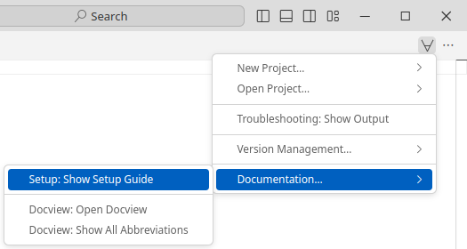
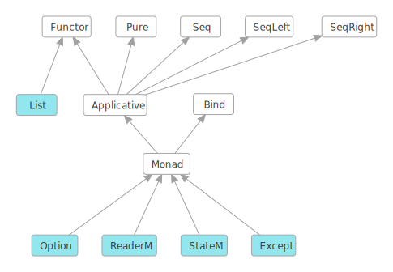

What is Lean
Lean is a functional programming language that makes it easy to write correct and maintainable code. You can also use Lean as an interactive theorem prover.
Lean programming primarily involves defining types and functions. This allows your focus to remain on the problem domain and manipulating its data, rather than the details of programming.
-- Defines a function that takes a name and produces a greeting.
def getGreeting (name : String) := s!"Hello, {name}! Isn't Lean great?"
-- The `main` function is the entry point of your program.
-- Its type is `IO Unit` because it can perform `IO` operations (side effects).
def main : IO Unit :=
-- Define a list of names
let names := ["Sebastian", "Leo", "Daniel"]
-- Map each name to a greeting
let greetings := names.map getGreeting
-- Print the list of greetings
for greeting in greetings do
IO.println greeting
Lean has numerous features, including:
- Type inference
- First-class functions
- Powerful data types
- Pattern matching
- Type classes
- Monads
- Extensible syntax
- Hygienic macros
- Dependent types
- Metaprogramming
- Multithreading
- Verification: you can prove properties of your functions using Lean itself
Tour of Lean
The best way to learn about Lean is to read and write Lean code. This article will act as a tour through some of the key features of the Lean language and give you some code snippets that you can execute on your machine. To learn about setting up a development environment, check out Setting Up Lean.
There are two primary concepts in Lean: functions and types. This tour will emphasize features of the language which fall into these two concepts.
Functions and Namespaces
The most fundamental pieces of any Lean program are functions organized into namespaces.
Functions perform work on inputs to produce outputs,
and they are organized under namespaces,
which are the primary way you group things in Lean.
They are defined using the def command,
which give the function a name and define its arguments.
namespace BasicFunctions
-- The `#eval` command evaluates an expression on the fly and prints the result.
#eval 2+2
-- You use 'def' to define a function. This one accepts a natural number
-- and returns a natural number.
-- Parentheses are optional for function arguments, except for when
-- you use an explicit type annotation.
-- Lean can often infer the type of the function's arguments.
def sampleFunction1 x := x*x + 3
-- Apply the function, naming the function return result using 'def'.
-- The variable type is inferred from the function return type.
def result1 := sampleFunction1 4573
-- This line uses an interpolated string to print the result. Expressions inside
-- braces `{}` are converted into strings using the polymorphic method `toString`
#eval println! "The result of squaring the integer 4573 and adding 3 is {result1}"
-- When needed, annotate the type of a parameter name using '(argument : type)'.
def sampleFunction2 (x : Nat) := 2*x*x - x + 3
def result2 := sampleFunction2 (7 + 4)
#eval println! "The result of applying the 2nd sample function to (7 + 4) is {result2}"
-- Conditionals use if/then/else
def sampleFunction3 (x : Int) :=
if x > 100 then
2*x*x - x + 3
else
2*x*x + x - 37
#eval println! "The result of applying sampleFunction3 to 2 is {sampleFunction3 2}"
end BasicFunctions
-- Lean has first-class functions.
-- `twice` takes two arguments `f` and `a` where
-- `f` is a function from natural numbers to natural numbers, and
-- `a` is a natural number.
def twice (f : Nat → Nat) (a : Nat) :=
f (f a)
-- `fun` is used to declare anonymous functions
#eval twice (fun x => x + 2) 10
-- You can prove theorems about your functions.
-- The following theorem states that for any natural number `a`,
-- adding 2 twice produces a value equal to `a + 4`.
theorem twiceAdd2 (a : Nat) : twice (fun x => x + 2) a = a + 4 :=
-- The proof is by reflexivity. Lean "symbolically" reduces both sides of the equality
-- until they are identical.
rfl
-- `(· + 2)` is syntax sugar for `(fun x => x + 2)`. The parentheses + `·` notation
-- is useful for defining simple anonymous functions.
#eval twice (· + 2) 10
-- Enumerated types are a special case of inductive types in Lean,
-- which we will learn about later.
-- The following command creates a new type `Weekday`.
inductive Weekday where
| sunday : Weekday
| monday : Weekday
| tuesday : Weekday
| wednesday : Weekday
| thursday : Weekday
| friday : Weekday
| saturday : Weekday
-- `Weekday` has 7 constructors/elements.
-- The constructors live in the `Weekday` namespace.
-- Think of `sunday`, `monday`, …, `saturday` as being distinct elements of `Weekday`,
-- with no other distinguishing properties.
-- The command `#check` prints the type of a term in Lean.
#check Weekday.sunday
#check Weekday.monday
-- The `open` command opens a namespace, making all declarations in it accessible without
-- qualification.
open Weekday
#check sunday
#check tuesday
-- You can define functions by pattern matching.
-- The following function converts a `Weekday` into a natural number.
def natOfWeekday (d : Weekday) : Nat :=
match d with
| sunday => 1
| monday => 2
| tuesday => 3
| wednesday => 4
| thursday => 5
| friday => 6
| saturday => 7
#eval natOfWeekday tuesday
def isMonday : Weekday → Bool :=
-- `fun` + `match` is a common idiom.
-- The following expression is syntax sugar for
-- `fun d => match d with | monday => true | _ => false`.
fun
| monday => true
| _ => false
#eval isMonday monday
#eval isMonday sunday
-- Lean has support for type classes and polymorphic methods.
-- The `toString` method converts a value into a `String`.
#eval toString 10
#eval toString (10, 20)
-- The method `toString` converts values of any type that implements
-- the class `ToString`.
-- You can implement instances of `ToString` for your own types.
instance : ToString Weekday where
toString (d : Weekday) : String :=
match d with
| sunday => "Sunday"
| monday => "Monday"
| tuesday => "Tuesday"
| wednesday => "Wednesday"
| thursday => "Thursday"
| friday => "Friday"
| saturday => "Saturday"
#eval toString (sunday, 10)
def Weekday.next (d : Weekday) : Weekday :=
match d with
| sunday => monday
| monday => tuesday
| tuesday => wednesday
| wednesday => thursday
| thursday => friday
| friday => saturday
| saturday => sunday
#eval Weekday.next Weekday.wednesday
-- Since the `Weekday` namespace has already been opened, you can also write
#eval next wednesday
-- Matching on a parameter like in the previous definition
-- is so common that Lean provides syntax sugar for it. The following
-- function uses it.
def Weekday.previous : Weekday -> Weekday
| sunday => saturday
| monday => sunday
| tuesday => monday
| wednesday => tuesday
| thursday => wednesday
| friday => thursday
| saturday => friday
#eval next (previous wednesday)
-- We can prove that for any `Weekday` `d`, `next (previous d) = d`
theorem Weekday.nextOfPrevious (d : Weekday) : next (previous d) = d :=
match d with
| sunday => rfl
| monday => rfl
| tuesday => rfl
| wednesday => rfl
| thursday => rfl
| friday => rfl
| saturday => rfl
-- You can automate definitions such as `Weekday.nextOfPrevious`
-- using metaprogramming (or "tactics").
theorem Weekday.nextOfPrevious' (d : Weekday) : next (previous d) = d := by
cases d -- A proof by case distinction
all_goals rfl -- Each case is solved using `rfl`
Quickstart
These instructions will walk you through setting up Lean 4 together with VS Code as an editor for Lean 4. See Setup for supported platforms and other ways to set up Lean 4.
-
Install VS Code.
-
Launch VS Code and install the
lean4extension by clicking on the "Extensions" sidebar entry and searching for "lean4".
-
Open the Lean 4 setup guide by creating a new text file using "File > New Text File" (
Ctrl+N), clicking on the ∀-symbol in the top right and selecting "Documentation… > Setup: Show Setup Guide".
-
Follow the Lean 4 setup guide. It will walk you through learning resources for Lean 4, teach you how to set up Lean's dependencies on your platform, install Lean 4 for you at the click of a button and help you set up your first project.
Supported Platforms
Tier 1
Platforms built & tested by our CI, available as nightly releases via elan (see below)
- x86-64 Linux with glibc 2.27+
- x86-64 macOS 10.15+
- x86-64 Windows 10+
Tier 2
Platforms cross-compiled but not tested by our CI, available as nightly releases
Releases may be silently broken due to the lack of automated testing. Issue reports and fixes are welcome.
- aarch64 Linux with glibc 2.27+
- aarch64 (Apple Silicon) macOS
- x86 (32-bit) Linux
- Emscripten Web Assembly
Setting Up Lean
See also the quickstart instructions for a standard setup with VS Code as the editor.
Release builds for all supported platforms are available at https://github.com/leanprover/lean4/releases.
Instead of downloading these and setting up the paths manually, however, it is recommended to use the Lean version manager elan instead:
$ elan self update # in case you haven't updated elan in a while
# download & activate latest Lean 4 stable release (https://github.com/leanprover/lean4/releases)
$ elan default leanprover/lean4:stable
lake
Lean 4 comes with a package manager named lake.
Use lake init foo to initialize a Lean package foo in the current directory, and lake build to typecheck and build it as well as all its dependencies. Use lake help to learn about further commands.
The general directory structure of a package foo is
lakefile.lean # package configuration
lean-toolchain # specifies the lean version to use
Foo.lean # main file, import via `import Foo`
Foo/
A.lean # further files, import via e.g. `import Foo.A`
A/... # further nesting
.lake/ # `lake` build output directory
After running lake build you will see a binary named ./.lake/build/bin/foo and when you run it you should see the output:
Hello, world!
Editing
Lean implements the Language Server Protocol that can be used for interactive development in Emacs, VS Code, and possibly other editors.
Changes must be saved to be visible in other files, which must then be invalidated using an editor command (see links above).
Theorem Proving in Lean
We strongly encourage you to read the book Theorem Proving in Lean. Many Lean users consider it to be the Lean Bible.
Functional Programming in Lean
The goal of this book is to be an accessible introduction to using Lean 4 as a programming language. It should be useful both to people who want to use Lean as a general-purpose programming language and to mathematicians who want to develop larger-scale proof automation but do not have a background in functional programming. It does not assume any background with functional programming, though it's probably not a good first book on programming in general. New content will be added once per month until it's done.
Examples
- Palindromes
- Binary Search Trees
- A Certified Type Checker
- The Well-Typed Interpreter
- Dependent de Bruijn Indices
- Parametric Higher-Order Abstract Syntax
Palindromes
Palindromes are lists that read the same from left to right and from right to left.
For example, [a, b, b, a] and [a, h, a] are palindromes.
We use an inductive predicate to specify whether a list is a palindrome or not.
Recall that inductive predicates, or inductively defined propositions, are a convenient
way to specify functions of type ... → Prop.
This example is a based on an example from the book "The Hitchhiker's Guide to Logical Verification".
inductive Palindrome: {α : Type u_1} → List α → Prop
Palindrome : List: Type u_1 → Type u_1
List α: Type u_1
α → Prop: Type
Prop where
| nil: ∀ {α : Type u_1}, Palindrome []
nil : Palindrome: {α : Type u_1} → List α → Prop
Palindrome []: List ?m.17
[]
| single: ∀ {α : Type u_1} (a : α), Palindrome [a]
single : (a: α
a : α: Type u_1
α) → Palindrome: {α : Type u_1} → List α → Prop
Palindrome [a: α
a]
| sandwich: ∀ {α : Type u_1} {as : List α} (a : α), Palindrome as → Palindrome ([a] ++ as ++ [a])
sandwich : (a: α
a : α: Type u_1
α) → Palindrome: {α : Type u_1} → List α → Prop
Palindrome as: List α
as → Palindrome: {α : Type u_1} → List α → Prop
Palindrome ([a: α
a] ++ as: List α
as ++ [a: α
a])
The definition distinguishes three cases: (1) [] is a palindrome; (2) for any element
a, the singleton list [a] is a palindrome; (3) for any element a and any palindrome
[b₁, . . ., bₙ], the list [a, b₁, . . ., bₙ, a] is a palindrome.
We now prove that the reverse of a palindrome is a palindrome using induction on the inductive predicate h : Palindrome as.
theorempalindrome_reverse (palindrome_reverse: ∀ {α : Type u_1} {as : List α}, Palindrome as → Palindrome (List.reverse as)h :h: Palindrome asPalindromePalindrome: {α : Type u_1} → List α → Propas) :as: List ?m.394PalindromePalindrome: {α : Type u_1} → List α → Propas.as: List ?m.394reverse :=reverse: {α : Type u_1} → List α → List αGoals accomplished! 🐙α✝: Type u_1
as: List α✝
h: Palindrome asPalindrome (List.reverse as)α✝: Type u_1
as: List α✝
nilPalindrome (List.reverse [])Goals accomplished! 🐙α✝: Type u_1
as: List α✝
a: α✝
singlePalindrome (List.reverse [a])Goals accomplished! 🐙α✝: Type u_1
as, as✝: List α✝
a: α✝
h: Palindrome as✝
ih: Palindrome (List.reverse as✝)
sandwichPalindrome (List.reverse ([a] ++ as✝ ++ [a]));α✝: Type u_1
as, as✝: List α✝
a: α✝
h: Palindrome as✝
ih: Palindrome (List.reverse as✝)
sandwichPalindrome (a :: (List.reverse as✝ ++ [a]))Goals accomplished! 🐙
If a list as is a palindrome, then the reverse of as is equal to itself.
theoremreverse_eq_of_palindrome (reverse_eq_of_palindrome: ∀ {α : Type u_1} {as : List α}, Palindrome as → List.reverse as = ash :h: Palindrome asPalindromePalindrome: {α : Type u_1} → List α → Propas) :as: List ?m.696as.as: List ?m.696reverse =reverse: {α : Type u_1} → List α → List αas :=as: List ?m.696Goals accomplished! 🐙α✝: Type u_1
as: List α✝
h: Palindrome asList.reverse as = asα✝: Type u_1
as: List α✝
nilList.reverse [] = []Goals accomplished! 🐙α✝: Type u_1
as: List α✝
a: α✝
singleList.reverse [a] = [a]Goals accomplished! 🐙α✝: Type u_1
as, as✝: List α✝
a: α✝
h: Palindrome as✝
ih: List.reverse as✝ = as✝
sandwichList.reverse ([a] ++ as✝ ++ [a]) = [a] ++ as✝ ++ [a]α✝: Type u_1
as, as✝: List α✝
a: α✝
h: Palindrome as✝
ih: List.reverse as✝ = as✝
sandwichList.reverse ([a] ++ as✝ ++ [a]) = [a] ++ as✝ ++ [a]ih: List.reverse as✝ = as✝α✝: Type u_1
as, as✝: List α✝
a: α✝
h: Palindrome as✝
ih: List.reverse as✝ = as✝
sandwichList.reverse ([a] ++ as✝ ++ [a]) = [a] ++ as✝ ++ [a]Goals accomplished! 🐙
Note that you can also easily prove palindrome_reverse using reverse_eq_of_palindrome.
example (example: ∀ {α : Type u_1} {as : List α}, Palindrome as → Palindrome (List.reverse as)h :h: Palindrome asPalindromePalindrome: {α : Type u_1} → List α → Propas) :as: List ?m.946PalindromePalindrome: {α : Type u_1} → List α → Propas.as: List ?m.946reverse :=reverse: {α : Type u_1} → List α → List αGoals accomplished! 🐙Goals accomplished! 🐙
Given a nonempty list, the function List.last returns its element.
Note that we use (by simp) to prove that a₂ :: as ≠ [] in the recursive application.
defList.last : (List.last: {α : Type u_1} → (as : List α) → as ≠ [] → αas :as: List αListList: Type u_1 → Type u_1α) →α: Type u_1as ≠as: List α[] →[]: List αα | [α: Type u_1a], _ =>a: αa | _::a: αa₂::a₂: αas, _ => (as: List αa₂::a₂: αas).as: List αlast (last: {α : Type u_1} → (as : List α) → as ≠ [] → αGoals accomplished! 🐙)Goals accomplished! 🐙
We use the function List.last to prove the following theorem that says that if a list as is not empty,
then removing the last element from as and appending it back is equal to as.
We use the attribute @[simp] to instruct the simp tactic to use this theorem as a simplification rule.
@[simp] theoremList.dropLast_append_last (List.dropLast_append_last: ∀ {α : Type u_1} {as : List α} (h : as ≠ []), dropLast as ++ [last as h] = ash :h: as ≠ []as ≠as: List ?m.1469[]) :[]: List ?m.1469as.as: List ?m.1469dropLast ++ [dropLast: {α : Type u_1} → List α → List αas.as: List ?m.1469lastlast: {α : Type u_1} → (as : List α) → as ≠ [] → αh] =h: as ≠ []as :=as: List ?m.1469Goals accomplished! 🐙α✝: Type u_1
as: List α✝
h: as ≠ []dropLast as ++ [last as h] = asα✝: Type u_1
as: List α✝
h: [] ≠ []dropLast [] ++ [last [] h] = []Goals accomplished! 🐙α✝: Type u_1
as: List α✝
a: α✝
h: [a] ≠ []dropLast [a] ++ [last [a] h] = [a]Goals accomplished! 🐙α✝: Type u_1
as✝: List α✝
a₁, a₂: α✝
as: List α✝
h: a₁ :: a₂ :: as ≠ []dropLast (a₁ :: a₂ :: as) ++ [last (a₁ :: a₂ :: as) h] = a₁ :: a₂ :: asα✝: Type u_1
as✝: List α✝
a₁, a₂: α✝
as: List α✝
h: a₁ :: a₂ :: as ≠ []dropLast (a₂ :: as) ++ [last (a₂ :: as) (_ : ¬a₂ :: as = [])] = a₂ :: asα✝: Type u_1
as✝: List α✝
a₁, a₂: α✝
as: List α✝
h: a₁ :: a₂ :: as ≠ []dropLast (a₂ :: as) ++ [last (a₂ :: as) (_ : ¬a₂ :: as = [])] = a₂ :: asGoals accomplished! 🐙Goals accomplished! 🐙Goals accomplished! 🐙
We now define the following auxiliary induction principle for lists using well-founded recursion on as.length.
We can read it as follows, to prove motive as, it suffices to show that: (1) motive []; (2) motive [a] for any a;
(3) if motive as holds, then motive ([a] ++ as ++ [b]) also holds for any a, b, and as.
Note that the structure of this induction principle is very similar to the Palindrome inductive predicate.
theoremList.palindrome_ind (List.palindrome_ind: ∀ {α : Type u_1} (motive : List α → Prop), motive [] → (∀ (a : α), motive [a]) → (∀ (a b : α) (as : List α), motive as → motive ([a] ++ as ++ [b])) → ∀ (as : List α), motive asmotive :motive: List α → PropListList: Type u_1 → Type u_1α →α: Type u_1Prop) (Prop: Typeh₁ :h₁: motive []motivemotive: List α → Prop[]) ([]: List αh₂ : (h₂: ∀ (a : α), motive [a]a :a: αα) →α: Type u_1motive [motive: List α → Propa]) (a: αh₃ : (h₃: ∀ (a b : α) (as : List α), motive as → motive ([a] ++ as ++ [b])aa: αb :b: αα) → (α: Type u_1as :as: List αListList: Type u_1 → Type u_1α) →α: Type u_1motivemotive: List α → Propas →as: List αmotive ([motive: List α → Propa] ++a: αas ++ [as: List αb])) (b: αas :as: List αListList: Type u_1 → Type u_1α) :α: Type u_1motivemotive: List α → Propas := matchas: List αas with | [] =>as: List αh₁ | [h₁: motive []a] =>a: αh₂h₂: ∀ (a : α), motive [a]a |a: αa₁::a₁: αa₂::a₂: αas' => haveas': List αih :=ih: motive (dropLast (a₂ :: as'))palindrome_indpalindrome_ind: ∀ {α : Type u_1} (motive : List α → Prop), motive [] → (∀ (a : α), motive [a]) → (∀ (a b : α) (as : List α), motive as → motive ([a] ++ as ++ [b])) → ∀ (as : List α), motive asmotivemotive: List α → Proph₁h₁: motive []h₂h₂: ∀ (a : α), motive [a]h₃ (h₃: ∀ (a b : α) (as : List α), motive as → motive ([a] ++ as ++ [b])a₂::a₂: αas').as': List αdropLast have : [dropLast: {α : Type u_1} → List α → List αa₁] ++ (a₁: αa₂::a₂: αas').as': List αdropLast ++ [(dropLast: {α : Type u_1} → List α → List αa₂::a₂: αas').as': List αlast (last: {α : Type u_1} → (as : List α) → as ≠ [] → αGoals accomplished! 🐙)] =Goals accomplished! 🐙a₁::a₁: αa₂::a₂: αas' :=as': List αGoals accomplished! 🐙Goals accomplished! 🐙this ▸this: [a₁] ++ dropLast (a₂ :: as') ++ [last (a₂ :: as') (_ : ¬a₂ :: as' = [])] = a₁ :: a₂ :: as'h₃h₃: ∀ (a b : α) (as : List α), motive as → motive ([a] ++ as ++ [b])__: α__: α__: List αih termination_byih: motive (dropLast (a₂ :: as'))as.as: List αlengthlength: {α : Type u_1} → List α → Nat
We use our new induction principle to prove that if as.reverse = as, then Palindrome as holds.
Note that we use the using modifier to instruct the induction tactic to use this induction principle
instead of the default one for lists.
theoremList.palindrome_of_eq_reverse (List.palindrome_of_eq_reverse: ∀ {α : Type u_1} {as : List α}, reverse as = as → Palindrome ash :h: reverse as = asas.as: List ?m.9729reverse =reverse: {α : Type u_1} → List α → List αas) :as: List ?m.9729PalindromePalindrome: {α : Type u_1} → List α → Propas :=as: List ?m.9729Goals accomplished! 🐙α✝: Type u_1
h: reverse [] = []
h₁Palindrome []α✝: Type u_1
a✝: α✝
h: reverse [a✝] = [a✝]Palindrome [a✝]α✝: Type u_1
a✝¹, b✝: α✝
as✝: List α✝
a✝: reverse as✝ = as✝ → Palindrome as✝
h: reverse ([a✝¹] ++ as✝ ++ [b✝]) = [a✝¹] ++ as✝ ++ [b✝]Palindrome ([a✝¹] ++ as✝ ++ [b✝])α✝: Type u_1
h: reverse [] = []
h₁Palindrome []α✝: Type u_1
a✝: α✝
h: reverse [a✝] = [a✝]Palindrome [a✝]α✝: Type u_1
a✝¹, b✝: α✝
as✝: List α✝
a✝: reverse as✝ = as✝ → Palindrome as✝
h: reverse ([a✝¹] ++ as✝ ++ [b✝]) = [a✝¹] ++ as✝ ++ [b✝]Palindrome ([a✝¹] ++ as✝ ++ [b✝])Goals accomplished! 🐙α✝: Type u_1
a✝: α✝
h: reverse [a✝] = [a✝]
h₂Palindrome [a✝]α✝: Type u_1
a✝¹, b✝: α✝
as✝: List α✝
a✝: reverse as✝ = as✝ → Palindrome as✝
h: reverse ([a✝¹] ++ as✝ ++ [b✝]) = [a✝¹] ++ as✝ ++ [b✝]Palindrome ([a✝¹] ++ as✝ ++ [b✝])Goals accomplished! 🐙α✝: Type u_1
a✝¹, b✝: α✝
as✝: List α✝
a✝: reverse as✝ = as✝ → Palindrome as✝
h: reverse ([a✝¹] ++ as✝ ++ [b✝]) = [a✝¹] ++ as✝ ++ [b✝]
h₃Palindrome ([a✝¹] ++ as✝ ++ [b✝])α✝: Type u_1
a, b: α✝
as: List α✝
ih: reverse as = as → Palindrome as
h: reverse ([a] ++ as ++ [b]) = [a] ++ as ++ [b]Palindrome ([a] ++ as ++ [b])Goals accomplished! 🐙Goals accomplished! 🐙α✝: Type u_1
a: α✝
as: List α✝
ih: reverse as = as → Palindrome as
h: reverse ([a] ++ as ++ [a]) = [a] ++ as ++ [a]Palindrome ([a] ++ as ++ [a])α✝: Type u_1
a: α✝
as: List α✝
ih: reverse as = as → Palindrome as
h: reverse ([a] ++ as ++ [a]) = [a] ++ as ++ [a]Palindrome ([a] ++ as ++ [a])Goals accomplished! 🐙Goals accomplished! 🐙Goals accomplished! 🐙
We now define a function that returns true iff as is a palindrome.
The function assumes that the type α has decidable equality. We need this assumption
because we need to compare the list elements.
def List.isPalindrome: {α : Type u_1} → [inst : DecidableEq α] → List α → Bool
List.isPalindrome [DecidableEq: Type u_1 → Type u_1
DecidableEq α: Type u_1
α] (as: List α
as : List: Type u_1 → Type u_1
List α: Type u_1
α) : Bool: Type
Bool :=
as: List α
as.reverse: {α : Type u_1} → List α → List α
reverse = as: List α
as
It is straightforward to prove that isPalindrome is correct using the previously proved theorems.
theoremList.isPalindrome_correct [List.isPalindrome_correct: ∀ {α : Type u_1} [inst : DecidableEq α] (as : List α), isPalindrome as = true ↔ Palindrome asDecidableEqDecidableEq: Type u_1 → Type u_1α] (α: Type u_1as :as: List αListList: Type u_1 → Type u_1α) :α: Type u_1as.as: List αisPalindrome ↔isPalindrome: {α : Type u_1} → [inst : DecidableEq α] → List α → BoolPalindromePalindrome: {α : Type u_1} → List α → Propas :=as: List αGoals accomplished! 🐙α: Type u_1
inst✝: DecidableEq α
as: List αreverse as = as ↔ Palindrome asGoals accomplished! 🐙[1,1: Nat2,2: Nat1].1: NatisPalindromeisPalindrome: {α : Type} → [inst : DecidableEq α] → List α → Bool[1,1: Nat2,2: Nat3,3: Nat1].1: NatisPalindromeisPalindrome: {α : Type} → [inst : DecidableEq α] → List α → Boolexample : [example: List.isPalindrome [1, 2, 1] = true1,1: Nat2,2: Nat1].1: NatisPalindrome :=isPalindrome: {α : Type} → [inst : DecidableEq α] → List α → Boolrflrfl: ∀ {α : Type} {a : α}, a = aexample : [example: List.isPalindrome [1, 2, 2, 1] = true1,1: Nat2,2: Nat2,2: Nat1].1: NatisPalindrome :=isPalindrome: {α : Type} → [inst : DecidableEq α] → List α → Boolrflrfl: ∀ {α : Type} {a : α}, a = aexample : ![example: (!List.isPalindrome [1, 2, 3, 1]) = true1,1: Nat2,2: Nat3,3: Nat1].1: NatisPalindrome :=isPalindrome: {α : Type} → [inst : DecidableEq α] → List α → Boolrflrfl: ∀ {α : Type} {a : α}, a = a
Binary Search Trees
If the type of keys can be totally ordered -- that is, it supports a well-behaved ≤ comparison --
then maps can be implemented with binary search trees (BSTs). Insert and lookup operations on BSTs take time
proportional to the height of the tree. If the tree is balanced, the operations therefore take logarithmic time.
This example is based on a similar example found in the "Software Foundations" book (volume 3).
We use Nat as the key type in our implementation of BSTs,
since it has a convenient total order with lots of theorems and automation available.
We leave as an exercise to the reader the generalization to arbitrary types.
inductive Tree: Type v → Type v
Tree (β: Type v
β : Type v: Type (v + 1)
Type v) where
| leaf: {β : Type v} → Tree β
leaf
| node: {β : Type v} → Tree β → Nat → β → Tree β → Tree β
node (left: Tree β
left : Tree: Type v → Type v
Tree β: Type v
β) (key: Nat
key : Nat: Type
Nat) (value: β
value : β: Type v
β) (right: Tree β
right : Tree: Type v → Type v
Tree β: Type v
β)
deriving Repr: Type u → Type u
Repr
The function contains returns true iff the given tree contains the key k.
defTree.contains (Tree.contains: {β : Type u_1} → Tree β → Nat → Boolt :t: Tree βTreeTree: Type u_1 → Type u_1β) (β: Type u_1k :k: NatNat) :Nat: TypeBool := matchBool: Typet with |t: Tree βleaf =>leaf: {β : Type ?u.1319} → Tree βfalse |false: Boolnodenode: {β : Type ?u.1328} → Tree β → Nat → β → Tree β → Tree βleftleft: Tree βkeykey: Natright => ifright: Tree βk <k: Natkey thenkey: Natleft.left: Tree βcontainscontains: {β : Type u_1} → Tree β → Nat → Boolk else ifk: Natkey <key: Natk thenk: Natright.right: Tree βcontainscontains: {β : Type u_1} → Tree β → Nat → Boolk elsek: Nattruetrue: Bool
t.find? k returns some v if v is the value bound to key k in the tree t. It returns none otherwise.
def Tree.find?: {β : Type u_1} → Tree β → Nat → Option β
Tree.find? (t: Tree β
t : Tree: Type u_1 → Type u_1
Tree β: Type u_1
β) (k: Nat
k : Nat: Type
Nat) : Option: Type u_1 → Type u_1
Option β: Type u_1
β :=
match t: Tree β
t with
| leaf: {β : Type ?u.1660} → Tree β
leaf => none: {α : Type u_1} → Option α
none
| node: {β : Type ?u.1672} → Tree β → Nat → β → Tree β → Tree β
node left: Tree β
left key: Nat
key value: β
value right: Tree β
right =>
if k: Nat
k < key: Nat
key then
left: Tree β
left.find?: {β : Type u_1} → Tree β → Nat → Option β
find? k: Nat
k
else if key: Nat
key < k: Nat
k then
right: Tree β
right.find?: {β : Type u_1} → Tree β → Nat → Option β
find? k: Nat
k
else
some: {α : Type u_1} → α → Option α
some value: β
value
t.insert k v is the map containing all the bindings of t along with a binding of k to v.
def Tree.insert: {β : Type u_1} → Tree β → Nat → β → Tree β
Tree.insert (t: Tree β
t : Tree: Type u_1 → Type u_1
Tree β: Type u_1
β) (k: Nat
k : Nat: Type
Nat) (v: β
v : β: Type u_1
β) : Tree: Type u_1 → Type u_1
Tree β: Type u_1
β :=
match t: Tree β
t with
| leaf: {β : Type ?u.2009} → Tree β
leaf => node: {β : Type u_1} → Tree β → Nat → β → Tree β → Tree β
node leaf: {β : Type u_1} → Tree β
leaf k: Nat
k v: β
v leaf: {β : Type u_1} → Tree β
leaf
| node: {β : Type ?u.2024} → Tree β → Nat → β → Tree β → Tree β
node left: Tree β
left key: Nat
key value: β
value right: Tree β
right =>
if k: Nat
k < key: Nat
key then
node: {β : Type u_1} → Tree β → Nat → β → Tree β → Tree β
node (left: Tree β
left.insert: {β : Type u_1} → Tree β → Nat → β → Tree β
insert k: Nat
k v: β
v) key: Nat
key value: β
value right: Tree β
right
else if key: Nat
key < k: Nat
k then
node: {β : Type u_1} → Tree β → Nat → β → Tree β → Tree β
node left: Tree β
left key: Nat
key value: β
value (right: Tree β
right.insert: {β : Type u_1} → Tree β → Nat → β → Tree β
insert k: Nat
k v: β
v)
else
node: {β : Type u_1} → Tree β → Nat → β → Tree β → Tree β
node left: Tree β
left k: Nat
k v: β
v right: Tree β
right
Let's add a new operation to our tree: converting it to an association list that contains the key--value bindings from the tree stored as pairs. If that list is sorted by the keys, then any two trees that represent the same map would be converted to the same list. Here's a function that does so with an in-order traversal of the tree.
defTree.toList (Tree.toList: {β : Type u_1} → Tree β → List (Nat × β)t :t: Tree βTreeTree: Type u_1 → Type u_1β) :β: Type u_1List (List: Type u_1 → Type u_1Nat ×Nat: Typeβ) := matchβ: Type u_1t with |t: Tree βleaf =>leaf: {β : Type ?u.2378} → Tree β[] |[]: List (Nat × β)nodenode: {β : Type ?u.2390} → Tree β → Nat → β → Tree β → Tree βll: Tree βkk: Natvv: βr =>r: Tree βl.l: Tree βtoList ++ [(toList: {β : Type u_1} → Tree β → List (Nat × β)k,k: Natv)] ++v: βr.r: Tree βtoListtoList: {β : Type u_1} → Tree β → List (Nat × β)Tree.leaf.Tree.leaf: {β : Type} → Tree βinsertinsert: {β : Type} → Tree β → Nat → β → Tree β22: Nat"two" |>."two": Stringinsertinsert: {β : Type} → Tree β → Nat → β → Tree β33: Nat"three" |>."three": Stringinsertinsert: {β : Type} → Tree β → Nat → β → Tree β11: Nat"one""one": StringTree.leaf.Tree.leaf: {β : Type} → Tree βinsertinsert: {β : Type} → Tree β → Nat → β → Tree β22: Nat"two" |>."two": Stringinsertinsert: {β : Type} → Tree β → Nat → β → Tree β33: Nat"three" |>."three": Stringinsertinsert: {β : Type} → Tree β → Nat → β → Tree β11: Nat"one" |>."one": StringtoListtoList: {β : Type} → Tree β → List (Nat × β)
The implementation of Tree.toList is inefficient because of how it uses the ++ operator.
On a balanced tree its running time is linearithmic, because it does a linear number of
concatenations at each level of the tree. On an unbalanced tree it's quadratic time.
Here's a tail-recursive implementation than runs in linear time, regardless of whether the tree is balanced:
def Tree.toListTR: {β : Type u_1} → Tree β → List (Nat × β)
Tree.toListTR (t: Tree β
t : Tree: Type u_1 → Type u_1
Tree β: Type u_1
β) : List: Type u_1 → Type u_1
List (Nat: Type
Nat × β: Type u_1
β) :=
go: Tree β → List (Nat × β) → List (Nat × β)
go t: Tree β
t []: List (Nat × β)
[]
where
go: Tree β → List (Nat × β) → List (Nat × β)
go (t: Tree β
t : Tree: Type u_1 → Type u_1
Tree β: Type u_1
β) (acc: List (Nat × β)
acc : List: Type u_1 → Type u_1
List (Nat: Type
Nat × β: Type u_1
β)) : List: Type u_1 → Type u_1
List (Nat: Type
Nat × β: Type u_1
β) :=
match t: Tree β
t with
| leaf: {β : Type ?u.2888} → Tree β
leaf => acc: List (Nat × β)
acc
| node: {β : Type ?u.2898} → Tree β → Nat → β → Tree β → Tree β
node l: Tree β
l k: Nat
k v: β
v r: Tree β
r => go: Tree β → List (Nat × β) → List (Nat × β)
go l: Tree β
l ((k: Nat
k, v: β
v) :: go: Tree β → List (Nat × β) → List (Nat × β)
go r: Tree β
r acc: List (Nat × β)
acc)
We now prove that t.toList and t.toListTR return the same list.
The proof is on induction, and as we used the auxiliary function go
to define Tree.toListTR, we use the auxiliary theorem go to prove the theorem.
The proof of the auxiliary theorem is by induction on t.
The generalizing acc modifier instructs Lean to revert acc, apply the
induction theorem for Trees, and then reintroduce acc in each case.
By using generalizing, we obtain the more general induction hypotheses
-
left_ih : ∀ acc, toListTR.go left acc = toList left ++ acc -
right_ih : ∀ acc, toListTR.go right acc = toList right ++ acc
Recall that the combinator tac <;> tac' runs tac on the main goal and tac' on each produced goal,
concatenating all goals produced by tac'. In this theorem, we use it to apply
simp and close each subgoal produced by the induction tactic.
The simp parameters toListTR.go and toList instruct the simplifier to try to reduce
and/or apply auto generated equation theorems for these two functions.
The parameter * instructs the simplifier to use any equation in a goal as rewriting rules.
In this particular case, simp uses the induction hypotheses as rewriting rules.
Finally, the parameter List.append_assoc instructs the simplifier to use the
List.append_assoc theorem as a rewriting rule.
theoremTree.toList_eq_toListTR (Tree.toList_eq_toListTR: ∀ {β : Type u_1} (t : Tree β), toList t = toListTR tt :t: Tree βTreeTree: Type u_1 → Type u_1β) :β: Type u_1t.t: Tree βtoList =toList: {β : Type u_1} → Tree β → List (Nat × β)t.t: Tree βtoListTR :=toListTR: {β : Type u_1} → Tree β → List (Nat × β)Goals accomplished! 🐙whereGoals accomplished! 🐙go (go: ∀ (t : Tree β) (acc : List (Nat × β)), toListTR.go t acc = toList t ++ acct :t: Tree βTreeTree: Type u_1 → Type u_1β) (β: Type u_1acc :acc: List (Nat × β)List (List: Type u_1 → Type u_1Nat ×Nat: Typeβ)) :β: Type u_1toListTR.gotoListTR.go: {β : Type u_1} → Tree β → List (Nat × β) → List (Nat × β)tt: Tree βacc =acc: List (Nat × β)t.t: Tree βtoList ++toList: {β : Type u_1} → Tree β → List (Nat × β)acc :=acc: List (Nat × β)Goals accomplished! 🐙β: Type u_1
t: Tree β
acc: List (Nat × β)
leaftoListTR.go leaf acc = toList leaf ++ accβ: Type u_1
t, left✝: Tree β
key✝: Nat
value✝: β
right✝: Tree β
left_ih✝: ∀ (acc : List (Nat × β)), toListTR.go left✝ acc = toList left✝ ++ acc
right_ih✝: ∀ (acc : List (Nat × β)), toListTR.go right✝ acc = toList right✝ ++ acc
acc: List (Nat × β)toListTR.go (node left✝ key✝ value✝ right✝) acc = toList (node left✝ key✝ value✝ right✝) ++ accβ: Type u_1
t: Tree β
acc: List (Nat × β)
leaftoListTR.go leaf acc = toList leaf ++ accβ: Type u_1
t, left✝: Tree β
key✝: Nat
value✝: β
right✝: Tree β
left_ih✝: ∀ (acc : List (Nat × β)), toListTR.go left✝ acc = toList left✝ ++ acc
right_ih✝: ∀ (acc : List (Nat × β)), toListTR.go right✝ acc = toList right✝ ++ acc
acc: List (Nat × β)toListTR.go (node left✝ key✝ value✝ right✝) acc = toList (node left✝ key✝ value✝ right✝) ++ accGoals accomplished! 🐙
The [csimp] annotation instructs the Lean code generator to replace
any Tree.toList with Tree.toListTR when generating code.
@[csimp] theoremTree.toList_eq_toListTR_csimp : @Tree.toList_eq_toListTR_csimp: @toList = @toListTRTree.toList = @Tree.toList: {β : Type u_1} → Tree β → List (Nat × β)Tree.toListTR :=Tree.toListTR: {β : Type u_1} → Tree β → List (Nat × β)Goals accomplished! 🐙β: Type u_1
t: Tree β
h.htoList t = toListTR tGoals accomplished! 🐙
The implementations of Tree.find? and Tree.insert assume that values of type tree obey the BST invariant:
for any non-empty node with key k, all the values of the left subtree are less than k and all the values
of the right subtree are greater than k. But that invariant is not part of the definition of tree.
So, let's formalize the BST invariant. Here's one way to do so. First, we define a helper ForallTree
to express that idea that a predicate holds at every node of a tree:
inductive ForallTree: {β : Type u_1} → (Nat → β → Prop) → Tree β → Prop
ForallTree (p: Nat → β → Prop
p : Nat: Type
Nat → β: Type u_1
β → Prop: Type
Prop) : Tree: Type u_1 → Type u_1
Tree β: Type u_1
β → Prop: Type
Prop
| leaf: ∀ {β : Type u_1} {p : Nat → β → Prop}, ForallTree p Tree.leaf
leaf : ForallTree: {β : Type u_1} → (Nat → β → Prop) → Tree β → Prop
ForallTree p: Nat → β → Prop
p .leaf: {β : Type u_1} → Tree β
.leaf
| node: ∀ {β : Type u_1} {p : Nat → β → Prop} {left : Tree β} {key : Nat} {value : β} {right : Tree β},
ForallTree p left → p key value → ForallTree p right → ForallTree p (Tree.node left key value right)
node :
ForallTree: {β : Type u_1} → (Nat → β → Prop) → Tree β → Prop
ForallTree p: Nat → β → Prop
p left: Tree β
left →
p: Nat → β → Prop
p key: Nat
key value: β
value →
ForallTree: {β : Type u_1} → (Nat → β → Prop) → Tree β → Prop
ForallTree p: Nat → β → Prop
p right: Tree β
right →
ForallTree: {β : Type u_1} → (Nat → β → Prop) → Tree β → Prop
ForallTree p: Nat → β → Prop
p (.node: {β : Type u_1} → Tree β → Nat → β → Tree β → Tree β
.node left: Tree β
left key: Nat
key value: β
value right: Tree β
right)
Second, we define the BST invariant: An empty tree is a BST. A non-empty tree is a BST if all its left nodes have a lesser key, its right nodes have a greater key, and the left and right subtrees are themselves BSTs.
inductiveBST :BST: {β : Type u_1} → Tree β → PropTreeTree: Type u_1 → Type u_1β →β: Type u_1Prop |Prop: Typeleaf :leaf: ∀ {β : Type u_1}, BST Tree.leafBSTBST: {β : Type u_1} → Tree β → Prop.leaf |.leaf: {β : Type u_1} → Tree βnode :node: ∀ {β : Type u_1} {key : Nat} {left right : Tree β} {value : β}, ForallTree (fun k v => k < key) left → ForallTree (fun k v => key < k) right → BST left → BST right → BST (Tree.node left key value right)ForallTree (funForallTree: {β : Type u_1} → (Nat → β → Prop) → Tree β → Propkk: Nat=>k <k: Natkey)key: Natleft →left: Tree ?m.4774ForallTree (funForallTree: {β : Type u_1} → (Nat → β → Prop) → Tree β → Propkk: Nat=>key <key: Natk)k: Natright →right: Tree ?m.4774BSTBST: {β : Type u_1} → Tree β → Propleft →left: Tree ?m.4774BSTBST: {β : Type u_1} → Tree β → Propright →right: Tree ?m.4774BST (BST: {β : Type u_1} → Tree β → Prop.node.node: {β : Type u_1} → Tree β → Nat → β → Tree β → Tree βleftleft: Tree ?m.4774keykey: Natvaluevalue: ?m.4774right)right: Tree ?m.4774
We can use the macro command to create helper tactics for organizing our proofs.
The macro have_eq x y tries to prove x = y using linear arithmetic, and then
immediately uses the new equality to substitute x with y everywhere in the goal.
The modifier local specifies the scope of the macro.
/-- The `have_eq lhs rhs` tactic (tries to) prove that `lhs = rhs`,
and then replaces `lhs` with `rhs`. -/
local macro "have_eq " lhs: Lean.TSyntax `term
lhs:term: Lean.Parser.Category
term:max rhs: Lean.TSyntax `term
rhs:term: Lean.Parser.Category
term:max : tactic: Lean.Parser.Category
tactic =>
`(tactic|
(have h : $lhs: Lean.TSyntax `term
lhs = $rhs: Lean.TSyntax `term
rhs :=
-- TODO: replace with linarith
by simp_arith at *; apply Nat.le_antisymm <;> assumption
try subst $lhs: Lean.TSyntax `term
lhs))
The by_cases' e is just the regular by_cases followed by simp using all
hypotheses in the current goal as rewriting rules.
Recall that the by_cases tactic creates two goals. One where we have h : e and
another one containing h : ¬ e. The simplifier uses the h to rewrite e to True
in the first subgoal, and e to False in the second. This is particularly
useful if e is the condition of an if-statement.
/-- `by_cases' e` is a shorthand form `by_cases e <;> simp[*]` -/
local macro "by_cases' " e: Lean.TSyntax `term
e:term: Lean.Parser.Category
term : tactic: Lean.Parser.Category
tactic =>
`(tactic| by_cases $e: Lean.TSyntax `term
e <;> simp [*])
We can use the attribute [simp] to instruct the simplifier to reduce given definitions or
apply rewrite theorems. The local modifier limits the scope of this modification to this file.
attribute [local simp] Tree.insert: {β : Type u_1} → Tree β → Nat → β → Tree β
Tree.insert
We now prove that Tree.insert preserves the BST invariant using induction and case analysis.
Recall that the tactic . tac focuses on the main goal and tries to solve it using tac, or else fails.
It is used to structure proofs in Lean.
The notation ‹e› is just syntax sugar for (by assumption : e). That is, it tries to find a hypothesis h : e.
It is useful to access hypothesis that have auto generated names (aka "inaccessible") names.
theoremTree.forall_insert_of_forall (Tree.forall_insert_of_forall: ∀ {β : Type u_1} {p : Nat → β → Prop} {t : Tree β} {key : Nat} {value : β}, ForallTree p t → p key value → ForallTree p (insert t key value)h₁ :h₁: ForallTree p tForallTreeForallTree: {β : Type u_1} → (Nat → β → Prop) → Tree β → Proppp: Nat → ?m.6750 → Propt) (t: Tree ?m.6750h₂ :h₂: p key valuepp: Nat → ?m.6750 → Propkeykey: Natvalue) :value: ?m.6750ForallTreeForallTree: {β : Type u_1} → (Nat → β → Prop) → Tree β → Propp (p: Nat → ?m.6750 → Propt.t: Tree ?m.6750insertinsert: {β : Type u_1} → Tree β → Nat → β → Tree βkeykey: Natvalue) :=value: ?m.6750Goals accomplished! 🐙β✝: Type u_1
p: Nat → β✝ → Prop
t: Tree β✝
key: Nat
value: β✝
h₁: ForallTree p t
h₂: p key valueForallTree p (insert t key value)β✝: Type u_1
p: Nat → β✝ → Prop
t: Tree β✝
key: Nat
value: β✝
h₂: p key value
leafForallTree p (insert leaf key value)Goals accomplished! 🐙β✝: Type u_1
p: Nat → β✝ → Prop
t: Tree β✝
key: Nat
value: β✝
h₂: p key value
left✝: Tree β✝
key✝: Nat
value✝: β✝
right✝: Tree β✝
hl: ForallTree p left✝
hp: p key✝ value✝
hr: ForallTree p right✝
ihl: ForallTree p (insert left✝ key value)
ihr: ForallTree p (insert right✝ key value)
nodeForallTree p (insert (node left✝ key✝ value✝ right✝) key value)β✝: Type u_1
p: Nat → β✝ → Prop
t: Tree β✝
key: Nat
value: β✝
h₂: p key value
left✝: Tree β✝
k: Nat
value✝: β✝
right✝: Tree β✝
hl: ForallTree p left✝
hp: p k value✝
hr: ForallTree p right✝
ihl: ForallTree p (insert left✝ key value)
ihr: ForallTree p (insert right✝ key value)
nodeForallTree p (insert (node left✝ k value✝ right✝) key value)β✝: Type u_1
p: Nat → β✝ → Prop
t: Tree β✝
key: Nat
value: β✝
h₂: p key value
left✝: Tree β✝
k: Nat
value✝: β✝
right✝: Tree β✝
hl: ForallTree p left✝
hp: p k value✝
hr: ForallTree p right✝
ihl: ForallTree p (insert left✝ key value)
ihr: ForallTree p (insert right✝ key value)
h✝: key < k
node.inlForallTree p (node (insert left✝ key value) k value✝ right✝)β✝: Type u_1
p: Nat → β✝ → Prop
t: Tree β✝
key: Nat
value: β✝
h₂: p key value
left✝: Tree β✝
k: Nat
value✝: β✝
right✝: Tree β✝
hl: ForallTree p left✝
hp: p k value✝
hr: ForallTree p right✝
ihl: ForallTree p (insert left✝ key value)
ihr: ForallTree p (insert right✝ key value)
h✝: ¬key < kForallTree p (if k < key then node left✝ k value✝ (insert right✝ key value) else node left✝ key value right✝)β✝: Type u_1
p: Nat → β✝ → Prop
t: Tree β✝
key: Nat
value: β✝
h₂: p key value
left✝: Tree β✝
k: Nat
value✝: β✝
right✝: Tree β✝
hl: ForallTree p left✝
hp: p k value✝
hr: ForallTree p right✝
ihl: ForallTree p (insert left✝ key value)
ihr: ForallTree p (insert right✝ key value)
h✝: key < k
node.inlForallTree p (node (insert left✝ key value) k value✝ right✝)Goals accomplished! 🐙β✝: Type u_1
p: Nat → β✝ → Prop
t: Tree β✝
key: Nat
value: β✝
h₂: p key value
left✝: Tree β✝
k: Nat
value✝: β✝
right✝: Tree β✝
hl: ForallTree p left✝
hp: p k value✝
hr: ForallTree p right✝
ihl: ForallTree p (insert left✝ key value)
ihr: ForallTree p (insert right✝ key value)
h✝: ¬key < k
node.inrForallTree p (if k < key then node left✝ k value✝ (insert right✝ key value) else node left✝ key value right✝)β✝: Type u_1
p: Nat → β✝ → Prop
t: Tree β✝
key: Nat
value: β✝
h₂: p key value
left✝: Tree β✝
k: Nat
value✝: β✝
right✝: Tree β✝
hl: ForallTree p left✝
hp: p k value✝
hr: ForallTree p right✝
ihl: ForallTree p (insert left✝ key value)
ihr: ForallTree p (insert right✝ key value)
h✝¹: ¬key < k
h✝: k < key
node.inr.inlForallTree p (node left✝ k value✝ (insert right✝ key value))β✝: Type u_1
p: Nat → β✝ → Prop
t: Tree β✝
key: Nat
value: β✝
h₂: p key value
left✝: Tree β✝
k: Nat
value✝: β✝
right✝: Tree β✝
hl: ForallTree p left✝
hp: p k value✝
hr: ForallTree p right✝
ihl: ForallTree p (insert left✝ key value)
ihr: ForallTree p (insert right✝ key value)
h✝¹: ¬key < k
h✝: ¬k < keyForallTree p (node left✝ key value right✝)β✝: Type u_1
p: Nat → β✝ → Prop
t: Tree β✝
key: Nat
value: β✝
h₂: p key value
left✝: Tree β✝
k: Nat
value✝: β✝
right✝: Tree β✝
hl: ForallTree p left✝
hp: p k value✝
hr: ForallTree p right✝
ihl: ForallTree p (insert left✝ key value)
ihr: ForallTree p (insert right✝ key value)
h✝¹: ¬key < k
h✝: k < key
node.inr.inlForallTree p (node left✝ k value✝ (insert right✝ key value))Goals accomplished! 🐙β✝: Type u_1
p: Nat → β✝ → Prop
t: Tree β✝
key: Nat
value: β✝
h₂: p key value
left✝: Tree β✝
k: Nat
value✝: β✝
right✝: Tree β✝
hl: ForallTree p left✝
hp: p k value✝
hr: ForallTree p right✝
ihl: ForallTree p (insert left✝ key value)
ihr: ForallTree p (insert right✝ key value)
h✝¹: ¬key < k
h✝: ¬k < key
node.inr.inrForallTree p (node left✝ key value right✝)β✝: Type u_1
p: Nat → β✝ → Prop
t: Tree β✝
value: β✝
left✝: Tree β✝
k: Nat
value✝: β✝
right✝: Tree β✝
hl: ForallTree p left✝
hp: p k value✝
hr: ForallTree p right✝
h₂: p k value
ihl: ForallTree p (insert left✝ k value)
ihr: ForallTree p (insert right✝ k value)
h✝¹, h✝: ¬k < k
node.inr.inrForallTree p (node left✝ k value right✝)theoremGoals accomplished! 🐙Tree.bst_insert_of_bst {Tree.bst_insert_of_bst: ∀ {β : Type u_1} {t : Tree β}, BST t → ∀ (key : Nat) (value : β), BST (insert t key value)t :t: Tree βTreeTree: Type u_1 → Type u_1β} (β: Type u_1h :h: BST tBSTBST: {β : Type u_1} → Tree β → Propt) (t: Tree βkey :key: NatNat) (Nat: Typevalue :value: ββ) :β: Type u_1BST (BST: {β : Type u_1} → Tree β → Propt.t: Tree βinsertinsert: {β : Type u_1} → Tree β → Nat → β → Tree βkeykey: Natvalue) :=value: βGoals accomplished! 🐙β: Type u_1
t: Tree β
h: BST t
key: Nat
value: βBST (insert t key value)β: Type u_1
t: Tree β
key: Nat
value: β
leafBST (insert leaf key value)Goals accomplished! 🐙β: Type u_1
t: Tree β
key: Nat
value: β
key✝: Nat
left✝, right✝: Tree β
value✝: β
h₁: ForallTree (fun k v => k < key✝) left✝
h₂: ForallTree (fun k v => key✝ < k) right✝
b₁: BST left✝
b₂: BST right✝
ih₁: BST (insert left✝ key value)
ih₂: BST (insert right✝ key value)
nodeBST (insert (node left✝ key✝ value✝ right✝) key value)β: Type u_1
t: Tree β
key: Nat
value: β
k: Nat
left✝, right✝: Tree β
value✝: β
h₁: ForallTree (fun k_1 v => k_1 < k) left✝
h₂: ForallTree (fun k_1 v => k < k_1) right✝
b₁: BST left✝
b₂: BST right✝
ih₁: BST (insert left✝ key value)
ih₂: BST (insert right✝ key value)
nodeBST (insert (node left✝ k value✝ right✝) key value)β: Type u_1
t: Tree β
key: Nat
value: β
k: Nat
left✝, right✝: Tree β
value✝: β
h₁: ForallTree (fun k_1 v => k_1 < k) left✝
h₂: ForallTree (fun k_1 v => k < k_1) right✝
b₁: BST left✝
b₂: BST right✝
ih₁: BST (insert left✝ key value)
ih₂: BST (insert right✝ key value)
nodeBST (if key < k then node (insert left✝ key value) k value✝ right✝ else if k < key then node left✝ k value✝ (insert right✝ key value) else node left✝ key value right✝)β: Type u_1
t: Tree β
key: Nat
value: β
k: Nat
left✝, right✝: Tree β
value✝: β
h₁: ForallTree (fun k_1 v => k_1 < k) left✝
h₂: ForallTree (fun k_1 v => k < k_1) right✝
b₁: BST left✝
b₂: BST right✝
ih₁: BST (insert left✝ key value)
ih₂: BST (insert right✝ key value)
h✝: key < k
node.inlBST (node (insert left✝ key value) k value✝ right✝)β: Type u_1
t: Tree β
key: Nat
value: β
k: Nat
left✝, right✝: Tree β
value✝: β
h₁: ForallTree (fun k_1 v => k_1 < k) left✝
h₂: ForallTree (fun k_1 v => k < k_1) right✝
b₁: BST left✝
b₂: BST right✝
ih₁: BST (insert left✝ key value)
ih₂: BST (insert right✝ key value)
h✝: ¬key < kBST (if k < key then node left✝ k value✝ (insert right✝ key value) else node left✝ key value right✝)β: Type u_1
t: Tree β
key: Nat
value: β
k: Nat
left✝, right✝: Tree β
value✝: β
h₁: ForallTree (fun k_1 v => k_1 < k) left✝
h₂: ForallTree (fun k_1 v => k < k_1) right✝
b₁: BST left✝
b₂: BST right✝
ih₁: BST (insert left✝ key value)
ih₂: BST (insert right✝ key value)
h✝: key < k
node.inlBST (node (insert left✝ key value) k value✝ right✝)Goals accomplished! 🐙β: Type u_1
t: Tree β
key: Nat
value: β
k: Nat
left✝, right✝: Tree β
value✝: β
h₁: ForallTree (fun k_1 v => k_1 < k) left✝
h₂: ForallTree (fun k_1 v => k < k_1) right✝
b₁: BST left✝
b₂: BST right✝
ih₁: BST (insert left✝ key value)
ih₂: BST (insert right✝ key value)
h✝: ¬key < k
node.inrBST (if k < key then node left✝ k value✝ (insert right✝ key value) else node left✝ key value right✝)β: Type u_1
t: Tree β
key: Nat
value: β
k: Nat
left✝, right✝: Tree β
value✝: β
h₁: ForallTree (fun k_1 v => k_1 < k) left✝
h₂: ForallTree (fun k_1 v => k < k_1) right✝
b₁: BST left✝
b₂: BST right✝
ih₁: BST (insert left✝ key value)
ih₂: BST (insert right✝ key value)
h✝¹: ¬key < k
h✝: k < key
node.inr.inlBST (node left✝ k value✝ (insert right✝ key value))β: Type u_1
t: Tree β
key: Nat
value: β
k: Nat
left✝, right✝: Tree β
value✝: β
h₁: ForallTree (fun k_1 v => k_1 < k) left✝
h₂: ForallTree (fun k_1 v => k < k_1) right✝
b₁: BST left✝
b₂: BST right✝
ih₁: BST (insert left✝ key value)
ih₂: BST (insert right✝ key value)
h✝¹: ¬key < k
h✝: ¬k < keyBST (node left✝ key value right✝)β: Type u_1
t: Tree β
key: Nat
value: β
k: Nat
left✝, right✝: Tree β
value✝: β
h₁: ForallTree (fun k_1 v => k_1 < k) left✝
h₂: ForallTree (fun k_1 v => k < k_1) right✝
b₁: BST left✝
b₂: BST right✝
ih₁: BST (insert left✝ key value)
ih₂: BST (insert right✝ key value)
h✝¹: ¬key < k
h✝: k < key
node.inr.inlBST (node left✝ k value✝ (insert right✝ key value))Goals accomplished! 🐙β: Type u_1
t: Tree β
key: Nat
value: β
k: Nat
left✝, right✝: Tree β
value✝: β
h₁: ForallTree (fun k_1 v => k_1 < k) left✝
h₂: ForallTree (fun k_1 v => k < k_1) right✝
b₁: BST left✝
b₂: BST right✝
ih₁: BST (insert left✝ key value)
ih₂: BST (insert right✝ key value)
h✝¹: ¬key < k
h✝: ¬k < key
node.inr.inrBST (node left✝ key value right✝)β: Type u_1
t: Tree β
value: β
k: Nat
left✝, right✝: Tree β
value✝: β
h₁: ForallTree (fun k_1 v => k_1 < k) left✝
h₂: ForallTree (fun k_1 v => k < k_1) right✝
b₁: BST left✝
b₂: BST right✝
ih₁: BST (insert left✝ k value)
ih₂: BST (insert right✝ k value)
h✝¹, h✝: ¬k < k
node.inr.inrBST (node left✝ k value right✝)Goals accomplished! 🐙
Now, we define the type BinTree using a Subtype that states that only trees satisfying the BST invariant are BinTrees.
def BinTree: Type u → Type u
BinTree (β: Type u
β : Type u: Type (u + 1)
Type u) := { t: Tree β
t : Tree: Type u → Type u
Tree β: Type u
β // BST: {β : Type u} → Tree β → Prop
BST t: Tree β
t }
def BinTree.mk: {β : Type u_1} → BinTree β
BinTree.mk : BinTree: Type u_1 → Type u_1
BinTree β: Type u_1
β :=
⟨.leaf: {β : Type u_1} → Tree β
.leaf, .leaf: ∀ {β : Type u_1}, BST Tree.leaf
.leaf⟩
def BinTree.contains: {β : Type u_1} → BinTree β → Nat → Bool
BinTree.contains (b: BinTree β
b : BinTree: Type u_1 → Type u_1
BinTree β: Type u_1
β) (k: Nat
k : Nat: Type
Nat) : Bool: Type
Bool :=
b: BinTree β
b.val: {α : Type u_1} → {p : α → Prop} → Subtype p → α
val.contains: {β : Type u_1} → Tree β → Nat → Bool
contains k: Nat
k
def BinTree.find?: {β : Type u_1} → BinTree β → Nat → Option β
BinTree.find? (b: BinTree β
b : BinTree: Type u_1 → Type u_1
BinTree β: Type u_1
β) (k: Nat
k : Nat: Type
Nat) : Option: Type u_1 → Type u_1
Option β: Type u_1
β :=
b: BinTree β
b.val: {α : Type u_1} → {p : α → Prop} → Subtype p → α
val.find?: {β : Type u_1} → Tree β → Nat → Option β
find? k: Nat
k
def BinTree.insert: {β : Type u_1} → BinTree β → Nat → β → BinTree β
BinTree.insert (b: BinTree β
b : BinTree: Type u_1 → Type u_1
BinTree β: Type u_1
β) (k: Nat
k : Nat: Type
Nat) (v: β
v : β: Type u_1
β) : BinTree: Type u_1 → Type u_1
BinTree β: Type u_1
β :=
⟨b: BinTree β
b.val: {α : Type u_1} → {p : α → Prop} → Subtype p → α
val.insert: {β : Type u_1} → Tree β → Nat → β → Tree β
insert k: Nat
k v: β
v, b: BinTree β
b.val: {α : Type u_1} → {p : α → Prop} → Subtype p → α
val.bst_insert_of_bst: ∀ {β : Type u_1} {t : Tree β}, BST t → ∀ (key : Nat) (value : β), BST (Tree.insert t key value)
bst_insert_of_bst b: BinTree β
b.property: ∀ {α : Type u_1} {p : α → Prop} (self : Subtype p), p self.val
property k: Nat
k v: β
v⟩
Finally, we prove that BinTree.find? and BinTree.insert satisfy the map properties.
attribute [local simp]BinTree.mkBinTree.mk: {β : Type u_1} → BinTree βBinTree.containsBinTree.contains: {β : Type u_1} → BinTree β → Nat → BoolBinTree.find?BinTree.find?: {β : Type u_1} → BinTree β → Nat → Option βBinTree.insertBinTree.insert: {β : Type u_1} → BinTree β → Nat → β → BinTree βTree.find?Tree.find?: {β : Type u_1} → Tree β → Nat → Option βTree.containsTree.contains: {β : Type u_1} → Tree β → Nat → BoolTree.insert theoremTree.insert: {β : Type u_1} → Tree β → Nat → β → Tree βBinTree.find_mk (BinTree.find_mk: ∀ {β : Type u_1} (k : Nat), find? mk k = nonek :k: NatNat) :Nat: TypeBinTree.mk.BinTree.mk: {β : Type u_1} → BinTree βfind?find?: {β : Type u_1} → BinTree β → Nat → Option βk = (k: Natnone :none: {α : Type u_1} → Option αOptionOption: Type u_1 → Type u_1β) :=β: Type u_1Goals accomplished! 🐙theoremGoals accomplished! 🐙BinTree.find_insert (BinTree.find_insert: ∀ {β : Type u_1} (b : BinTree β) (k : Nat) (v : β), find? (insert b k v) k = some vb :b: BinTree βBinTreeBinTree: Type u_1 → Type u_1β) (β: Type u_1k :k: NatNat) (Nat: Typev :v: ββ) : (β: Type u_1b.b: BinTree βinsertinsert: {β : Type u_1} → BinTree β → Nat → β → BinTree βkk: Natv).v: βfind?find?: {β : Type u_1} → BinTree β → Nat → Option βk =k: Natsomesome: {α : Type u_1} → α → Option αv :=v: βGoals accomplished! 🐙;β: Type u_1
b: BinTree β
k: Nat
v: β
t: Tree β
h: BST tfind? (insert { val := t, property := h } k v) k = some vβ: Type u_1
b: BinTree β
k: Nat
v: β
t: Tree β
h: BST tTree.find? (Tree.insert t k v) k = some vβ: Type u_1
b: BinTree β
k: Nat
v: β
t: Tree β
h: BST tTree.find? (Tree.insert t k v) k = some vβ: Type u_1
b: BinTree β
k: Nat
v: β
left: Tree β
key: Nat
value: β
right: Tree β
ihl: BST left → Tree.find? (Tree.insert left k v) k = some v
ihr: BST right → Tree.find? (Tree.insert right k v) k = some v
h: BST (Tree.node left key value right)
nodeTree.find? (if k < key then Tree.node (Tree.insert left k v) key value right else if key < k then Tree.node left key value (Tree.insert right k v) else Tree.node left k v right) k = some vβ: Type u_1
b: BinTree β
k: Nat
v: β
left: Tree β
key: Nat
value: β
right: Tree β
ihl: BST left → Tree.find? (Tree.insert left k v) k = some v
ihr: BST right → Tree.find? (Tree.insert right k v) k = some v
h: BST (Tree.node left key value right)
nodeTree.find? (if k < key then Tree.node (Tree.insert left k v) key value right else if key < k then Tree.node left key value (Tree.insert right k v) else Tree.node left k v right) k = some vβ: Type u_1
b: BinTree β
k: Nat
v: β
left: Tree β
key: Nat
value: β
right: Tree β
ihl: BST left → Tree.find? (Tree.insert left k v) k = some v
ihr: BST right → Tree.find? (Tree.insert right k v) k = some v
h: BST (Tree.node left key value right)
h✝: k < key
node.inlTree.find? (Tree.insert left k v) k = some vβ: Type u_1
b: BinTree β
k: Nat
v: β
left: Tree β
key: Nat
value: β
right: Tree β
ihl: BST left → Tree.find? (Tree.insert left k v) k = some v
ihr: BST right → Tree.find? (Tree.insert right k v) k = some v
h: BST (Tree.node left key value right)
h✝: ¬k < keyTree.find? (if key < k then Tree.node left key value (Tree.insert right k v) else Tree.node left k v right) k = some vβ: Type u_1
b: BinTree β
k: Nat
v: β
left: Tree β
key: Nat
value: β
right: Tree β
ihl: BST left → Tree.find? (Tree.insert left k v) k = some v
ihr: BST right → Tree.find? (Tree.insert right k v) k = some v
h: BST (Tree.node left key value right)
h✝: k < key
node.inlTree.find? (Tree.insert left k v) k = some v;β: Type u_1
b: BinTree β
k: Nat
v: β
left: Tree β
key: Nat
value: β
right: Tree β
ihl: BST left → Tree.find? (Tree.insert left k v) k = some v
ihr: BST right → Tree.find? (Tree.insert right k v) k = some v
h✝: k < key
a✝³: BST left
a✝²: ForallTree (fun k v => k < key) left
a✝¹: BST right
a✝: ForallTree (fun k v => key < k) right
node.inl.nodeTree.find? (Tree.insert left k v) k = some v;β: Type u_1
b: BinTree β
k: Nat
v: β
left: Tree β
key: Nat
value: β
right: Tree β
ihl: BST left → Tree.find? (Tree.insert left k v) k = some v
ihr: BST right → Tree.find? (Tree.insert right k v) k = some v
h✝: k < key
a✝³: BST left
a✝²: ForallTree (fun k v => k < key) left
a✝¹: BST right
a✝: ForallTree (fun k v => key < k) right
node.inl.nodeBST leftGoals accomplished! 🐙β: Type u_1
b: BinTree β
k: Nat
v: β
left: Tree β
key: Nat
value: β
right: Tree β
ihl: BST left → Tree.find? (Tree.insert left k v) k = some v
ihr: BST right → Tree.find? (Tree.insert right k v) k = some v
h: BST (Tree.node left key value right)
h✝: ¬k < key
node.inrTree.find? (if key < k then Tree.node left key value (Tree.insert right k v) else Tree.node left k v right) k = some vβ: Type u_1
b: BinTree β
k: Nat
v: β
left: Tree β
key: Nat
value: β
right: Tree β
ihl: BST left → Tree.find? (Tree.insert left k v) k = some v
ihr: BST right → Tree.find? (Tree.insert right k v) k = some v
h: BST (Tree.node left key value right)
h✝¹: ¬k < key
h✝: key < k
node.inr.inlTree.find? (Tree.insert right k v) k = some v;β: Type u_1
b: BinTree β
k: Nat
v: β
left: Tree β
key: Nat
value: β
right: Tree β
ihl: BST left → Tree.find? (Tree.insert left k v) k = some v
ihr: BST right → Tree.find? (Tree.insert right k v) k = some v
h✝¹: ¬k < key
h✝: key < k
a✝³: BST left
a✝²: ForallTree (fun k v => k < key) left
a✝¹: BST right
a✝: ForallTree (fun k v => key < k) right
node.inr.inl.nodeTree.find? (Tree.insert right k v) k = some v;β: Type u_1
b: BinTree β
k: Nat
v: β
left: Tree β
key: Nat
value: β
right: Tree β
ihl: BST left → Tree.find? (Tree.insert left k v) k = some v
ihr: BST right → Tree.find? (Tree.insert right k v) k = some v
h✝¹: ¬k < key
h✝: key < k
a✝³: BST left
a✝²: ForallTree (fun k v => k < key) left
a✝¹: BST right
a✝: ForallTree (fun k v => key < k) right
node.inr.inl.nodeBST righttheoremGoals accomplished! 🐙BinTree.find_insert_of_ne (BinTree.find_insert_of_ne: ∀ {β : Type u_1} {k k' : Nat} (b : BinTree β), k ≠ k' → ∀ (v : β), find? (insert b k v) k' = find? b k'b :b: BinTree βBinTreeBinTree: Type u_1 → Type u_1β) (β: Type u_1h :h: k ≠ k'k ≠k: Natk') (k': Natv :v: ββ) : (β: Type u_1b.b: BinTree βinsertinsert: {β : Type u_1} → BinTree β → Nat → β → BinTree βkk: Natv).v: βfind?find?: {β : Type u_1} → BinTree β → Nat → Option βk' =k': Natb.b: BinTree βfind?find?: {β : Type u_1} → BinTree β → Nat → Option βk' :=k': NatGoals accomplished! 🐙;β: Type u_1
k, k': Nat
b: BinTree β
h✝: k ≠ k'
v: β
t: Tree β
h: BST tfind? (insert { val := t, property := h } k v) k' = find? { val := t, property := h } k'β: Type u_1
k, k': Nat
b: BinTree β
h✝: k ≠ k'
v: β
t: Tree β
h: BST tTree.find? (Tree.insert t k v) k' = Tree.find? t k'β: Type u_1
k, k': Nat
b: BinTree β
h✝: k ≠ k'
v: β
t: Tree β
h: BST tTree.find? (Tree.insert t k v) k' = Tree.find? t k'β: Type u_1
k, k': Nat
b: BinTree β
h✝: k ≠ k'
v: β
left: Tree β
key: Nat
value: β
right: Tree β
ihl: BST left → Tree.find? (Tree.insert left k v) k' = Tree.find? left k'
ihr: BST right → Tree.find? (Tree.insert right k v) k' = Tree.find? right k'
h: BST (Tree.node left key value right)
nodeTree.find? (if k < key then Tree.node (Tree.insert left k v) key value right else if key < k then Tree.node left key value (Tree.insert right k v) else Tree.node left k v right) k' = if k' < key then Tree.find? left k' else if key < k' then Tree.find? right k' else some valueβ: Type u_1
k, k': Nat
b: BinTree β
h✝: k ≠ k'
v: β
h: BST Tree.leaf
leaf(if k' < k then none else if k < k' then none else some v) = noneβ: Type u_1
k, k': Nat
b: BinTree β
h✝¹: k ≠ k'
v: β
h: BST Tree.leaf
h✝: k' < k
leaf.inlnone = noneβ: Type u_1
k, k': Nat
b: BinTree β
h✝¹: k ≠ k'
v: β
h: BST Tree.leaf
h✝: ¬k' < k(if k < k' then none else some v) = noneβ: Type u_1
k, k': Nat
b: BinTree β
h✝¹: k ≠ k'
v: β
h: BST Tree.leaf
h✝: k' < k
leaf.inlnone = noneβ: Type u_1
k, k': Nat
b: BinTree β
h✝¹: k ≠ k'
v: β
h: BST Tree.leaf
h✝: ¬k' < k(if k < k' then none else some v) = noneβ: Type u_1
k, k': Nat
b: BinTree β
h✝¹: k ≠ k'
v: β
h: BST Tree.leaf
h✝: k' < k
leaf.inlnone = noneβ: Type u_1
k, k': Nat
b: BinTree β
h✝¹: k ≠ k'
v: β
h: BST Tree.leaf
h✝: k' < k
leaf.inlnone = noneGoals accomplished! 🐙Goals accomplished! 🐙β: Type u_1
k, k': Nat
b: BinTree β
h✝¹: k ≠ k'
v: β
h: BST Tree.leaf
h✝: ¬k' < k
leaf.inr(if k < k' then none else some v) = noneβ: Type u_1
k, k': Nat
b: BinTree β
h✝²: k ≠ k'
v: β
h: BST Tree.leaf
h✝¹: ¬k' < k
h✝: k < k'
leaf.inr.inlnone = noneβ: Type u_1
k, k': Nat
b: BinTree β
h✝²: k ≠ k'
v: β
h: BST Tree.leaf
h✝¹: ¬k' < k
h✝: ¬k < k'Falseβ: Type u_1
k, k': Nat
b: BinTree β
h✝²: k ≠ k'
v: β
h: BST Tree.leaf
h✝¹: ¬k' < k
h✝: k < k'
leaf.inr.inlnone = noneβ: Type u_1
k, k': Nat
b: BinTree β
h✝²: k ≠ k'
v: β
h: BST Tree.leaf
h✝¹: ¬k' < k
h✝: ¬k < k'Falseβ: Type u_1
k, k': Nat
b: BinTree β
h✝²: k ≠ k'
v: β
h: BST Tree.leaf
h✝¹: ¬k' < k
h✝: ¬k < k'
leaf.inr.inrFalseβ: Type u_1
k, k': Nat
b: BinTree β
h✝²: k ≠ k'
v: β
h: BST Tree.leaf
h✝¹: ¬k' < k
h✝: ¬k < k'
leaf.inr.inrFalseβ: Type u_1
k, k': Nat
b: BinTree β
h✝²: k ≠ k'
v: β
h: BST Tree.leaf
h✝¹: ¬k' < k
h✝: ¬k < k'
leaf.inr.inrFalseβ: Type u_1
k, k': Nat
b: BinTree β
h✝²: k ≠ k'
v: β
h: BST Tree.leaf
h✝¹: ¬k' < k
h✝: ¬k < k'
leaf.inr.inrFalseβ: Type u_1
k': Nat
b: BinTree β
v: β
h✝²: BST Tree.leaf
h: k' ≠ k'
h✝¹, h✝: ¬k' < k'
leaf.inr.inrFalseGoals accomplished! 🐙β: Type u_1
k, k': Nat
b: BinTree β
h✝: k ≠ k'
v: β
left: Tree β
key: Nat
value: β
right: Tree β
ihl: BST left → Tree.find? (Tree.insert left k v) k' = Tree.find? left k'
ihr: BST right → Tree.find? (Tree.insert right k v) k' = Tree.find? right k'
h: BST (Tree.node left key value right)
nodeTree.find? (if k < key then Tree.node (Tree.insert left k v) key value right else if key < k then Tree.node left key value (Tree.insert right k v) else Tree.node left k v right) k' = if k' < key then Tree.find? left k' else if key < k' then Tree.find? right k' else some valueβ: Type u_1
k, k': Nat
b: BinTree β
h✝: k ≠ k'
v: β
left: Tree β
key: Nat
value: β
right: Tree β
ihl: BST left → Tree.find? (Tree.insert left k v) k' = Tree.find? left k'
ihr: BST right → Tree.find? (Tree.insert right k v) k' = Tree.find? right k'
h: BST (Tree.node left key value right)
hl: ForallTree (fun k v => k < key) left
hr: ForallTree (fun k v => key < k) right
bl: BST left
br: BST right
nodeTree.find? (if k < key then Tree.node (Tree.insert left k v) key value right else if key < k then Tree.node left key value (Tree.insert right k v) else Tree.node left k v right) k' = if k' < key then Tree.find? left k' else if key < k' then Tree.find? right k' else some valueβ: Type u_1
k, k': Nat
b: BinTree β
h✝: k ≠ k'
v: β
left: Tree β
key: Nat
value: β
right: Tree β
ihr: BST right → Tree.find? (Tree.insert right k v) k' = Tree.find? right k'
h: BST (Tree.node left key value right)
hl: ForallTree (fun k v => k < key) left
hr: ForallTree (fun k v => key < k) right
bl: BST left
br: BST right
ihl: Tree.find? (Tree.insert left k v) k' = Tree.find? left k'
nodeTree.find? (if k < key then Tree.node (Tree.insert left k v) key value right else if key < k then Tree.node left key value (Tree.insert right k v) else Tree.node left k v right) k' = if k' < key then Tree.find? left k' else if key < k' then Tree.find? right k' else some valueβ: Type u_1
k, k': Nat
b: BinTree β
h✝: k ≠ k'
v: β
left: Tree β
key: Nat
value: β
right: Tree β
h: BST (Tree.node left key value right)
hl: ForallTree (fun k v => k < key) left
hr: ForallTree (fun k v => key < k) right
bl: BST left
br: BST right
ihl: Tree.find? (Tree.insert left k v) k' = Tree.find? left k'
ihr: Tree.find? (Tree.insert right k v) k' = Tree.find? right k'
nodeTree.find? (if k < key then Tree.node (Tree.insert left k v) key value right else if key < k then Tree.node left key value (Tree.insert right k v) else Tree.node left k v right) k' = if k' < key then Tree.find? left k' else if key < k' then Tree.find? right k' else some value;β: Type u_1
k, k': Nat
b: BinTree β
h✝¹: k ≠ k'
v: β
left: Tree β
key: Nat
value: β
right: Tree β
h: BST (Tree.node left key value right)
hl: ForallTree (fun k v => k < key) left
hr: ForallTree (fun k v => key < k) right
bl: BST left
br: BST right
ihl: Tree.find? (Tree.insert left k v) k' = Tree.find? left k'
ihr: Tree.find? (Tree.insert right k v) k' = Tree.find? right k'
h✝: ¬k < key
node.inrTree.find? (if key < k then Tree.node left key value (Tree.insert right k v) else Tree.node left k v right) k' = if k' < key then Tree.find? left k' else if key < k' then Tree.find? right k' else some valueβ: Type u_1
k, k': Nat
b: BinTree β
h✝²: k ≠ k'
v: β
left: Tree β
key: Nat
value: β
right: Tree β
h: BST (Tree.node left key value right)
hl: ForallTree (fun k v => k < key) left
hr: ForallTree (fun k v => key < k) right
bl: BST left
br: BST right
ihl: Tree.find? (Tree.insert left k v) k' = Tree.find? left k'
ihr: Tree.find? (Tree.insert right k v) k' = Tree.find? right k'
h✝¹: ¬k < key
h✝: ¬key < k
node.inr.inr(if k' < k then Tree.find? left k' else if k < k' then Tree.find? right k' else some v) = if k' < key then Tree.find? left k' else if key < k' then Tree.find? right k' else some valueβ: Type u_1
k, k': Nat
b: BinTree β
h✝²: k ≠ k'
v: β
left: Tree β
value: β
right: Tree β
bl: BST left
br: BST right
ihl: Tree.find? (Tree.insert left k v) k' = Tree.find? left k'
ihr: Tree.find? (Tree.insert right k v) k' = Tree.find? right k'
h: BST (Tree.node left k value right)
hl: ForallTree (fun k_1 v => k_1 < k) left
hr: ForallTree (fun k_1 v => k < k_1) right
h✝¹, h✝: ¬k < k
node.inr.inr(if k' < k then Tree.find? left k' else if k < k' then Tree.find? right k' else some v) = if k' < k then Tree.find? left k' else if k < k' then Tree.find? right k' else some value;β: Type u_1
k, k': Nat
b: BinTree β
h✝³: k ≠ k'
v: β
left: Tree β
value: β
right: Tree β
bl: BST left
br: BST right
ihl: Tree.find? (Tree.insert left k v) k' = Tree.find? left k'
ihr: Tree.find? (Tree.insert right k v) k' = Tree.find? right k'
h: BST (Tree.node left k value right)
hl: ForallTree (fun k_1 v => k_1 < k) left
hr: ForallTree (fun k_1 v => k < k_1) right
h✝², h✝¹: ¬k < k
h✝: ¬k' < k
node.inr.inr.inr(if k < k' then Tree.find? right k' else some v) = if k < k' then Tree.find? right k' else some valueβ: Type u_1
k, k': Nat
b: BinTree β
h✝⁴: k ≠ k'
v: β
left: Tree β
value: β
right: Tree β
bl: BST left
br: BST right
ihl: Tree.find? (Tree.insert left k v) k' = Tree.find? left k'
ihr: Tree.find? (Tree.insert right k v) k' = Tree.find? right k'
h: BST (Tree.node left k value right)
hl: ForallTree (fun k_1 v => k_1 < k) left
hr: ForallTree (fun k_1 v => k < k_1) right
h✝³, h✝²: ¬k < k
h✝¹: ¬k' < k
h✝: ¬k < k'
node.inr.inr.inr.inrv = valueβ: Type u_1
k': Nat
b: BinTree β
v: β
left: Tree β
value: β
right: Tree β
bl: BST left
br: BST right
h✝⁴: k' ≠ k'
ihl: Tree.find? (Tree.insert left k' v) k' = Tree.find? left k'
ihr: Tree.find? (Tree.insert right k' v) k' = Tree.find? right k'
h: BST (Tree.node left k' value right)
hl: ForallTree (fun k v => k < k') left
hr: ForallTree (fun k v => k' < k) right
h✝³, h✝², h✝¹, h✝: ¬k' < k'
node.inr.inr.inr.inrv = valueGoals accomplished! 🐙
A Certified Type Checker
In this example, we build a certified type checker for a simple expression language.
Remark: this example is based on an example in the book Certified Programming with Dependent Types by Adam Chlipala.
inductive Expr: Type
Expr where
| nat: Nat → Expr
nat : Nat: Type
Nat → Expr: Type
Expr
| plus: Expr → Expr → Expr
plus : Expr: Type
Expr → Expr: Type
Expr → Expr: Type
Expr
| bool: Bool → Expr
bool : Bool: Type
Bool → Expr: Type
Expr
| and: Expr → Expr → Expr
and : Expr: Type
Expr → Expr: Type
Expr → Expr: Type
Expr
We define a simple language of types using the inductive datatype Ty, and
its typing rules using the inductive predicate HasType.
inductive Ty: Type
Ty where
| nat: Ty
nat
| bool: Ty
bool
deriving DecidableEq: Sort u → Sort (max 1 u)
DecidableEq
inductive HasType: Expr → Ty → Prop
HasType : Expr: Type
Expr → Ty: Type
Ty → Prop: Type
Prop
| nat: ∀ {v : Nat}, HasType (Expr.nat v) Ty.nat
nat : HasType: Expr → Ty → Prop
HasType (.nat: Nat → Expr
.nat v: Nat
v) .nat: Ty
.nat
| plus: ∀ {a b : Expr}, HasType a Ty.nat → HasType b Ty.nat → HasType (Expr.plus a b) Ty.nat
plus : HasType: Expr → Ty → Prop
HasType a: Expr
a .nat: Ty
.nat → HasType: Expr → Ty → Prop
HasType b: Expr
b .nat: Ty
.nat → HasType: Expr → Ty → Prop
HasType (.plus: Expr → Expr → Expr
.plus a: Expr
a b: Expr
b) .nat: Ty
.nat
| bool: ∀ {v : Bool}, HasType (Expr.bool v) Ty.bool
bool : HasType: Expr → Ty → Prop
HasType (.bool: Bool → Expr
.bool v: Bool
v) .bool: Ty
.bool
| and: ∀ {a b : Expr}, HasType a Ty.bool → HasType b Ty.bool → HasType (Expr.and a b) Ty.bool
and : HasType: Expr → Ty → Prop
HasType a: Expr
a .bool: Ty
.bool → HasType: Expr → Ty → Prop
HasType b: Expr
b .bool: Ty
.bool → HasType: Expr → Ty → Prop
HasType (.and: Expr → Expr → Expr
.and a: Expr
a b: Expr
b) .bool: Ty
.bool
We can easily show that if e has type t₁ and type t₂, then t₁ and t₂ must be equal
by using the the cases tactic. This tactic creates a new subgoal for every constructor,
and automatically discharges unreachable cases. The tactic combinator tac₁ <;> tac₂ applies
tac₂ to each subgoal produced by tac₁. Then, the tactic rfl is used to close all produced
goals using reflexivity.
theoremHasType.det (HasType.det: ∀ {e : Expr} {t₁ t₂ : Ty}, HasType e t₁ → HasType e t₂ → t₁ = t₂h₁ :h₁: HasType e t₁HasTypeHasType: Expr → Ty → Propee: Exprt₁) (t₁: Tyh₂ :h₂: HasType e t₂HasTypeHasType: Expr → Ty → Propee: Exprt₂) :t₂: Tyt₁ =t₁: Tyt₂ :=t₂: TyGoals accomplished! 🐙t₂: Ty
v✝: Nat
h₂: HasType (Expr.nat v✝) t₂
natTy.nat = t₂t₂: Ty
a✝², b✝: Expr
a✝¹: HasType a✝² Ty.nat
a✝: HasType b✝ Ty.nat
h₂: HasType (Expr.plus a✝² b✝) t₂Ty.nat = t₂t₂: Ty
v✝: Bool
h₂: HasType (Expr.bool v✝) t₂Ty.bool = t₂t₂: Ty
a✝², b✝: Expr
a✝¹: HasType a✝² Ty.bool
a✝: HasType b✝ Ty.bool
h₂: HasType (Expr.and a✝² b✝) t₂Ty.bool = t₂t₂: Ty
v✝: Nat
h₂: HasType (Expr.nat v✝) t₂
natTy.nat = t₂t₂: Ty
a✝², b✝: Expr
a✝¹: HasType a✝² Ty.nat
a✝: HasType b✝ Ty.nat
h₂: HasType (Expr.plus a✝² b✝) t₂Ty.nat = t₂t₂: Ty
v✝: Bool
h₂: HasType (Expr.bool v✝) t₂Ty.bool = t₂t₂: Ty
a✝², b✝: Expr
a✝¹: HasType a✝² Ty.bool
a✝: HasType b✝ Ty.bool
h₂: HasType (Expr.and a✝² b✝) t₂Ty.bool = t₂a✝⁴, b✝: Expr
a✝³: HasType a✝⁴ Ty.bool
a✝²: HasType b✝ Ty.bool
a✝¹: HasType a✝⁴ Ty.bool
a✝: HasType b✝ Ty.bool
and.andTy.bool = Ty.boolv✝: Nat
nat.natTy.nat = Ty.nata✝⁴, b✝: Expr
a✝³: HasType a✝⁴ Ty.nat
a✝²: HasType b✝ Ty.nat
a✝¹: HasType a✝⁴ Ty.nat
a✝: HasType b✝ Ty.natTy.nat = Ty.natv✝: BoolTy.bool = Ty.boola✝⁴, b✝: Expr
a✝³: HasType a✝⁴ Ty.bool
a✝²: HasType b✝ Ty.bool
a✝¹: HasType a✝⁴ Ty.bool
a✝: HasType b✝ Ty.boolTy.bool = Ty.boolGoals accomplished! 🐙
The inductive type Maybe p has two constructors: found a h and unknown.
The former contains an element a : α and a proof that a satisfies the predicate p.
The constructor unknown is used to encode "failure".
inductive Maybe: {α : Sort u_1} → (α → Prop) → Sort (max 1 u_1)
Maybe (p: α → Prop
p : α: Sort u_1
α → Prop: Type
Prop) where
| found: {α : Sort u_1} → {p : α → Prop} → (a : α) → p a → Maybe p
found : (a: α
a : α: Sort u_1
α) → p: α → Prop
p a: α
a → Maybe: {α : Sort u_1} → (α → Prop) → Sort (max 1 u_1)
Maybe p: α → Prop
p
| unknown: {α : Sort u_1} → {p : α → Prop} → Maybe p
unknown
We define a notation for Maybe that is similar to the builtin notation for the Lean builtin type Subtype.
notation "{{ " x: Lean.TSyntax `term
x " | " p: Lean.TSyntax `term
p " }}" => Maybe: {α : Sort u_1} → (α → Prop) → Sort (max 1 u_1)
Maybe (fun x: Lean.TSyntax `term
x => p: Lean.TSyntax `term
p)
The function Expr.typeCheck e returns a type ty and a proof that e has type ty,
or unknown.
Recall that, def Expr.typeCheck ... in Lean is notation for namespace Expr def typeCheck ... end Expr.
The term .found .nat .nat is sugar for Maybe.found Ty.nat HasType.nat. Lean can infer the namespaces using
the expected types.
defExpr.typeCheck (Expr.typeCheck: (e : Expr) → {{ ty | HasType e ty }}e :e: ExprExpr) : {{Expr: Typety |ty: TyHasTypeHasType: Expr → Ty → Propee: Exprty }} := matchty: Tye with |e: Exprnat .. =>nat: Nat → Expr.found.found: {α : Type} → {p : α → Prop} → (a : α) → p a → Maybe p.nat.nat: Ty.nat |.nat: ∀ {v : Nat}, HasType (nat v) Ty.natbool .. =>bool: Bool → Expr.found.found: {α : Type} → {p : α → Prop} → (a : α) → p a → Maybe p.bool.bool: Ty.bool |.bool: ∀ {v : Bool}, HasType (bool v) Ty.boolplusplus: Expr → Expr → Expraa: Exprb => matchb: Expra.a: ExprtypeCheck,typeCheck: (e : Expr) → {{ ty | HasType e ty }}b.b: ExprtypeCheck with |typeCheck: (e : Expr) → {{ ty | HasType e ty }}.found.found: {α : Type} → {p : α → Prop} → (a : α) → p a → Maybe p.nat.nat: Tyh₁,h₁: HasType a Ty.nat.found.found: {α : Type} → {p : α → Prop} → (a : α) → p a → Maybe p.nat.nat: Tyh₂ =>h₂: HasType b Ty.nat.found.found: {α : Type} → {p : α → Prop} → (a : α) → p a → Maybe p.nat (.nat: Ty.plus.plus: ∀ {a b : Expr}, HasType a Ty.nat → HasType b Ty.nat → HasType (plus a b) Ty.nath₁h₁: HasType a Ty.nath₂) | _, _ =>h₂: HasType b Ty.nat.unknown |.unknown: {α : Type} → {p : α → Prop} → Maybe pandand: Expr → Expr → Expraa: Exprb => matchb: Expra.a: ExprtypeCheck,typeCheck: (e : Expr) → {{ ty | HasType e ty }}b.b: ExprtypeCheck with |typeCheck: (e : Expr) → {{ ty | HasType e ty }}.found.found: {α : Type} → {p : α → Prop} → (a : α) → p a → Maybe p.bool.bool: Tyh₁,h₁: HasType a Ty.bool.found.found: {α : Type} → {p : α → Prop} → (a : α) → p a → Maybe p.bool.bool: Tyh₂ =>h₂: HasType b Ty.bool.found.found: {α : Type} → {p : α → Prop} → (a : α) → p a → Maybe p.bool (.bool: Ty.and.and: ∀ {a b : Expr}, HasType a Ty.bool → HasType b Ty.bool → HasType (and a b) Ty.boolh₁h₁: HasType a Ty.boolh₂) | _, _ =>h₂: HasType b Ty.bool.unknown theorem.unknown: {α : Type} → {p : α → Prop} → Maybe pExpr.typeCheck_correct (Expr.typeCheck_correct: ∀ {e : Expr} {ty : Ty} {h : HasType e ty}, HasType e ty → typeCheck e ≠ Maybe.unknown → typeCheck e = Maybe.found ty hh₁ :h₁: HasType e tyHasTypeHasType: Expr → Ty → Propee: Exprty) (ty: Tyh₂ :h₂: typeCheck e ≠ Maybe.unknowne.e: ExprtypeCheck ≠typeCheck: (e : Expr) → {{ ty | HasType e ty }}.unknown) :.unknown: {α : Sort ?u.7978} → {p : α → Prop} → Maybe pe.e: ExprtypeCheck =typeCheck: (e : Expr) → {{ ty | HasType e ty }}.found.found: {α : Type} → {p : α → Prop} → (a : α) → p a → Maybe ptyty: Tyh :=h: HasType e tyGoals accomplished! 🐙e: Expr
ty: Ty
h, h₁: HasType e tytypeCheck e ≠ Maybe.unknown → typeCheck e = Maybe.found ty he: Expr
ty: Ty
h, h₁: HasType e ty
x✝: {{ ty | HasType e ty }}x✝ ≠ Maybe.unknown → x✝ = Maybe.found ty he: Expr
ty: Ty
h, h₁: HasType e ty
ty': Ty
h': HasType e ty'
foundMaybe.found ty' h' ≠ Maybe.unknown → Maybe.found ty' h' = Maybe.found ty h;e: Expr
ty: Ty
h, h₁: HasType e ty
ty': Ty
h': HasType e ty'
h₂✝: Maybe.found ty' h' ≠ Maybe.unknown
foundMaybe.found ty' h' = Maybe.found ty h;e: Expr
ty: Ty
h, h₁: HasType e ty
ty': Ty
h': HasType e ty'
h₂✝: Maybe.found ty' h' ≠ Maybe.unknown
this: ty = ty'
foundMaybe.found ty' h' = Maybe.found ty h;e: Expr
ty: Ty
h, h₁, h': HasType e ty
h₂✝: Maybe.found ty h' ≠ Maybe.unknown
foundMaybe.found ty h' = Maybe.found ty hGoals accomplished! 🐙e: Expr
ty: Ty
h, h₁: HasType e ty
unknownMaybe.unknown ≠ Maybe.unknown → Maybe.unknown = Maybe.found ty h;e: Expr
ty: Ty
h, h₁: HasType e ty
h₂✝: Maybe.unknown ≠ Maybe.unknown
unknownMaybe.unknown = Maybe.found ty hGoals accomplished! 🐙
Now, we prove that if Expr.typeCheck e returns Maybe.unknown, then forall ty, HasType e ty does not hold.
The notation e.typeCheck is sugar for Expr.typeCheck e. Lean can infer this because we explicitly said that e has type Expr.
The proof is by induction on e and case analysis. The tactic rename_i is used to to rename "inaccessible" variables.
We say a variable is inaccessible if it is introduced by a tactic (e.g., cases) or has been shadowed by another variable introduced
by the user. Note that the tactic simp [typeCheck] is applied to all goal generated by the induction tactic, and closes
the cases corresponding to the constructors Expr.nat and Expr.bool.
theoremExpr.typeCheck_complete {Expr.typeCheck_complete: ∀ {ty : Ty} {e : Expr}, typeCheck e = Maybe.unknown → ¬HasType e tye :e: ExprExpr} :Expr: Typee.e: ExprtypeCheck =typeCheck: (e : Expr) → {{ ty | HasType e ty }}.unknown → ¬.unknown: {α : Type} → {p : α → Prop} → Maybe pHasTypeHasType: Expr → Ty → Propee: Exprty :=ty: TyGoals accomplished! 🐙ty: Ty
e: ExprtypeCheck e = Maybe.unknown → ¬HasType e tyGoals accomplished! 🐙ty: Ty
a, b: Expr
iha: typeCheck a = Maybe.unknown → ¬HasType a ty
ihb: typeCheck b = Maybe.unknown → ¬HasType b ty
plus(match typeCheck a, typeCheck b with | Maybe.found Ty.nat h₁, Maybe.found Ty.nat h₂ => Maybe.found Ty.nat (_ : HasType (plus a b) Ty.nat) | x, x_1 => Maybe.unknown) = Maybe.unknown → ¬HasType (plus a b) tyty: Ty
a, b: Expr
iha: typeCheck a = Maybe.unknown → ¬HasType a ty
ihb: typeCheck b = Maybe.unknown → ¬HasType b ty
x✝¹: {{ ty | HasType a ty }}
x✝: {{ ty | HasType b ty }}
h₁✝: HasType a Ty.nat
h₂✝: HasType b Ty.nat
heq✝¹: typeCheck a = Maybe.found Ty.nat h₁✝
heq✝: typeCheck b = Maybe.found Ty.nat h₂✝
plus.h_1Maybe.found Ty.nat (_ : HasType (plus a b) Ty.nat) = Maybe.unknown → ¬HasType (plus a b) tyty: Ty
a, b: Expr
iha: typeCheck a = Maybe.unknown → ¬HasType a ty
ihb: typeCheck b = Maybe.unknown → ¬HasType b ty
x✝²: {{ ty | HasType a ty }}
x✝¹: {{ ty | HasType b ty }}
x✝: ∀ (h₁ : HasType a Ty.nat) (h₂ : HasType b Ty.nat), typeCheck a = Maybe.found Ty.nat h₁ → typeCheck b = Maybe.found Ty.nat h₂ → FalseMaybe.unknown = Maybe.unknown → ¬HasType (plus a b) tyty: Ty
a, b: Expr
iha: typeCheck a = Maybe.unknown → ¬HasType a ty
ihb: typeCheck b = Maybe.unknown → ¬HasType b ty
x✝¹: {{ ty | HasType a ty }}
x✝: {{ ty | HasType b ty }}
h₁✝: HasType a Ty.nat
h₂✝: HasType b Ty.nat
heq✝¹: typeCheck a = Maybe.found Ty.nat h₁✝
heq✝: typeCheck b = Maybe.found Ty.nat h₂✝
plus.h_1Maybe.found Ty.nat (_ : HasType (plus a b) Ty.nat) = Maybe.unknown → ¬HasType (plus a b) tyty: Ty
a, b: Expr
iha: typeCheck a = Maybe.unknown → ¬HasType a ty
ihb: typeCheck b = Maybe.unknown → ¬HasType b ty
x✝²: {{ ty | HasType a ty }}
x✝¹: {{ ty | HasType b ty }}
x✝: ∀ (h₁ : HasType a Ty.nat) (h₂ : HasType b Ty.nat), typeCheck a = Maybe.found Ty.nat h₁ → typeCheck b = Maybe.found Ty.nat h₂ → FalseMaybe.unknown = Maybe.unknown → ¬HasType (plus a b) ty;ty: Ty
a, b: Expr
iha: typeCheck a = Maybe.unknown → ¬HasType a ty
ihb: typeCheck b = Maybe.unknown → ¬HasType b ty
x✝¹: {{ ty | HasType a ty }}
x✝: {{ ty | HasType b ty }}
h₁✝: HasType a Ty.nat
h₂✝: HasType b Ty.nat
heq✝¹: typeCheck a = Maybe.found Ty.nat h₁✝
heq✝: typeCheck b = Maybe.found Ty.nat h₂✝
a✝: Maybe.found Ty.nat (_ : HasType (plus a b) Ty.nat) = Maybe.unknown¬HasType (plus a b) tyGoals accomplished! 🐙ty: Ty
a, b: Expr
iha: typeCheck a = Maybe.unknown → ¬HasType a ty
ihb: typeCheck b = Maybe.unknown → ¬HasType b ty
x✝²: {{ ty | HasType a ty }}
x✝¹: {{ ty | HasType b ty }}
x✝: ∀ (h₁ : HasType a Ty.nat) (h₂ : HasType b Ty.nat), typeCheck a = Maybe.found Ty.nat h₁ → typeCheck b = Maybe.found Ty.nat h₂ → False
plus.h_2Maybe.unknown = Maybe.unknown → ¬HasType (plus a b) tyty: Ty
a, b: Expr
iha: typeCheck a = Maybe.unknown → ¬HasType a ty
ihb: typeCheck b = Maybe.unknown → ¬HasType b ty
ra: {{ ty | HasType a ty }}
rb: {{ ty | HasType b ty }}
hnp: ∀ (h₁ : HasType a Ty.nat) (h₂ : HasType b Ty.nat), typeCheck a = Maybe.found Ty.nat h₁ → typeCheck b = Maybe.found Ty.nat h₂ → FalseMaybe.unknown = Maybe.unknown → ¬HasType (plus a b) tyty: Ty
a, b: Expr
iha: typeCheck a = Maybe.unknown → ¬HasType a ty
ihb: typeCheck b = Maybe.unknown → ¬HasType b ty
ra: {{ ty | HasType a ty }}
rb: {{ ty | HasType b ty }}
hnp: ∀ (h₁ : HasType a Ty.nat) (h₂ : HasType b Ty.nat), typeCheck a = Maybe.found Ty.nat h₁ → typeCheck b = Maybe.found Ty.nat h₂ → FalseMaybe.unknown = Maybe.unknown → ¬HasType (plus a b) tyht: HasType (plus a b) tyty: Ty
a, b: Expr
iha: typeCheck a = Maybe.unknown → ¬HasType a ty
ihb: typeCheck b = Maybe.unknown → ¬HasType b ty
ra: {{ ty | HasType a ty }}
rb: {{ ty | HasType b ty }}
hnp: ∀ (h₁ : HasType a Ty.nat) (h₂ : HasType b Ty.nat), typeCheck a = Maybe.found Ty.nat h₁ → typeCheck b = Maybe.found Ty.nat h₂ → False
h: Maybe.unknown = Maybe.unknown
ht: HasType (plus a b) tyFalsety: Ty
a, b: Expr
iha: typeCheck a = Maybe.unknown → ¬HasType a ty
ihb: typeCheck b = Maybe.unknown → ¬HasType b ty
ra: {{ ty | HasType a ty }}
rb: {{ ty | HasType b ty }}
hnp: ∀ (h₁ : HasType a Ty.nat) (h₂ : HasType b Ty.nat), typeCheck a = Maybe.found Ty.nat h₁ → typeCheck b = Maybe.found Ty.nat h₂ → False
h: Maybe.unknown = Maybe.unknown
ht: HasType (plus a b) tyFalsea, b: Expr
ra: {{ ty | HasType a ty }}
rb: {{ ty | HasType b ty }}
hnp: ∀ (h₁ : HasType a Ty.nat) (h₂ : HasType b Ty.nat), typeCheck a = Maybe.found Ty.nat h₁ → typeCheck b = Maybe.found Ty.nat h₂ → False
h: Maybe.unknown = Maybe.unknown
h₁: HasType a Ty.nat
h₂: HasType b Ty.nat
iha: typeCheck a = Maybe.unknown → ¬HasType a Ty.nat
ihb: typeCheck b = Maybe.unknown → ¬HasType b Ty.nat
plusFalseGoals accomplished! 🐙ty: Ty
a, b: Expr
iha: typeCheck a = Maybe.unknown → ¬HasType a ty
ihb: typeCheck b = Maybe.unknown → ¬HasType b ty
and(match typeCheck a, typeCheck b with | Maybe.found Ty.bool h₁, Maybe.found Ty.bool h₂ => Maybe.found Ty.bool (_ : HasType (and a b) Ty.bool) | x, x_1 => Maybe.unknown) = Maybe.unknown → ¬HasType (and a b) tyty: Ty
a, b: Expr
iha: typeCheck a = Maybe.unknown → ¬HasType a ty
ihb: typeCheck b = Maybe.unknown → ¬HasType b ty
x✝¹: {{ ty | HasType a ty }}
x✝: {{ ty | HasType b ty }}
h₁✝: HasType a Ty.bool
h₂✝: HasType b Ty.bool
heq✝¹: typeCheck a = Maybe.found Ty.bool h₁✝
heq✝: typeCheck b = Maybe.found Ty.bool h₂✝
and.h_1Maybe.found Ty.bool (_ : HasType (and a b) Ty.bool) = Maybe.unknown → ¬HasType (and a b) tyty: Ty
a, b: Expr
iha: typeCheck a = Maybe.unknown → ¬HasType a ty
ihb: typeCheck b = Maybe.unknown → ¬HasType b ty
x✝²: {{ ty | HasType a ty }}
x✝¹: {{ ty | HasType b ty }}
x✝: ∀ (h₁ : HasType a Ty.bool) (h₂ : HasType b Ty.bool), typeCheck a = Maybe.found Ty.bool h₁ → typeCheck b = Maybe.found Ty.bool h₂ → FalseMaybe.unknown = Maybe.unknown → ¬HasType (and a b) tyty: Ty
a, b: Expr
iha: typeCheck a = Maybe.unknown → ¬HasType a ty
ihb: typeCheck b = Maybe.unknown → ¬HasType b ty
x✝¹: {{ ty | HasType a ty }}
x✝: {{ ty | HasType b ty }}
h₁✝: HasType a Ty.bool
h₂✝: HasType b Ty.bool
heq✝¹: typeCheck a = Maybe.found Ty.bool h₁✝
heq✝: typeCheck b = Maybe.found Ty.bool h₂✝
and.h_1Maybe.found Ty.bool (_ : HasType (and a b) Ty.bool) = Maybe.unknown → ¬HasType (and a b) tyty: Ty
a, b: Expr
iha: typeCheck a = Maybe.unknown → ¬HasType a ty
ihb: typeCheck b = Maybe.unknown → ¬HasType b ty
x✝²: {{ ty | HasType a ty }}
x✝¹: {{ ty | HasType b ty }}
x✝: ∀ (h₁ : HasType a Ty.bool) (h₂ : HasType b Ty.bool), typeCheck a = Maybe.found Ty.bool h₁ → typeCheck b = Maybe.found Ty.bool h₂ → FalseMaybe.unknown = Maybe.unknown → ¬HasType (and a b) ty;ty: Ty
a, b: Expr
iha: typeCheck a = Maybe.unknown → ¬HasType a ty
ihb: typeCheck b = Maybe.unknown → ¬HasType b ty
x✝¹: {{ ty | HasType a ty }}
x✝: {{ ty | HasType b ty }}
h₁✝: HasType a Ty.bool
h₂✝: HasType b Ty.bool
heq✝¹: typeCheck a = Maybe.found Ty.bool h₁✝
heq✝: typeCheck b = Maybe.found Ty.bool h₂✝
a✝: Maybe.found Ty.bool (_ : HasType (and a b) Ty.bool) = Maybe.unknown¬HasType (and a b) tyGoals accomplished! 🐙ty: Ty
a, b: Expr
iha: typeCheck a = Maybe.unknown → ¬HasType a ty
ihb: typeCheck b = Maybe.unknown → ¬HasType b ty
x✝²: {{ ty | HasType a ty }}
x✝¹: {{ ty | HasType b ty }}
x✝: ∀ (h₁ : HasType a Ty.bool) (h₂ : HasType b Ty.bool), typeCheck a = Maybe.found Ty.bool h₁ → typeCheck b = Maybe.found Ty.bool h₂ → False
and.h_2Maybe.unknown = Maybe.unknown → ¬HasType (and a b) tyty: Ty
a, b: Expr
iha: typeCheck a = Maybe.unknown → ¬HasType a ty
ihb: typeCheck b = Maybe.unknown → ¬HasType b ty
ra: {{ ty | HasType a ty }}
rb: {{ ty | HasType b ty }}
hnp: ∀ (h₁ : HasType a Ty.bool) (h₂ : HasType b Ty.bool), typeCheck a = Maybe.found Ty.bool h₁ → typeCheck b = Maybe.found Ty.bool h₂ → FalseMaybe.unknown = Maybe.unknown → ¬HasType (and a b) tyty: Ty
a, b: Expr
iha: typeCheck a = Maybe.unknown → ¬HasType a ty
ihb: typeCheck b = Maybe.unknown → ¬HasType b ty
ra: {{ ty | HasType a ty }}
rb: {{ ty | HasType b ty }}
hnp: ∀ (h₁ : HasType a Ty.bool) (h₂ : HasType b Ty.bool), typeCheck a = Maybe.found Ty.bool h₁ → typeCheck b = Maybe.found Ty.bool h₂ → FalseMaybe.unknown = Maybe.unknown → ¬HasType (and a b) tyht: HasType (and a b) tyty: Ty
a, b: Expr
iha: typeCheck a = Maybe.unknown → ¬HasType a ty
ihb: typeCheck b = Maybe.unknown → ¬HasType b ty
ra: {{ ty | HasType a ty }}
rb: {{ ty | HasType b ty }}
hnp: ∀ (h₁ : HasType a Ty.bool) (h₂ : HasType b Ty.bool), typeCheck a = Maybe.found Ty.bool h₁ → typeCheck b = Maybe.found Ty.bool h₂ → False
h: Maybe.unknown = Maybe.unknown
ht: HasType (and a b) tyFalsety: Ty
a, b: Expr
iha: typeCheck a = Maybe.unknown → ¬HasType a ty
ihb: typeCheck b = Maybe.unknown → ¬HasType b ty
ra: {{ ty | HasType a ty }}
rb: {{ ty | HasType b ty }}
hnp: ∀ (h₁ : HasType a Ty.bool) (h₂ : HasType b Ty.bool), typeCheck a = Maybe.found Ty.bool h₁ → typeCheck b = Maybe.found Ty.bool h₂ → False
h: Maybe.unknown = Maybe.unknown
ht: HasType (and a b) tyFalsea, b: Expr
ra: {{ ty | HasType a ty }}
rb: {{ ty | HasType b ty }}
hnp: ∀ (h₁ : HasType a Ty.bool) (h₂ : HasType b Ty.bool), typeCheck a = Maybe.found Ty.bool h₁ → typeCheck b = Maybe.found Ty.bool h₂ → False
h: Maybe.unknown = Maybe.unknown
h₁: HasType a Ty.bool
h₂: HasType b Ty.bool
iha: typeCheck a = Maybe.unknown → ¬HasType a Ty.bool
ihb: typeCheck b = Maybe.unknown → ¬HasType b Ty.bool
andFalseGoals accomplished! 🐙
Finally, we show that type checking for e can be decided using Expr.typeCheck.
instance: (e : Expr) → (t : Ty) → Decidable (HasType e t)
instance (e: Expr
e : Expr: Type
Expr) (t: Ty
t : Ty: Type
Ty) : Decidable: Prop → Type
Decidable (HasType: Expr → Ty → Prop
HasType e: Expr
e t: Ty
t) :=
match h': Expr.typeCheck e = Maybe.unknown
h' : e: Expr
e.typeCheck: (e : Expr) → {{ ty | HasType e ty }}
typeCheck with
| .found: {α : Type} → {p : α → Prop} → (a : α) → p a → Maybe p
.found t': Ty
t' ht': HasType e t'
ht' =>
if heq: t = t'
heq : t: Ty
t = t': Ty
t' then
isTrue: {p : Prop} → p → Decidable p
isTrue (heq: t = t'
heq ▸ ht': HasType e t'
ht')
else
isFalse: {p : Prop} → ¬p → Decidable p
isFalse fun ht: HasType e t
ht => heq: ¬t = t'
heq (HasType.det: ∀ {e : Expr} {t₁ t₂ : Ty}, HasType e t₁ → HasType e t₂ → t₁ = t₂
HasType.det ht: HasType e t
ht ht': HasType e t'
ht')
| .unknown: {α : Type} → {p : α → Prop} → Maybe p
.unknown => isFalse: {p : Prop} → ¬p → Decidable p
isFalse (Expr.typeCheck_complete: ∀ {ty : Ty} {e : Expr}, Expr.typeCheck e = Maybe.unknown → ¬HasType e ty
Expr.typeCheck_complete h': Expr.typeCheck e = Maybe.unknown
h')The Well-Typed Interpreter
In this example, we build an interpreter for a simple functional programming language,
with variables, function application, binary operators and an if...then...else construct.
We will use the dependent type system to ensure that any programs which can be represented are well-typed.
Remark: this example is based on an example found in the Idris manual.
Vectors
A Vector is a list of size n whose elements belong to a type α.
inductive Vector: Type u → Nat → Type u
Vector (α: Type u
α : Type u: Type (u + 1)
Type u) : Nat: Type
Nat → Type u: Type (u + 1)
Type u
| nil: {α : Type u} → Vector α 0
nil : Vector: Type u → Nat → Type u
Vector α: Type u
α 0: Nat
0
| cons: {α : Type u} → {n : Nat} → α → Vector α n → Vector α (n + 1)
cons : α: Type u
α → Vector: Type u → Nat → Type u
Vector α: Type u
α n: Nat
n → Vector: Type u → Nat → Type u
Vector α: Type u
α (n: Nat
n+1: Nat
1)
We can overload the List.cons notation :: and use it to create Vectors.
infix:67 " :: " => Vector.cons: {α : Type u} → {n : Nat} → α → Vector α n → Vector α (n + 1)
Vector.cons
Now, we define the types of our simple functional language.
We have integers, booleans, and functions, represented by Ty.
inductive Ty: Type
Ty where
| int: Ty
int
| bool: Ty
bool
| fn: Ty → Ty → Ty
fn (a: Ty
a r: Ty
r : Ty: Type
Ty)
We can write a function to translate Ty values to a Lean type
— remember that types are first class, so can be calculated just like any other value.
We mark Ty.interp as [reducible] to make sure the typeclass resolution procedure can
unfold/reduce it. For example, suppose Lean is trying to synthesize a value for the instance
Add (Ty.interp Ty.int). Since Ty.interp is marked as [reducible],
the typeclass resolution procedure can reduce Ty.interp Ty.int to Int, and use
the builtin instance for Add Int as the solution.
@[reducible] def Ty.interp: Ty → Type
Ty.interp : Ty: Type
Ty → Type: Type 1
Type
| int: Ty
int => Int: Type
Int
| bool: Ty
bool => Bool: Type
Bool
| fn: Ty → Ty → Ty
fn a: Ty
a r: Ty
r => a: Ty
a.interp: Ty → Type
interp → r: Ty
r.interp: Ty → Type
interp
Expressions are indexed by the types of the local variables, and the type of the expression itself.
inductive HasType: {n : Nat} → Fin n → Vector Ty n → Ty → Type
HasType : Fin: Nat → Type
Fin n: Nat
n → Vector: Type → Nat → Type
Vector Ty: Type
Ty n: Nat
n → Ty: Type
Ty → Type: Type 1
Type where
| stop: {ty : Ty} → {x : Nat} → {ctx : Vector Ty x} → HasType 0 (ty :: ctx) ty
stop : HasType: {n : Nat} → Fin n → Vector Ty n → Ty → Type
HasType 0: Fin (?m.3322 + 1)
0 (ty: Ty
ty :: ctx: Vector Ty ?m.3322
ctx) ty: Ty
ty
| pop: {x : Nat} → {k : Fin x} → {ctx : Vector Ty x} → {ty u : Ty} → HasType k ctx ty → HasType (Fin.succ k) (u :: ctx) ty
pop : HasType: {n : Nat} → Fin n → Vector Ty n → Ty → Type
HasType k: Fin ?m.3496
k ctx: Vector Ty ?m.3496
ctx ty: Ty
ty → HasType: {n : Nat} → Fin n → Vector Ty n → Ty → Type
HasType k: Fin ?m.3496
k.succ: {n : Nat} → Fin n → Fin (Nat.succ n)
succ (u: Ty
u :: ctx: Vector Ty ?m.3496
ctx) ty: Ty
ty
inductive Expr: {n : Nat} → Vector Ty n → Ty → Type
Expr : Vector: Type → Nat → Type
Vector Ty: Type
Ty n: Nat
n → Ty: Type
Ty → Type: Type 1
Type where
| var: {n : Nat} → {i : Fin n} → {ctx : Vector Ty n} → {ty : Ty} → HasType i ctx ty → Expr ctx ty
var : HasType: {n : Nat} → Fin n → Vector Ty n → Ty → Type
HasType i: Fin ?m.4253
i ctx: Vector Ty ?m.4253
ctx ty: Ty
ty → Expr: {n : Nat} → Vector Ty n → Ty → Type
Expr ctx: Vector Ty ?m.4253
ctx ty: Ty
ty
| val: {n : Nat} → {ctx : Vector Ty n} → Int → Expr ctx Ty.int
val : Int: Type
Int → Expr: {n : Nat} → Vector Ty n → Ty → Type
Expr ctx: Vector Ty ?m.4274
ctx Ty.int: Ty
Ty.int
| lam: {n : Nat} → {a : Ty} → {ctx : Vector Ty n} → {ty : Ty} → Expr (a :: ctx) ty → Expr ctx (Ty.fn a ty)
lam : Expr: {n : Nat} → Vector Ty n → Ty → Type
Expr (a: Ty
a :: ctx: Vector Ty ?m.4428
ctx) ty: Ty
ty → Expr: {n : Nat} → Vector Ty n → Ty → Type
Expr ctx: Vector Ty ?m.4428
ctx (Ty.fn: Ty → Ty → Ty
Ty.fn a: Ty
a ty: Ty
ty)
| app: {n : Nat} → {ctx : Vector Ty n} → {a ty : Ty} → Expr ctx (Ty.fn a ty) → Expr ctx a → Expr ctx ty
app : Expr: {n : Nat} → Vector Ty n → Ty → Type
Expr ctx: Vector Ty ?m.4575
ctx (Ty.fn: Ty → Ty → Ty
Ty.fn a: Ty
a ty: Ty
ty) → Expr: {n : Nat} → Vector Ty n → Ty → Type
Expr ctx: Vector Ty ?m.4575
ctx a: Ty
a → Expr: {n : Nat} → Vector Ty n → Ty → Type
Expr ctx: Vector Ty ?m.4575
ctx ty: Ty
ty
| op: {n : Nat} →
{ctx : Vector Ty n} → {a b c : Ty} → (Ty.interp a → Ty.interp b → Ty.interp c) → Expr ctx a → Expr ctx b → Expr ctx c
op : (a: Ty
a.interp: Ty → Type
interp → b: Ty
b.interp: Ty → Type
interp → c: Ty
c.interp: Ty → Type
interp) → Expr: {n : Nat} → Vector Ty n → Ty → Type
Expr ctx: Vector Ty ?m.4665
ctx a: Ty
a → Expr: {n : Nat} → Vector Ty n → Ty → Type
Expr ctx: Vector Ty ?m.4665
ctx b: Ty
b → Expr: {n : Nat} → Vector Ty n → Ty → Type
Expr ctx: Vector Ty ?m.4665
ctx c: Ty
c
| ife: {n : Nat} → {ctx : Vector Ty n} → {a : Ty} → Expr ctx Ty.bool → Expr ctx a → Expr ctx a → Expr ctx a
ife : Expr: {n : Nat} → Vector Ty n → Ty → Type
Expr ctx: Vector Ty ?m.4786
ctx Ty.bool: Ty
Ty.bool → Expr: {n : Nat} → Vector Ty n → Ty → Type
Expr ctx: Vector Ty ?m.4786
ctx a: Ty
a → Expr: {n : Nat} → Vector Ty n → Ty → Type
Expr ctx: Vector Ty ?m.4786
ctx a: Ty
a → Expr: {n : Nat} → Vector Ty n → Ty → Type
Expr ctx: Vector Ty ?m.4786
ctx a: Ty
a
| delay: {n : Nat} → {ctx : Vector Ty n} → {a : Ty} → (Unit → Expr ctx a) → Expr ctx a
delay : (Unit: Type
Unit → Expr: {n : Nat} → Vector Ty n → Ty → Type
Expr ctx: Vector Ty ?m.4829
ctx a: Ty
a) → Expr: {n : Nat} → Vector Ty n → Ty → Type
Expr ctx: Vector Ty ?m.4829
ctx a: Ty
a
We use the command open to create the aliases stop and pop for HasType.stop and HasType.pop respectively.
open HasType (stop: {ty : Ty} → {x : Nat} → {ctx : Vector Ty x} → HasType 0 (ty :: ctx) ty
stop pop: {x : Nat} → {k : Fin x} → {ctx : Vector Ty x} → {ty u : Ty} → HasType k ctx ty → HasType (Fin.succ k) (u :: ctx) ty
pop)
Since expressions are indexed by their type, we can read the typing rules of the language from the definitions of the constructors. Let us look at each constructor in turn.
We use a nameless representation for variables — they are de Bruijn indexed.
Variables are represented by a proof of their membership in the context, HasType i ctx ty,
which is a proof that variable i in context ctx has type ty.
We can treat stop as a proof that the most recently defined variable is well-typed,
and pop n as a proof that, if the nth most recently defined variable is well-typed, so is the n+1th.
In practice, this means we use stop to refer to the most recently defined variable,
pop stop to refer to the next, and so on, via the Expr.var constructor.
A value Expr.val carries a concrete representation of an integer.
A lambda Expr.lam creates a function. In the scope of a function of type Ty.fn a ty, there is a
new local variable of type a.
A function application Expr.app produces a value of type ty given a function from a to ty and a value of type a.
The constructor Expr.op allows us to use arbitrary binary operators, where the type of the operator informs what the types of the arguments must be.
Finally, the constructor Exp.ife represents a if-then-else expression. The condition is a Boolean, and each branch must have the same type.
The auxiliary constructor Expr.delay is used to delay evaluation.
When we evaluate an Expr, we’ll need to know the values in scope, as well as their types. Env is an environment,
indexed over the types in scope. Since an environment is just another form of list, albeit with a strongly specified connection
to the vector of local variable types, we overload again the notation :: so that we can use the usual list syntax.
Given a proof that a variable is defined in the context, we can then produce a value from the environment.
inductive Env: {n : Nat} → Vector Ty n → Type
Env : Vector: Type → Nat → Type
Vector Ty: Type
Ty n: Nat
n → Type: Type 1
Type where
| nil: Env Vector.nil
nil : Env: {n : Nat} → Vector Ty n → Type
Env Vector.nil: {α : Type} → Vector α 0
Vector.nil
| cons: {a : Ty} → {x : Nat} → {ctx : Vector Ty x} → Ty.interp a → Env ctx → Env (a :: ctx)
cons : Ty.interp: Ty → Type
Ty.interp a: Ty
a → Env: {n : Nat} → Vector Ty n → Type
Env ctx: Vector Ty ?m.9139
ctx → Env: {n : Nat} → Vector Ty n → Type
Env (a: Ty
a :: ctx: Vector Ty ?m.9139
ctx)
infix:67 " :: " => Env.cons: {a : Ty} → {x : Nat} → {ctx : Vector Ty x} → Ty.interp a → Env ctx → Env (a :: ctx)
Env.cons
def Env.lookup: {n : Nat} → {i : Fin n} → {ctx : Vector Ty n} → {ty : Ty} → HasType i ctx ty → Env ctx → Ty.interp ty
Env.lookup : HasType: {n : Nat} → Fin n → Vector Ty n → Ty → Type
HasType i: Fin ?m.12204
i ctx: Vector Ty ?m.12204
ctx ty: Ty
ty → Env: {n : Nat} → Vector Ty n → Type
Env ctx: Vector Ty ?m.12204
ctx → ty: Ty
ty.interp: Ty → Type
interp
| stop: {ty : Ty} → {x : Nat} → {ctx : Vector Ty x} → HasType 0 (ty :: ctx) ty
stop, x: Ty.interp ty
x :: xs: Env ctx✝
xs => x: Ty.interp ty
x
| pop: {x : Nat} → {k : Fin x} → {ctx : Vector Ty x} → {ty u : Ty} → HasType k ctx ty → HasType (Fin.succ k) (u :: ctx) ty
pop k: HasType k✝ ctx✝ ty
k, x: Ty.interp u✝
x :: xs: Env ctx✝
xs => lookup: {n : Nat} → {i : Fin n} → {ctx : Vector Ty n} → {ty : Ty} → HasType i ctx ty → Env ctx → Ty.interp ty
lookup k: HasType k✝ ctx✝ ty
k xs: Env ctx✝
xs
Given this, an interpreter is a function which translates an Expr into a Lean value with respect to a specific environment.
def Expr.interp: {a : Nat} → {ctx : Vector Ty a} → {ty : Ty} → Env ctx → Expr ctx ty → Ty.interp ty
Expr.interp (env: Env ctx
env : Env: {n : Nat} → Vector Ty n → Type
Env ctx: Vector Ty ?m.15086
ctx) : Expr: {n : Nat} → Vector Ty n → Ty → Type
Expr ctx: Vector Ty ?m.15086
ctx ty: Ty
ty → ty: Ty
ty.interp: Ty → Type
interp
| var: {n : Nat} → {i : Fin n} → {ctx : Vector Ty n} → {ty : Ty} → HasType i ctx ty → Expr ctx ty
var i: HasType i✝ ctx ty
i => env: Env ctx
env.lookup: {n : Nat} → {i : Fin n} → {ctx : Vector Ty n} → {ty : Ty} → HasType i ctx ty → Env ctx → Ty.interp ty
lookup i: HasType i✝ ctx ty
i
| val: {n : Nat} → {ctx : Vector Ty n} → Int → Expr ctx Ty.int
val x: Int
x => x: Int
x
| lam: {n : Nat} → {a : Ty} → {ctx : Vector Ty n} → {ty : Ty} → Expr (a :: ctx) ty → Expr ctx (Ty.fn a ty)
lam b: Expr (a✝ :: ctx) ty✝
b => fun x: Ty.interp a✝
x => b: Expr (a✝ :: ctx) ty✝
b.interp: {a : Nat} → {ctx : Vector Ty a} → {ty : Ty} → Env ctx → Expr ctx ty → Ty.interp ty
interp (Env.cons: {a : Ty} → {x : Nat} → {ctx : Vector Ty x} → Ty.interp a → Env ctx → Env (a :: ctx)
Env.cons x: Ty.interp a✝
x env: Env ctx
env)
| app: {n : Nat} → {ctx : Vector Ty n} → {a ty : Ty} → Expr ctx (Ty.fn a ty) → Expr ctx a → Expr ctx ty
app f: Expr ctx (Ty.fn a✝ ty)
f a: Expr ctx a✝
a => f: Expr ctx (Ty.fn a✝ ty)
f.interp: {a : Nat} → {ctx : Vector Ty a} → {ty : Ty} → Env ctx → Expr ctx ty → Ty.interp ty
interp env: Env ctx
env (a: Expr ctx a✝
a.interp: {a : Nat} → {ctx : Vector Ty a} → {ty : Ty} → Env ctx → Expr ctx ty → Ty.interp ty
interp env: Env ctx
env)
| op: {n : Nat} →
{ctx : Vector Ty n} → {a b c : Ty} → (Ty.interp a → Ty.interp b → Ty.interp c) → Expr ctx a → Expr ctx b → Expr ctx c
op o: Ty.interp a✝ → Ty.interp b✝ → Ty.interp ty
o x: Expr ctx a✝
x y: Expr ctx b✝
y => o: Ty.interp a✝ → Ty.interp b✝ → Ty.interp ty
o (x: Expr ctx a✝
x.interp: {a : Nat} → {ctx : Vector Ty a} → {ty : Ty} → Env ctx → Expr ctx ty → Ty.interp ty
interp env: Env ctx
env) (y: Expr ctx b✝
y.interp: {a : Nat} → {ctx : Vector Ty a} → {ty : Ty} → Env ctx → Expr ctx ty → Ty.interp ty
interp env: Env ctx
env)
| ife: {n : Nat} → {ctx : Vector Ty n} → {a : Ty} → Expr ctx Ty.bool → Expr ctx a → Expr ctx a → Expr ctx a
ife c: Expr ctx Ty.bool
c t: Expr ctx ty
t e: Expr ctx ty
e => if c: Expr ctx Ty.bool
c.interp: {a : Nat} → {ctx : Vector Ty a} → {ty : Ty} → Env ctx → Expr ctx ty → Ty.interp ty
interp env: Env ctx
env then t: Expr ctx ty
t.interp: {a : Nat} → {ctx : Vector Ty a} → {ty : Ty} → Env ctx → Expr ctx ty → Ty.interp ty
interp env: Env ctx
env else e: Expr ctx ty
e.interp: {a : Nat} → {ctx : Vector Ty a} → {ty : Ty} → Env ctx → Expr ctx ty → Ty.interp ty
interp env: Env ctx
env
| delay: {n : Nat} → {ctx : Vector Ty n} → {a : Ty} → (Unit → Expr ctx a) → Expr ctx a
delay a: Unit → Expr ctx ty
a => (a: Unit → Expr ctx ty
a (): Unit
()).interp: {a : Nat} → {ctx : Vector Ty a} → {ty : Ty} → Env ctx → Expr ctx ty → Ty.interp ty
interp env: Env ctx
env
open Expr
We can make some simple test functions. Firstly, adding two inputs fun x y => y + x is written as follows.
defadd :add: {a : Nat} → {ctx : Vector Ty a} → Expr ctx (Ty.fn Ty.int (Ty.fn Ty.int Ty.int))ExprExpr: {n : Nat} → Vector Ty n → Ty → Typectx (ctx: Vector Ty ?m.19458Ty.fnTy.fn: Ty → Ty → TyTy.int (Ty.int: TyTy.fnTy.fn: Ty → Ty → TyTy.intTy.int: TyTy.int)) :=Ty.int: Tylam (lam: {n : Nat} → {a : Ty} → {ctx : Vector Ty n} → {ty : Ty} → Expr (a :: ctx) ty → Expr ctx (Ty.fn a ty)lam (lam: {n : Nat} → {a : Ty} → {ctx : Vector Ty n} → {ty : Ty} → Expr (a :: ctx) ty → Expr ctx (Ty.fn a ty)opop: {n : Nat} → {ctx : Vector Ty n} → {a b c : Ty} → (Ty.interp a → Ty.interp b → Ty.interp c) → Expr ctx a → Expr ctx b → Expr ctx c(·+·) ((·+·): Ty.interp Ty.int → Ty.interp Ty.int → Ty.interp Ty.intvarvar: {n : Nat} → {i : Fin n} → {ctx : Vector Ty n} → {ty : Ty} → HasType i ctx ty → Expr ctx tystop) (stop: {ty : Ty} → {x : Nat} → {ctx : Vector Ty x} → HasType 0 (ty :: ctx) tyvar (var: {n : Nat} → {i : Fin n} → {ctx : Vector Ty n} → {ty : Ty} → HasType i ctx ty → Expr ctx typoppop: {x : Nat} → {k : Fin x} → {ctx : Vector Ty x} → {ty u : Ty} → HasType k ctx ty → HasType (Fin.succ k) (u :: ctx) tystop))))stop: {ty : Ty} → {x : Nat} → {ctx : Vector Ty x} → HasType 0 (ty :: ctx) tyadd.add: {a : Nat} → {ctx : Vector Ty a} → Expr ctx (Ty.fn Ty.int (Ty.fn Ty.int Ty.int))interpinterp: {a : Nat} → {ctx : Vector Ty a} → {ty : Ty} → Env ctx → Expr ctx ty → Ty.interp tyEnv.nilEnv.nil: Env Vector.nil1010: Ty.interp Ty.int2020: Ty.interp Ty.int
More interestingly, a factorial function fact (e.g. fun x => if (x == 0) then 1 else (fact (x-1) * x)), can be written as.
Note that this is a recursive (non-terminating) definition. For every input value, the interpreter terminates, but the
definition itself is non-terminating. We use two tricks to make sure Lean accepts it. First, we use the auxiliary constructor
Expr.delay to delay its unfolding. Second, we add the annotation decreasing_by sorry which can be viewed as
"trust me, this recursive definition makes sense". Recall that sorry is an unsound axiom in Lean.
def:ExprExpr: {n : Nat} → Vector Ty n → Ty → Typectx (ctx: Vector Ty ?m.19850Ty.fnTy.fn: Ty → Ty → TyTy.intTy.int: TyTy.int) :=Ty.int: Tylam (lam: {n : Nat} → {a : Ty} → {ctx : Vector Ty n} → {ty : Ty} → Expr (a :: ctx) ty → Expr ctx (Ty.fn a ty)ife (ife: {n : Nat} → {ctx : Vector Ty n} → {a : Ty} → Expr ctx Ty.bool → Expr ctx a → Expr ctx a → Expr ctx aopop: {n : Nat} → {ctx : Vector Ty n} → {a b c : Ty} → (Ty.interp a → Ty.interp b → Ty.interp c) → Expr ctx a → Expr ctx b → Expr ctx c(·==·) ((·==·): Ty.interp Ty.int → Ty.interp Ty.int → Boolvarvar: {n : Nat} → {i : Fin n} → {ctx : Vector Ty n} → {ty : Ty} → HasType i ctx ty → Expr ctx tystop) (stop: {ty : Ty} → {x : Nat} → {ctx : Vector Ty x} → HasType 0 (ty :: ctx) tyvalval: {n : Nat} → {ctx : Vector Ty n} → Int → Expr ctx Ty.int0)) (0: Intvalval: {n : Nat} → {ctx : Vector Ty n} → Int → Expr ctx Ty.int1) (1: Intopop: {n : Nat} → {ctx : Vector Ty n} → {a b c : Ty} → (Ty.interp a → Ty.interp b → Ty.interp c) → Expr ctx a → Expr ctx b → Expr ctx c(·*·) ((·*·): Ty.interp Ty.int → Ty.interp Ty.int → Ty.interp Ty.intdelay fundelay: {n : Nat} → {ctx : Vector Ty n} → {a : Ty} → (Unit → Expr ctx a) → Expr ctx a_ =>_: Unitappapp: {n : Nat} → {ctx : Vector Ty n} → {a ty : Ty} → Expr ctx (Ty.fn a ty) → Expr ctx a → Expr ctx tyfact (fact: {a : Nat} → {ctx : Vector Ty a} → Expr ctx (Ty.fn Ty.int Ty.int)opop: {n : Nat} → {ctx : Vector Ty n} → {a b c : Ty} → (Ty.interp a → Ty.interp b → Ty.interp c) → Expr ctx a → Expr ctx b → Expr ctx c(·-·) ((·-·): Ty.interp Ty.int → Ty.interp Ty.int → Ty.interp Ty.intvarvar: {n : Nat} → {i : Fin n} → {ctx : Vector Ty n} → {ty : Ty} → HasType i ctx ty → Expr ctx tystop) (stop: {ty : Ty} → {x : Nat} → {ctx : Vector Ty x} → HasType 0 (ty :: ctx) tyvalval: {n : Nat} → {ctx : Vector Ty n} → Int → Expr ctx Ty.int1))) (1: Intvarvar: {n : Nat} → {i : Fin n} → {ctx : Vector Ty n} → {ty : Ty} → HasType i ctx ty → Expr ctx tystop)))stop: {ty : Ty} → {x : Nat} → {ctx : Vector Ty x} → HasType 0 (ty :: ctx) tya✝: Nat
ctx: Vector Ty a✝(invImage (fun a => PSigma.casesOn a fun x1 snd => sizeOf x1) instWellFoundedRelation).1 { fst := a✝ + 1, snd := Ty.int :: ctx } { fst := a✝, snd := ctx }Goals accomplished! 🐙fact.fact: {a : Nat} → {ctx : Vector Ty a} → Expr ctx (Ty.fn Ty.int Ty.int)interpinterp: {a : Nat} → {ctx : Vector Ty a} → {ty : Ty} → Env ctx → Expr ctx ty → Ty.interp tyEnv.nilEnv.nil: Env Vector.nil1010: Ty.interp Ty.int
Dependent de Bruijn Indices
In this example, we represent program syntax terms in a type family parameterized by a list of types, representing the typing context, or information on which free variables are in scope and what their types are.
Remark: this example is based on an example in the book Certified Programming with Dependent Types by Adam Chlipala.
Programmers who move to statically typed functional languages from scripting languages often complain about the requirement that every element of a list have the same type. With fancy type systems, we can partially lift this requirement. We can index a list type with a “type-level” list that explains what type each element of the list should have. This has been done in a variety of ways in Haskell using type classes, and we can do it much more cleanly and directly in Lean.
We parameterize our heterogeneous lists by at type α and an α-indexed type β.
inductive HList: {α : Type v} → (α → Type u) → List α → Type (max u v)
HList {α: Type v
α : Type v: Type (v + 1)
Type v} (β: α → Type u
β : α: Type v
α → Type u: Type (u + 1)
Type u) : List: Type v → Type v
List α: Type v
α → Type (max u v): Type ((max u v) + 1)
Type (max u v)
| nil: {α : Type v} → {β : α → Type u} → HList β []
nil : HList: {α : Type v} → (α → Type u) → List α → Type (max u v)
HList β: α → Type u
β []: List α
[]
| cons: {α : Type v} → {β : α → Type u} → {i : α} → {is : List α} → β i → HList β is → HList β (i :: is)
cons : β: α → Type u
β i: α
i → HList: {α : Type v} → (α → Type u) → List α → Type (max u v)
HList β: α → Type u
β is: List α
is → HList: {α : Type v} → (α → Type u) → List α → Type (max u v)
HList β: α → Type u
β (i: α
i::is: List α
is)
We overload the List.cons notation :: so we can also use it to create
heterogeneous lists.
infix:67 " :: " => HList.cons: {α : Type v} → {β : α → Type u} → {i : α} → {is : List α} → β i → HList β is → HList β (i :: is)
HList.cons
We similarly overload the List notation [] for the empty heterogeneous list.
notation "[" "]" => HList.nil: {α : Type v} → {β : α → Type u} → HList β []
HList.nil
Variables are represented in a way isomorphic to the natural numbers, where
number 0 represents the first element in the context, number 1 the second element, and so
on. Actually, instead of numbers, we use the Member inductive family.
The value of type Member a as can be viewed as a certificate that a is
an element of the list as. The constructor Member.head says that a
is in the list if the list begins with it. The constructor Member.tail
says that if a is in the list bs, it is also in the list b::bs.
inductive Member: {α : Type} → α → List α → Type
Member : α: Type
α → List: Type → Type
List α: Type
α → Type: Type 1
Type
| head: {α : Type} → {a : α} → {as : List α} → Member a (a :: as)
head : Member: {α : Type} → α → List α → Type
Member a: ?m.4850
a (a: ?m.4850
a::as: List ?m.4850
as)
| tail: {α : Type} → {a : α} → {bs : List α} → {b : α} → Member a bs → Member a (b :: bs)
tail : Member: {α : Type} → α → List α → Type
Member a: ?m.5012
a bs: List ?m.5012
bs → Member: {α : Type} → α → List α → Type
Member a: ?m.5012
a (b: ?m.5012
b::bs: List ?m.5012
bs)
Given a heterogeneous list HList β is and value of type Member i is, HList.get
retrieves an element of type β i from the list.
The pattern .head and .tail h are sugar for Member.head and Member.tail h respectively.
Lean can infer the namespace using the expected type.
defHList.get :HList.get: {α : Type} → {β : α → Type u_1} → {is : List α} → {i : α} → HList β is → Member i is → β iHListHList: {α : Type} → (α → Type u_1) → List α → Type u_1ββ: ?m.5541 → Type u_1is →is: List ?m.5541MemberMember: {α : Type} → α → List α → Typeii: ?m.5541is →is: List ?m.5541ββ: ?m.5541 → Type u_1i |i: ?m.5541a::a: β ias,as: HList β is✝.head =>.head: Member i (i :: is✝)a |a: β i::as,as: HList β is✝.tail.tail: {α : Type} → {a : α} → {bs : List α} → {b : α} → Member a bs → Member a (b :: bs)h =>h: Member i is✝as.as: HList β is✝getget: {α : Type} → {β : α → Type u_1} → {is : List α} → {i : α} → HList β is → Member i is → β ihh: Member i is✝
Here is the definition of the simple type system for our programming language, a simply typed lambda calculus with natural numbers as the base type.
inductive Ty: Type
Ty where
| nat: Ty
nat
| fn: Ty → Ty → Ty
fn : Ty: Type
Ty → Ty: Type
Ty → Ty: Type
Ty
We can write a function to translate Ty values to a Lean type
— remember that types are first class, so can be calculated just like any other value.
We mark Ty.denote as [reducible] to make sure the typeclass resolution procedure can
unfold/reduce it. For example, suppose Lean is trying to synthesize a value for the instance
Add (Ty.denote Ty.nat). Since Ty.denote is marked as [reducible],
the typeclass resolution procedure can reduce Ty.denote Ty.nat to Nat, and use
the builtin instance for Add Nat as the solution.
Recall that the term a.denote is sugar for denote a where denote is the function being defined.
We call it the "dot notation".
@[reducible] def Ty.denote: Ty → Type
Ty.denote : Ty: Type
Ty → Type: Type 1
Type
| nat: Ty
nat => Nat: Type
Nat
| fn: Ty → Ty → Ty
fn a: Ty
a b: Ty
b => a: Ty
a.denote: Ty → Type
denote → b: Ty
b.denote: Ty → Type
denote
Here is the definition of the Term type, including variables, constants, addition,
function application and abstraction, and let binding of local variables.
Since let is a keyword in Lean, we use the "escaped identifier" «let».
You can input the unicode (French double quotes) using \f<< (for «) and \f>> (for »).
The term Term ctx .nat is sugar for Term ctx Ty.nat, Lean infers the namespace using the expected type.
inductive Term: List Ty → Ty → Type
Term : List: Type → Type
List Ty: Type
Ty → Ty: Type
Ty → Type: Type 1
Type
| var: {ty : Ty} → {ctx : List Ty} → Member ty ctx → Term ctx ty
var : Member: {α : Type} → α → List α → Type
Member ty: Ty
ty ctx: List Ty
ctx → Term: List Ty → Ty → Type
Term ctx: List Ty
ctx ty: Ty
ty
| const: {ctx : List Ty} → Nat → Term ctx Ty.nat
const : Nat: Type
Nat → Term: List Ty → Ty → Type
Term ctx: List Ty
ctx .nat: Ty
.nat
| plus: {ctx : List Ty} → Term ctx Ty.nat → Term ctx Ty.nat → Term ctx Ty.nat
plus : Term: List Ty → Ty → Type
Term ctx: List Ty
ctx .nat: Ty
.nat → Term: List Ty → Ty → Type
Term ctx: List Ty
ctx .nat: Ty
.nat → Term: List Ty → Ty → Type
Term ctx: List Ty
ctx .nat: Ty
.nat
| app: {ctx : List Ty} → {dom ran : Ty} → Term ctx (Ty.fn dom ran) → Term ctx dom → Term ctx ran
app : Term: List Ty → Ty → Type
Term ctx: List Ty
ctx (.fn: Ty → Ty → Ty
.fn dom: Ty
dom ran: Ty
ran) → Term: List Ty → Ty → Type
Term ctx: List Ty
ctx dom: Ty
dom → Term: List Ty → Ty → Type
Term ctx: List Ty
ctx ran: Ty
ran
| lam: {dom : Ty} → {ctx : List Ty} → {ran : Ty} → Term (dom :: ctx) ran → Term ctx (Ty.fn dom ran)
lam : Term: List Ty → Ty → Type
Term (dom: Ty
dom :: ctx: List Ty
ctx) ran: Ty
ran → Term: List Ty → Ty → Type
Term ctx: List Ty
ctx (.fn: Ty → Ty → Ty
.fn dom: Ty
dom ran: Ty
ran)
| «let»: {ctx : List Ty} → {ty₁ ty₂ : Ty} → Term ctx ty₁ → Term (ty₁ :: ctx) ty₂ → Term ctx ty₂
«let» : Term: List Ty → Ty → Type
Term ctx: List Ty
ctx ty₁: Ty
ty₁ → Term: List Ty → Ty → Type
Term (ty₁: Ty
ty₁ :: ctx: List Ty
ctx) ty₂: Ty
ty₂ → Term: List Ty → Ty → Type
Term ctx: List Ty
ctx ty₂: Ty
ty₂
Here are two example terms encoding, the first addition packaged as a two-argument curried function, and the second of a sample application of addition to constants.
The command open Ty Term Member opens the namespaces Ty, Term, and Member. Thus,
you can write lam instead of Term.lam.
open Ty Term Member
def add: Term [] (fn nat (fn nat nat))
add : Term: List Ty → Ty → Type
Term []: List Ty
[] (fn: Ty → Ty → Ty
fn nat: Ty
nat (fn: Ty → Ty → Ty
fn nat: Ty
nat nat: Ty
nat)) :=
lam: {dom : Ty} → {ctx : List Ty} → {ran : Ty} → Term (dom :: ctx) ran → Term ctx (fn dom ran)
lam (lam: {dom : Ty} → {ctx : List Ty} → {ran : Ty} → Term (dom :: ctx) ran → Term ctx (fn dom ran)
lam (plus: {ctx : List Ty} → Term ctx nat → Term ctx nat → Term ctx nat
plus (var: {ty : Ty} → {ctx : List Ty} → Member ty ctx → Term ctx ty
var (tail: {α : Type} → {a : α} → {bs : List α} → {b : α} → Member a bs → Member a (b :: bs)
tail head: {α : Type} → {a : α} → {as : List α} → Member a (a :: as)
head)) (var: {ty : Ty} → {ctx : List Ty} → Member ty ctx → Term ctx ty
var head: {α : Type} → {a : α} → {as : List α} → Member a (a :: as)
head)))
def three_the_hard_way: Term [] nat
three_the_hard_way : Term: List Ty → Ty → Type
Term []: List Ty
[] nat: Ty
nat :=
app: {ctx : List Ty} → {dom ran : Ty} → Term ctx (fn dom ran) → Term ctx dom → Term ctx ran
app (app: {ctx : List Ty} → {dom ran : Ty} → Term ctx (fn dom ran) → Term ctx dom → Term ctx ran
app add: Term [] (fn nat (fn nat nat))
add (const: {ctx : List Ty} → Nat → Term ctx nat
const 1: Nat
1)) (const: {ctx : List Ty} → Nat → Term ctx nat
const 2: Nat
2)
Since dependent typing ensures that any term is well-formed in its context and has a particular type, it is easy to translate syntactic terms into Lean values.
The attribute [simp] instructs Lean to always try to unfold Term.denote applications when one applies
the simp tactic. We also say this is a hint for the Lean term simplifier.
@[simp] def Term.denote: {ctx : List Ty} → {ty : Ty} → Term ctx ty → HList Ty.denote ctx → Ty.denote ty
Term.denote : Term: List Ty → Ty → Type
Term ctx: List Ty
ctx ty: Ty
ty → HList: {α : Type} → (α → Type) → List α → Type
HList Ty.denote: Ty → Type
Ty.denote ctx: List Ty
ctx → ty: Ty
ty.denote: Ty → Type
denote
| var: {ty : Ty} → {ctx : List Ty} → Member ty ctx → Term ctx ty
var h: Member ty ctx
h, env: HList Ty.denote ctx
env => env: HList Ty.denote ctx
env.get: {α : Type} → {β : α → Type} → {is : List α} → {i : α} → HList β is → Member i is → β i
get h: Member ty ctx
h
| const: {ctx : List Ty} → Nat → Term ctx nat
const n: Nat
n, _ => n: Nat
n
| plus: {ctx : List Ty} → Term ctx nat → Term ctx nat → Term ctx nat
plus a: Term ctx nat
a b: Term ctx nat
b, env: HList Ty.denote ctx
env => a: Term ctx nat
a.denote: {ctx : List Ty} → {ty : Ty} → Term ctx ty → HList Ty.denote ctx → Ty.denote ty
denote env: HList Ty.denote ctx
env + b: Term ctx nat
b.denote: {ctx : List Ty} → {ty : Ty} → Term ctx ty → HList Ty.denote ctx → Ty.denote ty
denote env: HList Ty.denote ctx
env
| app: {ctx : List Ty} → {dom ran : Ty} → Term ctx (fn dom ran) → Term ctx dom → Term ctx ran
app f: Term ctx (fn dom✝ ty)
f a: Term ctx dom✝
a, env: HList Ty.denote ctx
env => f: Term ctx (fn dom✝ ty)
f.denote: {ctx : List Ty} → {ty : Ty} → Term ctx ty → HList Ty.denote ctx → Ty.denote ty
denote env: HList Ty.denote ctx
env (a: Term ctx dom✝
a.denote: {ctx : List Ty} → {ty : Ty} → Term ctx ty → HList Ty.denote ctx → Ty.denote ty
denote env: HList Ty.denote ctx
env)
| lam: {dom : Ty} → {ctx : List Ty} → {ran : Ty} → Term (dom :: ctx) ran → Term ctx (fn dom ran)
lam b: Term (dom✝ :: ctx) ran✝
b, env: HList Ty.denote ctx
env => fun x: Ty.denote dom✝
x => b: Term (dom✝ :: ctx) ran✝
b.denote: {ctx : List Ty} → {ty : Ty} → Term ctx ty → HList Ty.denote ctx → Ty.denote ty
denote (x: Ty.denote dom✝
x :: env: HList Ty.denote ctx
env)
| «let»: {ctx : List Ty} → {ty₁ ty₂ : Ty} → Term ctx ty₁ → Term (ty₁ :: ctx) ty₂ → Term ctx ty₂
«let» a: Term ctx ty₁✝
a b: Term (ty₁✝ :: ctx) ty
b, env: HList Ty.denote ctx
env => b: Term (ty₁✝ :: ctx) ty
b.denote: {ctx : List Ty} → {ty : Ty} → Term ctx ty → HList Ty.denote ctx → Ty.denote ty
denote (a: Term ctx ty₁✝
a.denote: {ctx : List Ty} → {ty : Ty} → Term ctx ty → HList Ty.denote ctx → Ty.denote ty
denote env: HList Ty.denote ctx
env :: env: HList Ty.denote ctx
env)
You can show that the denotation of three_the_hard_way is indeed 3 using reflexivity.
example: Term.denote three_the_hard_way [] = 3
example : three_the_hard_way: Term [] nat
three_the_hard_way.denote: {ctx : List Ty} → {ty : Ty} → Term ctx ty → HList Ty.denote ctx → Ty.denote ty
denote []: HList Ty.denote []
[] = 3: Ty.denote nat
3 :=
rfl: ∀ {α : Type} {a : α}, a = a
rflWe now define the constant folding optimization that traverses a term if replaces subterms such as
plus (const m) (const n) with const (n+m).
@[simp] def Term.constFold: {ctx : List Ty} → {ty : Ty} → Term ctx ty → Term ctx ty
Term.constFold : Term: List Ty → Ty → Type
Term ctx: List Ty
ctx ty: Ty
ty → Term: List Ty → Ty → Type
Term ctx: List Ty
ctx ty: Ty
ty
| const: {ctx : List Ty} → Nat → Term ctx nat
const n: Nat
n => const: {ctx : List Ty} → Nat → Term ctx nat
const n: Nat
n
| var: {ty : Ty} → {ctx : List Ty} → Member ty ctx → Term ctx ty
var h: Member ty ctx
h => var: {ty : Ty} → {ctx : List Ty} → Member ty ctx → Term ctx ty
var h: Member ty ctx
h
| app: {ctx : List Ty} → {dom ran : Ty} → Term ctx (fn dom ran) → Term ctx dom → Term ctx ran
app f: Term ctx (fn dom✝ ty)
f a: Term ctx dom✝
a => app: {ctx : List Ty} → {dom ran : Ty} → Term ctx (fn dom ran) → Term ctx dom → Term ctx ran
app f: Term ctx (fn dom✝ ty)
f.constFold: {ctx : List Ty} → {ty : Ty} → Term ctx ty → Term ctx ty
constFold a: Term ctx dom✝
a.constFold: {ctx : List Ty} → {ty : Ty} → Term ctx ty → Term ctx ty
constFold
| lam: {dom : Ty} → {ctx : List Ty} → {ran : Ty} → Term (dom :: ctx) ran → Term ctx (fn dom ran)
lam b: Term (dom✝ :: ctx) ran✝
b => lam: {dom : Ty} → {ctx : List Ty} → {ran : Ty} → Term (dom :: ctx) ran → Term ctx (fn dom ran)
lam b: Term (dom✝ :: ctx) ran✝
b.constFold: {ctx : List Ty} → {ty : Ty} → Term ctx ty → Term ctx ty
constFold
| «let»: {ctx : List Ty} → {ty₁ ty₂ : Ty} → Term ctx ty₁ → Term (ty₁ :: ctx) ty₂ → Term ctx ty₂
«let» a: Term ctx ty₁✝
a b: Term (ty₁✝ :: ctx) ty
b => «let»: {ctx : List Ty} → {ty₁ ty₂ : Ty} → Term ctx ty₁ → Term (ty₁ :: ctx) ty₂ → Term ctx ty₂
«let» a: Term ctx ty₁✝
a.constFold: {ctx : List Ty} → {ty : Ty} → Term ctx ty → Term ctx ty
constFold b: Term (ty₁✝ :: ctx) ty
b.constFold: {ctx : List Ty} → {ty : Ty} → Term ctx ty → Term ctx ty
constFold
| plus: {ctx : List Ty} → Term ctx nat → Term ctx nat → Term ctx nat
plus a: Term ctx nat
a b: Term ctx nat
b =>
match a: Term ctx nat
a.constFold: {ctx : List Ty} → {ty : Ty} → Term ctx ty → Term ctx ty
constFold, b: Term ctx nat
b.constFold: {ctx : List Ty} → {ty : Ty} → Term ctx ty → Term ctx ty
constFold with
| const: {ctx : List Ty} → Nat → Term ctx nat
const n: Nat
n, const: {ctx : List Ty} → Nat → Term ctx nat
const m: Nat
m => const: {ctx : List Ty} → Nat → Term ctx nat
const (n: Nat
n+m: Nat
m)
| a': Term ctx nat
a', b': Term ctx nat
b' => plus: {ctx : List Ty} → Term ctx nat → Term ctx nat → Term ctx nat
plus a': Term ctx nat
a' b': Term ctx nat
b'
The correctness of the Term.constFold is proved using induction, case-analysis, and the term simplifier.
We prove all cases but the one for plus using simp [*]. This tactic instructs the term simplifier to
use hypotheses such as a = b as rewriting/simplications rules.
We use the split to break the nested match expression in the plus case into two cases.
The local variables iha and ihb are the induction hypotheses for a and b.
The modifier ← in a term simplifier argument instructs the term simplifier to use the equation as a rewriting rule in
the "reverse direction". That is, given h : a = b, ← h instructs the term simplifier to rewrite b subterms to a.
theoremTerm.constFold_sound (Term.constFold_sound: ∀ {ctx : List Ty} {ty : Ty} {env : HList Ty.denote ctx} (e : Term ctx ty), denote (constFold e) env = denote e enve :e: Term ctx tyTermTerm: List Ty → Ty → Typectxctx: List Tyty) :ty: Tye.e: Term ctx tyconstFold.constFold: {ctx : List Ty} → {ty : Ty} → Term ctx ty → Term ctx tydenotedenote: {ctx : List Ty} → {ty : Ty} → Term ctx ty → HList Ty.denote ctx → Ty.denote tyenv =env: HList Ty.denote ctxe.e: Term ctx tydenotedenote: {ctx : List Ty} → {ty : Ty} → Term ctx ty → HList Ty.denote ctx → Ty.denote tyenv :=env: HList Ty.denote ctxGoals accomplished! 🐙ctx: List Ty
ty: Ty
env: HList Ty.denote ctx
e: Term ctx tydenote (constFold e) env = denote e envGoals accomplished! 🐙ctx: List Ty
ty: Ty
ctx✝: List Ty
a, b: Term ctx✝ nat
iha: ∀ {env : HList Ty.denote ctx✝}, denote (constFold a) env = denote a env
ihb: ∀ {env : HList Ty.denote ctx✝}, denote (constFold b) env = denote b env
env: HList Ty.denote ctx✝
plusdenote (match constFold a, constFold b with | const n, const m => const (n + m) | a', b' => plus a' b') env = denote a env + denote b envctx: List Ty
ty: Ty
ctx✝: List Ty
a, b: Term ctx✝ nat
iha: ∀ {env : HList Ty.denote ctx✝}, denote (constFold a) env = denote a env
ihb: ∀ {env : HList Ty.denote ctx✝}, denote (constFold b) env = denote b env
env: HList Ty.denote ctx✝
x✝¹, x✝: Term ctx✝ nat
n✝, m✝: Nat
heq✝¹: constFold a = const n✝
heq✝: constFold b = const m✝
plus.h_1denote (const (n✝ + m✝)) env = denote a env + denote b envctx: List Ty
ty: Ty
ctx✝: List Ty
a, b: Term ctx✝ nat
iha: ∀ {env : HList Ty.denote ctx✝}, denote (constFold a) env = denote a env
ihb: ∀ {env : HList Ty.denote ctx✝}, denote (constFold b) env = denote b env
env: HList Ty.denote ctx✝
x✝², x✝¹: Term ctx✝ nat
x✝: ∀ (n m : Nat), constFold a = const n → constFold b = const m → Falsedenote (plus (constFold a) (constFold b)) env = denote a env + denote b envctx: List Ty
ty: Ty
ctx✝: List Ty
a, b: Term ctx✝ nat
iha: ∀ {env : HList Ty.denote ctx✝}, denote (constFold a) env = denote a env
ihb: ∀ {env : HList Ty.denote ctx✝}, denote (constFold b) env = denote b env
env: HList Ty.denote ctx✝
x✝¹, x✝: Term ctx✝ nat
n✝, m✝: Nat
heq✝¹: constFold a = const n✝
heq✝: constFold b = const m✝
plus.h_1denote (const (n✝ + m✝)) env = denote a env + denote b envctx: List Ty
ty: Ty
ctx✝: List Ty
a, b: Term ctx✝ nat
iha: ∀ {env : HList Ty.denote ctx✝}, denote (constFold a) env = denote a env
ihb: ∀ {env : HList Ty.denote ctx✝}, denote (constFold b) env = denote b env
env: HList Ty.denote ctx✝
x✝², x✝¹: Term ctx✝ nat
x✝: ∀ (n m : Nat), constFold a = const n → constFold b = const m → Falsedenote (plus (constFold a) (constFold b)) env = denote a env + denote b envGoals accomplished! 🐙ctx: List Ty
ty: Ty
ctx✝: List Ty
a, b: Term ctx✝ nat
iha: ∀ {env : HList Ty.denote ctx✝}, denote (constFold a) env = denote a env
ihb: ∀ {env : HList Ty.denote ctx✝}, denote (constFold b) env = denote b env
env: HList Ty.denote ctx✝
x✝², x✝¹: Term ctx✝ nat
x✝: ∀ (n m : Nat), constFold a = const n → constFold b = const m → False
plus.h_2denote (plus (constFold a) (constFold b)) env = denote a env + denote b envGoals accomplished! 🐙
Parametric Higher-Order Abstract Syntax
In contrast to first-order encodings, higher-order encodings avoid explicit modeling of variable identity. Instead, the binding constructs of an object language (the language being formalized) can be represented using the binding constructs of the meta language (the language in which the formalization is done). The best known higher-order encoding is called higher-order abstract syntax (HOAS), and we can start by attempting to apply it directly in Lean.
Remark: this example is based on an example in the book Certified Programming with Dependent Types by Adam Chlipala.
Here is the definition of the simple type system for our programming language, a simply typed lambda calculus with natural numbers as the base type.
inductive Ty: Type
Ty where
| nat: Ty
nat
| fn: Ty → Ty → Ty
fn : Ty: Type
Ty → Ty: Type
Ty → Ty: Type
Ty
We can write a function to translate Ty values to a Lean type
— remember that types are first class, so can be calculated just like any other value.
We mark Ty.denote as [reducible] to make sure the typeclass resolution procedure can
unfold/reduce it. For example, suppose Lean is trying to synthesize a value for the instance
Add (Ty.denote Ty.nat). Since Ty.denote is marked as [reducible],
the typeclass resolution procedure can reduce Ty.denote Ty.nat to Nat, and use
the builtin instance for Add Nat as the solution.
Recall that the term a.denote is sugar for denote a where denote is the function being defined.
We call it the "dot notation".
@[reducible] def Ty.denote: Ty → Type
Ty.denote : Ty: Type
Ty → Type: Type 1
Type
| nat: Ty
nat => Nat: Type
Nat
| fn: Ty → Ty → Ty
fn a: Ty
a b: Ty
b => a: Ty
a.denote: Ty → Type
denote → b: Ty
b.denote: Ty → Type
denote
With HOAS, each object language binding construct is represented with a function of
the meta language. Here is what we get if we apply that idea within an inductive definition
of term syntax. However a naive encondig in Lean fails to meet the strict positivity restrictions
imposed by the Lean kernel. An alternate higher-order encoding is parametric HOAS, as introduced by Washburn
and Weirich for Haskell and tweaked by Adam Chlipala for use in Coq. The key idea is to parameterize the
declaration by a type family rep standing for a "representation of variables."
inductive Term': (Ty → Type) → Ty → Type
Term' (rep: Ty → Type
rep : Ty: Type
Ty → Type: Type 1
Type) : Ty: Type
Ty → Type: Type 1
Type
| var: {rep : Ty → Type} → {ty : Ty} → rep ty → Term' rep ty
var : rep: Ty → Type
rep ty: Ty
ty → Term': (Ty → Type) → Ty → Type
Term' rep: Ty → Type
rep ty: Ty
ty
| const: {rep : Ty → Type} → Nat → Term' rep Ty.nat
const : Nat: Type
Nat → Term': (Ty → Type) → Ty → Type
Term' rep: Ty → Type
rep .nat: Ty
.nat
| plus: {rep : Ty → Type} → Term' rep Ty.nat → Term' rep Ty.nat → Term' rep Ty.nat
plus : Term': (Ty → Type) → Ty → Type
Term' rep: Ty → Type
rep .nat: Ty
.nat → Term': (Ty → Type) → Ty → Type
Term' rep: Ty → Type
rep .nat: Ty
.nat → Term': (Ty → Type) → Ty → Type
Term' rep: Ty → Type
rep .nat: Ty
.nat
| lam: {rep : Ty → Type} → {dom ran : Ty} → (rep dom → Term' rep ran) → Term' rep (Ty.fn dom ran)
lam : (rep: Ty → Type
rep dom: Ty
dom → Term': (Ty → Type) → Ty → Type
Term' rep: Ty → Type
rep ran: Ty
ran) → Term': (Ty → Type) → Ty → Type
Term' rep: Ty → Type
rep (.fn: Ty → Ty → Ty
.fn dom: Ty
dom ran: Ty
ran)
| app: {rep : Ty → Type} → {dom ran : Ty} → Term' rep (Ty.fn dom ran) → Term' rep dom → Term' rep ran
app : Term': (Ty → Type) → Ty → Type
Term' rep: Ty → Type
rep (.fn: Ty → Ty → Ty
.fn dom: Ty
dom ran: Ty
ran) → Term': (Ty → Type) → Ty → Type
Term' rep: Ty → Type
rep dom: Ty
dom → Term': (Ty → Type) → Ty → Type
Term' rep: Ty → Type
rep ran: Ty
ran
| let: {rep : Ty → Type} → {ty₁ ty₂ : Ty} → Term' rep ty₁ → (rep ty₁ → Term' rep ty₂) → Term' rep ty₂
let : Term': (Ty → Type) → Ty → Type
Term' rep: Ty → Type
rep ty₁: Ty
ty₁ → (rep: Ty → Type
rep ty₁: Ty
ty₁ → Term': (Ty → Type) → Ty → Type
Term' rep: Ty → Type
rep ty₂: Ty
ty₂) → Term': (Ty → Type) → Ty → Type
Term' rep: Ty → Type
rep ty₂: Ty
ty₂
Lean accepts this definition because our embedded functions now merely take variables as
arguments, instead of arbitrary terms. One might wonder whether there is an easy loophole
to exploit here, instantiating the parameter rep as term itself. However, to do that, we
would need to choose a variable representation for this nested mention of term, and so on
through an infinite descent into term arguments.
We write the final type of a closed term using polymorphic quantification over all possible
choices of rep type family
open Ty (nat: Ty
nat fn: Ty → Ty → Ty
fn)
namespace FirstTry
def Term: Ty → Type 1
Term (ty: Ty
ty : Ty: Type
Ty) := (rep: Ty → Type
rep : Ty: Type
Ty → Type: Type 1
Type) → Term': (Ty → Type) → Ty → Type
Term' rep: Ty → Type
rep ty: Ty
ty
In the next two example, note how each is written as a function over a rep choice,
such that the specific choice has no impact on the structure of the term.
def add: Term (fn nat (fn nat nat))
add : Term: Ty → Type 1
Term (fn: Ty → Ty → Ty
fn nat: Ty
nat (fn: Ty → Ty → Ty
fn nat: Ty
nat nat: Ty
nat)) := fun _rep: Ty → Type
_rep =>
.lam: {rep : Ty → Type} → {dom ran : Ty} → (rep dom → Term' rep ran) → Term' rep (fn dom ran)
.lam fun x: _rep nat
x => .lam: {rep : Ty → Type} → {dom ran : Ty} → (rep dom → Term' rep ran) → Term' rep (fn dom ran)
.lam fun y: _rep nat
y => .plus: {rep : Ty → Type} → Term' rep nat → Term' rep nat → Term' rep nat
.plus (.var: {rep : Ty → Type} → {ty : Ty} → rep ty → Term' rep ty
.var x: _rep nat
x) (.var: {rep : Ty → Type} → {ty : Ty} → rep ty → Term' rep ty
.var y: _rep nat
y)
def three_the_hard_way: Term nat
three_the_hard_way : Term: Ty → Type 1
Term nat: Ty
nat := fun rep: Ty → Type
rep =>
.app: {rep : Ty → Type} → {dom ran : Ty} → Term' rep (fn dom ran) → Term' rep dom → Term' rep ran
.app (.app: {rep : Ty → Type} → {dom ran : Ty} → Term' rep (fn dom ran) → Term' rep dom → Term' rep ran
.app (add: Term (fn nat (fn nat nat))
add rep: Ty → Type
rep) (.const: {rep : Ty → Type} → Nat → Term' rep nat
.const 1: Nat
1)) (.const: {rep : Ty → Type} → Nat → Term' rep nat
.const 2: Nat
2)
end FirstTry
The argument rep does not even appear in the function body for add. How can that be?
By giving our terms expressive types, we allow Lean to infer many arguments for us. In fact,
we do not even need to name the rep argument! By using Lean implicit arguments and lambdas,
we can completely hide rep in these examples.
def Term: Ty → Type 1
Term (ty: Ty
ty : Ty: Type
Ty) := {rep: Ty → Type
rep : Ty: Type
Ty → Type: Type 1
Type} → Term': (Ty → Type) → Ty → Type
Term' rep: Ty → Type
rep ty: Ty
ty
def add: Term (fn nat (fn nat nat))
add : Term: Ty → Type 1
Term (fn: Ty → Ty → Ty
fn nat: Ty
nat (fn: Ty → Ty → Ty
fn nat: Ty
nat nat: Ty
nat)) :=
.lam: {rep : Ty → Type} → {dom ran : Ty} → (rep dom → Term' rep ran) → Term' rep (fn dom ran)
.lam fun x: rep✝ nat
x => .lam: {rep : Ty → Type} → {dom ran : Ty} → (rep dom → Term' rep ran) → Term' rep (fn dom ran)
.lam fun y: rep✝ nat
y => .plus: {rep : Ty → Type} → Term' rep nat → Term' rep nat → Term' rep nat
.plus (.var: {rep : Ty → Type} → {ty : Ty} → rep ty → Term' rep ty
.var x: rep✝ nat
x) (.var: {rep : Ty → Type} → {ty : Ty} → rep ty → Term' rep ty
.var y: rep✝ nat
y)
def three_the_hard_way: Term nat
three_the_hard_way : Term: Ty → Type 1
Term nat: Ty
nat :=
.app: {rep : Ty → Type} → {dom ran : Ty} → Term' rep (fn dom ran) → Term' rep dom → Term' rep ran
.app (.app: {rep : Ty → Type} → {dom ran : Ty} → Term' rep (fn dom ran) → Term' rep dom → Term' rep ran
.app add: Term (fn nat (fn nat nat))
add (.const: {rep : Ty → Type} → Nat → Term' rep nat
.const 1: Nat
1)) (.const: {rep : Ty → Type} → Nat → Term' rep nat
.const 2: Nat
2)
It may not be at all obvious that the PHOAS representation admits the crucial computable
operations. The key to effective deconstruction of PHOAS terms is one principle: treat
the rep parameter as an unconstrained choice of which data should be annotated on each
variable. We will begin with a simple example, that of counting how many variable nodes
appear in a PHOAS term. This operation requires no data annotated on variables, so we
simply annotate variables with Unit values. Note that, when we go under binders in the
cases for lam and let, we must provide the data value to annotate on the new variable we
pass beneath. For our current choice of Unit data, we always pass ().
def countVars: {ty : Ty} → Term' (fun x => Unit) ty → Nat
countVars : Term': (Ty → Type) → Ty → Type
Term' (fun _: Ty
_ => Unit: Type
Unit) ty: Ty
ty → Nat: Type
Nat
| .var: {rep : Ty → Type} → {ty : Ty} → rep ty → Term' rep ty
.var _ => 1: Nat
1
| .const: {rep : Ty → Type} → Nat → Term' rep nat
.const _ => 0: Nat
0
| .plus: {rep : Ty → Type} → Term' rep nat → Term' rep nat → Term' rep nat
.plus a: Term' (fun x => Unit) nat
a b: Term' (fun x => Unit) nat
b => countVars: {ty : Ty} → Term' (fun x => Unit) ty → Nat
countVars a: Term' (fun x => Unit) nat
a + countVars: {ty : Ty} → Term' (fun x => Unit) ty → Nat
countVars b: Term' (fun x => Unit) nat
b
| .app: {rep : Ty → Type} → {dom ran : Ty} → Term' rep (fn dom ran) → Term' rep dom → Term' rep ran
.app f: Term' (fun x => Unit) (fn dom✝ ty)
f a: Term' (fun x => Unit) dom✝
a => countVars: {ty : Ty} → Term' (fun x => Unit) ty → Nat
countVars f: Term' (fun x => Unit) (fn dom✝ ty)
f + countVars: {ty : Ty} → Term' (fun x => Unit) ty → Nat
countVars a: Term' (fun x => Unit) dom✝
a
| .lam: {rep : Ty → Type} → {dom ran : Ty} → (rep dom → Term' rep ran) → Term' rep (fn dom ran)
.lam b: Unit → Term' (fun x => Unit) ran✝
b => countVars: {ty : Ty} → Term' (fun x => Unit) ty → Nat
countVars (b: Unit → Term' (fun x => Unit) ran✝
b (): Unit
())
| .let: {rep : Ty → Type} → {ty₁ ty₂ : Ty} → Term' rep ty₁ → (rep ty₁ → Term' rep ty₂) → Term' rep ty₂
.let a: Term' (fun x => Unit) ty₁✝
a b: Unit → Term' (fun x => Unit) ty
b => countVars: {ty : Ty} → Term' (fun x => Unit) ty → Nat
countVars a: Term' (fun x => Unit) ty₁✝
a + countVars: {ty : Ty} → Term' (fun x => Unit) ty → Nat
countVars (b: Unit → Term' (fun x => Unit) ty
b (): Unit
())
We can now easily prove that add has two variables by using reflexivity
example: countVars add = 2
example : countVars: {ty : Ty} → Term' (fun x => Unit) ty → Nat
countVars add: Term (fn nat (fn nat nat))
add = 2: Nat
2 :=
rfl: ∀ {α : Type} {a : α}, a = a
rflHere is another example, translating PHOAS terms into strings giving a first-order rendering.
To implement this translation, the key insight is to tag variables with strings, giving their names.
The function takes as an additional input i which is used to create variable names for binders.
We also use the string interpolation available in Lean. For example, s!"x_{i}" is expanded to
"x_" ++ toString i.
defpretty (pretty: {ty : Ty} → Term' (fun x => String) ty → optParam Nat 1 → Stringe :e: Term' (fun x => String) tyTerm' (funTerm': (Ty → Type) → Ty → Type_ =>_: TyString)String: Typety) (ty: Tyi :i: optParam Nat 1Nat :=Nat: Type1) :1: NatString := matchString: Typee with |e: Term' (fun x => String) ty.var.var: {rep : Ty → Type} → {ty : Ty} → rep ty → Term' rep tys =>s: Strings |s: String.const.const: {rep : Ty → Type} → Nat → Term' rep natn =>n: NattoStringtoString: {α : Type} → [self : ToString α] → α → Stringn |n: Nat.app.app: {rep : Ty → Type} → {dom ran : Ty} → Term' rep (fn dom ran) → Term' rep dom → Term' rep ranff: Term' (fun x => String) (fn dom✝ ty)a => s!"({a: Term' (fun x => String) dom✝prettypretty: {ty : Ty} → Term' (fun x => String) ty → optParam Nat 1 → Stringff: Term' (fun x => String) (fn dom✝ ty)i} {i: optParam Nat 1prettypretty: {ty : Ty} → Term' (fun x => String) ty → optParam Nat 1 → Stringaa: Term' (fun x => String) dom✝i})" |i: optParam Nat 1.plus.plus: {rep : Ty → Type} → Term' rep nat → Term' rep nat → Term' rep nataa: Term' (fun x => String) natb => s!"({b: Term' (fun x => String) natprettypretty: {ty : Ty} → Term' (fun x => String) ty → optParam Nat 1 → Stringaa: Term' (fun x => String) nati} + {i: optParam Nat 1prettypretty: {ty : Ty} → Term' (fun x => String) ty → optParam Nat 1 → Stringbb: Term' (fun x => String) nati})" |i: optParam Nat 1.lam.lam: {rep : Ty → Type} → {dom ran : Ty} → (rep dom → Term' rep ran) → Term' rep (fn dom ran)f => letf: String → Term' (fun x => String) ran✝x := s!"x_{x: Stringi}" s!"(fun {i: optParam Nat 1x} => {x: Stringpretty (pretty: {ty : Ty} → Term' (fun x => String) ty → optParam Nat 1 → Stringff: String → Term' (fun x => String) ran✝x) (x: Stringi+i: optParam Nat 11)})" |1: Nat.let.let: {rep : Ty → Type} → {ty₁ ty₂ : Ty} → Term' rep ty₁ → (rep ty₁ → Term' rep ty₂) → Term' rep ty₂aa: Term' (fun x => String) ty₁✝b => letb: String → Term' (fun x => String) tyx := s!"x_{x: Stringi}" s!"(let {i: optParam Nat 1x} := {x: Stringprettypretty: {ty : Ty} → Term' (fun x => String) ty → optParam Nat 1 → Stringaa: Term' (fun x => String) ty₁✝i}; => {i: optParam Nat 1pretty (pretty: {ty : Ty} → Term' (fun x => String) ty → optParam Nat 1 → Stringbb: String → Term' (fun x => String) tyx) (x: Stringi+i: optParam Nat 11)}"1: Natprettypretty: {ty : Ty} → Term' (fun x => String) ty → optParam Nat 1 → Stringthree_the_hard_waythree_the_hard_way: Term nat
It is not necessary to convert to a different representation to support many common
operations on terms. For instance, we can implement substitution of terms for variables.
The key insight here is to tag variables with terms, so that, on encountering a variable, we
can simply replace it by the term in its tag. We will call this function initially on a term
with exactly one free variable, tagged with the appropriate substitute. During recursion,
new variables are added, but they are only tagged with their own term equivalents. Note
that this function squash is parameterized over a specific rep choice.
def squash: {rep : Ty → Type} → {ty : Ty} → Term' (Term' rep) ty → Term' rep ty
squash : Term': (Ty → Type) → Ty → Type
Term' (Term': (Ty → Type) → Ty → Type
Term' rep: Ty → Type
rep) ty: Ty
ty → Term': (Ty → Type) → Ty → Type
Term' rep: Ty → Type
rep ty: Ty
ty
| .var: {rep : Ty → Type} → {ty : Ty} → rep ty → Term' rep ty
.var e: Term' rep ty
e => e: Term' rep ty
e
| .const: {rep : Ty → Type} → Nat → Term' rep nat
.const n: Nat
n => .const: {rep : Ty → Type} → Nat → Term' rep nat
.const n: Nat
n
| .plus: {rep : Ty → Type} → Term' rep nat → Term' rep nat → Term' rep nat
.plus a: Term' (Term' rep) nat
a b: Term' (Term' rep) nat
b => .plus: {rep : Ty → Type} → Term' rep nat → Term' rep nat → Term' rep nat
.plus (squash: {rep : Ty → Type} → {ty : Ty} → Term' (Term' rep) ty → Term' rep ty
squash a: Term' (Term' rep) nat
a) (squash: {rep : Ty → Type} → {ty : Ty} → Term' (Term' rep) ty → Term' rep ty
squash b: Term' (Term' rep) nat
b)
| .lam: {rep : Ty → Type} → {dom ran : Ty} → (rep dom → Term' rep ran) → Term' rep (fn dom ran)
.lam f: Term' rep dom✝ → Term' (Term' rep) ran✝
f => .lam: {rep : Ty → Type} → {dom ran : Ty} → (rep dom → Term' rep ran) → Term' rep (fn dom ran)
.lam fun x: rep dom✝
x => squash: {rep : Ty → Type} → {ty : Ty} → Term' (Term' rep) ty → Term' rep ty
squash (f: Term' rep dom✝ → Term' (Term' rep) ran✝
f (.var: {rep : Ty → Type} → {ty : Ty} → rep ty → Term' rep ty
.var x: rep dom✝
x))
| .app: {rep : Ty → Type} → {dom ran : Ty} → Term' rep (fn dom ran) → Term' rep dom → Term' rep ran
.app f: Term' (Term' rep) (fn dom✝ ty)
f a: Term' (Term' rep) dom✝
a => .app: {rep : Ty → Type} → {dom ran : Ty} → Term' rep (fn dom ran) → Term' rep dom → Term' rep ran
.app (squash: {rep : Ty → Type} → {ty : Ty} → Term' (Term' rep) ty → Term' rep ty
squash f: Term' (Term' rep) (fn dom✝ ty)
f) (squash: {rep : Ty → Type} → {ty : Ty} → Term' (Term' rep) ty → Term' rep ty
squash a: Term' (Term' rep) dom✝
a)
| .let: {rep : Ty → Type} → {ty₁ ty₂ : Ty} → Term' rep ty₁ → (rep ty₁ → Term' rep ty₂) → Term' rep ty₂
.let a: Term' (Term' rep) ty₁✝
a b: Term' rep ty₁✝ → Term' (Term' rep) ty
b => .let: {rep : Ty → Type} → {ty₁ ty₂ : Ty} → Term' rep ty₁ → (rep ty₁ → Term' rep ty₂) → Term' rep ty₂
.let (squash: {rep : Ty → Type} → {ty : Ty} → Term' (Term' rep) ty → Term' rep ty
squash a: Term' (Term' rep) ty₁✝
a) fun x: rep ty₁✝
x => squash: {rep : Ty → Type} → {ty : Ty} → Term' (Term' rep) ty → Term' rep ty
squash (b: Term' rep ty₁✝ → Term' (Term' rep) ty
b (.var: {rep : Ty → Type} → {ty : Ty} → rep ty → Term' rep ty
.var x: rep ty₁✝
x))
To define the final substitution function over terms with single free variables, we define
Term1, an analogue to Term that we defined before for closed terms.
def Term1: Ty → Ty → Type 1
Term1 (ty1: Ty
ty1 ty2: Ty
ty2 : Ty: Type
Ty) := {rep: Ty → Type
rep : Ty: Type
Ty → Type: Type 1
Type} → rep: Ty → Type
rep ty1: Ty
ty1 → Term': (Ty → Type) → Ty → Type
Term' rep: Ty → Type
rep ty2: Ty
ty2
Substitution is defined by (1) instantiating a Term1 to tag variables with terms and (2)
applying the result to a specific term to be substituted. Note how the parameter rep of
squash is instantiated: the body of subst is itself a polymorphic quantification over rep,
standing for a variable tag choice in the output term; and we use that input to compute a
tag choice for the input term.
def subst: {ty1 ty2 : Ty} → Term1 ty1 ty2 → Term ty1 → Term ty2
subst (e: Term1 ty1 ty2
e : Term1: Ty → Ty → Type 1
Term1 ty1: Ty
ty1 ty2: Ty
ty2) (e': Term ty1
e' : Term: Ty → Type 1
Term ty1: Ty
ty1) : Term: Ty → Type 1
Term ty2: Ty
ty2 :=
squash: {rep : Ty → Type} → {ty : Ty} → Term' (Term' rep) ty → Term' rep ty
squash (e: Term1 ty1 ty2
e e': Term ty1
e')
We can view Term1 as a term with hole. In the following example,
(fun x => plus (var x) (const 5)) can be viewed as the term plus _ (const 5) where
the hole _ is instantiated by subst with three_the_hard_way
pretty <|pretty: {ty : Ty} → Term' (fun x => String) ty → optParam Nat 1 → Stringsubst (funsubst: {ty1 ty2 : Ty} → Term1 ty1 ty2 → Term ty1 → Term ty2x =>x: rep✝ nat.plus (.plus: {rep : Ty → Type} → Term' rep nat → Term' rep nat → Term' rep nat.var.var: {rep : Ty → Type} → {ty : Ty} → rep ty → Term' rep tyx) (x: rep✝ nat.const.const: {rep : Ty → Type} → Nat → Term' rep nat5))5: Natthree_the_hard_waythree_the_hard_way: Term nat
One further development, which may seem surprising at first, is that we can also implement a usual term denotation function, when we tag variables with their denotations.
The attribute [simp] instructs Lean to always try to unfold denote applications when one applies
the simp tactic. We also say this is a hint for the Lean term simplifier.
@[simp] def denote: {ty : Ty} → Term' Ty.denote ty → Ty.denote ty
denote : Term': (Ty → Type) → Ty → Type
Term' Ty.denote: Ty → Type
Ty.denote ty: Ty
ty → ty: Ty
ty.denote: Ty → Type
denote
| .var: {rep : Ty → Type} → {ty : Ty} → rep ty → Term' rep ty
.var x: Ty.denote ty
x => x: Ty.denote ty
x
| .const: {rep : Ty → Type} → Nat → Term' rep nat
.const n: Nat
n => n: Nat
n
| .plus: {rep : Ty → Type} → Term' rep nat → Term' rep nat → Term' rep nat
.plus a: Term' Ty.denote nat
a b: Term' Ty.denote nat
b => denote: {ty : Ty} → Term' Ty.denote ty → Ty.denote ty
denote a: Term' Ty.denote nat
a + denote: {ty : Ty} → Term' Ty.denote ty → Ty.denote ty
denote b: Term' Ty.denote nat
b
| .app: {rep : Ty → Type} → {dom ran : Ty} → Term' rep (fn dom ran) → Term' rep dom → Term' rep ran
.app f: Term' Ty.denote (fn dom✝ ty)
f a: Term' Ty.denote dom✝
a => denote: {ty : Ty} → Term' Ty.denote ty → Ty.denote ty
denote f: Term' Ty.denote (fn dom✝ ty)
f (denote: {ty : Ty} → Term' Ty.denote ty → Ty.denote ty
denote a: Term' Ty.denote dom✝
a)
| .lam: {rep : Ty → Type} → {dom ran : Ty} → (rep dom → Term' rep ran) → Term' rep (fn dom ran)
.lam f: Ty.denote dom✝ → Term' Ty.denote ran✝
f => fun x: Ty.denote dom✝
x => denote: {ty : Ty} → Term' Ty.denote ty → Ty.denote ty
denote (f: Ty.denote dom✝ → Term' Ty.denote ran✝
f x: Ty.denote dom✝
x)
| .let: {rep : Ty → Type} → {ty₁ ty₂ : Ty} → Term' rep ty₁ → (rep ty₁ → Term' rep ty₂) → Term' rep ty₂
.let a: Term' Ty.denote ty₁✝
a b: Ty.denote ty₁✝ → Term' Ty.denote ty
b => denote: {ty : Ty} → Term' Ty.denote ty → Ty.denote ty
denote (b: Ty.denote ty₁✝ → Term' Ty.denote ty
b (denote: {ty : Ty} → Term' Ty.denote ty → Ty.denote ty
denote a: Term' Ty.denote ty₁✝
a))
example: denote three_the_hard_way = 3
example : denote: {ty : Ty} → Term' Ty.denote ty → Ty.denote ty
denote three_the_hard_way: Term nat
three_the_hard_way = 3: Ty.denote nat
3 :=
rfl: ∀ {α : Type} {a : α}, a = a
rfl
To summarize, the PHOAS representation has all the expressive power of more standard encodings (e.g., using de Bruijn indices), and a variety of translations are actually much more pleasant to implement than usual, thanks to the novel ability to tag variables with data.
We now define the constant folding optimization that traverses a term if replaces subterms such as
plus (const m) (const n) with const (n+m).
@[simp] def constFold: {rep : Ty → Type} → {ty : Ty} → Term' rep ty → Term' rep ty
constFold : Term': (Ty → Type) → Ty → Type
Term' rep: Ty → Type
rep ty: Ty
ty → Term': (Ty → Type) → Ty → Type
Term' rep: Ty → Type
rep ty: Ty
ty
| .var: {rep : Ty → Type} → {ty : Ty} → rep ty → Term' rep ty
.var x: rep ty
x => .var: {rep : Ty → Type} → {ty : Ty} → rep ty → Term' rep ty
.var x: rep ty
x
| .const: {rep : Ty → Type} → Nat → Term' rep nat
.const n: Nat
n => .const: {rep : Ty → Type} → Nat → Term' rep nat
.const n: Nat
n
| .app: {rep : Ty → Type} → {dom ran : Ty} → Term' rep (fn dom ran) → Term' rep dom → Term' rep ran
.app f: Term' rep (fn dom✝ ty)
f a: Term' rep dom✝
a => .app: {rep : Ty → Type} → {dom ran : Ty} → Term' rep (fn dom ran) → Term' rep dom → Term' rep ran
.app (constFold: {rep : Ty → Type} → {ty : Ty} → Term' rep ty → Term' rep ty
constFold f: Term' rep (fn dom✝ ty)
f) (constFold: {rep : Ty → Type} → {ty : Ty} → Term' rep ty → Term' rep ty
constFold a: Term' rep dom✝
a)
| .lam: {rep : Ty → Type} → {dom ran : Ty} → (rep dom → Term' rep ran) → Term' rep (fn dom ran)
.lam f: rep dom✝ → Term' rep ran✝
f => .lam: {rep : Ty → Type} → {dom ran : Ty} → (rep dom → Term' rep ran) → Term' rep (fn dom ran)
.lam fun x: rep dom✝
x => constFold: {rep : Ty → Type} → {ty : Ty} → Term' rep ty → Term' rep ty
constFold (f: rep dom✝ → Term' rep ran✝
f x: rep dom✝
x)
| .let: {rep : Ty → Type} → {ty₁ ty₂ : Ty} → Term' rep ty₁ → (rep ty₁ → Term' rep ty₂) → Term' rep ty₂
.let a: Term' rep ty₁✝
a b: rep ty₁✝ → Term' rep ty
b => .let: {rep : Ty → Type} → {ty₁ ty₂ : Ty} → Term' rep ty₁ → (rep ty₁ → Term' rep ty₂) → Term' rep ty₂
.let (constFold: {rep : Ty → Type} → {ty : Ty} → Term' rep ty → Term' rep ty
constFold a: Term' rep ty₁✝
a) fun x: rep ty₁✝
x => constFold: {rep : Ty → Type} → {ty : Ty} → Term' rep ty → Term' rep ty
constFold (b: rep ty₁✝ → Term' rep ty
b x: rep ty₁✝
x)
| .plus: {rep : Ty → Type} → Term' rep nat → Term' rep nat → Term' rep nat
.plus a: Term' rep nat
a b: Term' rep nat
b =>
match constFold: {rep : Ty → Type} → {ty : Ty} → Term' rep ty → Term' rep ty
constFold a: Term' rep nat
a, constFold: {rep : Ty → Type} → {ty : Ty} → Term' rep ty → Term' rep ty
constFold b: Term' rep nat
b with
| .const: {rep : Ty → Type} → Nat → Term' rep nat
.const n: Nat
n, .const: {rep : Ty → Type} → Nat → Term' rep nat
.const m: Nat
m => .const: {rep : Ty → Type} → Nat → Term' rep nat
.const (n: Nat
n+m: Nat
m)
| a': Term' rep nat
a', b': Term' rep nat
b' => .plus: {rep : Ty → Type} → Term' rep nat → Term' rep nat → Term' rep nat
.plus a': Term' rep nat
a' b': Term' rep nat
b'
The correctness of the constFold is proved using induction, case-analysis, and the term simplifier.
We prove all cases but the one for plus using simp [*]. This tactic instructs the term simplifier to
use hypotheses such as a = b as rewriting/simplications rules.
We use the split to break the nested match expression in the plus case into two cases.
The local variables iha and ihb are the induction hypotheses for a and b.
The modifier ← in a term simplifier argument instructs the term simplifier to use the equation as a rewriting rule in
the "reverse direction. That is, given h : a = b, ← h instructs the term simplifier to rewrite b subterms to a.
theoremconstFold_sound (constFold_sound: ∀ {ty : Ty} (e : Term' Ty.denote ty), denote (constFold e) = denote ee :e: Term' Ty.denote tyTerm'Term': (Ty → Type) → Ty → TypeTy.denoteTy.denote: Ty → Typety) :ty: Tydenote (denote: {ty : Ty} → Term' Ty.denote ty → Ty.denote tyconstFoldconstFold: {rep : Ty → Type} → {ty : Ty} → Term' rep ty → Term' rep tye) =e: Term' Ty.denote tydenotedenote: {ty : Ty} → Term' Ty.denote ty → Ty.denote tye :=e: Term' Ty.denote tyGoals accomplished! 🐙ty: Ty
e: Term' Ty.denote tydenote (constFold e) = denote eGoals accomplished! 🐙ty: Ty
a, b: Term' Ty.denote nat
iha: denote (constFold a) = denote a
ihb: denote (constFold b) = denote b
plusdenote (match constFold a, constFold b with | Term'.const n, Term'.const m => Term'.const (n + m) | a', b' => Term'.plus a' b') = denote a + denote bty: Ty
a, b: Term' Ty.denote nat
iha: denote (constFold a) = denote a
ihb: denote (constFold b) = denote b
x✝¹, x✝: Term' Ty.denote nat
n✝, m✝: Nat
heq✝¹: constFold a = Term'.const n✝
heq✝: constFold b = Term'.const m✝
plus.h_1denote (Term'.const (n✝ + m✝)) = denote a + denote bty: Ty
a, b: Term' Ty.denote nat
iha: denote (constFold a) = denote a
ihb: denote (constFold b) = denote b
x✝², x✝¹: Term' Ty.denote nat
x✝: ∀ (n m : Nat), constFold a = Term'.const n → constFold b = Term'.const m → Falsedenote (Term'.plus (constFold a) (constFold b)) = denote a + denote bty: Ty
a, b: Term' Ty.denote nat
iha: denote (constFold a) = denote a
ihb: denote (constFold b) = denote b
x✝¹, x✝: Term' Ty.denote nat
n✝, m✝: Nat
heq✝¹: constFold a = Term'.const n✝
heq✝: constFold b = Term'.const m✝
plus.h_1denote (Term'.const (n✝ + m✝)) = denote a + denote bty: Ty
a, b: Term' Ty.denote nat
iha: denote (constFold a) = denote a
ihb: denote (constFold b) = denote b
x✝², x✝¹: Term' Ty.denote nat
x✝: ∀ (n m : Nat), constFold a = Term'.const n → constFold b = Term'.const m → Falsedenote (Term'.plus (constFold a) (constFold b)) = denote a + denote bGoals accomplished! 🐙ty: Ty
a, b: Term' Ty.denote nat
iha: denote (constFold a) = denote a
ihb: denote (constFold b) = denote b
x✝², x✝¹: Term' Ty.denote nat
x✝: ∀ (n m : Nat), constFold a = Term'.const n → constFold b = Term'.const m → False
plus.h_2denote (Term'.plus (constFold a) (constFold b)) = denote a + denote bGoals accomplished! 🐙
Organizational features
In this section we introduce some organizational features of Lean that are not a part of its kernel per se, but make it possible to work in the framework more efficiently.
Variables and Sections
Consider the following three function definitions:
def compose (α β γ : Type) (g : β → γ) (f : α → β) (x : α) : γ :=
g (f x)
def doTwice (α : Type) (h : α → α) (x : α) : α :=
h (h x)
def doThrice (α : Type) (h : α → α) (x : α) : α :=
h (h (h x))
Lean provides us with the variable command to make such declarations look more compact:
variable (α β γ : Type)
def compose (g : β → γ) (f : α → β) (x : α) : γ :=
g (f x)
def doTwice (h : α → α) (x : α) : α :=
h (h x)
def doThrice (h : α → α) (x : α) : α :=
h (h (h x))
We can declare variables of any type, not just Type itself:
variable (α β γ : Type)
variable (g : β → γ) (f : α → β) (h : α → α)
variable (x : α)
def compose := g (f x)
def doTwice := h (h x)
def doThrice := h (h (h x))
#print compose
#print doTwice
#print doThrice
Printing them out shows that all three groups of definitions have exactly the same effect.
The variable command instructs Lean to insert the declared variables as bound variables in definitions that refer to them.
Lean is smart enough to figure out which variables are used explicitly or implicitly in a definition. We can therefore proceed as
though α, β, γ, g, f, h, and x are fixed objects when we write our definitions, and let Lean abstract
the definitions for us automatically.
When declared in this way, a variable stays in scope until the end of the file we are working on.
Sometimes, however, it is useful to limit the scope of a variable. For that purpose, Lean provides the notion of a section:
section useful
variable (α β γ : Type)
variable (g : β → γ) (f : α → β) (h : α → α)
variable (x : α)
def compose := g (f x)
def doTwice := h (h x)
def doThrice := h (h (h x))
end useful
When the section is closed, the variables go out of scope, and become nothing more than a distant memory.
You do not have to indent the lines within a section. Nor do you have to name a section, which is to say,
you can use an anonymous section / end pair.
If you do name a section, however, you have to close it using the same name.
Sections can also be nested, which allows you to declare new variables incrementally.
Namespaces
Lean provides us with the ability to group definitions into nested, hierarchical namespaces:
namespace Foo
def a : Nat := 5
def f (x : Nat) : Nat := x + 7
def fa : Nat := f a
def ffa : Nat := f (f a)
#check a
#check f
#check fa
#check ffa
#check Foo.fa
end Foo
-- #check a -- error
-- #check f -- error
#check Foo.a
#check Foo.f
#check Foo.fa
#check Foo.ffa
open Foo
#check a
#check f
#check fa
#check Foo.fa
When we declare that we are working in the namespace Foo, every identifier we declare has
a full name with prefix "Foo." Within the namespace, we can refer to identifiers
by their shorter names, but once we end the namespace, we have to use the longer names.
The open command brings the shorter names into the current context. Often, when we import a
module, we will want to open one or more of the namespaces it contains, to have access to the short identifiers.
But sometimes we will want to leave this information hidden, for example, when they conflict with
identifiers in another namespace we want to use. Thus namespaces give us a way to manage our working environment.
For example, Lean groups definitions and theorems involving lists into a namespace List.
#check List.nil
#check List.cons
#check List.map
We will discuss their types, below. The command open List allows us to use the shorter names:
open List
#check nil
#check cons
#check map
Like sections, namespaces can be nested:
namespace Foo
def a : Nat := 5
def f (x : Nat) : Nat := x + 7
def fa : Nat := f a
namespace Bar
def ffa : Nat := f (f a)
#check fa
#check ffa
end Bar
#check fa
#check Bar.ffa
end Foo
#check Foo.fa
#check Foo.Bar.ffa
open Foo
#check fa
#check Bar.ffa
Namespaces that have been closed can later be reopened, even in another file:
namespace Foo
def a : Nat := 5
def f (x : Nat) : Nat := x + 7
def fa : Nat := f a
end Foo
#check Foo.a
#check Foo.f
namespace Foo
def ffa : Nat := f (f a)
end Foo
Like sections, nested namespaces have to be closed in the order they are opened.
Namespaces and sections serve different purposes: namespaces organize data and sections declare variables for insertion in definitions.
Sections are also useful for delimiting the scope of commands such as set_option and open.
In many respects, however, a namespace ... end block behaves the same as a section ... end block.
In particular, if you use the variable command within a namespace, its scope is limited to the namespace.
Similarly, if you use an open command within a namespace, its effects disappear when the namespace is closed.
Implicit Arguments
Suppose we define the compose function as.
def compose (α β γ : Type) (g : β → γ) (f : α → β) (x : α) : γ :=
g (f x)
The function compose takes three types, α, β, and γ, and two functions, g : β → γ and f : α → β, a value x : α, and
returns g (f x), the composition of g and f.
We say compose is polymorphic over types α, β, and γ. Now, let's use compose:
def compose (α β γ : Type) (g : β → γ) (f : α → β) (x : α) : γ :=
g (f x)
def double (x : Nat) := 2*x
def triple (x : Nat) := 3*x
#check compose Nat Nat Nat double triple 10 -- Nat
#eval compose Nat Nat Nat double triple 10 -- 60
def appendWorld (s : String) := s ++ "world"
#check String.length -- String → Nat
#check compose String String Nat String.length appendWorld "hello" -- Nat
#eval compose String String Nat String.length appendWorld "hello" -- 10
Because compose is polymorphic over types α, β, and γ, we have to provide them in the examples above.
But this information is redundant: one can infer the types from the arguments g and f.
This is a central feature of dependent type theory: terms carry a lot of information, and often some of that information can be inferred from the context.
In Lean, one uses an underscore, _, to specify that the system should fill in the information automatically.
def compose (α β γ : Type) (g : β → γ) (f : α → β) (x : α) : γ :=
g (f x)
def double (x : Nat) := 2*x
def triple (x : Nat) := 3*x
#check compose _ _ _ double triple 10 -- Nat
#eval compose Nat Nat Nat double triple 10 -- 60
def appendWorld (s : String) := s ++ "world"
#check String.length -- String → Nat
#check compose _ _ _ String.length appendWorld "hello" -- Nat
#eval compose _ _ _ String.length appendWorld "hello" -- 10
It is still tedious, however, to type all these underscores. When a function takes an argument that can generally be inferred from context, Lean allows us to specify that this argument should, by default, be left implicit. This is done by putting the arguments in curly braces, as follows:
def compose {α β γ : Type} (g : β → γ) (f : α → β) (x : α) : γ :=
g (f x)
def double (x : Nat) := 2*x
def triple (x : Nat) := 3*x
#check compose double triple 10 -- Nat
#eval compose double triple 10 -- 60
def appendWorld (s : String) := s ++ "world"
#check String.length -- String → Nat
#check compose String.length appendWorld "hello" -- Nat
#eval compose String.length appendWorld "hello" -- 10
All that has changed are the braces around α β γ: Type.
It makes these three arguments implicit. Notationally, this hides the specification of the type,
making it look as though compose simply takes 3 arguments.
Variables can also be specified as implicit when they are declared with
the variable command:
universe u
section
variable {α : Type u}
variable (x : α)
def ident := x
end
variable (α β : Type u)
variable (a : α) (b : β)
#check ident
#check ident a
#check ident b
This definition of ident here has the same effect as the one above.
Lean has very complex mechanisms for instantiating implicit arguments, and we will see that they can be used to infer function types, predicates, and even proofs.
The process of instantiating these "holes," or "placeholders," in a term is part of a bigger process called elaboration.
The presence of implicit arguments means that at times there may be insufficient information to fix the meaning of an expression precisely.
An expression like ident is said to be polymorphic, because it can take on different meanings in different contexts.
One can always specify the type T of an expression e by writing (e : T).
This instructs Lean's elaborator to use the value T as the type of e when trying to elaborate it.
In the following example, this mechanism is used to specify the desired types of the expressions ident.
def ident {α : Type u} (a : α) : α := a
#check (ident : Nat → Nat) -- Nat → Nat
Numerals are overloaded in Lean, but when the type of a numeral cannot be inferred, Lean assumes, by default, that it is a natural number.
So the expressions in the first two #check commands below are elaborated in the same way, whereas the third #check command interprets 2 as an integer.
#check 2 -- Nat
#check (2 : Nat) -- Nat
#check (2 : Int) -- Int
Sometimes, however, we may find ourselves in a situation where we have declared an argument to a function to be implicit,
but now want to provide the argument explicitly. If foo is such a function, the notation @foo denotes the same function with all
the arguments made explicit.
def ident {α : Type u} (a : α) : α := a
variable (α β : Type)
#check @ident -- {α : Type u} → α → α
#check @ident α -- α → α
#check @ident β -- β → β
#check @ident Nat -- Nat → Nat
#check @ident Bool true -- Bool
Notice that now the first #check command gives the type of the identifier, ident, without inserting any placeholders.
Moreover, the output indicates that the first argument is implicit.
Named arguments enable you to specify an argument for a parameter by matching the argument with its name rather than with its position in the parameter list. You can use them to specify explicit and implicit arguments. If you don't remember the order of the parameters but know their names, you can send the arguments in any order. You may also provide the value for an implicit parameter when Lean failed to infer it. Named arguments also improve the readability of your code by identifying what each argument represents.
def ident {α : Type u} (a : α) : α := a
#check ident (α := Nat) -- Nat → Nat
#check ident (α := Bool) -- Bool → Bool
Auto Bound Implicit Arguments
In the previous section, we have shown how implicit arguments make functions more convenient to use.
However, functions such as compose are still quite verbose to define. Note that the universe
polymorphic compose is even more verbose than the one previously defined.
universe u v w
def compose {α : Type u} {β : Type v} {γ : Type w}
(g : β → γ) (f : α → β) (x : α) : γ :=
g (f x)
You can avoid the universe command by providing the universe parameters when defining compose.
def compose.{u, v, w}
{α : Type u} {β : Type v} {γ : Type w}
(g : β → γ) (f : α → β) (x : α) : γ :=
g (f x)
Lean 4 supports a new feature called auto bound implicit arguments. It makes functions such as
compose much more convenient to write. When Lean processes the header of a declaration,
any unbound identifier is automatically added as an implicit argument if it is a single lower case or
greek letter. With this feature, we can write compose as
def compose (g : β → γ) (f : α → β) (x : α) : γ :=
g (f x)
#check @compose
-- {β : Sort u_1} → {γ : Sort u_2} → {α : Sort u_3} → (β → γ) → (α → β) → α → γ
Note that, Lean inferred a more general type using Sort instead of Type.
Although we love this feature and use it extensively when implementing Lean,
we realize some users may feel uncomfortable with it. Thus, you can disable it using
the command set_option autoImplicit false.
set_option autoImplicit false
/- The following definition produces `unknown identifier` errors -/
-- def compose (g : β → γ) (f : α → β) (x : α) : γ :=
-- g (f x)
The Lean language server provides semantic highlighting information to editors, and it provides visual feedback whether an identifier has been interpreted as an auto bound implicit argument.
Syntax Extensions
Lean's syntax can be extended and customized
by users at every level, ranging from basic "mixfix" notations
over macro transformers to
type-aware elaborators. In fact, all builtin syntax is parsed and
processed using the same mechanisms and APIs open to users. In this
section, we will describe and explain the various extension points.
Significant syntax extensions already builtin into Lean such as the
do notation are described in subsections.
While introducing new syntax is a relatively rare feature in programming languages and sometimes even frowned upon because of its potential to obscure code, it is an invaluable tool in formalization for expressing established conventions and notations of the respective field succinctly in code. Going beyond basic notations, Lean's ability to factor out common boilerplate code into (well-behaved) macros and to embed entire custom domain specific languages (DSLs) to textually encode subproblems efficiently and readably can be of great benefit to both programmers and proof engineers alike.
The do notation
Lean is a pure functional programming language, but you can write effectful code using the do embedded domain specific language (DSL). The following simple program prints two strings "hello" and "world" in the standard output and terminates with exit code 0. Note that the type of the program is IO UInt32. You can read this type as the type of values that perform input-output effects and produce a value of type UInt32.
def main : IO UInt32 := do
IO.println "hello"
IO.println "world"
return 0
The type of IO.println is String → IO Unit. That is, it is a function from String to IO Unit which indicates it may perform input-output effects and produce a value of type Unit. We often say that functions that may perform effects are methods.
We also say a method application, such as IO.println "hello" is an action.
Note that the examples above also demonstrates that braceless do blocks are whitespace sensitive.
If you like ;s and curly braces, you can write the example above as
def main : IO UInt32 := do {
IO.println "hello";
IO.println "world";
return 0;
}
Semicolons can be used even when curly braces are not used. They are particularly useful when you want to "pack" more than one action in a single line.
def main : IO UInt32 := do
IO.println "hello"; IO.println "world"
return 0
Whitespace sensitivity in programming languages is a controversial topic among programmers. You should use your own style. We, the Lean developers, love the braceless and semicolon-free style. We believe it is clean and beautiful.
The do DSL expands into the core Lean language. Let's inspect the different components using the commands #print and #check.
def main : IO UInt32 := do
IO.println "hello"
IO.println "world"
return 0
#check IO.println "hello"
-- IO Unit
#print main
-- Output contains the infix operator `>>=` and `pure`
-- The following `set_option` disables notation such as `>>=` in the output
set_option pp.notation false in
#print main
-- Output contains `bind` and `pure`
#print bind
-- bind : {m : Type u → Type v} → [self : Bind m] → {α β : Type u} →
-- m α → (α → m β) → m β
#print pure
-- pure : {m : Type u → Type v} → [self : Pure m] → {α : Type u} →
-- α → m α
-- IO implements the type classes `Bind` and `Pure`.
#check (inferInstance : Bind IO)
#check (inferInstance : Pure IO)
The types of bind and pure may look daunting at first sight.
They both have many implicit arguments. Let's focus first on the explicit arguments.
bind has two explicit arguments m α and α → m β. The first one should
be viewed as an action with effects m and producing a value of type α.
The second is a function that takes a value of type α and produces an action
with effects m and a value of type β. The result is m β. The method bind is composing
these two actions. We often say bind is an abstract semicolon. The method pure converts
a value α into an action that produces an action m α.
Here is the same function being defined using bind and pure without the do DSL.
def main : IO UInt32 :=
bind (IO.println "hello") fun _ =>
bind (IO.println "world") fun _ =>
pure 0
The notations let x <- action1; action2 and let x ← action1; action2 are just syntax sugar for bind action1 fun x => action2.
Here is a small example using it.
def isGreaterThan0 (x : Nat) : IO Bool := do
IO.println s!"value: {x}"
return x > 0
def f (x : Nat) : IO Unit := do
let c <- isGreaterThan0 x
if c then
IO.println s!"{x} is greater than 0"
else
pure ()
#eval f 10
-- value: 10
-- 10 is greater than 0
Nested actions
Note that we cannot write if isGreaterThan0 x then ... else ... because the condition in a if-then-else is a pure value without effects, but isGreaterThan0 x has type IO Bool. You can use the nested action notation to avoid this annoyance. Here is an equivalent definition for f using a nested action.
def isGreaterThan0 (x : Nat) : IO Bool := do
IO.println s!"x: {x}"
return x > 0
def f (x : Nat) : IO Unit := do
if (<- isGreaterThan0 x) then
IO.println s!"{x} is greater than 0"
else
pure ()
#print f
Lean "lifts" the nested actions and introduces the bind for us.
Here is an example with two nested actions. Note that both actions are executed
even if x = 0.
def isGreaterThan0 (x : Nat) : IO Bool := do
IO.println s!"x: {x}"
return x > 0
def f (x y : Nat) : IO Unit := do
if (<- isGreaterThan0 x) && (<- isGreaterThan0 y) then
IO.println s!"{x} and {y} are greater than 0"
else
pure ()
#eval f 0 10
-- value: 0
-- value: 10
-- The function `f` above is equivalent to
def g (x y : Nat) : IO Unit := do
let c1 <- isGreaterThan0 x
let c2 <- isGreaterThan0 y
if c1 && c2 then
IO.println s!"{x} and {y} are greater than 0"
else
pure ()
theorem fgEqual : f = g :=
rfl -- proof by reflexivity
Here are two ways to achieve the short-circuit semantics in the example above
def isGreaterThan0 (x : Nat) : IO Bool := do
IO.println s!"x: {x}"
return x > 0
def f1 (x y : Nat) : IO Unit := do
if (<- isGreaterThan0 x <&&> isGreaterThan0 y) then
IO.println s!"{x} and {y} are greater than 0"
else
pure ()
-- `<&&>` is the effectful version of `&&`
-- Given `x y : IO Bool`, `x <&&> y` : m Bool`
-- It only executes `y` if `x` returns `true`.
#eval f1 0 10
-- value: 0
#eval f1 1 10
-- value: 1
-- value: 10
-- 1 and 10 are greater than 0
def f2 (x y : Nat) : IO Unit := do
if (<- isGreaterThan0 x) then
if (<- isGreaterThan0 y) then
IO.println s!"{x} and {y} are greater than 0"
else
pure ()
else
pure ()
if-then notation
In the do DSL, we can write if c then action as a shorthand for if c then action else pure (). Here is the method f2 using this shorthand.
def isGreaterThan0 (x : Nat) : IO Bool := do
IO.println s!"x: {x}"
return x > 0
def f2 (x y : Nat) : IO Unit := do
if (<- isGreaterThan0 x) then
if (<- isGreaterThan0 y) then
IO.println s!"{x} and {y} are greater than 0"
Reassignments
When writing effectful code, it is natural to think imperatively.
For example, suppose we want to create an empty array xs,
add 0 if some condition holds, add 1 if another condition holds,
and then print it. In the following example, we use variable
"shadowing" to simulate this kind of "update".
def f (b1 b2 : Bool) : IO Unit := do
let xs := #[]
let xs := if b1 then xs.push 0 else xs
let xs := if b2 then xs.push 1 else xs
IO.println xs
#eval f true true
-- #[0, 1]
#eval f false true
-- #[1]
#eval f true false
-- #[0]
#eval f false false
-- #[]
We can use tuples to simulate updates on multiple variables.
def f (b1 b2 : Bool) : IO Unit := do
let xs := #[]
let ys := #[]
let (xs, ys) := if b1 then (xs.push 0, ys) else (xs, ys.push 0)
let (xs, ys) := if b2 then (xs.push 1, ys) else (xs, ys.push 1)
IO.println s!"xs: {xs}, ys: {ys}"
#eval f true false
-- xs: #[0], ys: #[1]
We can also simulate the control-flow above using join-points.
A join-point is a let that is always tail called and fully applied.
The Lean compiler implements them using gotos.
Here is the same example using join-points.
def f (b1 b2 : Bool) : IO Unit := do
let jp1 xs ys := IO.println s!"xs: {xs}, ys: {ys}"
let jp2 xs ys := if b2 then jp1 (xs.push 1) ys else jp1 xs (ys.push 1)
let xs := #[]
let ys := #[]
if b1 then jp2 (xs.push 0) ys else jp2 xs (ys.push 0)
#eval f true false
-- xs: #[0], ys: #[1]
You can capture complex control-flow using join-points.
The do DSL offers the variable reassignment feature to make this kind of code more comfortable to write. In the following example, the mut modifier at let mut xs := #[] indicates that variable xs can be reassigned. The example contains two reassignments xs := xs.push 0 and xs := xs.push 1. The reassignments are compiled using join-points. There is no hidden state being updated.
def f (b1 b2 : Bool) : IO Unit := do
let mut xs := #[]
if b1 then xs := xs.push 0
if b2 then xs := xs.push 1
IO.println xs
#eval f true true
-- #[0, 1]
The notation x <- action reassigns x with the value produced by the action. It is equivalent to x := (<- action)
Iteration
The do DSL provides a unified notation for iterating over datastructures. Here are a few examples.
def sum (xs : Array Nat) : IO Nat := do
let mut s := 0
for x in xs do
IO.println s!"x: {x}"
s := s + x
return s
#eval sum #[1, 2, 3]
-- x: 1
-- x: 2
-- x: 3
-- 6
-- We can write pure code using the `Id.run <| do` DSL too.
def sum' (xs : Array Nat) : Nat := Id.run <| do
let mut s := 0
for x in xs do
s := s + x
return s
#eval sum' #[1, 2, 3]
-- 6
def sumEven (xs : Array Nat) : IO Nat := do
let mut s := 0
for x in xs do
if x % 2 == 0 then
IO.println s!"x: {x}"
s := s + x
return s
#eval sumEven #[1, 2, 3, 6]
-- x: 2
-- x: 6
-- 8
def splitEvenOdd (xs : List Nat) : IO Unit := do
let mut evens := #[]
let mut odds := #[]
for x in xs do
if x % 2 == 0 then
evens := evens.push x
else
odds := odds.push x
IO.println s!"evens: {evens}, odds: {odds}"
#eval splitEvenOdd [1, 2, 3, 4]
-- evens: #[2, 4], odds: #[1, 3]
def findNatLessThan (x : Nat) (p : Nat → Bool) : IO Nat := do
-- [:x] is notation for the range [0, x)
for i in [:x] do
if p i then
return i -- `return` from the `do` block
throw (IO.userError "value not found")
#eval findNatLessThan 10 (fun x => x > 5 && x % 4 == 0)
-- 8
def sumOddUpTo (xs : List Nat) (threshold : Nat) : IO Nat := do
let mut s := 0
for x in xs do
if x % 2 == 0 then
continue -- it behaves like the `continue` statement in imperative languages
IO.println s!"x: {x}"
s := s + x
if s > threshold then
break -- it behaves like the `break` statement in imperative languages
IO.println s!"result: {s}"
return s
#eval sumOddUpTo [2, 3, 4, 11, 20, 31, 41, 51, 107] 40
-- x: 3
-- x: 11
-- x: 31
-- result: 45
-- 45
TODO: describe forIn
Try-catch
TODO
Returning early from a failed match
Inside a do block, the pattern let _ ← <success> | <fail> will continue with the rest of the block if the match on the left hand side succeeds, but will execute the right hand side and exit the block on failure:
def showUserInfo (getUsername getFavoriteColor : IO (Option String)) : IO Unit := do
let some n ← getUsername | IO.println "no username!"
IO.println s!"username: {n}"
let some c ← getFavoriteColor | IO.println "user didn't provide a favorite color!"
IO.println s!"favorite color: {c}"
-- username: JohnDoe
-- favorite color: red
#eval showUserInfo (pure <| some "JohnDoe") (pure <| some "red")
-- no username
#eval showUserInfo (pure none) (pure <| some "purple")
-- username: JaneDoe
-- user didn't provide a favorite color
#eval showUserInfo (pure <| some "JaneDoe") (pure none)
If-let
Inside a do block, users can employ the if let pattern to destructure actions:
def tryIncrement (getInput : IO (Option Nat)) : IO (Except String Nat) := do
if let some n ← getInput
then return Except.ok n.succ
else return Except.error "argument was `none`"
-- Except.ok 2
#eval tryIncrement (pure <| some 1)
-- Except.error "argument was `none`"
#eval tryIncrement (pure <| none)
Pattern matching
TODO
Monads
TODO
ReaderT
TODO
StateT
TODO
StateRefT
TODO
ExceptT
TODO
MonadLift and automatic lifting
TODO
String interpolation
The s! prefix identifies a string literal as an interpolated string.
An interpolated string is a string literal that might contain interpolation expressions.
When an interpolated string is resolved to a result string, items with interpolation expressions are
replaced by the string representations of the expression results. The polymorphic method toString is used
to convert the value into a string.
String interpolation provides a more readable and convenient syntax to create formatted strings than a string composite formatting feature. The following example uses both features to produce the same output:
def name := "John"
def age := 28
#eval IO.println s!"Hello, {name}! Are you {age} years old?"
#eval IO.println ("Hello, " ++ name ++ "! Are you " ++ toString age ++ " years old?")
-- `println! <interpolated-string>` is a macro for `IO.println s!<interpolated-string>`
#eval println! "Hello, {name}! Are you {age} years old?"
Structure of an interpolated string
To identify a string literal as an interpolated string, prepend it with s!.
Terms inside braces {} are ordinary expressions whose type implements the type class ToString.
To include a curly brace { in your interpolated string, you must escape it using \{.
You can nest interpolated strings inside interpolated strings.
def vals := [1, 2, 3]
#eval IO.println s!"\{ vals := {vals} }"
#eval IO.println s!"variables: {vals.map (fun i => s!"x_{i}")}"
ToString instances
You can define a ToString instance for your own datatypes.
structure Person where
name : String
age : Nat
instance : ToString Person where
toString : Person -> String
| { name := n, age := v } => s!"\{ name := {n}, age := {v} }"
def person1 : Person := {
name := "John"
age := 28
}
#eval println! "person1: {person1}"
Notations and Precedence
The most basic syntax extension commands allow introducing new (or overloading existing) prefix, infix, and postfix operators.
infixl:65 " + " => HAdd.hAdd -- left-associative
infix:50 " = " => Eq -- non-associative
infixr:80 " ^ " => HPow.hPow -- right-associative
prefix:75 "-" => Neg.neg
set_option quotPrecheck false
postfix:max "⁻¹" => Inv.inv
After the initial command name describing the operator kind (its
"fixity"), we give the parsing precedence of the operator preceded
by a colon :, then a new or existing token surrounded by double
quotes (the whitespace is used for pretty printing), then the function
this operator should be translated to after the arrow =>.
The precedence is a natural number describing how "tightly" an operator binds to its arguments, encoding the order of operations. We can make this more precise by looking at what the commands above unfold to:
notation:65 lhs:65 " + " rhs:66 => HAdd.hAdd lhs rhs
notation:50 lhs:51 " = " rhs:51 => Eq lhs rhs
notation:80 lhs:81 " ^ " rhs:80 => HPow.hPow lhs rhs
notation:75 "-" arg:75 => Neg.neg arg
set_option quotPrecheck false
notation:1024 arg:1024 "⁻¹" => Inv.inv arg -- `max` is a shorthand for precedence 1024
It turns out that all commands from the first code block are in fact
command macros translating to the more general notation command.
We will learn about writing such macros below. Instead of a single
token, the notation command accepts a mixed sequence of tokens and
named term placeholders with precedences, which can be referenced on
the right-hand side of => and will be replaced by the respective
term parsed at that position. A placeholder with precedence p
accepts only notations with precedence at least p in that place.
Thus the string a + b + c cannot be parsed as the equivalent of a + (b + c) because the right-hand side operand of an infixl notation
has precedence one greater than the notation itself. In contrast,
infixr reuses the notation's precedence for the right-hand side
operand, so a ^ b ^ c can be parsed as a ^ (b ^ c). Note that if
we used notation directly to introduce an infix notation like
set_option quotPrecheck false
notation:65 lhs:65 " ~ " rhs:65 => wobble lhs rhs
where the precedences do not sufficiently determine associativity,
Lean's parser will default to right associativity. More precisely,
Lean's parser follows a local longest parse rule in the presence of
ambiguous grammars: when parsing the right-hand side of a ~ in a ~ b ~ c, it will continue parsing as long as possible (as the current
precedence allows), not stopping after b but parsing ~ c as well.
Thus the term is equivalent to a ~ (b ~ c).
As mentioned above, the notation command allows us to define
arbitrary mixfix syntax freely mixing tokens and placeholders.
set_option quotPrecheck false
notation:max "(" e ")" => e
notation:10 Γ " ⊢ " e " : " τ => Typing Γ e τ
Placeholders without precedence default to 0, i.e. they accept
notations of any precedence in their place. If two notations overlap,
we again apply the longest parse rule:
notation:65 a " + " b:66 " + " c:66 => a + b - c
#eval 1 + 2 + 3 -- 0
The new notation is preferred to the binary notation since the latter,
before chaining, would stop parsing after 1 + 2. If there are
multiple notations accepting the same longest parse, the choice will
be delayed until elaboration, which will fail unless exactly one
overload is type correct.
Macro Overview
The official paper describing the mechanics behind Lean 4's macro system can be found in Beyond Notations: Hygienic Macro Expansion for Theorem Proving Languages by Sebastian Ullrich and Leonardo de Moura, and the accompanying repo with example code can be found in the paper's code supplement. The supplement also includes a working implementation of the macro expander, so it's a good case study for people interested in the details.
What is a macro in Lean?
A macro is a function that takes in a syntax tree and produces a new syntax tree. Macros are useful for many reasons, but two of the big ones are a) allowing users to extend the language with new syntactic constructs without having to actually expand the core language, and b) allowing users to automate tasks that would otherwise be extremely repetitive, time-consuming, and/or error-prone.
A motivating example is set builder notation. We would like to be able to write
the set of natural numbers 0, 1, and 2 as just {0, 1, 2}. However, Lean does
not natively support this syntax, and the actual definition of a set in Mathlib
does not let us just declare sets in this manner; naively using the set API
would force us to write Set.insert 1 (Set.insert 2 (Set.singleton 3)).
Instead, we can teach Lean's macro system to recognize {0, 1, 2} as a
shorthand for a composition of existing methods and let it do the repetitive
work of creating the Set.insert... invocation for us. In this way, we can have
our more readable and more convenient syntax without having to extend Lean
itself, and while retaining the simple insert/singleton API.
How macros are handled
The general procedure is as follows:
-
Lean parses a command, creating a Lean syntax tree which contains any unexpanded macros.
-
Lean repeats the cycle (elaboration ~> (macro hygiene and expansion) ~> elaboration...)
The cycle in step 2 repeats until there are no more macros which need to be expanded, and elaboration can finish normally. This repetition is required since macros can expand to other macros, and may expand to code that needs information from the elaborator. As you can see, the process of macro parsing and expansion is interleaved with the parsing and elaboration of non-macro code.
By default, macros in Lean are hygienic, which means the system avoids
accidental name capture when reusing the same name inside and outside the macro.
Users may occasionally want to disable hygiene, which can be accomplished with
the command set_option hygiene false. More in-depth information about hygiene
and how it's implemented in the official paper and supplement linked at the top
of this guide.
Elements of "a" macro (important types)
In the big picture, a macro has two components that must be implemented by the
user, parsers and syntax transformers, where the latter is a function that says
what the input syntax should expand to. There is a third component, syntax
categories, such as term, tactic, and command, but declaring a new syntax
category is not always necessary. When we say "parser" in the context of a
macro, we refer to the core type Lean.ParserDescr, which parses elements of
type Lean.Syntax, where Lean.Syntax represents elements of a Lean syntax
tree. Syntax transformers are functions of type Syntax -> MacroM Syntax. Lean
has a synonym for this type, which is simply Macro. MacroM is a monad that
carries state needed for macro expansion to work nicely, including the info
needed to implement hygiene.
As an example, we again refer to Mathlib's set builder notation:
/- Declares a parser -/
syntax (priority := high) "{" term,+ "}" : term
/- Declares two expansions/syntax transformers -/
macro_rules
| `({$x}) => `(Set.singleton $x)
| `({$x, $xs:term,*}) => `(Set.insert $x {$xs,*})
/- Provided `Set` has been imported (from Mathlib4), these are all we need for `{1, 2, 3}` to be valid notation to create a literal set -/
This example should also make clear the reason why macros (and pretty much all
of Lean 4's metaprogramming facilities) are functions that take an argument of
type Syntax e.g. Syntax -> MacroM Syntax; the leading syntax element is the
thing that actually triggers the macro expansion by matching with the declared
parser, and as a user, you will almost always be interested in inspecting and
transforming that initial syntax element (though there are cases in which it can
just be ignored, as in the parameter-less exfalso tactic).
Returning briefly to the API provided by Lean, Lean.Syntax, is pretty much
what you would expect a basic syntax tree type to look like. Below is a slightly
simplified representation which omits details in the atom and ident
constructors; users can create atoms and idents which comport with this
simplified representation using the mkAtom and mkIdent methods provided in
the Lean namespace.
open Lean
inductive Syntax where
| missing : Syntax
| node (kind : SyntaxNodeKind) (args : Array Syntax) : Syntax
| atom : String -> Syntax
| ident : Name -> Syntax
For those interested, MacroM is a ReaderT:
open Lean
abbrev MacroM := ReaderT Macro.Context (EStateM Macro.Exception Macro.State)
The other relevant components are defined as follows:
open Lean
structure Context where
methods : MethodsRef
mainModule : Name
currMacroScope : MacroScope
currRecDepth : Nat := 0
maxRecDepth : Nat := defaultMaxRecDepth
ref : Syntax
inductive Exception where
| error : Syntax → String → Exception
| unsupportedSyntax : Exception
structure State where
macroScope : MacroScope
traceMsgs : List (Prod Name String) := List.nil
deriving Inhabited
As a review/checklist, the three (sometimes only two depending on whether you need a new syntax category) components users need to be concerned with are:
- You may or may not need to declare a new syntax category using
declare_syntax_cat - Declare a parser with either
syntaxormacro - Declare an expansion/syntax transformer with either
macro_rulesormacro
Parsers and syntax transformers can be declared manually, but use of the pattern
language and syntax, macro_rules, and macro is recommended.
syntax categories with declare_syntax_cat
declare_syntax_cat declares a new syntax category, like command, tactic,
or mathlib4's binderterm. These are the different categories of things that
can be referred to in a quote/antiquote. declare_syntax_cat results in a call
to registerParserCategory and produces a new parser descriptor:
set_option trace.Elab.definition true in
declare_syntax_cat binderterm
/-
Output:
[Elab.definition.body] binderterm.quot : Lean.ParserDescr :=
Lean.ParserDescr.node `Lean.Parser.Term.quot 1024
(Lean.ParserDescr.binary `andthen (Lean.ParserDescr.symbol "`(binderterm|")
(Lean.ParserDescr.binary `andthen (Lean.ParserDescr.cat `binderterm 0)
(Lean.ParserDescr.symbol ")")))
-/
Declaring a new syntax category like this one automatically declares a quotation
operator `(binderterm| ...). These pipe prefixes <thing>| are used in
syntax quotations to say what category a given quotation is expected to be an
element of. The pipe prefixes are not used for elements in the term and
command categories (since they're considered the default), but need to be used
for everything else.
Parsers and the syntax keyword
Internally, elements of type Lean.ParserDescr are implemented as parser
combinators. However, Lean offers the ability to write parsers using the
macro/pattern language by way of the syntax keyword. This is the recommended
means of writing parsers. As an example, the parser for the rwa (rewrite, then
use assumption) tactic is:
open Lean.Parser.Tactic
set_option trace.Elab.definition true in
syntax "rwa " rwRuleSeq (location)? : tactic
/-
which expands to:
[Elab.definition.body] tacticRwa__ : Lean.ParserDescr :=
Lean.ParserDescr.node `tacticRwa__ 1022
(Lean.ParserDescr.binary `andthen
(Lean.ParserDescr.binary `andthen (Lean.ParserDescr.nonReservedSymbol "rwa " false) Lean.Parser.Tactic.rwRuleSeq)
(Lean.ParserDescr.unary `optional Lean.Parser.Tactic.location))
-/
Literals are written as double-quoted strings ("rwa " expects the literal
sequence of characters rwa, while the trailing space provides a hint to the
formatter that it should add a space after rwa when pretty printing this
syntax); rwRuleSeq and location are themselves ParserDescrs, and we finish
with : tactic specifying that the preceding parser is for an element in the
tactic syntax category. The parentheses around (location)? are necessary
(rather than location?) because Lean 4 allows question marks to be used in
identifiers, so location? is one single identifier that ends with a question
mark, which is not what we want.
The name tacticRwa__ is automatically generated. You can name parser
descriptors declared with the syntax keyword like so:
set_option trace.Elab.definition true in
syntax (name := introv) "introv " (colGt ident)* : tactic
/-
[Elab.definition.body] introv : Lean.ParserDescr :=
Lean.ParserDescr.node `introv 1022
(Lean.ParserDescr.binary `andthen (Lean.ParserDescr.nonReservedSymbol "introv " false)
(Lean.ParserDescr.unary `many
(Lean.ParserDescr.binary `andthen (Lean.ParserDescr.const `colGt) (Lean.ParserDescr.const `ident))))
-/
The pattern language
Available quantifiers are ? (one or zero occurrences, see note below), *
(zero or more occurrences), and + (one or more occurrences).
Keep in mind that Lean makes ? available for use in identifiers, so if we want
a parser to look for an optional location, we would need to write
(location)? with parenthesis acting as a separator, since location? would
look for something under the identifier location? (where the ? is part of
the identifier).
Parentheses can be used as delimiters.
Separated lists can be constructed like so: $ts,* for a comma separated list.
"extended splices" can be constructed as $[..]. See the official paper (p. 12)
for more details.
Literals are written as double-quoted strings. A literal may use trailing
whitespace (see e.g. the rwa or introv tactics) to tell the pretty-printer
how it should be displayed, but such whitespace will not prevent a literal with
no trailing whitespace from matching. The spaces are relevant, but not
interpreted literally. When the ParserDescr is turned into a Parser, the actual
token matcher uses the .trim of the provided
string,
but the generated formatter uses the spaces as
specified,
that is, turning the atom "rwa" in the syntax into the string rwa as part of the
pretty printed output.
Syntax expansions with macro_rules, and how it desugars.
macro_rules lets you declare expansions for a given Syntax element using a
syntax similar to a match statement. The left-hand side of a match arm is a
quotation (with a leading <cat>| for categories other than term and
command) in which users can specify the pattern they'd like to write an
expansion for. The right-hand side returns a syntax quotation which is the
output the user wants to expand to.
A feature of Lean's macro system is that if there are multiple expansions for a particular match, Lean will try the most recently declared expansion first, and will retry with other matching expansions if the previous attempt failed. This is particularly useful for extending existing tactics.
The following example shows both the retry behavior, and the fact that macros
declared using the shorthand macro syntax can still have additional expansions
declared with macro_rules. This transitivity tactic is implemented such that
it will work for either Nat.le or Nat.lt. The Nat.lt version was declared "most
recently", so it will be tried first, but if it fails (for example, if the
actual term in question is Nat.le) the next potential expansion will be tried:
macro "transitivity" e:(colGt term) : tactic => `(tactic| apply Nat.le_trans (m := $e))
macro_rules
| `(tactic| transitivity $e) => `(tactic| apply Nat.lt_trans (m := $e))
example (a b c : Nat) (h0 : a < b) (h1 : b < c) : a < c := by
transitivity b <;>
assumption
example (a b c : Nat) (h0 : a <= b) (h1 : b <= c) : a <= c := by
transitivity b <;>
assumption
/- This will fail, but is interesting in that it exposes the "most-recent first" behavior, since the
error message complains about being unable to unify mvar1 <= mvar2, rather than mvar1 < mvar2. -/
/-
example (a b c : Nat) (h0 : a <= b) (h1 : b <= c) : False := by
transitivity b <;>
assumption
-/
To see the desugared definition of the actual expansion, we can again use
set_option trace.Elab.definition true in and observe the output of the humble
exfalso tactic defined in Mathlib4:
set_option trace.Elab.definition true in
macro "exfalso" : tactic => `(tactic| apply False.elim)
/-
Results in the expansion:
[Elab.definition.body] _aux___macroRules_tacticExfalso_1 : Lean.Macro :=
fun x =>
let discr := x;
/- This is where Lean tries to actually identify that it's an invocation of the exfalso tactic -/
if Lean.Syntax.isOfKind discr `tacticExfalso = true then
let discr := Lean.Syntax.getArg discr 0;
let x := discr;
do
/- Lean getting scope/meta info from the macro monad -/
let info ← Lean.MonadRef.mkInfoFromRefPos
let scp ← Lean.getCurrMacroScope
let mainModule ← Lean.getMainModule
pure
(Lean.Syntax.node Lean.SourceInfo.none `Lean.Parser.Tactic.seq1
#[Lean.Syntax.node Lean.SourceInfo.none `null
#[Lean.Syntax.node Lean.SourceInfo.none `Lean.Parser.Tactic.apply
#[Lean.Syntax.atom info "apply",
Lean.Syntax.ident info (String.toSubstring "False.elim")
(Lean.addMacroScope mainModule `False.elim scp) [(`False.elim, [])]]]])
else
/- If this wasn't actually an invocation of the exfalso tactic, throw the "unsupportedSyntax" error -/
let discr := x;
throw Lean.Macro.Exception.unsupportedSyntax
-/
We can also create the syntax transformer declaration ourselves instead of using
macro_rules. We'll need to name our parser and use the attribute @[macro myExFalsoParser] to associate our declaration with the parser:
open Lean
syntax (name := myExfalsoParser) "myExfalso" : tactic
-- remember that `Macro` is a synonym for `Syntax -> TacticM Unit`
@[macro myExfalsoParser] def implMyExfalso : Macro :=
fun stx => `(tactic| apply False.elim)
example (p : Prop) (h : p) (f : p -> False) : 3 = 2 := by
myExfalso
exact f h
In the above example, we're still using the sugar Lean provides for creating quotations, as it feels more intuitive and saves us some work. It is possible to forego the sugar altogether:
syntax (name := myExfalsoParser) "myExfalso" : tactic
@[macro myExfalsoParser] def implMyExfalso : Lean.Macro :=
fun stx => pure (Lean.mkNode `Lean.Parser.Tactic.apply
#[Lean.mkAtomFrom stx "apply", Lean.mkCIdentFrom stx ``False.elim])
example (p : Prop) (h : p) (f : p -> False) : 3 = 2 := by
myExfalso
exact f h
The macro keyword
macro is a shortcut which allows users to declare both a parser and an
expansion at the same time as a matter of convenience. Additional expansions for
the parser generated by the macro invocation can be added with a separate
macro_rules block (see the example in the macro_rules section).
Unexpanders
TODO; for now, see the unexpander in Mathlib.Set for an example.
More illustrative examples:
The Tactic.Basic file in Mathlib4 contains many good examples to learn from.
Practical tips:
You can observe the output of commands and functions that in some way use the
macro system by setting this option to true : set_option trace.Elab.definition true
Lean also offers the option of limiting the region in which option is set with
the syntax set_option ... in):
Hygiene can be disabled with the command option set_option hygiene false
Elaborators
TODO. See Lean Together 2021: Metaprogramming in Lean 4 for an overview as well the continuation about tactic programming. For more information on antiquotations, see also §4.1 of Beyond Notations: Hygienic Macro Expansion for Theorem Proving Languages.
Syntax Metaprogramming Examples
Balanced Parentheses as an Embedded Domain Specific Language
Let's look at how to use macros to extend the Lean 4 parser and embed a language for building balanced parentheses. This language accepts strings given by the BNF grammar
Dyck ::=
"(" Dyck ")"
| "{" Dyck "}"
| end
We begin by defining an inductive data type of the grammar we wish to parse:
inductive Dyck : Type where
| round : Dyck → Dyck -- ( <inner> )
| curly : Dyck → Dyck -- { <inner> }
| leaf : Dyck
We begin by declaring a syntax category using the declare_syntax_cat <category> command.
This names our grammar and allows us to specify parsing rules associated with our grammar.
declare_syntax_cat brack
Next, we specify the grammar using the syntax <parse rule> command:
syntax "end" : brack
The above means that the token "end" lives in syntax category brack.
Similarly, we declare the rules "(" Dyck ")" and "{" Dyck "}" using the rules:
syntax "(" brack ")" : brack
syntax "{" brack "}" : brack
Finally, we need a way to build Lean 4 terms from this grammar -- that is, we must translate out of this
grammar into a Dyck value, which is a Lean 4 term. For this, we create a new kind of "quotation" that
consumes syntax in brack and produces a term.
syntax "`[Dyck| " brack "]" : term
To specify the transformation rules, we use macro_rules to declare how the syntax `[Dyck| <brack>]
produces terms. This is written using a pattern-matching style syntax, where the left-hand side
declares the syntax pattern to be matched, and the right-hand side declares the production. Syntax placeholders (antiquotations)
are introduced via the $<var-name> syntax. The right-hand side is
an arbitrary Lean term that we are producing.
macro_rules
| `(`[Dyck| end]) => `(Dyck.leaf)
| `(`[Dyck| ($b)]) => `(Dyck.round `[Dyck| $b]) -- recurse
| `(`[Dyck| {$b}]) => `(Dyck.curly `[Dyck| $b]) -- recurse
#check `[Dyck| end] -- Dyck.leaf
#check `[Dyck| {(end)}] -- Dyck.curl (Dyck.round Dyck.leaf)
In summary, we've seen:
- How to declare a syntax category for the Dyck grammar.
- How to specify parse trees of this grammar using
syntax - How to translate out of this grammar into Lean 4 terms using
macro_rules.
The full program listing is given below:
inductive Dyck : Type where
| round : Dyck → Dyck -- ( <inner> )
| curly : Dyck → Dyck -- { <inner> }
| leaf : Dyck
-- declare Dyck grammar parse trees
declare_syntax_cat brack
syntax "(" brack ")" : brack
syntax "{" brack "}" : brack
syntax "end" : brack
-- notation for translating `brack` into `term`
syntax "`[Dyck| " brack "]" : term
-- rules to translate Dyck grammar into inductive value of type Dyck
macro_rules
| `(`[Dyck| end]) => `(Dyck.leaf)
| `(`[Dyck| ($b)]) => `(Dyck.round `[Dyck| $b]) -- recurse
| `(`[Dyck| {$b}]) => `(Dyck.curly `[Dyck| $b]) -- recurse
-- tests
#check `[Dyck| end] -- Dyck.leaf
#check `[Dyck| {(end)}] -- Dyck.curl (Dyck.round Dyck.leaf)
Arithmetic as an embedded domain-specific language
Let's parse another classic grammar, the grammar of arithmetic expressions with addition, multiplication, integers, and variables. In the process, we'll learn how to:
- Convert identifiers such as
xinto strings within a macro. - add the ability to "escape" the macro context from within the macro. This is useful to interpret identifiers with their original meaning (predefined values) instead of their new meaning within a macro (treat as a symbol).
Let's begin with the simplest thing possible. We'll define an AST, and use operators + and * to denote
building an arithmetic AST.
Here's the AST that we will be parsing:
inductive Arith : Type
| add : Arith → Arith → Arith -- e + f
| mul : Arith → Arith → Arith -- e * f
| int : Int → Arith -- constant
| symbol : String → Arith -- variable
We declare a syntax category to describe the grammar that we will be parsing.
See that we control the precedence of + and * by writing syntax:50 for addition and syntax:60 for multiplication,
indicating that multiplication binds tighter than addition (higher the number, tighter the binding).
This allows us to declare precedence when defining new syntax.
declare_syntax_cat arith
syntax num : arith -- int for Arith.int
syntax str : arith -- strings for Arith.symbol
syntax:60 arith:60 "+" arith:61 : arith -- Arith.add
syntax:70 arith:70 "*" arith:71 : arith -- Arith.mul
syntax "(" arith ")" : arith -- parenthesized expressions
Further, if we look at syntax:60 arith:60 "+" arith:61 : arith, the
precedence declarations at arith:60 "+" arith:61 conveys that the left
argument must have precedence at least 60 or greater, and the right argument
must have precedence at least61 or greater. Note that this forces left
associativity. To understand this, let's compare two hypothetical parses:
-- syntax:60 arith:60 "+" arith:61 : arith -- Arith.add
-- a + b + c
(a:60 + b:61):60 + c
a + (b:60 + c:61):60
In the parse tree of a + (b:60 + c:61):60, we see that the right argument (b + c) is given the precedence 60. However,
the rule for addition expects the right argument to have a precedence of at least 61, as witnessed by the arith:61 at
the right-hand-side of syntax:60 arith:60 "+" arith:61 : arith. Thus, the rule syntax:60 arith:60 "+" arith:61 : arith
ensures that addition is left associative.
Since addition is declared arguments of precedence 60/61 and multiplication with 70/71, this causes multiplication to bind
tighter than addition. Once again, let's compare two hypothetical parses:
-- syntax:60 arith:60 "+" arith:61 : arith -- Arith.add
-- syntax:70 arith:70 "*" arith:71 : arith -- Arith.mul
-- a * b + c
a * (b:60 + c:61):60
(a:70 * b:71):70 + c
While parsing a * (b + c), (b + c) is assigned a precedence 60 by the addition rule. However, multiplication expects
the right argument to have precedence at least 71. Thus, this parse is invalid. In contrast, (a * b) + c assigns
a precedence of 70 to (a * b). This is compatible with addition which expects the left argument to have precedence
**at least 60 ** (70 is greater than 60). Thus, the string a * b + c is parsed as (a * b) + c.
For more details, please look at the Lean manual on syntax extensions.
To go from strings into Arith, we define a macro to
translate the syntax category arith into an Arith inductive value that
lives in term:
-- auxiliary notation for translating `arith` into `term`
syntax "`[Arith| " arith "]" : term
Our macro rules perform the "obvious" translation:
macro_rules
| `(`[Arith| $s:str]) => `(Arith.symbol $s)
| `(`[Arith| $num:num]) => `(Arith.int $num)
| `(`[Arith| $x + $y]) => `(Arith.add `[Arith| $x] `[Arith| $y])
| `(`[Arith| $x * $y]) => `(Arith.mul `[Arith| $x] `[Arith| $y])
| `(`[Arith| ($x)]) => `(`[Arith| $x])
And some examples:
#check `[Arith| "x" * "y"] -- mul
-- Arith.mul (Arith.symbol "x") (Arith.symbol "y")
#check `[Arith| "x" + "y"] -- add
-- Arith.add (Arith.symbol "x") (Arith.symbol "y")
#check `[Arith| "x" + 20] -- symbol + int
-- Arith.add (Arith.symbol "x") (Arith.int 20)
#check `[Arith| "x" + "y" * "z"] -- precedence
-- Arith.add (Arith.symbol "x") (Arith.mul (Arith.symbol "y") (Arith.symbol "z"))
#check `[Arith| "x" * "y" + "z"] -- precedence
-- Arith.add (Arith.mul (Arith.symbol "x") (Arith.symbol "y")) (Arith.symbol "z")
#check `[Arith| ("x" + "y") * "z"] -- parentheses
-- Arith.mul (Arith.add (Arith.symbol "x") (Arith.symbol "y")) (Arith.symbol "z")
Writing variables as strings, such as "x" gets old; wouldn't it be so much
prettier if we could write x * y, and have the macro translate this into Arith.mul (Arith.Symbol "x") (Arith.mul "y")?
We can do this, and this will be our first taste of manipulating macro variables --- we'll use x.getId instead of directly evaluating $x.
We also write a macro rule for Arith| that translates an identifier into
a string, using $(Lean.quote (toString x.getId)):
syntax ident : arith
macro_rules
| `(`[Arith| $x:ident]) => `(Arith.symbol $(Lean.quote (toString x.getId)))
Let's test and see that we can now write expressions such as x * y directly instead of having to write "x" * "y":
#check `[Arith| x] -- Arith.symbol "x"
def xPlusY := `[Arith| x + y]
#print xPlusY -- def xPlusY : Arith := Arith.add (Arith.symbol "x") (Arith.symbol "y")
We now show an unfortunate consequence of the above definitions. Suppose we want to build (x + y) + z.
Since we already have defined xPlusY as x + y, perhaps we should reuse it! Let's try:
#check `[Arith| xPlusY + z] -- Arith.add (Arith.symbol "xPlusY") (Arith.symbol "z")
Whoops, that didn't work! What happened? Lean treats xPlusY itself as an identifier! So we need to add some syntax
to be able to "escape" the Arith| context. Let's use the syntax <[ $e:term ]> to mean: evaluate $e as a real term,
not an identifier. The macro looks like follows:
syntax "<[" term "]>" : arith -- escape for embedding terms into `Arith`
macro_rules
| `(`[Arith| <[ $e:term ]>]) => pure e
Let's try our previous example:
#check `[Arith| <[ xPlusY ]> + z] -- Arith.add xPlusY (Arith.symbol "z")
Perfect!
In this tutorial, we expanded on the previous tutorial to parse a more realistic grammar with multiple levels of precedence, how to parse identifiers directly within a macro, and how to provide an escape from within the macro context.
Full code listing
inductive Arith : Type
| add : Arith → Arith → Arith -- e + f
| mul : Arith → Arith → Arith -- e * f
| int : Int → Arith -- constant
| symbol : String → Arith -- variable
declare_syntax_cat arith
syntax num : arith -- int for Arith.int
syntax str : arith -- strings for Arith.symbol
syntax:60 arith:60 "+" arith:61 : arith -- Arith.add
syntax:70 arith:70 "*" arith:71 : arith -- Arith.mul
syntax "(" arith ")" : arith -- parenthesized expressions
-- auxiliary notation for translating `arith` into `term`
syntax "`[Arith| " arith "]" : term
macro_rules
| `(`[Arith| $s:str]) => `(Arith.symbol $s)
| `(`[Arith| $num:num]) => `(Arith.int $num)
| `(`[Arith| $x + $y]) => `(Arith.add `[Arith| $x] `[Arith| $y])
| `(`[Arith| $x * $y]) => `(Arith.mul `[Arith| $x] `[Arith| $y])
| `(`[Arith| ($x)]) => `(`[Arith| $x])
#check `[Arith| "x" * "y"] -- mul
-- Arith.mul (Arith.symbol "x") (Arith.symbol "y")
#check `[Arith| "x" + "y"] -- add
-- Arith.add (Arith.symbol "x") (Arith.symbol "y")
#check `[Arith| "x" + 20] -- symbol + int
-- Arith.add (Arith.symbol "x") (Arith.int 20)
#check `[Arith| "x" + "y" * "z"] -- precedence
-- Arith.add (Arith.symbol "x") (Arith.mul (Arith.symbol "y") (Arith.symbol "z"))
#check `[Arith| "x" * "y" + "z"] -- precedence
-- Arith.add (Arith.mul (Arith.symbol "x") (Arith.symbol "y")) (Arith.symbol "z")
#check `[Arith| ("x" + "y") * "z"] -- parentheses
-- Arith.mul (Arith.add (Arith.symbol "x") (Arith.symbol "y")) (Arith.symbol "z")
syntax ident : arith
macro_rules
| `(`[Arith| $x:ident]) => `(Arith.symbol $(Lean.quote (toString x.getId)))
#check `[Arith| x] -- Arith.symbol "x"
def xPlusY := `[Arith| x + y]
#print xPlusY -- def xPlusY : Arith := Arith.add (Arith.symbol "x") (Arith.symbol "y")
syntax "<[" term "]>" : arith -- escape for embedding terms into `Arith`
macro_rules
| `(`[Arith| <[ $e:term ]>]) => pure e
#check `[Arith| <[ xPlusY ]> + z] -- Arith.add xPlusY (Arith.symbol "z")
Declaring New Types
In Lean's library, every concrete type other than the universes and every type constructor other than the dependent function type is an instance of a general family of type constructions known as inductive types. It is remarkable that it is possible to develop complex programs and formalize mathematics based on nothing more than the type universes, dependent function types, and inductive types; everything else follows from those.
Intuitively, an inductive type is built up from a specified list of constructors. In Lean, the basic syntax for specifying such a type is as follows:
inductive NewType where
| constructor_1 : ... → NewType
| constructor_2 : ... → NewType
...
| constructor_n : ... → NewType
The intuition is that each constructor specifies a way of building new objects of NewType, possibly from previously constructed values.
The type NewType consists of nothing more than the objects that are constructed in this way.
We will see below that the arguments to the constructors can include objects of type NewType,
subject to a certain "positivity" constraint, which guarantees that elements of NewType are built
from the bottom up. Roughly speaking, each ... can be any function type constructed from NewType
and previously defined types, in which NewType appears, if at all, only as the "target" of the function type.
We will provide a number of examples of inductive types. We will also consider slight generalizations of the scheme above, to mutually defined inductive types, and so-called inductive families.
Every inductive type comes with constructors, which show how to construct an element of the type, and elimination rules, which show how to "use" an element of the type in another construction.
Enumerated Types
The simplest kind of inductive type is simply a type with a finite, enumerated list of elements.
The following command declares the enumerated type Weekday.
inductive Weekday where
| sunday : Weekday
| monday : Weekday
| tuesday : Weekday
| wednesday : Weekday
| thursday : Weekday
| friday : Weekday
| saturday : Weekday
The Weekday type has 7 constructors/elements. The constructors live in the Weekday namespace
Think of sunday, monday, …, saturday as being distinct elements of Weekday,
with no other distinguishing properties.
inductive Weekday where
| sunday : Weekday
| monday : Weekday
| tuesday : Weekday
| wednesday : Weekday
| thursday : Weekday
| friday : Weekday
| saturday : Weekday
#check Weekday.sunday -- Weekday
#check Weekday.monday -- Weekday
You can define functions by pattern matching.
The following function converts a Weekday into a natural number.
inductive Weekday where
| sunday : Weekday
| monday : Weekday
| tuesday : Weekday
| wednesday : Weekday
| thursday : Weekday
| friday : Weekday
| saturday : Weekday
def natOfWeekday (d : Weekday) : Nat :=
match d with
| Weekday.sunday => 1
| Weekday.monday => 2
| Weekday.tuesday => 3
| Weekday.wednesday => 4
| Weekday.thursday => 5
| Weekday.friday => 6
| Weekday.saturday => 7
#eval natOfWeekday Weekday.tuesday -- 3
It is often useful to group definitions related to a type in a namespace with the same name.
For example, we can put the function above into the Weekday namespace.
We are then allowed to use the shorter name when we open the namespace.
In the following example, we define functions from Weekday to Weekday in the namespace Weekday.
inductive Weekday where
| sunday : Weekday
| monday : Weekday
| tuesday : Weekday
| wednesday : Weekday
| thursday : Weekday
| friday : Weekday
| saturday : Weekday
namespace Weekday
def next (d : Weekday) : Weekday :=
match d with
| sunday => monday
| monday => tuesday
| tuesday => wednesday
| wednesday => thursday
| thursday => friday
| friday => saturday
| saturday => sunday
end Weekday
It is so common to start a definition with a match in Lean, that Lean provides a syntax sugar for it.
inductive Weekday where
| sunday : Weekday
| monday : Weekday
| tuesday : Weekday
| wednesday : Weekday
| thursday : Weekday
| friday : Weekday
| saturday : Weekday
namespace Weekday
def previous : Weekday -> Weekday
| sunday => saturday
| monday => sunday
| tuesday => monday
| wednesday => tuesday
| thursday => wednesday
| friday => thursday
| saturday => friday
end Weekday
We can use the command #eval to test our definitions.
inductive Weekday where
| sunday : Weekday
| monday : Weekday
| tuesday : Weekday
| wednesday : Weekday
| thursday : Weekday
| friday : Weekday
| saturday : Weekday
namespace Weekday
def next (d : Weekday) : Weekday :=
match d with
| sunday => monday
| monday => tuesday
| tuesday => wednesday
| wednesday => thursday
| thursday => friday
| friday => saturday
| saturday => sunday
def previous : Weekday -> Weekday
| sunday => saturday
| monday => sunday
| tuesday => monday
| wednesday => tuesday
| thursday => wednesday
| friday => thursday
| saturday => friday
def toString : Weekday -> String
| sunday => "Sunday"
| monday => "Monday"
| tuesday => "Tuesday"
| wednesday => "Wednesday"
| thursday => "Thursday"
| friday => "Friday"
| saturday => "Saturday"
#eval toString (next sunday) -- "Monday"
#eval toString (next tuesday) -- "Wednesday"
#eval toString (previous wednesday) -- "Tuesday"
#eval toString (next (previous sunday)) -- "Sunday"
#eval toString (next (previous monday)) -- "Monday"
-- ..
end Weekday
We can now prove the general theorem that next (previous d) = d for any weekday d.
The idea is to perform a proof by cases using match, and rely on the fact for each constructor both
sides of the equality reduce to the same term.
inductive Weekday where
| sunday : Weekday
| monday : Weekday
| tuesday : Weekday
| wednesday : Weekday
| thursday : Weekday
| friday : Weekday
| saturday : Weekday
namespace Weekday
def next (d : Weekday) : Weekday :=
match d with
| sunday => monday
| monday => tuesday
| tuesday => wednesday
| wednesday => thursday
| thursday => friday
| friday => saturday
| saturday => sunday
def previous : Weekday -> Weekday
| sunday => saturday
| monday => sunday
| tuesday => monday
| wednesday => tuesday
| thursday => wednesday
| friday => thursday
| saturday => friday
theorem nextOfPrevious (d : Weekday) : next (previous d) = d :=
match d with
| sunday => rfl
| monday => rfl
| tuesday => rfl
| wednesday => rfl
| thursday => rfl
| friday => rfl
| saturday => rfl
end Weekday
Inductive Types
Theorem Proving in Lean has a chapter about inductive datatypes.
Structures
Structure is a special case of inductive datatype. It has only one constructor and is not recursive.
Similar to the inductive command, the structure command introduces a namespace with the same name.
The general form is as follows:
structure <name> <parameters> <parent-structures> where
<constructor-name> :: <fields>
Most parts are optional. Here is our first example.
structure Point (α : Type u) where
x : α
y : α
In the example above, the constructor name is not provided. So, the constructor is named mk by Lean.
Values of type Point are created using Point.mk a b or { x := a, y := b : Point α }. The latter can be
written as { x := a, y := b } when the expected type is known.
The fields of a point p are accessed using Point.x p and Point.y p. You can also the more compact notation p.x and p.y as a shorthand
for Point.x p and Point.y p.
structure Point (α : Type u) where
x : α
y : α
#check Point
#check Point -- Type u -> Type u
#check @Point.mk -- {α : Type u} → α → α → Point α
#check @Point.x -- {α : Type u} → Point α → α
#check @Point.y -- {α : Type u} → Point α → α
#check Point.mk 10 20 -- Point Nat
#check { x := 10, y := 20 : Point Nat } -- Point Nat
def mkPoint (a : Nat) : Point Nat :=
{ x := a, y := a }
#eval (Point.mk 10 20).x -- 10
#eval (Point.mk 10 20).y -- 20
#eval { x := 10, y := 20 : Point Nat }.x -- 10
#eval { x := 10, y := 20 : Point Nat }.y -- 20
def addXY (p : Point Nat) : Nat :=
p.x + p.y
#eval addXY { x := 10, y := 20 } -- 30
In the notation { ... }, if the fields are in different lines, the , is optional.
structure Point (α : Type u) where
x : α
y : α
def mkPoint (a : Nat) : Point Nat := {
x := a
y := a
}
You can also use where instead of := { ... }.
structure Point (α : Type u) where
x : α
y : α
def mkPoint (a : Nat) : Point Nat where
x := a
y := a
Here are some simple theorems about our Point type.
structure Point (α : Type u) where
x : α
y : α
theorem ex1 (a b : α) : (Point.mk a b).x = a :=
rfl
theorem ex2 (a b : α) : (Point.mk a b).y = b :=
rfl
theorem ex3 (a b : α) : Point.mk a b = { x := a, y := b } :=
rfl
The dot notation is convenient not just for accessing the projections of a structure,
but also for applying functions defined in a namespace with the same name.
If p has type Point, the expression p.foo is interpreted as Point.foo p,
assuming that the first argument to foo has type Point.
The expression p.add q is therefore shorthand for Point.add p q in the example below.
structure Point (α : Type u) where
x : α
y : α
def Point.add (p q : Point Nat) : Point Nat :=
{ x := p.x + q.x, y := p.y + q.y }
def p : Point Nat := Point.mk 1 2
def q : Point Nat := Point.mk 3 4
#eval (p.add q).x -- 4
#eval (p.add q).y -- 6
After we introduce type classes, we show how to define a function like add so that
it works generically for elements of Point α rather than just Point Nat,
assuming α has an associated addition operation.
More generally, given an expression p.foo x y z, Lean will insert p at the first argument to foo of type Point.
For example, with the definition of scalar multiplication below, p.smul 3 is interpreted as Point.smul 3 p.
structure Point (α : Type u) where
x : α
y : α
def Point.smul (n : Nat) (p : Point Nat) :=
Point.mk (n * p.x) (n * p.y)
def p : Point Nat :=
Point.mk 1 2
#eval (p.smul 3).x -- 3
#eval (p.smul 3).y -- 6
Inheritance
We can extend existing structures by adding new fields. This feature allows us to simulate a form of inheritance.
structure Point (α : Type u) where
x : α
y : α
inductive Color where
| red
| green
| blue
structure ColorPoint (α : Type u) extends Point α where
color : Color
#check { x := 10, y := 20, color := Color.red : ColorPoint Nat }
-- { toPoint := { x := 10, y := 20 }, color := Color.red }
The output for the check command above suggests how Lean encoded inheritance and multiple inheritance.
Lean uses fields to each parent structure.
structure Foo where
x : Nat
y : Nat
structure Boo where
w : Nat
z : Nat
structure Bla extends Foo, Boo where
bit : Bool
#check Bla.mk -- Foo → Boo → Bool → Bla
#check Bla.mk { x := 10, y := 20 } { w := 30, z := 40 } true
#check { x := 10, y := 20, w := 30, z := 40, bit := true : Bla }
#check { toFoo := { x := 10, y := 20 },
toBoo := { w := 30, z := 40 },
bit := true : Bla }
theorem ex :
Bla.mk { x := x, y := y } { w := w, z := z } b
=
{ x := x, y := y, w := w, z := z, bit := b } :=
rfl
Default field values
You can assign default value to fields when declaring a new structure.
inductive MessageSeverity
| error | warning
structure Message where
fileName : String
pos : Option Nat := none
severity : MessageSeverity := MessageSeverity.error
caption : String := ""
data : String
def msg1 : Message :=
{ fileName := "foo.lean", data := "failed to import file" }
#eval msg1.pos -- none
#eval msg1.fileName -- "foo.lean"
#eval msg1.caption -- ""
When extending a structure, you can not only add new fields, but provide new default values for existing fields.
inductive MessageSeverity
| error | warning
structure Message where
fileName : String
pos : Option Nat := none
severity : MessageSeverity := MessageSeverity.error
caption : String := ""
data : String
structure MessageExt extends Message where
timestamp : Nat
caption := "extended" -- new default value for field `caption`
def msg2 : MessageExt where
fileName := "bar.lean"
data := "error at initialization"
timestamp := 10
#eval msg2.fileName -- "bar.lean"
#eval msg2.timestamp -- 10
#eval msg2.caption -- "extended"
Updating structure fields
Structure fields can be updated using { <struct-val> with <field> := <new-value>, ... }:
structure Point (α : Type u) where
x : α
y : α
def incrementX (p : Point Nat) : Point Nat := { p with x := p.x + 1 }
Type classes
Typeclasses were introduced as a principled way of enabling ad-hoc polymorphism in functional programming languages. We first observe that it would be easy to implement an ad-hoc polymorphic function (such as addition) if the function simply took the type-specific implementation of addition as an argument and then called that implementation on the remaining arguments. For example, suppose we declare a structure in Lean to hold implementations of addition
namespace Ex
structure Add (a : Type) where
add : a -> a -> a
#check @Add.add
-- Add.add : {a : Type} → Add a → a → a → a
end Ex
In the above Lean code, the field add has type
Add.add : {α : Type} → Add α → α → α → α
where the curly braces around the type a mean that it is an implicit argument.
We could implement double by
namespace Ex
structure Add (a : Type) where
add : a -> a -> a
def double (s : Add a) (x : a) : a :=
s.add x x
#eval double { add := Nat.add } 10
-- 20
#eval double { add := Nat.mul } 10
-- 100
#eval double { add := Int.add } 10
-- 20
end Ex
Note that you can double a natural number n by double { add := Nat.add } n.
Of course, it would be highly cumbersome for users to manually pass the
implementations around in this way.
Indeed, it would defeat most of the potential benefits of ad-hoc
polymorphism.
The main idea behind typeclasses is to make arguments such as Add a implicit,
and to use a database of user-defined instances to synthesize the desired instances
automatically through a process known as typeclass resolution. In Lean, by changing
structure to class in the example above, the type of Add.add becomes
namespace Ex
class Add (a : Type) where
add : a -> a -> a
#check @Add.add
-- Add.add : {a : Type} → [self : Add a] → a → a → a
end Ex
where the square brackets indicate that the argument of type Add a is instance implicit,
i.e. that it should be synthesized using typeclass resolution. This version of
add is the Lean analogue of the Haskell term add :: Add a => a -> a -> a.
Similarly, we can register an instance by
namespace Ex
class Add (a : Type) where
add : a -> a -> a
instance : Add Nat where
add := Nat.add
end Ex
Then for n : Nat and m : Nat, the term Add.add n m triggers typeclass resolution with the goal
of Add Nat, and typeclass resolution will synthesize the instance above. In
general, instances may depend on other instances in complicated ways. For example,
you can declare an (anonymous) instance stating that if a has addition, then Array a
has addition:
instance [Add a] : Add (Array a) where
add x y := Array.zipWith x y (· + ·)
#eval Add.add #[1, 2] #[3, 4]
-- #[4, 6]
#eval #[1, 2] + #[3, 4]
-- #[4, 6]
Note that x + y is notation for Add.add x y in Lean.
The example above demonstrates how type classes are used to overload notation.
Now, we explore another application. We often need an arbitrary element of a given type.
Recall that types may not have any elements in Lean.
It often happens that we would like a definition to return an arbitrary element in a "corner case."
For example, we may like the expression head xs to be of type a when xs is of type List a.
Similarly, many theorems hold under the additional assumption that a type is not empty.
For example, if a is a type, exists x : a, x = x is true only if a is not empty.
The standard library defines a type class Inhabited to enable type class inference to infer a
"default" or "arbitrary" element of an inhabited type.
Let us start with the first step of the program above, declaring an appropriate class:
namespace Ex
class Inhabited (a : Sort u) where
default : a
#check @Inhabited.default
-- Inhabited.default : {a : Sort u} → [self : Inhabited a] → a
end Ex
Note Inhabited.default doesn't have any explicit argument.
An element of the class Inhabited a is simply an expression of the form Inhabited.mk x, for some element x : a.
The projection Inhabited.default will allow us to "extract" such an element of a from an element of Inhabited a.
Now we populate the class with some instances:
namespace Ex
class Inhabited (a : Sort _) where
default : a
instance : Inhabited Bool where
default := true
instance : Inhabited Nat where
default := 0
instance : Inhabited Unit where
default := ()
instance : Inhabited Prop where
default := True
#eval (Inhabited.default : Nat)
-- 0
#eval (Inhabited.default : Bool)
-- true
end Ex
You can use the command export to create the alias default for Inhabited.default
namespace Ex
class Inhabited (a : Sort _) where
default : a
instance : Inhabited Bool where
default := true
instance : Inhabited Nat where
default := 0
instance : Inhabited Unit where
default := ()
instance : Inhabited Prop where
default := True
export Inhabited (default)
#eval (default : Nat)
-- 0
#eval (default : Bool)
-- true
end Ex
Chaining Instances
If that were the extent of type class inference, it would not be all that impressive; it would be simply a mechanism of storing a list of instances for the elaborator to find in a lookup table. What makes type class inference powerful is that one can chain instances. That is, an instance declaration can in turn depend on an implicit instance of a type class. This causes class inference to chain through instances recursively, backtracking when necessary, in a Prolog-like search.
For example, the following definition shows that if two types a and b are inhabited, then so is their product:
instance [Inhabited a] [Inhabited b] : Inhabited (a × b) where
default := (default, default)
With this added to the earlier instance declarations, type class instance can infer, for example, a default element of Nat × Bool:
namespace Ex
class Inhabited (a : Sort u) where
default : a
instance : Inhabited Bool where
default := true
instance : Inhabited Nat where
default := 0
opaque default [Inhabited a] : a :=
Inhabited.default
instance [Inhabited a] [Inhabited b] : Inhabited (a × b) where
default := (default, default)
#eval (default : Nat × Bool)
-- (0, true)
end Ex
Similarly, we can inhabit type function with suitable constant functions:
namespace Ex
class Inhabited (a : Sort u) where
default : a
opaque default [Inhabited a] : a :=
Inhabited.default
instance [Inhabited b] : Inhabited (a -> b) where
default := fun _ => default
end Ex
As an exercise, try defining default instances for other types, such as List and Sum types.
The Lean standard library contains the definition inferInstance. It has type {α : Sort u} → [i : α] → α,
and is useful for triggering the type class resolution procedure when the expected type is an instance.
#check (inferInstance : Inhabited Nat) -- Inhabited Nat
def foo : Inhabited (Nat × Nat) :=
inferInstance
theorem ex : foo.default = (default, default) :=
rfl
You can use the command #print to inspect how simple inferInstance is.
#print inferInstance
ToString
The polymorphic method toString has type {α : Type u} → [ToString α] → α → String. You implement the instance
for your own types and use chaining to convert complex values into strings. Lean comes with ToString instances
for most builtin types.
structure Person where
name : String
age : Nat
instance : ToString Person where
toString p := p.name ++ "@" ++ toString p.age
#eval toString { name := "Leo", age := 542 : Person }
#eval toString ({ name := "Daniel", age := 18 : Person }, "hello")
Numerals
Numerals are polymorphic in Lean. You can use a numeral (e.g., 2) to denote an element of any type that implements
the type class OfNat.
structure Rational where
num : Int
den : Nat
inv : den ≠ 0
instance : OfNat Rational n where
ofNat := { num := n, den := 1, inv := by decide }
instance : ToString Rational where
toString r := s!"{r.num}/{r.den}"
#eval (2 : Rational) -- 2/1
#check (2 : Rational) -- Rational
#check (2 : Nat) -- Nat
Lean elaborate the terms (2 : Nat) and (2 : Rational) as
OfNat.ofNat Nat 2 (instOfNatNat 2) and
OfNat.ofNat Rational 2 (instOfNatRational 2) respectively.
We say the numerals 2 occurring in the elaborated terms are raw natural numbers.
You can input the raw natural number 2 using the macro nat_lit 2.
#check nat_lit 2 -- Nat
Raw natural numbers are not polymorphic.
The OfNat instance is parametric on the numeral. So, you can define instances for particular numerals.
The second argument is often a variable as in the example above, or a raw natural number.
class Monoid (α : Type u) where
unit : α
op : α → α → α
instance [s : Monoid α] : OfNat α (nat_lit 1) where
ofNat := s.unit
def getUnit [Monoid α] : α :=
1
Because many users were forgetting the nat_lit when defining OfNat instances, Lean also accepts OfNat instance
declarations not using nat_lit. Thus, the following is also accepted.
class Monoid (α : Type u) where
unit : α
op : α → α → α
instance [s : Monoid α] : OfNat α 1 where
ofNat := s.unit
def getUnit [Monoid α] : α :=
1
Output parameters
By default, Lean only tries to synthesize an instance Inhabited T when the term T is known and does not
contain missing parts. The following command produces the error
"failed to create type class instance for Inhabited (Nat × ?m.1499)" because the type has a missing part (i.e., the _).
-- FIXME: should fail
#check (inferInstance : Inhabited (Nat × _))
You can view the parameter of the type class Inhabited as an input value for the type class synthesizer.
When a type class has multiple parameters, you can mark some of them as output parameters.
Lean will start type class synthesizer even when these parameters have missing parts.
In the following example, we use output parameters to define a heterogeneous polymorphic
multiplication.
namespace Ex
class HMul (α : Type u) (β : Type v) (γ : outParam (Type w)) where
hMul : α → β → γ
export HMul (hMul)
instance : HMul Nat Nat Nat where
hMul := Nat.mul
instance : HMul Nat (Array Nat) (Array Nat) where
hMul a bs := bs.map (fun b => hMul a b)
#eval hMul 4 3 -- 12
#eval hMul 4 #[2, 3, 4] -- #[8, 12, 16]
end Ex
The parameters α and β are considered input parameters and γ an output one.
Given an application hMul a b, after types of a and b are known, the type class
synthesizer is invoked, and the resulting type is obtained from the output parameter γ.
In the example above, we defined two instances. The first one is the homogeneous
multiplication for natural numbers. The second is the scalar multiplication for arrays.
Note that, you chain instances and generalize the second instance.
namespace Ex
class HMul (α : Type u) (β : Type v) (γ : outParam (Type w)) where
hMul : α → β → γ
export HMul (hMul)
instance : HMul Nat Nat Nat where
hMul := Nat.mul
instance : HMul Int Int Int where
hMul := Int.mul
instance [HMul α β γ] : HMul α (Array β) (Array γ) where
hMul a bs := bs.map (fun b => hMul a b)
#eval hMul 4 3 -- 12
#eval hMul 4 #[2, 3, 4] -- #[8, 12, 16]
#eval hMul (-2) #[3, -1, 4] -- #[-6, 2, -8]
#eval hMul 2 #[#[2, 3], #[0, 4]] -- #[#[4, 6], #[0, 8]]
end Ex
You can use our new scalar array multiplication instance on arrays of type Array β
with a scalar of type α whenever you have an instance HMul α β γ.
In the last #eval, note that the instance was used twice on an array of arrays.
Default instances
In the class HMul, the parameters α and β are treated as input values.
Thus, type class synthesis only starts after these two types are known. This may often
be too restrictive.
namespace Ex
class HMul (α : Type u) (β : Type v) (γ : outParam (Type w)) where
hMul : α → β → γ
export HMul (hMul)
instance : HMul Int Int Int where
hMul := Int.mul
def xs : List Int := [1, 2, 3]
-- TODO: fix error message
-- Error "failed to create type class instance for HMul Int ?m.1767 (?m.1797 x)"
-- #check fun y => xs.map (fun x => hMul x y)
end Ex
The instance HMul is not synthesized by Lean because the type of y has not been provided.
However, it is natural to assume that the type of y and x should be the same in
this kind of situation. We can achieve exactly that using default instances.
namespace Ex
class HMul (α : Type u) (β : Type v) (γ : outParam (Type w)) where
hMul : α → β → γ
export HMul (hMul)
@[default_instance]
instance : HMul Int Int Int where
hMul := Int.mul
def xs : List Int := [1, 2, 3]
#check fun y => xs.map (fun x => hMul x y) -- Int -> List Int
end Ex
By tagging the instance above with the attribute default_instance, we are instructing Lean
to use this instance on pending type class synthesis problems.
The actual Lean implementation defines homogeneous and heterogeneous classes for arithmetical operators.
Moreover, a+b, a*b, a-b, a/b, and a%b are notations for the heterogeneous versions.
The instance OfNat Nat n is the default instance (with priority 100) for the OfNat class. This is why the numeral
2 has type Nat when the expected type is not known. You can define default instances with higher
priority to override the builtin ones.
structure Rational where
num : Int
den : Nat
inv : den ≠ 0
@[default_instance 200]
instance : OfNat Rational n where
ofNat := { num := n, den := 1, inv := by decide }
instance : ToString Rational where
toString r := s!"{r.num}/{r.den}"
#check 2 -- Rational
Priorities are also useful to control the interaction between different default instances.
For example, suppose xs has type α, when elaboration xs.map (fun x => 2 * x), we want the homogeneous instance for multiplication
to have higher priority than the default instance for OfNat. This is particularly important when we have implemented only the instance
HMul α α α, and did not implement HMul Nat α α.
Now, we reveal how the notation a*b is defined in Lean.
namespace Ex
class OfNat (α : Type u) (n : Nat) where
ofNat : α
@[default_instance]
instance (n : Nat) : OfNat Nat n where
ofNat := n
class HMul (α : Type u) (β : Type v) (γ : outParam (Type w)) where
hMul : α → β → γ
class Mul (α : Type u) where
mul : α → α → α
@[default_instance 10]
instance [Mul α] : HMul α α α where
hMul a b := Mul.mul a b
infixl:70 " * " => HMul.hMul
end Ex
The Mul class is convenient for types that only implement the homogeneous multiplication.
Scoped Instances
TODO
Local Instances
TODO
Unification Hints
TODO
Builtin Types
Numeric Operations
Lean supports the basic mathematical operations you’d expect for all of the number types: addition, subtraction, multiplication, division, and remainder.
The following code shows how you’d use each one in a def commands:
-- addition
def sum := 5 + 10
-- subtraction
def difference := 95.5 - 4.3
-- multiplication
def product := 4 * 30
-- division
def quotient := 53.7 / 32.2
-- remainder/modulo
def modulo := 43 % 5
Each expression in these statements uses a mathematical operator and evaluates to a single value.
Natural numbers
The Nat type represents the natural numbers, i.e., arbitrary-precision unsigned integers.
There are no overflows.
#eval 100000000000000000 * 200000000000000000000 * 1000000000000000000000
A numeral is considered to be a Nat if there are no typing constraints.
#check 10 -- Nat
#check id 10 -- Nat
def f (x : Int) : Int :=
x - 1
#eval f (3 - 5) -- 3 and 5 are `Int` since `f` expects an `Int`.
-- -3
The operator - for Nat implements truncated subtraction.
#eval 10 - 5 -- 5
#eval 5 - 10 -- 0
theorem ex : 5 - 10 = 0 :=
rfl
#eval (5:Int) - 10 -- -5
The operator / for Nat implements Euclidean division.
#eval 10 / 4 -- 2
#check 10.0 / 4.0 -- Float
#eval 10.0 / 4.0 -- 2.5
As we described in the previous sections, we define the Nat type as an inductive datatype.
namespace hidden
inductive Nat where
| zero : Nat
| succ : Nat → Nat
end hidden
However, the internal representation of Nat is optimized. Small natural numbers (i.e., < 2^63 in a 64-bit machine) are
represented by a single machine word. Big numbers are implemented using GMP numbers.
We recommend you use fixed precision numeric types only in performance critical code.
The Lean kernel has builtin support for the Nat type too, and can efficiently reduce Nat expressions during type checking.
#reduce 100000000000000000 * 200000000000000000000 * 1000000000000000000000
theorem ex
: 1000000000000000 * 2000000000000000000 = 2000000000000000000000000000000000 :=
rfl
The sharp-eyed reader will notice that GMP is part of the Lean kernel trusted code base. We believe this is not a problem because you can use external type checkers to double-check your developments, and we consider GMP very trustworthy. Existing external type checkers for Lean 3 (e.g., Trepplein and TC) can be easily adapted to Lean 4. If you are still concerned after checking your development with multiple different external checkers because they may all rely on buggy arbitrary-precision libraries, you can develop your own certified arbitrary-precision library and use it to implement your own type checker for Lean.
Integers
The Int type represents the arbitrary-precision integers. There are no overflows.
#eval (100000000000000000 : Int) * 200000000000000000000 * 1000000000000000000000
Recall that nonnegative numerals are considered to be a Nat if there are no typing constraints.
#check 1 -- Nat
#check -1 -- Int
#check (1:Int) -- Int
The operator / for Int implements integer division.
#eval -10 / 4 -- -2
Similar to Nat, the internal representation of Int is optimized. Small integers are
represented by a single machine word. Big integers are implemented using GMP numbers.
We recommend you use fixed precision numeric types only in performance critical code.
The Lean kernel does not have special support for reducing Int during type checking.
However, since Int is defined as
namespace hidden
inductive Int : Type where
| ofNat : Nat → Int
| negSucc : Nat → Int
end hidden
the type checker will be able reduce Int expressions efficiently by relying on the special support for Nat.
theorem ex : -2000000000 * 1000000000 = -2000000000000000000 :=
rfl
Fixed precision unsigned integers
Float
Arrays
The Array type implements a dynamic (aka growable) array.
It is defined as
namespace hidden
structure Array (α : Type u) where
data : List α
end hidden
but its execution time representation is optimized, and it is similar to C++ std::vector<T> and Rust Vec<T>.
The Lean type checker has no special support for reducing Arrays.
You can create arrays in several ways. You can create a small array by listing consecutive values between
#[ and ] and separated by commas, as shown in the following examples.
#check #[1, 2, 3] -- Array Nat
#check #[] -- Array ?m
The type of the array elements is inferred from the literals used and must be consistent.
#check #["hello", "world"] -- Array String
-- The following is not valid
#check_failure #[10, "hello"]
Recall that the command #check_failure <term> only succeeds when the given term is not type correct.
To create an array of size n in which all the elements are initialized to some value a, use mkArray.
#eval mkArray 5 'a'
-- #['a', 'a', 'a', 'a', 'a']
Accessing elements
You can access array elements by using brackets ([ and ]).
def f (a : Array Nat) (i : Fin a.size) :=
a[i] + a[i]
Note that the index i has type Fin a.size, i.e., it is natural number less than a.size.
You can also write
def f (a : Array Nat) (i : Nat) (h : i < a.size) :=
a[i] + a[i]
The bracket operator is whitespace sensitive.
def f (xs : List Nat) : List Nat :=
xs ++ xs
def as : Array Nat :=
#[1, 2, 3, 4]
def idx : Fin 4 :=
2
#eval f [1, 2, 3] -- This is a function application
#eval as[idx] -- This is an array access
The notation a[i] has two variants: a[i]! and a[i]?. In both cases, i has type Nat. The first one
produces a panic error message if the index i is out of bounds. The latter returns an Option type.
#eval #['a', 'b', 'c'][1]?
-- some 'b'
#eval #['a', 'b', 'c'][5]?
-- none
#eval #['a', 'b', 'c'][1]!
-- 'b!
List
Characters
Strings
Option
Thunks, Tasks, and Threads
A Thunk is defined as
namespace Ex
universe u
structure Thunk (α : Type u) : Type u where
fn : Unit → α
end Ex
A Thunk encapsulates a computation without evaluation.
That is, a Thunk stores the way of how the value would be computed.
The Lean runtime has special support for Thunks. It caches their values
after they are computed for the first time. This feature is useful for implementing
data structures such as lazy lists.
Here is a small example using a Thunk.
def fib : Nat → Nat
| 0 => 0
| 1 => 1
| x+2 => fib (x+1) + fib x
def f (c : Bool) (x : Thunk Nat) : Nat :=
if c then
x.get
else
0
def g (c : Bool) (x : Nat) : Nat :=
f c (Thunk.mk (fun _ => fib x))
#eval g false 1000
The function f above uses x.get to evaluate the Thunk x.
The expression Thunk.mk (fun _ => fib x) creates a Thunk for computing fib x.
Note that fib is a very naive function for computing the Fibonacci numbers,
and it would an unreasonable amount of time to compute fib 1000. However, our
test terminates instantaneously because the Thunk is not evaluated when c is false.
Lean has a builtin coercion from any type a to Thunk a. You write the function g above as
def fib : Nat → Nat
| 0 => 0
| 1 => 1
| x+2 => fib (x+1) + fib x
def f (c : Bool) (x : Thunk Nat) : Nat :=
if c then
x.get
else
0
def g (c : Bool) (x : Nat) : Nat :=
f c (fib x)
#eval g false 1000
In the following example, we use the macro dbg_trace to demonstrate
that the Lean runtime caches the value computed by a Thunk.
We remark that the macro dbg_trace should be used for debugging purposes
only.
def add1 (x : Nat) : Nat :=
dbg_trace "add1: {x}"
x + 1
def double (x : Thunk Nat) : Nat :=
x.get + x.get
def triple (x : Thunk Nat) : Nat :=
double x + x.get
def test (x : Nat) : Nat :=
triple (add1 x)
#eval test 2
-- add1: 2
-- 9
Note that the message add1: 2 is printed only once.
Now, consider the same example using Unit -> Nat instead of Thunk Nat.
def add1 (x : Nat) : Nat :=
dbg_trace "add1: {x}"
x + 1
def double (x : Unit -> Nat) : Nat :=
x () + x ()
def triple (x : Unit -> Nat) : Nat :=
double x + x ()
def test (x : Nat) : Nat :=
triple (fun _ => add1 x)
#eval test 2
-- add1: 2
-- add1: 2
-- 9
Now, the message add1: 2 is printed twice.
It may come as a surprise that it was printed twice instead of three times.
As we pointed out, dbg_trace is a macro used for debugging purposes only,
and add1 is still considered to be a pure function.
The Lean compiler performs common subexpression elimination when compiling double,
and the produced code for double executes x () only once instead of twice.
This transformation is safe because x : Unit -> Nat is pure.
Task
Functions
Functions are the fundamental unit of program execution in any programming language. As in other languages, a Lean function has a name, can have parameters and take arguments, and has a body. Lean also supports functional programming constructs such as treating functions as values, using unnamed functions in expressions, composition of functions to form new functions, curried functions, and the implicit definition of functions by way of the partial application of function arguments.
You define functions by using the def keyword followed by its name, a parameter list, return type and its body.
The parameter list consists of successive parameters that are separated by spaces.
You can specify an explicit type for each parameter.
If you do not specify a specific argument type, the compiler tries to infer the type from the function body.
An error is returned when it cannot be inferred.
The expression that makes up the function body is typically a compound expression consisting of a number of expressions
that culminate in a final expression that is the return value.
The return type is a colon followed by a type and is optional.
If you do not specify the type of the return value explicitly,
the compiler tries to determine the return type from the final expression.
def f x := x + 1
In the previous example, the function name is f, the argument is x, which has type Nat,
the function body is x + 1, and the return value is of type Nat.
The following example defines the factorial recursive function using pattern matching.
def fact x :=
match x with
| 0 => 1
| n+1 => (n+1) * fact n
#eval fact 100
By default, Lean only accepts total functions (see The Equation
Compiler for how Lean determines
whether functions are total).
The partial keyword may be used to define a recursive function without a termination proof; partial functions compute in compiled programs, but are opaque in proofs and during type checking.
partial def g (x : Nat) (p : Nat -> Bool) : Nat :=
if p x then
x
else
g (x+1) p
#eval g 0 (fun x => x > 10)
In the previous example, g x p only terminates if there is a y >= x such that p y returns true.
Of course, g 0 (fun x => false) never terminates.
However, the use of partial is restricted to functions whose return type is not empty so the soundness
of the system is not compromised.
partial def loop? : α := -- failed to compile partial definition 'loop?', failed to
loop? -- show that type is inhabited and non empty
partial def loop [Inhabited α] : α := -- compiles
loop
example : True := -- accepted
loop
example : False :=
loop -- failed to synthesize instance Inhabited False
If we were able to partially define loop?, we could prove False with it.
Lambda expressions
A lambda expression is an unnamed function.
You define lambda expressions by using the fun keyword. A lambda expression resembles a function definition, except that instead of the := token,
the => token is used to separate the argument list from the function body. As in a regular function definition,
the argument types can be inferred or specified explicitly, and the return type of the lambda expression is inferred from the type of the
last expression in the body.
def twice (f : Nat -> Nat) (x : Nat) : Nat :=
f (f x)
#eval twice (fun x => x + 1) 3
#eval twice (fun (x : Nat) => x * 2) 3
#eval List.map (fun x => x + 1) [1, 2, 3]
-- [2, 3, 4]
#eval List.map (fun (x, y) => x + y) [(1, 2), (3, 4)]
-- [3, 7]
Syntax sugar for simple lambda expressions
Simple functions can be defined using parentheses and · as a placeholder.
#check (· + 1)
-- fun a => a + 1
#check (2 - ·)
-- fun a => 2 - a
#eval [1, 2, 3, 4, 5].foldl (· * ·) 1
-- 120
def h (x y z : Nat) :=
x + y + z
#check (h · 1 ·)
-- fun a b => h a 1 b
#eval [(1, 2), (3, 4), (5, 6)].map (·.1)
-- [1, 3, 5]
In the previous example, the term (·.1) is syntax sugar for fun x => x.1.
Pipelining
Pipelining enables function calls to be chained together as successive operations. Pipelining works as follows:
def add1 x := x + 1
def times2 x := x * 2
#eval times2 (add1 100)
#eval 100 |> add1 |> times2
#eval times2 <| add1 <| 100
The result of the previous #eval commands is 202.
The forward pipeline |> operator takes a function and an argument and return a value.
In contrast, the backward pipeline <| operator takes an argument and a function and returns a value.
These operators are useful for minimizing the number of parentheses.
def add1Times3FilterEven (xs : List Nat) :=
List.filter (· % 2 == 0) (List.map (· * 3) (List.map (· + 1) xs))
#eval add1Times3FilterEven [1, 2, 3, 4]
-- [6, 12]
-- Define the same function using pipes
def add1Times3FilterEven' (xs : List Nat) :=
xs |> List.map (· + 1) |> List.map (· * 3) |> List.filter (· % 2 == 0)
#eval add1Times3FilterEven' [1, 2, 3, 4]
-- [6, 12]
Lean also supports the operator |>. which combines forward pipeline |> operator with the . field notation.
-- Define the same function using pipes
def add1Times3FilterEven'' (xs : List Nat) :=
xs.map (· + 1) |>.map (· * 3) |>.filter (· % 2 == 0)
#eval add1Times3FilterEven'' [1, 2, 3, 4]
-- [6, 12]
For users familiar with the Haskell programming language,
Lean also supports the notation f $ a for the backward pipeline f <| a.
Monads
Monads are used heavily in Lean, as they are also in Haskell. Monads come from the wonderful world of Category Theory.
Monads in Lean are so similar to Haskell that this introduction to monads is heavily based on the similar chapter of the Monday Morning Haskell. Many thanks to the authors of that material for allowing us to reuse it here.
Monads build on the following fundamental type classes which you will need to understand first before fully understanding monads. Shown in light blue are some concrete functors and monads that will also be covered in this chapter:

This chapter is organized to give you a bottom up introduction to monads, starting with functors and applicative functors, you'll get an intuition for how these abstract structures work in Lean. Then you'll dive into monads and learn how to use some of the most useful built-in ones.
Functor
A functor is a type class that provides a map function and the map function is something many
people are already familiar with so this should be easy to follow. Here you will see some
concrete examples in action with List and Option.
Applicative Functors
Applicatives are a little more difficult to understand than functors, but their functionality can
still be summed up in a couple simple functions. Here you will learn how to create an
Applicative List and a completely custom Applicative type.
Monads Tutorial
Now that you have an intuition for how abstract structures work, you'll examine some of the problems
that functors and applicative functors don't help you solve. Then you'll learn the specifics of how
to actually use monads with some examples using the Option monad and the all important IO monad.
Reader Monad
Now that you understand the details of what makes a monadic structure work, in this section, you'll
learn about one of the most useful built in monads ReaderM, which gives your programs a
global read-only context.
State Monad
This section introduces the StateM monad. This monad allows you to access a particular type that you can
both read from and write to. It opens the door to fully stateful programming, allowing you to do many
of the things a function programming language supposedly "can't" do.
Except Monad
Similar to the Option monad the Except monad allows you to change the signature of a function so
that it can return an ok value or an error and it provides the classic exception handling
operations throw/try/catch so that your programs can do monad-based exception handling.
Monad Transformers
Now that you are familiar with all the above monads it is time to answer the question - how you can make them work together? After all, there are definitely times when you need multiple kinds of monadic behavior. This section introduces the concept of monad transformers, which allow you to combine multiple monads into one.
Monad Laws
This section examines what makes a monad a legal monad. You could just implement your monadic type classes any way you want and write "monad" instances, but starting back with functors and applicative functors, you'll learn that all these structures have "laws" that they are expected to obey with respect to their behavior. You can make instances that don't follow these laws. But you do so at your peril, as other programmers will be very confused when they try to use them.
Functor
A Functor is any type that can act as a generic container that allows you to transform the
underlying values inside the container using a function, so that the values are all updated, but the
structure of the container is the same. This is called "mapping".
A List is one of the most basic examples of a Functor.
A list contains zero or more elements of the same, underlying type. When you map a function over
a list, you create a new list with the same number of elements, where each has been transformed by
the function:
List.map (λList.map: {α β : Type} → (α → β) → List α → List βx =>x: NattoStringtoString: {α : Type} → [self : ToString α] → α → Stringx) [x: Nat1,1: Nat2,2: Nat3] -- ["1", "2", "3"] -- you can also write this using dot notation on the List object3: Nat[1,1: Nat2,2: Nat3].3: Natmap (λmap: {α β : Type} → (α → β) → List α → List βx =>x: NattoStringtoString: {α : Type} → [self : ToString α] → α → Stringx) -- ["1", "2", "3"]x: Nat
Here we converted a list of natural numbers (Nat) to a list of strings where the lambda function
here used toString to do the transformation of each element. Notice that when you apply map the
"structure" of the object remains the same, in this case the result is always a List of the same
size.
Note that in Lean a lambda function can be written using fun keyword or the unicode
symbol λ which you can type in VS code using \la .
List has a specialized version of map defined as follows:
def map: {α : Type u_1} → {β : Type u_2} → (α → β) → List α → List β
map (f: α → β
f : α: Type u_1
α → β: Type u_2
β) : List: Type u_1 → Type u_1
List α: Type u_1
α → List: Type u_2 → Type u_2
List β: Type u_2
β
| [] => []: List β
[]
| a: α
a::as: List α
as => f: α → β
f a: α
a :: map: {α : Type u_1} → {β : Type u_2} → (α → β) → List α → List β
map f: α → β
f as: List α
as
This is a very generic map function that can take any function that converts (α → β) and use it
to convert List α → List β. Notice the function call f a above, this application of f is
producing the converted items for the new list.
Let's look at some more examples:
-- List String → List Nat["elephant","elephant": String"tiger","tiger": String"giraffe"]."giraffe": Stringmap (funmap: {α β : Type} → (α → β) → List α → List βs =>s: Strings.s: Stringlength) -- [8, 5, 7] -- List Nat → List Floatlength: String → Nat[1,1: Nat2,2: Nat3,3: Nat4,4: Nat5].5: Natmap (funmap: {α β : Type} → (α → β) → List α → List βs => (s: Nats.s: NattoFloat) ^toFloat: Nat → Float3.0) -- [1.000000, 8.000000, 27.000000, 64.000000, 125.000000] --- List String → List String3.0: Float["chris","chris": String"david","david": String"mark"]."mark": Stringmap (funmap: {α β : Type} → (α → β) → List α → List βs =>s: Strings.s: Stringcapitalize) -- ["Chris", "David", "Mark"]capitalize: String → String
Another example of a functor is the Option type. Option contains a value or nothing and is handy
for code that has to deal with optional values, like optional command line arguments.
Remember you can construct an Option using the type constructors some or none:
somesome: {α : Type} → α → Option α5 -- Option Nat5: Natsomesome: {α : Type} → α → Option α5 -- some 55: Nat(somesome: {α : Type} → α → Option α5).5: Natmap (funmap: {α β : Type} → (α → β) → Option α → Option βx =>x: Natx +x: Nat1) -- some 61: Nat(somesome: {α : Type} → α → Option α5).5: Natmap (funmap: {α β : Type} → (α → β) → Option α → Option βx =>x: NattoStringtoString: {α : Type} → [self : ToString α] → α → Stringx) -- some "5"x: Nat
Lean also provides a convenient short hand syntax for (fun x => x + 1), namely (· + 1)
using the middle dot unicode character which you can type in VS code using \. .
(somesome: {α : Type} → α → Option α4).4: Natmapmap: {α β : Type} → (α → β) → Option α → Option β(· * 5) -- some 20(· * 5): Nat → Nat
The map function preserves the none state of the Option, so again
map preserves the structure of the object.
defx :x: Option NatOptionOption: Type → TypeNat :=Nat: Typenonenone: {α : Type} → Option αx.x: Option Natmap (funmap: {α β : Type} → (α → β) → Option α → Option βx =>x: NattoStringtoString: {α : Type} → [self : ToString α] → α → Stringx) -- nonex: Natx.x: Option Natmap (funmap: {α β : Type} → (α → β) → Option α → Option βx =>x: NattoStringtoString: {α : Type} → [self : ToString α] → α → Stringx) -- Option Stringx: Nat
Notice that even in the none case it has transformed Option Nat into Option String as
you see in the #check command.
How to make a Functor Instance?
The List type is made an official Functor by the following type class instance:
instance: Functor List
instance : Functor: (Type u_1 → Type u_1) → Type (u_1 + 1)
Functor List: Type u_1 → Type u_1
List where
map := List.map: {α β : Type u_1} → (α → β) → List α → List β
List.mapNotice all you need to do is provide the map function implementation. For a quick
example, let's supposed you create a new type describing the measurements of a home
or apartment:
structure LivingSpace: Type → Type
LivingSpace (α: Type
α : Type: Type 1
Type) where
totalSize: {α : Type} → LivingSpace α → α
totalSize : α: Type
α
numBedrooms: {α : Type} → LivingSpace α → Nat
numBedrooms : Nat: Type
Nat
masterBedroomSize: {α : Type} → LivingSpace α → α
masterBedroomSize : α: Type
α
livingRoomSize: {α : Type} → LivingSpace α → α
livingRoomSize : α: Type
α
kitchenSize: {α : Type} → LivingSpace α → α
kitchenSize : α: Type
α
deriving Repr: Type u → Type u
Repr, BEq: Type u → Type u
BEq
Now you can construct a LivingSpace in square feet using floating point values:
abbrev SquareFeet: Type
SquareFeet := Float: Type
Float
def mySpace: LivingSpace SquareFeet
mySpace : LivingSpace: Type → Type
LivingSpace SquareFeet: Type
SquareFeet :=
{ totalSize := 1800: SquareFeet
1800, numBedrooms := 4: Nat
4, masterBedroomSize := 500: SquareFeet
500,
livingRoomSize := 900: SquareFeet
900, kitchenSize := 400: SquareFeet
400 }
Now, suppose you want anyone to be able to map a LivingSpace from one type of measurement unit to
another. Then you would provide a Functor instance as follows:
def LivingSpace.map: {α β : Type} → (α → β) → LivingSpace α → LivingSpace β
LivingSpace.map (f: α → β
f : α: Type
α → β: Type
β) (s: LivingSpace α
s : LivingSpace: Type → Type
LivingSpace α: Type
α) : LivingSpace: Type → Type
LivingSpace β: Type
β :=
{ totalSize := f: α → β
f s: LivingSpace α
s.totalSize: {α : Type} → LivingSpace α → α
totalSize
numBedrooms := s: LivingSpace α
s.numBedrooms: {α : Type} → LivingSpace α → Nat
numBedrooms
masterBedroomSize := f: α → β
f s: LivingSpace α
s.masterBedroomSize: {α : Type} → LivingSpace α → α
masterBedroomSize
livingRoomSize := f: α → β
f s: LivingSpace α
s.livingRoomSize: {α : Type} → LivingSpace α → α
livingRoomSize
kitchenSize := f: α → β
f s: LivingSpace α
s.kitchenSize: {α : Type} → LivingSpace α → α
kitchenSize }
instance: Functor LivingSpace
instance : Functor: (Type → Type) → Type 1
Functor LivingSpace: Type → Type
LivingSpace where
map := LivingSpace.map: {α β : Type} → (α → β) → LivingSpace α → LivingSpace β
LivingSpace.map
Notice this functor instance takes LivingSpace and not the fully qualified type LivingSpace SquareFeet.
Notice below that LivingSpace is a function from Type to Type. For example, if you give it type SquareFeet
it gives you back the fully qualified type LivingSpace SquareFeet.
LivingSpace -- Type → TypeLivingSpace: Type → Type
So the instance : Functor then is operating on the more abstract, or generic LivingSpace saying
for the whole family of types LivingSpace α you can map to LivingSpace β using the generic
LivingSpace.map map function by simply providing a function that does the more primitive mapping
from (f : α → β). So LivingSpace.map is a sort of function applicator.
This is called a "higher order function" because it takes a function as input
(α → β) and returns another function as output F α → F β.
Notice that LivingSpace.map applies a function f to convert the units of all the LivingSpace
fields, except for numBedrooms which is a count (and therefore is not a measurement that needs
converting).
So now you can define a simple conversion function, let's say you want square meters instead:
abbrev SquareMeters: Type
SquareMeters := Float: Type
Float
def squareFeetToMeters: SquareFeet → SquareMeters
squareFeetToMeters (ft: SquareFeet
ft : SquareFeet: Type
SquareFeet ) : SquareMeters: Type
SquareMeters := (ft: SquareFeet
ft / 10.7639104: SquareMeters
10.7639104)
and now bringing it all together you can use the simple function squareFeetToMeters to map
mySpace to square meters:
mySpace.mySpace: LivingSpace SquareFeetmapmap: {α β : Type} → (α → β) → LivingSpace α → LivingSpace βsquareFeetToMeters /- { totalSize := 167.225472, numBedrooms := 4, masterBedroomSize := 46.451520, livingRoomSize := 83.612736, kitchenSize := 37.161216 } -/squareFeetToMeters: SquareFeet → SquareMeters
Lean also defines custom infix operator <$> for Functor.map which allows you to write this:
(funs =>s: Strings.s: Stringlength) <$> [length: String → Nat"elephant","elephant": String"tiger","tiger": String"giraffe"] -- [8, 5, 7]"giraffe": String(funx =>x: Natx +x: Nat1) <$> (1: Natsomesome: {α : Type} → α → Option α5) -- some 65: Nat
Note that the infix operator is left associative which means it binds more tightly to the function on the left than to the expression on the right, this means you can often drop the parentheses on the right like this:
(funx =>x: Natx +x: Nat1) <$>1: Natsomesome: {α : Type} → α → Option α5 -- some 65: Nat
Note that Lean lets you define your own syntax, so <$> is nothing special.
You can define your own infix operator like this:
infixr:100 " doodle " =>Functor.mapFunctor.map: {f : Type u → Type v} → [self : Functor f] → {α β : Type u} → (α → β) → f α → f β(· * 5) doodle [(· * 5): Nat → Nat1,1: Nat2,2: Nat3] -- [5, 10, 15]3: Nat
Wow, this is pretty powerful. By providing a functor instance on LivingSpace with an
implementation of the map function it is now super easy for anyone to come along and
transform the units of a LivingSpace using very simple functions like squareFeetToMeters. Notice
that squareFeetToMeters knows nothing about LivingSpace.
How do Functors help with Monads ?
Functors are an abstract mathematical structure that is represented in Lean with a type class. The
Lean functor defines both map and a special case for working on constants more efficiently called
mapConst:
class Functor (f : Type u → Type v) : Type (max (u+1) v) where
map : {α β : Type u} → (α → β) → f α → f β
mapConst : {α β : Type u} → α → f β → f α
Note that mapConst has a default implementation, namely:
mapConst : {α β : Type u} → α → f β → f α := Function.comp map (Function.const _) in the Functor
type class. So you can use this default implementation and you only need to replace it if
your functor has a more specialized variant than this (usually the custom version is more performant).
In general then, a functor is a function on types F : Type u → Type v equipped with an operator
called map such that if you have a function f of type α → β then map f will convert your
container type from F α → F β. This corresponds to the category-theory notion of
functor in the special case where the category is the
category of types and functions between them.
Understanding abstract mathematical structures is a little tricky for most people. So it helps to start with a simpler idea like functors before you try to understand monads. Building on functors is the next abstraction called Applicatives.
Applicative Functors
Building on Functors is the Applicative Functor. For simplicity, you can refer to these simply as "Applicatives". These are a little tricker than functors, but still simpler than monads. Let's see how they work!
What is an Applicative Functor?
An applicative functor defines a default or "base" construction for an object and allows function application to be chained across multiple instances of the structure. All applicative functors are functors, meaning they must also support the "map" operation.
How are Applicatives represented in Lean?
An applicative functor is an intermediate
structure between Functor and Monad. It mainly consists of two operations:
pure : α → F αseq : F (α → β) → F α → F β(written as<*>)
The pure operator specifies how you can wrap a normal object α into an instance of this structure F α.
This is the "default" mechanism mentioned above.
The seq operator allows you to chain operations by wrapping a function in a structure. The name
"applicative" comes from the fact that you "apply" functions from within the structure, rather than
simply from outside the structure, as was the case with Functor.map.
Applicative in Lean is built on some helper type classes, Functor, Pure and Seq:
namespace hidden -- hidden
class Applicative: (Type u → Type v) → Type (max (u + 1) v)
Applicative (f: Type u → Type v
f : Type u: Type (u + 1)
Type u → Type v: Type (v + 1)
Type v) extends Functor: (Type u → Type v) → Type (max (u + 1) v)
Functor f: Type u → Type v
f, Pure: (Type u → Type v) → Type (max (u + 1) v)
Pure f: Type u → Type v
f, Seq: (Type u → Type v) → Type (max (u + 1) v)
Seq f: Type u → Type v
f, SeqLeft: (Type u → Type v) → Type (max (u + 1) v)
SeqLeft f: Type u → Type v
f, SeqRight: (Type u → Type v) → Type (max (u + 1) v)
SeqRight f: Type u → Type v
f where
map := fun x: α✝ → β✝
x y: f α✝
y => Seq.seq: {f : Type u → Type v} → [self : Seq f] → {α β : Type u} → f (α → β) → (Unit → f α) → f β
Seq.seq (pure: {α : Type u} → α → f α
pure x: α✝ → β✝
x) fun _: Unit
_ => y: f α✝
y
seqLeft := fun a: f α✝
a b: Unit → f β✝
b => Seq.seq: {f : Type u → Type v} → [self : Seq f] → {α β : Type u} → f (α → β) → (Unit → f α) → f β
Seq.seq (Functor.map: {f : Type u → Type v} → [self : Functor f] → {α β : Type u} → (α → β) → f α → f β
Functor.map (Function.const: {α : Type u} → (β : Type u) → α → β → α
Function.const _: Type u
_) a: f α✝
a) b: Unit → f β✝
b
seqRight := fun a: f α✝
a b: Unit → f β✝
b => Seq.seq: {f : Type u → Type v} → [self : Seq f] → {α β : Type u} → f (α → β) → (Unit → f α) → f β
Seq.seq (Functor.map: {f : Type u → Type v} → [self : Functor f] → {α β : Type u} → (α → β) → f α → f β
Functor.map (Function.const: {α : Type u} → (β : Type u) → α → β → α
Function.const _: Type u
_ id: {α : Type u} → α → α
id) a: f α✝
a) b: Unit → f β✝
b
end hidden -- hidden
Notice that as with Functor it is also a type transformer (f : Type u → Type v) and notice the
extends Functor f is ensuring the base Functor also performs that same type transformation.
As stated above, all applicatives are then functors. This means you can assume that map already
exists for all these types.
The Pure base type class is a very simple type class that supplies the pure function.
namespace hidden -- hidden
class Pure: (Type u → Type v) → Type (max (u + 1) v)
Pure (f: Type u → Type v
f : Type u: Type (u + 1)
Type u → Type v: Type (v + 1)
Type v) where
pure: {f : Type u → Type v} → [self : Pure f] → {α : Type u} → α → f α
pure {α: Type u
α : Type u: Type (u + 1)
Type u} : α: Type u
α → f: Type u → Type v
f α: Type u
α
end hidden -- hidden
You can think of it as lifting the result of a pure value to some monadic type. The simplest example
of pure is the Option type:
(purepure: {f : Type → Type} → [self : Pure f] → {α : Type} → α → f α10 :10: NatOptionOption: Type → TypeNat) -- some 10Nat: Type
Here we used the Option implementation of pure to wrap the Nat 10 value in an Option Nat
type resulting in the value some 10, and in fact if you look at the Monad instance of Option , you
will see that pure is indeed implemented using Option.some:
instance: Monad Option
instance : Monad: (Type u_1 → Type u_1) → Type (u_1 + 1)
Monad Option: Type u_1 → Type u_1
Option where
pure := Option.some: {α : Type u_1} → α → Option α
Option.someThe Seq type class is also a simple type class that provides the seq operator which can
also be written using the special syntax <*>.
namespace hidden -- hidden
class Seq: (Type u → Type v) → Type (max (u + 1) v)
Seq (f: Type u → Type v
f : Type u: Type (u + 1)
Type u → Type v: Type (v + 1)
Type v) : Type (max (u+1) v): Type ((max (u + 1) v) + 1)
Type (max (u+1) v) where
seq: {f : Type u → Type v} → [self : Seq f] → {α β : Type u} → f (α → β) → (Unit → f α) → f β
seq : {α: Type u
α β: Type u
β : Type u: Type (u + 1)
Type u} → f: Type u → Type v
f (α: Type u
α → β: Type u
β) → (Unit: Type
Unit → f: Type u → Type v
f α: Type u
α) → f: Type u → Type v
f β: Type u
β
end hidden -- hidden
Basic Applicative Examples
Many of the basic functors also have instances of Applicative.
For example, Option is also Applicative.
So let's take a look and what the seq operator can do. Suppose you want to multiply two Option Nat
objects. Your first attempt might be this:
-- failed to synthesize instance
You then might wonder how to use the Functor.map to solve this since you could do these before:
(somesome: {α : Type} → α → Option α4).4: Natmap (funmap: {α β : Type} → (α → β) → Option α → Option βx =>x: Natx *x: Nat5) -- some 205: Nat(somesome: {α : Type} → α → Option α4).4: Natmapmap: {α β : Type} → (α → β) → Option α → Option β(· * 5) -- some 20(· * 5): Nat → Nat(· * 5) <$> ((· * 5): Nat → Natsomesome: {α : Type} → α → Option α4) -- some 204: Nat
Remember that <$> is the infix notation for Functor.map.
The functor map operation can apply a multiplication to the value in the Option and then lift the
result back up to become a new Option , but this isn't what you need here.
The Seq.seq operator <*> can help since it can apply a function to the items inside a
container and then lift the result back up to the desired type, namely Option .
There are two ways to do this:
purepure: {f : Type → Type} → [self : Pure f] → {α : Type} → α → f α(.*.) <*>(.*.): Nat → Nat → Natsomesome: {α : Type} → α → Option α4 <*>4: Natsomesome: {α : Type} → α → Option α5 -- some 205: Nat(.*.) <$>(.*.): Nat → Nat → Natsomesome: {α : Type} → α → Option α4 <*>4: Natsomesome: {α : Type} → α → Option α5 -- some 205: Nat
In the first way, we start off by wrapping the function in an applicative using pure. Then we apply
this to the first Option , and again to the second Option in a chain of operations. So you can see
how Seq.seq can be chained in fact, Seq.seq is really all about chaining of operations.
But in this case there is a simpler way. In the second way, you can see that "applying" a single
function to a container is the same as using Functor.map. So you use <$> to "transform" the first
option into an Option containing a function, and then apply this function over the second value.
Now if either side is none, the result is none, as expected, and in this case the
seq operator was able to eliminate the multiplication:
(.*.) <$>(.*.): Nat → Nat → Natnone <*>none: {α : Type} → Option αsomesome: {α : Type} → α → Option α5 -- none5: Nat(.*.) <$>(.*.): Nat → Nat → Natsomesome: {α : Type} → α → Option α4 <*>4: Natnone -- nonenone: {α : Type} → Option α
For a more interesting example, let's make List an applicative by adding the following
definition:
instance: Applicative List
instance : Applicative: (Type u_1 → Type u_1) → Type (u_1 + 1)
Applicative List: Type u_1 → Type u_1
List where
pure := List.pure: {α : Type u_1} → α → List α
List.pure
seq f: List (α✝ → β✝)
f x: Unit → List α✝
x := List.bind: {α β : Type u_1} → List α → (α → List β) → List β
List.bind f: List (α✝ → β✝)
f fun y: α✝ → β✝
y => Functor.map: {f : Type u_1 → Type u_1} → [self : Functor f] → {α β : Type u_1} → (α → β) → f α → f β
Functor.map y: α✝ → β✝
y (x: Unit → List α✝
x (): Unit
())Notice you can now sequence a list of functions and a list of items.
The trivial case of sequencing a singleton list is in fact the same as map, as you saw
earlier with the Option examples:
[(·+2)] <*> [(·+2): Nat → Nat4,4: Nat6] -- [6, 8]6: Nat(·+2) <$> [(·+2): Nat → Nat4,4: Nat6] -- [6, 8]6: Nat
But now with list it is easier to show the difference when you do this:
[(·+2),(·+2): Nat → Nat(· *3)] <*> [(· *3): Nat → Nat4,4: Nat6] -- [6, 8, 12, 18]6: Nat
Why did this produce 4 values? The reason is because <*> applies every function to every
value in a pairwise manner. This makes sequence really convenient for solving certain problems. For
example, how do you get the pairwise combinations of all values from two lists?
Prod.mk <$> [Prod.mk: {α β : Type} → α → β → α × β1,1: Nat2,2: Nat3] <*> [3: Nat4,4: Nat5,5: Nat6] -- [(1, 4), (1, 5), (1, 6), (2, 4), (2, 5), (2, 6), (3, 4), (3, 5), (3, 6)]6: Nat
How do you get the sum of these pairwise values?
(·+·) <$> [(·+·): Nat → Nat → Nat1,1: Nat2,2: Nat3] <*> [3: Nat4,4: Nat5,5: Nat6] -- [5, 6, 7, 6, 7, 8, 7, 8, 9]6: Nat
Here you can use <$> to "transform" each element of the first list into a function, and then apply
these functions over the second list.
If you have 3 lists, and want to find all combinations of 3 values across those lists you
would need helper function that can create a tuple out of 3 values, and Lean provides a
very convenient syntax for that (·,·,·):
(·,·,·) <$> [(·,·,·): Nat → Nat → Nat → Nat × Nat × Nat1,1: Nat2] <*> [2: Nat3,3: Nat4] <*> [4: Nat5,5: Nat6] -- [(1, 3, 5), (1, 3, 6), (1, 4, 5), (1, 4, 6), (2, 3, 5), (2, 3, 6), (2, 4, 5), (2, 4, 6)]6: Nat
And you could sum these combinations if you first define a sum function that takes three inputs and
then you could chain apply this over the three lists. Again lean can create such a function
with the expression (·+·+·):
(·+·+·) <$> [(·+·+·): Nat → Nat → Nat → Nat1,1: Nat2] <*> [2: Nat3,3: Nat4] <*> [4: Nat5,5: Nat6] -- [9, 10, 10, 11, 10, 11, 11, 12]6: Nat
And indeed each sum here matches the expected values if you manually sum the triples we show above.
Side note: there is another way to combine lists with a function that does not do the pairwise
combinatorics, it is called List.zipWith:
List.zipWithList.zipWith: {α β γ : Type} → (α → β → γ) → List α → List β → List γ(·+·) [(·+·): Nat → Nat → Nat1,1: Nat2,2: Nat3] [3: Nat4,4: Nat5,5: Nat6] -- [5, 7, 9]6: Nat
And there is a helper function named List.zip that calls zipWith using the function Prod.mk
so you get a nice zipped list like this:
List.zip [List.zip: {α β : Type} → List α → List β → List (α × β)1,1: Nat2,2: Nat3] [3: Nat4,4: Nat5,5: Nat6] -- [(1, 4), (2, 5), (3, 6)]6: Nat
And of course, as you would expect, there is an unzip also:
List.unzip (List.unzip: {α β : Type} → List (α × β) → List α × List βList.zip [List.zip: {α β : Type} → List α → List β → List (α × β)1,1: Nat2,2: Nat3] [3: Nat4,4: Nat5,5: Nat6]) -- ([1, 2, 3], [4, 5, 6])6: Nat
Example: A Functor that is not Applicative
From the chapter on functors you might remember this example of LivingSpace
that had a Functor instance:
structure LivingSpace: Type → Type
LivingSpace (α: Type
α : Type: Type 1
Type) where
totalSize: {α : Type} → LivingSpace α → α
totalSize : α: Type
α
numBedrooms: {α : Type} → LivingSpace α → Nat
numBedrooms : Nat: Type
Nat
masterBedroomSize: {α : Type} → LivingSpace α → α
masterBedroomSize : α: Type
α
livingRoomSize: {α : Type} → LivingSpace α → α
livingRoomSize : α: Type
α
kitchenSize: {α : Type} → LivingSpace α → α
kitchenSize : α: Type
α
deriving Repr: Type u → Type u
Repr, BEq: Type u → Type u
BEq
def LivingSpace.map: {α β : Type} → (α → β) → LivingSpace α → LivingSpace β
LivingSpace.map (f: α → β
f : α: Type
α → β: Type
β) (s: LivingSpace α
s : LivingSpace: Type → Type
LivingSpace α: Type
α) : LivingSpace: Type → Type
LivingSpace β: Type
β :=
{ totalSize := f: α → β
f s: LivingSpace α
s.totalSize: {α : Type} → LivingSpace α → α
totalSize
numBedrooms := s: LivingSpace α
s.numBedrooms: {α : Type} → LivingSpace α → Nat
numBedrooms
masterBedroomSize := f: α → β
f s: LivingSpace α
s.masterBedroomSize: {α : Type} → LivingSpace α → α
masterBedroomSize
livingRoomSize := f: α → β
f s: LivingSpace α
s.livingRoomSize: {α : Type} → LivingSpace α → α
livingRoomSize
kitchenSize := f: α → β
f s: LivingSpace α
s.kitchenSize: {α : Type} → LivingSpace α → α
kitchenSize }
instance: Functor LivingSpace
instance : Functor: (Type → Type) → Type 1
Functor LivingSpace: Type → Type
LivingSpace where
map := LivingSpace.map: {α β : Type} → (α → β) → LivingSpace α → LivingSpace β
LivingSpace.map
It wouldn't really make sense to make an Applicative instance here. How would you write pure in
the Applicative instance? By taking a single value and plugging it in for total size and the
master bedroom size and the living room size? That wouldn't really make sense. And what would the
numBedrooms value be for the default? What would it mean to "chain" two of these objects together?
If you can't answer these questions very well, then it suggests this type isn't really an Applicative functor.
SeqLeft and SeqRight
You may remember seeing the SeqLeft and SeqRight base types on class Applicative earlier.
These provide the seqLeft and seqRight operations which also have some handy notation
shorthands <* and *> respectively. Where: x <* y evaluates x, then y, and returns the
result of x and x *> y evaluates x, then y, and returns the result of y.
To make it easier to remember, notice that it returns that value that the <* or *> notation is
pointing at. For example:
(somesome: {α : Type} → α → Option α1) *> (1: Natsomesome: {α : Type} → α → Option α2) -- Some 22: Nat(somesome: {α : Type} → α → Option α1) <* (1: Natsomesome: {α : Type} → α → Option α2) -- Some 12: Nat
So these are a kind of "discard" operation. Run all the actions, but only return the values that you
care about. It will be easier to see these in action when you get to full Monads, but they are used
heavily in the Lean Parsec parser combinator library where you will find parsing functions like
this one which parses the XML declaration <?xml version="1.0" encoding='utf-8' standalone="yes">:
def XMLdecl : Parsec Unit := do
skipString "<?xml"
VersionInfo
optional EncodingDecl *> optional SDDecl *> optional S *> skipString "?>"
But you will need to understand full Monads before this will make sense.
Lazy Evaluation
Diving a bit deeper, (you can skip this and jump to the Applicative
Laws if don't want to dive into this implementation detail right
now). But, if you write a simple Option example (.*.) <$> some 4 <*> some 5 that produces some 20
using Seq.seq you will see something interesting:
Seq.seq (Seq.seq: {f : Type → Type} → [self : Seq f] → {α β : Type} → f (α → β) → (Unit → f α) → f β(.*.) <$>(.*.): Nat → Nat → Natsomesome: {α : Type} → α → Option α4) (fun (4: Nat_ :_: UnitUnit) =>Unit: Typesomesome: {α : Type} → α → Option α5) -- some 205: Nat
This may look a bit cumbersome, specifically, why did we need to invent this funny looking function
fun (_ : Unit) => (some 5)?
Well if you take a close look at the type class definition:
class Seq (f : Type u → Type v) where
seq : {α β : Type u} → f (α → β) → (Unit → f α) → f β
You will see this function defined here: (Unit → f α), this is a function that takes Unit as input
and produces the output of type f α where f is the container type Type u -> Type v, in this example Option
and α is the element type Nat, so fun (_ : Unit) => some 5 matches this definition because
it is taking an input of type Unit and producing some 5 which is type Option Nat.
The that seq is defined this way is because Lean is an eagerly evaluated language
(call-by-value), you have to use this kind of Unit function whenever you want to explicitly delay
evaluation and seq wants that so it can eliminate unnecessary function evaluations whenever
possible.
Fortunately the <*> infix notation hides this from you by creating this wrapper function for you.
If you look up the notation using F12 in VS Code you will find it contains (fun _ : Unit => b).
Now to complete this picture you will find the default implementation of seq on the Lean Monad
type class:
class Monad (m : Type u → Type v) extends Applicative m, Bind m where
seq f x := bind f fun y => Functor.map y (x ())
Notice here that x is the (Unit → f α) function, and it is calling that function by passing the
Unit value (), which is the Unit value (Unit.unit). All this just to ensure delayed evaluation.
How do Applicatives help with Monads?
Applicatives are helpful for the same reasons as functors. They're a relatively simple abstract structure that has practical applications in your code. Now that you understand how chaining operations can fit into a structure definition, you're in a good position to start learning about Monads!
Monads
Building on Functors and Applicatives we can now introduce monads.
A monad is another type of abstract, functional structure. Let's explore what makes it different from the first two structures.
What is a Monad?
A monad is a computational context. It provides a structure that allows you to chain together operations that have some kind of shared state or similar effect. Whereas pure functional code can only operate on explicit input parameters and affect the program through explicit return values, operations in a monad can affect other computations in the chain implicitly through side effects, especially modification of an implicitly shared value.
How are monads represented in Lean?
Like functors and applicatives, monads are represented with a type class in Lean:
class Monad (m : Type u → Type v) extends Applicative m, Bind m where
Just as every applicative is a functor, every monad is also an applicative and there's one more new
base type class used here that you need to understand, namely, Bind.
class Bind (f : Type u → Type v) where
bind : {α β : Type u} → f α → (α → f β) → f β
The bind operator also has infix notation >>= where x >>= g represents the result of executing
x to get a value of type f α then unwrapping the value α from that and passing it to function
g of type α → f β returning the result of type f β where f is the target structure type
(like Option or List)
This bind operation looks similar to the other ones you've seen so far, if you put them all
together Monad has the following operations:
class Monad (f : Type u → Type v) extends Applicative f, Bind f where
pure {α : Type u} : α → f α
map : {α β : Type u} → (α → β) → f α → f β
seq : {α β : Type u} → f (α → β) → (Unit → f α) → f β
bind : {α β : Type u} → f α → (α → f β) → f β
...
Notice Monad also contains pure it must also have a "default" way to wrap a value in the
structure.
The bind operator is similar to the applicative seq operator in that it chains two operations,
with one of them being function related. Notice that bind, seq and map all take a function of
some kind. Let's examine those function types:
- map:
(α → β) - seq:
f (α → β) - bind:
(α → f β)
So map is a pure function, seq is a pure function wrapped in the structure, and bind takes a
pure input but produces an output wrapped in the structure.
Note: we are ignoring the (Unit → f α) function used by seq here since that has a special
purpose explained in Applicatives Lazy Evaluation.
Basic Monad Example
Just as Option is a functor and an applicative functor, it is also a monad! Let's start with how
Option implements the Monad type class.
instance: Monad Option
instance : Monad: (Type u_1 → Type u_1) → Type (u_1 + 1)
Monad Option: Type u_1 → Type u_1
Option where
pure := Option.some: {α : Type u_1} → α → Option α
Option.some
bind := Option.bind: {α β : Type u_1} → Option α → (α → Option β) → Option β
Option.bindwhere:
def Option.bind : Option α → (α → Option β) → Option β
| none, _ => none
| some a, f => f a
Side note: this function definition is using a special shorthand syntax in Lean where the
:= match a, b withcode can be collapsed away. To make this more clear consider the following simpler example, whereOption.bindis using the second form likebar:
deffoo (foo: Option Nat → Nat → Option Natx :x: Option NatOptionOption: Type → TypeNat) (Nat: Typey :y: NatNat) :Nat: TypeOptionOption: Type → TypeNat := matchNat: Typex,x: Option Naty with |y: Natnone, _ =>none: {α : Type ?u.141} → Option αnone |none: {α : Type} → Option αsomesome: {α : Type ?u.159} → α → Option αx,x: Naty =>y: Natsome (some: {α : Type} → α → Option αx +x: Naty) defy: Natbar :bar: Option Nat → Nat → Option NatOptionOption: Type → TypeNat →Nat: TypeNat →Nat: TypeOptionOption: Type → TypeNat |Nat: Typenone, _ =>none: {α : Type ?u.304} → Option αnone |none: {α : Type} → Option αsomesome: {α : Type ?u.322} → α → Option αx,x: Naty =>y: Natsome (some: {α : Type} → α → Option αx +x: Naty)y: Natfoo (foo: Option Nat → Nat → Option Natsomesome: {α : Type} → α → Option α1)1: Nat2 -- some 32: Natbar (bar: Option Nat → Nat → Option Natsomesome: {α : Type} → α → Option α1)1: Nat2 -- some 32: Nat
What is important is that Option.bind is using a match statement to unwrap the input value
Option α, if it is none then it does nothing and returns none, if it has a value of type α
then it applies the function in the second argument (α → Option β) to this value, which is
the expression f a that you see in the line | some a, f => f a above. The function
returns a result of type Option β which then becomes the return value for bind. So there
is no structure wrapping required on the return value since the input function already did that.
But let's bring in the definition of a monad. What does it mean to describe Option as a
computational context?
The Option monad encapsulates the context of failure. Essentially, the Option monad lets us
abort a series of operations whenever one of them fails. This allows future operations to assume
that all previous operations have succeeded. Here's some code to motivate this idea:
defoptionFunc1 :optionFunc1: String → Option NatString ->String: TypeOptionOption: Type → TypeNat |Nat: Type"" =>"": Stringnone |none: {α : Type} → Option αstr =>str: Stringsomesome: {α : Type} → α → Option αstr.str: Stringlength deflength: String → NatoptionFunc2 (optionFunc2: Nat → Option Floati :i: NatNat) :Nat: TypeOptionOption: Type → TypeFloat := ifFloat: Typei %i: Nat2 ==2: Nat0 then0: Natnone elsenone: {α : Type} → Option αsome (some: {α : Type} → α → Option αi.i: NattoFloat *toFloat: Nat → Float3.14159) def3.14159: FloatoptionFunc3 (optionFunc3: Float → Option (List Nat)f :f: FloatFloat) :Float: TypeOption (Option: Type → TypeListList: Type → TypeNat) := ifNat: Typef >f: Float15.0 then15.0: Floatnone elsenone: {α : Type} → Option αsome [some: {α : Type} → α → Option αf.f: Floatfloor.floor: Float → FloattoUInt32.toUInt32: Float → UInt32toNat,toNat: UInt32 → Natf.f: Floatceil.ceil: Float → FloattoUInt32.toUInt32: Float → UInt32toNat] deftoNat: UInt32 → NatrunOptionFuncs (runOptionFuncs: String → Option (List Nat)input :input: StringString) :String: TypeOption (Option: Type → TypeListList: Type → TypeNat) := matchNat: TypeoptionFunc1optionFunc1: String → Option Natinput with |input: Stringnone =>none: {α : Type ?u.904} → Option αnone |none: {α : Type} → Option αsomesome: {α : Type ?u.915} → α → Option αi => matchi: NatoptionFunc2optionFunc2: Nat → Option Floati with |i: Natnone =>none: {α : Type ?u.931} → Option αnone |none: {α : Type} → Option αsomesome: {α : Type ?u.941} → α → Option αf =>f: FloatoptionFunc3optionFunc3: Float → Option (List Nat)ff: FloatrunOptionFuncsrunOptionFuncs: String → Option (List Nat)"big" -- some [9, 10]"big": String
Here you see three different functions that could fail. These are then combined in runOptionFuncs.
But then you have to use nested match expressions to check if the previous result succeeded. It
would be very tedious to continue this pattern much longer.
The Option monad helps you fix this. Here's what this function looks like using the bind
operator.
defrunOptionFuncsBind (runOptionFuncsBind: String → Option (List Nat)input :input: StringString) :String: TypeOption (Option: Type → TypeListList: Type → TypeNat) :=Nat: TypeoptionFunc1optionFunc1: String → Option Natinput >>=input: StringoptionFunc2 >>=optionFunc2: Nat → Option FloatoptionFunc3optionFunc3: Float → Option (List Nat)runOptionFuncsBindrunOptionFuncsBind: String → Option (List Nat)"big" -- some [9, 10]"big": String
It's much cleaner now! You take the first result and pass it into the second and third functions
using the bind operation. The monad instance handles all the failure cases so you don't have to!
Let's see why the types work out. The result of optionFunc1 input is simply Option Nat. Then the
bind operator allows you to take this Option Nat value and combine it with optionFunc2, whose type
is Nat → Option Float The bind operator resolves these to an Option Float. Then you pass this
similarly through the bind operator to optionFunc3, resulting in the final type, Option (List Nat).
Your functions will not always combine so cleanly though. This is where do notation comes into play.
This notation allows you to write monadic operations one after another, line-by-line. It almost makes
your code look like imperative programming. You can rewrite the above as:
defrunOptionFuncsDo (runOptionFuncsDo: String → Option (List Nat)input :input: StringString) :String: TypeOption (Option: Type → TypeListList: Type → TypeNat) := do letNat: Typei ←i: NatoptionFunc1optionFunc1: String → Option Natinput letinput: Stringf ←f: FloatoptionFunc2optionFunc2: Nat → Option Floatii: NatoptionFunc3optionFunc3: Float → Option (List Nat)ff: FloatrunOptionFuncsDorunOptionFuncsDo: String → Option (List Nat)"big" -- some [9, 10]"big": String
The ← operator used here is special. It effectively unwraps the value on the right-hand side from
the monad. This means the value i has type Nat, even though the result of optionFunc1 is
Option Nat. This is done using a bind operation under the hood.
Note you can use
<-or the nice unicode symbol←which you can type into VS code by typing these characters\l. When you type the final space,\lis replaced with←.
Observe that we do not unwrap the final line of the computation. The function result is Option (List Nat) which matches what optionFunc3 returns. At first glance, this may look more complicated
than the bind example. However, it gives you a lot more flexibility, like mixing monadic and
non-monadic statements, using if then/else structures with their own local do blocks and so on. It
is particularly helpful when one monadic function depends on multiple previous functions.
Example using List
You can easily make List into a monad with the following, since List already provides an
implementation of pure and bind.
instance: Monad List
instance : Monad: (Type u_1 → Type u_1) → Type (u_1 + 1)
Monad List: Type u_1 → Type u_1
List where
pure := List.pure: {α : Type u_1} → α → List α
List.pure
bind := List.bind: {α β : Type u_1} → List α → (α → List β) → List β
List.bindLike you saw with the applicative seq operator, the bind operator applies the given function
to every element of the list. It is useful to look at the bind implementation for List:
open List
def bind: {α : Type u_1} → {β : Type u_2} → List α → (α → List β) → List β
bind (a: List α
a : List: Type u_1 → Type u_1
List α: Type u_1
α) (b: α → List β
b : α: Type u_1
α → List: Type u_2 → Type u_2
List β: Type u_2
β) : List: Type u_2 → Type u_2
List β: Type u_2
β := join: {α : Type u_2} → List (List α) → List α
join (map: {α : Type u_1} → {β : Type u_2} → (α → β) → List α → List β
map b: α → List β
b a: List α
a)
So Functor.map is used to apply the function b to every element of a but this would
return a whole bunch of little lists, so join is used to turn those back into a single list.
Here's an example where you use bind to convert a list of strings into a combined list of chars:
"apple"."apple": StringtoList -- ['a', 'p', 'p', 'l', 'e']toList: String → List Char["apple","apple": String"orange"] >>="orange": StringString.toList -- ['a', 'p', 'p', 'l', 'e', 'o', 'r', 'a', 'n', 'g', 'e']String.toList: String → List Char
The IO Monad
The IO Monad is perhaps the most important monad in Lean. It is also one of the hardest monads to
understand starting out. Its actual implementation is too intricate to discuss when first learning
monads. So it is best to learn by example.
What is the computational context that describes the IO monad? IO operations can read information from or write information to the terminal, file system, operating system, and/or network. They interact with systems outside of your program. If you want to get user input, print a message to the user, read information from a file, or make a network call, you'll need to do so within the IO Monad.
The state of the world outside your program can change at virtually any moment, and so this IO context is particularly special. So these IO operations are "side effects" which means you cannot perform them from "pure" Lean functions.
Now, the most important job of pretty much any computer program is precisely to perform this
interaction with the outside world. For this reason, the root of all executable Lean code is a
function called main, with the type IO Unit. So every program starts in the IO monad!
When your function is IO monadic, you can get any input you need, call into "pure" code with the
inputs, and then output the result in some way. The reverse does not work. You cannot call into IO
code from pure code like you can call into a function that takes Option as input. Another way to
say this is you cannot invent an IO context out of thin air, it has to be given to you in your
main function.
Let's look at a simple program showing a few of the basic IO functions. It also uses do notation
to make the code read nicely:
def main: IO Unit
main : IO: Type → Type
IO Unit: Type
Unit := do
IO.println: {α : Type} → [inst : ToString α] → α → IO Unit
IO.println "enter a line of text:": String
"enter a line of text:"
let stdin: IO.FS.Stream
stdin ← IO.getStdin: BaseIO IO.FS.Stream
IO.getStdin -- IO IO.FS.Stream (monadic)
let input: String
input ← stdin: IO.FS.Stream
stdin.getLine: IO.FS.Stream → IO String
getLine -- IO.FS.Stream → IO String (monadic)
let uppercased: String
uppercased := input: String
input.toUpper: String → String
toUpper -- String → String (pure)
IO.println: {α : Type} → [inst : ToString α] → α → IO Unit
IO.println uppercased: String
uppercased -- IO Unit (monadic)
So, once again you can see that the do notation lets you chain a series of monadic actions.
IO.getStdin is of type IO IO.FS.Stream and stdin.getLine is of type IO String
and IO.println is of type IO Unit.
In between you see a non-monadic expression let uppercased := input.toUpper which is fine too.
A let statement can occur in any monad. Just as you could unwrap i from Option Nat to get the
inner Nat, you can use ← to unwrap the result of getLine to get a String. You can then manipulate
this value using normal pure string functions like toUpper, and then you can pass the result to the
IO.println function.
This is a simple echo program. It reads a line from the terminal, and then prints the line back out capitalized to the terminal. Hopefully it gives you a basic understanding of how IO works.
You can test this program using lean --run as follows:
> lean --run Main.lean
enter a line of text:
the quick brown fox
THE QUICK BROWN FOX
Here the user entered the string the quick brown fox and got back the uppercase result.
What separates Monads from Applicatives?
The key that separates these is context. You cannot really determine the structure of "future" operations without knowing the results of "past" operations, because the past can alter the context in which the future operations work. With applicatives, you can't get the final function result without evaluating everything, but you can determine the structure of how the operation will take place. This allows some degree of parallelism with applicatives that is not generally possible with monads.
Conclusion
Hopefully you now have a basic level understanding of what a monad is. But perhaps some more examples of what a "computational context" means would be useful to you. The Reader, State and Except monads each provide a concrete and easily understood context that can be compared easily to function parameters. You can learn more about those in Reader monads, State monads, and the Except monad.
Readers
In the previous section you learned about the conceptual idea of monads. You learned
what they are, and saw how some common types like IO and Option work as monads. Now in this
section, you will be looking at some other useful monads. In particular, the ReaderM monad.
How to do Global Variables in Lean?
In Lean, your code is generally "pure", meaning functions can only interact with the arguments
passed to them. This effectively means you cannot have global variables. You can have global
definitions, but these are fixed at compile time. If some user behavior might change them, you would have
to wrap them in the IO monad, which means they can't be used from pure code.
Consider this example. Here, you want to have an Environment containing different parameters as a
global variable. However, you want to load these parameters from the process environment variables,
which requires the IO monad.
structureEnvironment whereEnvironment: Typepath :path: Environment → StringStringString: Typehome :home: Environment → StringStringString: Typeuser :user: Environment → StringString derivingString: TypeRepr defRepr: Type u → Type ugetEnvDefault (getEnvDefault: String → IO Stringname :name: StringString):String: TypeIOIO: Type → TypeString := do letString: Typeval? ←val?: Option StringIO.getEnvIO.getEnv: String → BaseIO (Option String)namename: Stringpure <| matchpure: {f : Type → Type} → [self : Pure f] → {α : Type} → α → f αval? with |val?: Option Stringnone =>none: {α : Type ?u.1763} → Option α"" |"": Stringsomesome: {α : Type ?u.1772} → α → Option αs =>s: Strings defs: StringloadEnv :loadEnv: IO EnvironmentIOIO: Type → TypeEnvironment := do letEnvironment: Typepath ←path: StringgetEnvDefaultgetEnvDefault: String → IO String"PATH" let"PATH": Stringhome ←home: StringgetEnvDefaultgetEnvDefault: String → IO String"HOME" let"HOME": Stringuser ←user: StringgetEnvDefaultgetEnvDefault: String → IO String"USER""USER": Stringpure {pure: {f : Type → Type} → [self : Pure f] → {α : Type} → α → f αpath,path: Stringhome,home: Stringuser } defuser: Stringfunc1 (func1: Environment → Floate :e: EnvironmentEnvironment) :Environment: TypeFloat := letFloat: Typel1 :=l1: Nate.e: Environmentpath.path: Environment → Stringlength letlength: String → Natl2 :=l2: Nate.e: Environmenthome.home: Environment → Stringlength *length: String → Nat2 let2: Natl3 :=l3: Nate.e: Environmentuser.user: Environment → Stringlength *length: String → Nat3 (3: Natl1 +l1: Natl2 +l2: Natl3).l3: NattoFloat *toFloat: Nat → Float2.1 def2.1: Floatfunc2 (func2: Environment → Natenv :env: EnvironmentEnvironment) :Environment: TypeNat :=Nat: Type2 + (2: Natfunc1func1: Environment → Floatenv).env: Environmentfloor.floor: Float → FloattoUInt32.toUInt32: Float → UInt32toNat deftoNat: UInt32 → Natfunc3 (func3: Environment → Stringenv :env: EnvironmentEnvironment) :Environment: TypeString :=String: Type"Result: " ++ ("Result: ": StringtoString (toString: {α : Type} → [self : ToString α] → α → Stringfunc2func2: Environment → Natenv)) defenv: Environmentmain :main: IO UnitIOIO: Type → TypeUnit := do letUnit: Typeenv ←env: EnvironmentloadEnv letloadEnv: IO Environmentstr :=str: Stringfunc3func3: Environment → Stringenvenv: EnvironmentIO.printlnIO.println: {α : Type} → [inst : ToString α] → α → IO Unitstrstr: Stringmain -- Result: 7538main: IO Unit
The only function actually using the environment is func1. However func1 is a pure function. This means it cannot directly call loadEnv, an impure function in the IO monad. This means the environment has to be passed through as a variable to the other functions, just so they can ultimately pass it to func1. In a language with global variables, you could save env as a global value in main. Then func1 could access it directly. There would be no need to have it as a parameter to func1, func2 and func3. In larger programs, these "pass-through" variables can cause a lot of headaches.
The Reader Solution
The ReaderM monad solves this problem. It effectively creates a global read-only value of a
specified type. All functions within the monad can "read" the type. Let's look at how the ReaderM
monad changes the shape of this code. Now the functions no longer need to be given the
Environment as an explicit parameter, as they can access it through the monad.
defreaderFunc1 :readerFunc1: ReaderM Environment FloatReaderMReaderM: Type → Type → TypeEnvironmentEnvironment: TypeFloat := do letFloat: Typeenv ←env: Environmentread letread: {ρ : outParam Type} → {m : Type → Type} → [self : MonadReader ρ m] → m ρl1 :=l1: Natenv.env: Environmentpath.path: Environment → Stringlength letlength: String → Natl2 :=l2: Natenv.env: Environmenthome.home: Environment → Stringlength *length: String → Nat2 let2: Natl3 :=l3: Natenv.env: Environmentuser.user: Environment → Stringlength *length: String → Nat3 return (3: Natl1 +l1: Natl2 +l2: Natl3).l3: NattoFloat *toFloat: Nat → Float2.1 def2.1: FloatreaderFunc2 :readerFunc2: ReaderM Environment NatReaderMReaderM: Type → Type → TypeEnvironmentEnvironment: TypeNat :=Nat: TypereaderFunc1 >>= (funreaderFunc1: ReaderM Environment Floatx => returnx: Float2 + (2: Natx.x: Floatfloor.floor: Float → FloattoUInt32.toUInt32: Float → UInt32toNat)) deftoNat: UInt32 → NatreaderFunc3 :readerFunc3: ReaderM Environment StringReaderMReaderM: Type → Type → TypeEnvironmentEnvironment: TypeString := do letString: Typex ←x: NatreaderFunc2 returnreaderFunc2: ReaderM Environment Nat"Result: " ++"Result: ": StringtoStringtoString: {α : Type} → [self : ToString α] → α → Stringx defx: Natmain2 :main2: IO UnitIOIO: Type → TypeUnit := do letUnit: Typeenv ←env: EnvironmentloadEnv letloadEnv: IO Environmentstr :=str: Id StringreaderFunc3.readerFunc3: ReaderM Environment Stringrunrun: {ρ : Type} → {m : Type → Type} → {α : Type} → ReaderT ρ m α → ρ → m αenvenv: EnvironmentIO.printlnIO.println: {α : Type} → [inst : ToString α] → α → IO Unitstrstr: Id Stringmain2 -- Result: 7538main2: IO Unit
The ReaderM monad provides a run method and it is the ReaderM run method that takes the initial
Environment context. So here you see main2 loads the environment as before, and establishes
the ReaderM context by passing env to the run method.
Side note 1: The
returnstatement used above also needs some explanation. Thereturnstatement in Lean is closely related topure, but a little different. First the similarity is thatreturnandpureboth lift a pure value up to the Monad type. Butreturnis a keyword so you do not need to parenthesize the expression like you do when usingpure. (Note: you can avoid parentheses when usingpureby using the<|operator like we did above in the initialgetEnvDefaultfunction). Furthermore,returncan also cause an earlyreturnin a monadic function similar to how it can in an imperative language whilepurecannot.
So technically if
returnis the last statement in a function it could be replaced withpure <|, but one could argue thatreturnis still a little easier for most folks to read, just so long as you understand thatreturnis doing more than other languages, it is also wrapping pure values in the monadic container type.
Side note 2: If the function
readerFunc3also took some explicit arguments then you would have to write(readerFunc3 args).run envand this is a bit ugly, so Lean provides an infix operator|>that eliminates those parentheses so you can writereaderFunc3 args |>.run envand then you can chain multiple monadic actions like thism1 args1 |>.run args2 |>.run args3and this is the recommended style. You will see this pattern used heavily in Lean code.
The let env ← read expression in readerFunc1 unwraps the environment from the ReaderM so we
can use it. Each type of monad might provide one or more extra functions like this, functions that
become available only when you are in the context of that monad.
Here the readerFunc2 function uses the bind operator >>= just to show you that there are bind
operations happening here. The readerFunc3 function uses the do notation you learned about in
Monads which hides that bind operation and can make the code look cleaner.
So the expression let x ← readerFunc2 is also calling the bind function under the covers,
so that you can access the unwrapped value x needed for the toString x conversion.
The important difference here to the earlier code is that readerFunc3 and readerFunc2 no longer
have an explicit Environment input parameter that needs to be passed along all the way to
readerFunc1. Instead, the ReaderM monad is taking care of that for you, which gives you the
illusion of something like global context where the context is now available to all functions that use
the ReaderM monad.
The above code also introduces an important idea. Whenever you learn about a monad "X", there's
often (but not always) a run function to execute that monad, and sometimes some additional
functions like read that interact with the monad context.
You might be wondering, how does the context actually move through the ReaderM monad? How can you
add an input argument to a function by modifying its return type? There is a special command in
Lean that will show you the reduced types:
ReaderMReaderM: Type → Type → TypeEnvironmentEnvironment: TypeString -- Environment → StringString: Type
And you can see here that this type is actually a function! It's a function that takes an
Environment as input and returns a String.
Now, remember in Lean that a function that takes an argument of type Nat and returns a String
like def f (a : Nat) : String is the same as this function def f : Nat → String. These are
exactly equal as types. Well this is being used by the ReaderM Monad to add an input argument to
all the functions that use the ReaderM monad and this is why main is able to start things off by
simply passing that new input argument in readerFunc3.run env. So now that you know the implementation
details of the ReaderM monad you can see that what it is doing looks very much like the original
code we wrote at the beginning of this section, only it's taking a lot of the tedious work off your
plate and it is creating a nice clean separation between what your pure functions are doing, and the
global context idea that the ReaderM adds.
withReader
One ReaderM function can call another with a modified version of the ReaderM context. You can
use the withReader function from the MonadWithReader type class to do this:
def readerFunc3WithReader: ReaderM Environment String
readerFunc3WithReader : ReaderM: Type → Type → Type
ReaderM Environment: Type
Environment String: Type
String := do
let x: Nat
x ← withReader: {ρ : outParam Type} → {m : Type → Type} → [self : MonadWithReader ρ m] → {α : Type} → (ρ → ρ) → m α → m α
withReader (λ env: Environment
env => { env: Environment
env with user := "new user": String
"new user" }) readerFunc2: ReaderM Environment Nat
readerFunc2
return "Result: ": String
"Result: " ++ toString: {α : Type} → [self : ToString α] → α → String
toString x: Nat
x
Here we changed the user in the Environment context to "new user" and then we passed that
modified context to readerFunc2.
So withReader f m executes monad m in the ReaderM context modified by f.
Handy shortcut with (← e)
If you use the operator ← in a let expression and the variable is only used once you can
eliminate the let expression and place the ← operator in parentheses like this
call to loadEnv:
def main3: IO Unit
main3 : IO: Type → Type
IO Unit: Type
Unit := do
let str: Id String
str := readerFunc3: ReaderM Environment String
readerFunc3 (← loadEnv): Environment
(← loadEnv: IO Environment
loadEnv(← loadEnv): Environment
)
IO.println: {α : Type} → [inst : ToString α] → α → IO Unit
IO.println str: Id String
str
Conclusion
It might not seem like much has been accomplished with this ReaderM Environment monad, but you will
find that in larger code bases, with many different types of monads all composed together this
greatly cleans up the code. Monads provide a beautiful functional way of managing cross-cutting
concerns that would otherwise make your code very messy.
Having this control over the inherited ReaderM context via withReader is actually very useful
and something that is quite messy if you try and do this sort of thing with global variables, saving
the old value, setting the new one, calling the function, then restoring the old value, making sure
you do that in a try/finally block and so on. The ReaderM design pattern avoids that mess
entirely.
Now it's time to move on to StateM Monad which is like a ReaderM that is
also updatable.
import Lean.Data.HashMap
State
In the previous section, you learned about the ReaderM monad. Hopefully this gave you
a new perspective on Lean. It showed that, in fact, you can have global variables of some sort;
you just need to encode them in the type signature somehow, and this is what monads are for! In this
part, you will explore the StateM monad, which is like a ReaderM only the state can also be updated.
Motivating example: Tic Tac Toe
For this section, let's build a simple model for a Tic Tace Toe game. The main object is the GameState
data type containing several important pieces of information. First and foremost, it has the
"board", a map from 2D tile indices to the "Tile State" (X, O or empty). Then it also knows the
current player, and it has a random generator.
open Std () abbrevTileIndex :=TileIndex: TypeNat ×Nat: TypeNat -- a 2D index inductiveNat: TypeTileState where |TileState: TypeTileEmpty |TileEmpty: TileStateTileX |TileX: TileStateTileO derivingTileO: TileStateRepr,Repr: Type u → Type uBEq inductiveBEq: Type u → Type uPlayer where |Player: TypeXPlayer |XPlayer: PlayerOPlayer derivingOPlayer: PlayerRepr,Repr: Type u → Type uBEq abbrevBEq: Type u → Type uBoard :=Board: ?m.657TileIndex TileState structureTileIndex TileState: ?m.657GameState whereGameState: Type u_1board :board: GameState → {Board : Sort u_1} → BoardBoardBoard: Sort u_1currentPlayer :currentPlayer: GameState → PlayerPlayerPlayer: Typegenerator :generator: GameState → StdGenStdGenStdGen: Type
Let's think at a high level about how some of the game functions would work. You could, for
instance, have a function for selecting a random move. This would output a TileIndex to play and
alter the game's number generator. You would then make a move based on the selected move and the
current player. This would change the board state as well as swap the current player. In other
words, you have operations that depend on the current state of the game, but also need to update
that state.
The StateM Monad to the Rescue
This is exactly the situation the StateM monad deals with. The StateM monad wraps computations in
the context of reading and modifying a global state object.
It is parameterized by a single type parameter s, the state type in use. So just like the ReaderM
has a single type you read from, the StateM has a single type you can both read from and write
to. There are three primary actions you can take within the StateMmonad:
- get - retrieves the state, like Reader.read
- set - updates the state
- modifyGet - retrieves the state, then updates it
There is also a run function, similar to run on ReaderM. Like the ReaderM monad, you must
provide an initial state, in addition to the computation to run. StateM then produces two outputs:
the result of the computation combined with the final updated state.
If you wish to discard the final state and just get the computation's result, you can use
run' method instead. Yes in Lean, the apostrophe can be part of a name, you read this "run
prime", and the general naming convention is that the prime method discards something.
So for your Tic Tac Toe game, many of your functions will have a signature like State GameState a.
Stateful Functions
Now you can examine some of the different functions mentioned above and determine their types. You can, for instance, pick a random move:
open TileState deffindOpen :findOpen: StateM GameState (List TileIndex)StateMStateM: Type → Type → TypeGameState (GameState: TypeListList: Type → TypeTileIndex) := do letTileIndex: Typegame ←game: GameStateget returnget: {σ : outParam Type} → {m : Type → Type} → [self : MonadState σ m] → m σdefchooseRandomMove :chooseRandomMove: StateM GameState TileIndexStateMStateM: Type → Type → TypeGameStateGameState: TypeTileIndex := do letTileIndex: Typegame ←game: GameStateget letget: {σ : outParam Type} → {m : Type → Type} → [self : MonadState σ m] → m σopenSpots ←openSpots: List TileIndexfindOpen letfindOpen: StateM GameState (List TileIndex)gen :=gen: StdGengame.game: GameStategenerator let (generator: GameState → StdGeni,i: Natgen') :=gen': StdGenrandNatrandNat: {gen : Type} → [inst : RandomGen gen] → gen → Nat → Nat → Nat × gengengen: StdGen0 (0: NatopenSpots.openSpots: List TileIndexlength -length: {α : Type} → List α → Nat1)1: Natset {set: {σ : semiOutParam Type} → {m : Type → Type} → [self : MonadStateOf σ m] → σ → m PUnitgame with generator :=game: GameStategen' } returngen': StdGenopenSpots[openSpots: List TileIndexi]!i: Nat
This returns a TileIndex and modifies the random number generator stored in the GameState!
Notice you have a fun little use of the Applicative.seqRight operator *> in findOpen
as described in Applicatives.
Now you can create the function that can make a move:
open Player deftileStateForPlayer :tileStateForPlayer: Player → TileStatePlayer →Player: TypeTileState |TileState: TypeXPlayer =>XPlayer: PlayerTileX |TileX: TileStateOPlayer =>OPlayer: PlayerTileO defTileO: TileStatenextPlayer :nextPlayer: Player → PlayerPlayer →Player: TypePlayer |Player: TypeXPlayer =>XPlayer: PlayerOPlayer |OPlayer: PlayerOPlayer =>OPlayer: PlayerXPlayer defXPlayer: PlayerapplyMove (applyMove: TileIndex → StateM GameState Uniti :i: TileIndexTileIndex):TileIndex: TypeStateMStateM: Type → Type → TypeGameStateGameState: TypeUnit := do letUnit: Typegame ←game: GameStateget letget: {σ : outParam Type} → {m : Type → Type} → [self : MonadState σ m] → m σp :=p: Playergame.game: GameStatecurrentPlayer letcurrentPlayer: GameState → PlayernewBoard :=newBoard: ∀ {Board : Prop}, Boardset {set: {σ : semiOutParam Type} → {m : Type → Type} → [self : MonadStateOf σ m] → σ → m PUnitgame with currentPlayer :=game: GameStatenextPlayernextPlayer: Player → Playerp, board :=p: PlayernewBoard }newBoard: ∀ {Board : Prop}, Board
This updates the board in the GameState with the new tile, and then changes the current player,
providing no output (Unit return type).
So finally, you can combine these functions together with do notation, and it actually looks quite
clean! You don't need to worry about the side effects. The different monadic functions handle them.
Here's a sample of what your function might look like to play one turn of the game. At the end, it
returns a boolean determining if all the spaces have been filled.
Notice in isGameDone and nextTurn we have stopped providing the full return type
StateM GameState Unit. This is because Lean is able to infer the correct monadic return type
from the context and as a result the code is now looking really clean.
def isGameDone: StateM GameState Bool
isGameDone := do
return (← findOpen): List TileIndex
(← findOpen: StateM GameState (List TileIndex)
findOpen(← findOpen): List TileIndex
).isEmpty: {α : Type} → List α → Bool
isEmpty
def nextTurn: StateM GameState Bool
nextTurn := do
let i: TileIndex
i ← chooseRandomMove: StateM GameState TileIndex
chooseRandomMove
applyMove: TileIndex → StateM GameState Unit
applyMove i: TileIndex
i
isGameDone: StateM GameState Bool
isGameDone
To give you a quick test harness that runs all moves for both players you can run this:
definitBoard :initBoard: {Board : Type u_1} → BoardBoard :=Board: Type u_1Id.run do let mutId.run: {α : Type u_1} → Id α → αboard :=board: Id Boardfori in [i: Nat0:0: Nat3] do for3: Natj in [j: Nat0:0: Nat3] do let3: Natt :t: TileIndexTileIndex := (TileIndex: Typei,i: Natj)j: Natboard :=board: Id Boardboard defboard: Id BoardprintBoard (printBoard: {Board : Sort u_1} → Board → IO Unitboard :board: BoardBoard) :Board: Sort u_1IOIO: Type → TypeUnit := do let mutUnit: Typerow :row: List StringListList: Type → TypeString :=String: Type[][]: List StringdefplayGame := do whileplayGame: StateM GameState PUnittrue do lettrue: Boolfinished ←finished: BoolnextTurn ifnextTurn: StateM GameState Boolfinished thenfinished: Boolreturn defreturn: StateM GameState (ForInStep (MProd (Option PUnit) PUnit))main :main: IO UnitIOIO: Type → TypeUnit := do letUnit: Typegen ←gen: StdGenIO.stdGenRef.IO.stdGenRef: IO.Ref StdGenget let (get: {σ : Type} → {m : Type → Type} → [inst : MonadLiftT (ST σ) m] → {α : Type} → ST.Ref σ α → m αx,x: Natgen') :=gen': StdGenrandNatrandNat: {gen : Type} → [inst : RandomGen gen] → gen → Nat → Nat → Nat × gengengen: StdGen00: Nat1 let1: Natgs := { board :=gs: GameState, currentPlayer := ifx =x: Nat0 then0: NatXPlayer elseXPlayer: PlayerOPlayer, generator :=OPlayer: Playergen' } let (_,gen': StdGeng) :=g: GameStateplayGame |>.playGame: StateM GameState PUnitrunrun: {σ : Type} → {m : Type → Type} → {α : Type} → StateT σ m α → σ → m (α × σ)gsgs: GameStateprintBoardprintBoard: {Board : Prop} → Board → IO Unitg.g: GameStateboardboard: GameState → ∀ {Board : Prop}, Board-- [X, X, O] -- [X, O, O] -- [O, O, X]
Note that when you run the above code interactively the random number generator always starts in the
same place. But if you run lean --run states.lean then you will see randomness in the result.
Implementation
It may be helpful to see how the StateM monad adds the input state and output state. If you look
at the reduced Type for nextTurn:
StateMStateM: Type → Type → TypeGameStateGameState: TypeBool -- GameState → Bool × GameStateBool: Type
So a function like nextTurn that might have just returned a Bool has been modified by the
StateM monad such that the initial GameState is passed in as a new input argument, and the output
value has been changed to the pair Bool × GameState so that it can return the pure Bool and the
updated GameState. So playGame then is automatically saving that updated game state so that each
time around the while loop it is acting on the new state, otherwise that would be an infinite loop!
It is also interesting to see how much work the do and ← notation are doing for you. To
implement the nextTurn function without these you would have to write this, manually plumbing
the state all the way through:
def nextTurnManually: StateM GameState Bool
nextTurnManually : StateM: Type → Type → Type
StateM GameState: Type
GameState Bool: Type
Bool
| state: GameState
state =>
let (i: TileIndex
i, gs: GameState
gs) := chooseRandomMove: StateM GameState TileIndex
chooseRandomMove |>.run: {σ : Type} → {m : Type → Type} → {α : Type} → StateT σ m α → σ → m (α × σ)
run state: GameState
state
let (_, gs': GameState
gs') := applyMove: TileIndex → StateM GameState Unit
applyMove i: TileIndex
i |>.run: {σ : Type} → {m : Type → Type} → {α : Type} → StateT σ m α → σ → m (α × σ)
run gs: GameState
gs
let (result: Bool
result, gs'': GameState
gs'') := isGameDone: StateM GameState Bool
isGameDone |>.run: {σ : Type} → {m : Type → Type} → {α : Type} → StateT σ m α → σ → m (α × σ)
run gs': GameState
gs'
(result: Bool
result, gs'': GameState
gs'')
This expression let (i, gs) conveniently breaks a returned pair up into 2 variables.
In the expression let (_, gs') we didn't care what the first value was so we used underscore.
Notice that nextTurn is capturing the updated game state from chooseRandomMove in the variable
gs, which it is then passing to applyMove which returns gs' which is passed to isGameDone
and that function returns gs'' which we then return from nextTurnManually. Phew, what a lot
of work you don't have to do when you use do notation!
StateM vs ReaderM
While ReaderM functions can use withReader to modify the context before calling another function,
StateM functions are a little more powerful, let's look at this function again:
def nextTurn : StateM GameState Bool := do
let i ← chooseRandomMove
applyMove i
isGameDone
In this function chooseRandomMove is modifying the state that applyMove is getting
and chooseRandomMove knows nothing about applyMove. So StateM functions can have this
kind of downstream effect outside their own scope, whereas, withReader cannot do that.
So there is no equivalent to withReader for StateM, besides you can always use the StateM
set function to modify the state before calling the next function anyway. You could however,
manually call a StateM function like you see in nextTurnManually and completely override
the state at any point that way.
State, IO and other languages
When thinking about Lean, it is often seen as a restriction that you can't have global variables or
static variables like you can with other languages like Python or C++. However, hopefully you see
now this isn't true. You can have a data type with exactly the same functionality as a Python class.
You would simply have many functions that can modify some global state using the StateM monad.
The difference is in Lean you simply put a label on these types of functions. You don't allow it to happen for free anywhere in an uncontrolled fashion because that results in too many sleepless nights debugging nasty code. You want to know when side effects can potentially happen, because knowing when they can happen makes your code easier to reason about. In a Python class, many of the methods won't actually need to modify the global state. But they could, which makes it harder to debug them. In Lean you can simply make these pure functions, and the compiler will ensure they stay pure and cannot modify any global state.
IO is the same way. It's not like you can't perform IO in Lean. Instead, you want to label the areas where you can, to increase your certainty about the areas where you don't need to. When you know part of your code cannot communicate with the outside world, you can be far more certain of its behavior.
The StateM monad is also a more disciplined way of managing side effects. Top level code could
call a StateM function multiple times with different independent initial states, even doing that
across multiple tasks in parallel and each of these cannot clobber the state belonging to other
tasks. Monadic code is more predictable and reusable than code that uses global variables.
Summary
That wraps it up for the StateM monad! There is one more very useful monad that can be used to do
exception handling which will be covered in the next section.
Except
The Except Monad adds exception handling behavior to your functions. Exception handling
in other languages like Python or Java is done with a built in throw method that you
can use anywhere. In Lean you can only throw an exception when your function is
executing in the context of an Except monad.
defdivide (divide: Float → Float → Except String Floatxx: Floaty:y: FloatFloat):Float: TypeExceptExcept: Type → Type → TypeStringString: TypeFloat := ifFloat: Typey ==y: Float0 then0: Floatthrowthrow: {ε : outParam Type} → {m : Type → Type} → [self : MonadExcept ε m] → {α : Type} → ε → m α"can't divide by zero" else"can't divide by zero": Stringpure (pure: {f : Type → Type} → [self : Pure f] → {α : Type} → α → f αx /x: Floaty)y: Floatdividedivide: Float → Float → Except String Float55: Float2 -- Except.ok 2.5000002: Floatdividedivide: Float → Float → Except String Float55: Float0 -- Except.error "can't divide by zero"0: Float
Just as the read operation was available from the ReaderM monad and the get and set
operations came with the StateM monad, here you can see a throw operation is provided by the
Except monad.
So in Lean, throw is not available everywhere like it is in most imperative programming languages.
You have to declare your function can throw by changing the type signature to Except String Float.
This creates a function that might return an error of type String or it might return a value of
type Float in the non-error case.
Once your function is monadic you also need to use the pure constructor of the Except monad to
convert the pure non-monadic value x / y into the required Except object. See
Applicatives for details on pure.
Now this return typing would get tedious if you had to include it everywhere that you call this
function, however, Lean type inference can clean this up. For example, you can define a test
function can calls the divide function and you don't need to say anything here about the fact that
it might throw an error, because that is inferred:
deftest :=test: Except String Floatdividedivide: Float → Float → Except String Float55: Float00: Floattest -- Except String Floattest: Except String Float
Notice the Lean compiler infers the required Except String Float type information for you.
And now you can run this test and get the expected exception:
test -- Except.error "can't divide by zero"test: Except String Float
Chaining
Now as before you can build a chain of monadic actions that can be composed together using bind (>>=):
defsquare (square: Float → Except String Floatx :x: FloatFloat) :Float: TypeExceptExcept: Type → Type → TypeStringString: TypeFloat := ifFloat: Typex >=x: Float100 then100: Floatthrowthrow: {ε : outParam Type} → {m : Type → Type} → [self : MonadExcept ε m] → {α : Type} → ε → m α"it's absolutely huge" else"it's absolutely huge": Stringpure (pure: {f : Type → Type} → [self : Pure f] → {α : Type} → α → f αx *x: Floatx)x: Floatdividedivide: Float → Float → Except String Float66: Float2 >>=2: Floatsquare -- Except.ok 9.000000square: Float → Except String Floatdividedivide: Float → Float → Except String Float66: Float0 >>=0: Floatsquare -- Except.error "can't divide by zero"square: Float → Except String Floatdividedivide: Float → Float → Except String Float100100: Float1 >>=1: Floatsquare -- Except.error "it's absolutely huge" defsquare: Float → Except String FloatchainUsingDoNotation := do letchainUsingDoNotation: Except String Floatr ←r: Floatdividedivide: Float → Float → Except String Float66: Float00: Floatsquaresquare: Float → Except String Floatrr: FloatchainUsingDoNotation -- Except.error "can't divide by zero"chainUsingDoNotation: Except String Float
Notice in the second divide 6 0 the exception from that division was nicely propagated along
to the final result and the square function was ignored in that case. You can see why the
square function was ignored if you look at the implementation of Except.bind:
def bind: {ε : Type u_1} → {α : Type u_2} → {β : Type u_3} → Except ε α → (α → Except ε β) → Except ε β
bind (ma: Except ε α
ma : Except: Type u_1 → Type u_2 → Type (max u_1 u_2)
Except ε: Type u_1
ε α: Type u_2
α) (f: α → Except ε β
f : α: Type u_2
α → Except: Type u_1 → Type u_3 → Type (max u_1 u_3)
Except ε: Type u_1
ε β: Type u_3
β) : Except: Type u_1 → Type u_3 → Type (max u_1 u_3)
Except ε: Type u_1
ε β: Type u_3
β :=
match ma: Except ε α
ma with
| Except.error: {ε : Type ?u.923} → {α : Type ?u.922} → ε → Except ε α
Except.error err: ε
err => Except.error: {ε : Type u_1} → {α : Type u_3} → ε → Except ε α
Except.error err: ε
err
| Except.ok: {ε : Type ?u.949} → {α : Type ?u.948} → α → Except ε α
Except.ok v: α
v => f: α → Except ε β
f v: α
v
Specifically notice that it only calls the next function f v in the Except.ok, and
in the error case it simply passes the same error along.
Remember also that you can chain the actions with implicit binding by using the do notation
as you see in the chainUsingDoNotation function above.
Try/Catch
Now with all good exception handling you also want to be able to catch exceptions so your program can continue on or do some error recovery task, which you can do like this:
deftestCatch := try lettestCatch: Except String Stringr ←r: Floatdividedivide: Float → Float → Except String Float88: Float0 -- 'r' is type Float0: Floatpure (pure: {f : Type → Type} → [self : Pure f] → {α : Type} → α → f αtoStringtoString: {α : Type} → [self : ToString α] → α → Stringr) catchr: Floate =>e: Stringpure s!"Caught exception: {pure: {f : Type → Type} → [self : Pure f] → {α : Type} → α → f αe}"e: StringtestCatch -- Except String StringtestCatch: Except String String
Note that the type inferred by Lean for this function is Except String String so unlike the
test function earlier, this time Lean type inference has figured out that since the pure
value (toString r) is of type String, then this function must have type Except String String
so you don't have to explicitly state this. You can always hover your mouse over testCatch
or use #check testCatch to query Lean interactively to figure out what type inference
has decided. Lean type inference makes life easy for you, so it's good to use it
when you can.
You can now see the try/catch working in this eval:
testCatch -- Except.ok "Caught exception: can't divide by zero"testCatch: Except String String
Notice the Caught exception: wrapped message is returned, and that it is returned as an
Except.ok value, meaning testCatch eliminated the error result as expected.
So you've interleaved a new concept into your functions (exception handling) and the compiler is still able to type check everything just as well as it does for pure functions and it's been able to infer some things along the way to make it even easier to manage.
Now you might be wondering why testCatch doesn't infer the return type String? Lean does this as a
convenience since you could have a rethrow in or after the catch block. If you really want to stop
the Except type from bubbling up you can unwrap it like this:
deftestUnwrap :testUnwrap: StringString :=String: TypeId.run do letId.run: {α : Type} → Id α → αr ←r: Except String Floatdividedivide: Float → Float → Except String Float88: Float0 -- r is type Except String Float match0: Floatr with |r: Except String Float.ok.ok: {ε α : Type} → α → Except ε αa =>a: FloattoStringtoString: {α : Type} → [self : ToString α] → α → Stringa -- 'a' is type Float |a: Float.error.error: {ε α : Type} → ε → Except ε αe => s!"Caught exception: {e: Stringe}"e: StringtestUnwrap -- StringtestUnwrap: StringtestUnwrap -- "Caught exception: can't divide by zero"testUnwrap: String
The Id.run function is a helper function that executes the do block and returns the result where
Id is the identity monad. So Id.run do is a pattern you can use to execute monads in a
function that is not itself monadic. This works for all monads except IO which, as stated earlier,
you cannot invent out of thin air, you must use the IO monad given to your main function.
Monadic functions
You can also write functions that are designed to operate in the context of a monad.
These functions typically end in upper case M like List.forM used below:
defvalidateList (validateList: List Nat → Nat → Except String Unitx :x: List NatListList: Type → TypeNat) (Nat: Typemax :max: NatNat):Nat: TypeExceptExcept: Type → Type → TypeStringString: TypeUnit := doUnit: Typex.x: List NatforM funforM: {m : Type → Type} → [inst : Monad m] → {α : Type} → List α → (α → m PUnit) → m PUnita => do ifa: Nata >a: Natmax thenmax: Natthrowthrow: {ε : outParam Type} → {m : Type → Type} → [self : MonadExcept ε m] → {α : Type} → ε → m α"illegal value found in list""illegal value found in list": StringvalidateList [validateList: List Nat → Nat → Except String Unit1,1: Nat2,2: Nat5,5: Nat3,3: Nat8]8: Nat10 -- Except.ok ()10: NatvalidateList [validateList: List Nat → Nat → Except String Unit1,1: Nat2,2: Nat5,5: Nat3,3: Nat8]8: Nat5 -- Except.error "illegal value found in list"5: Nat
Notice here that the List.forM function passes the monadic context through to the inner function
so it can use the throw function from the Except monad.
The List.forM function is defined like this where [Monad m] means "in the context of a monad m":
def forM: {m : Type u_1 → Type u_2} → {α : Type u_3} → [inst : Monad m] → List α → (α → m PUnit) → m PUnit
forM [Monad: (Type ?u.2099 → Type ?u.2098) → Type (max (?u.2099 + 1) ?u.2098)
Monad m: Type u_1 → Type u_2
m] (as: List α
as : List: Type u_3 → Type u_3
List α: Type u_3
α) (f: α → m PUnit
f : α: Type u_3
α → m: Type u_1 → Type u_2
m PUnit: Type u_1
PUnit) : m: Type u_1 → Type u_2
m PUnit: Type u_1
PUnit :=
match as: List α
as with
| [] => pure: {f : Type u_1 → Type u_2} → [self : Pure f] → {α : Type u_1} → α → f α
pure ⟨⟩: PUnit
⟨⟩
| a: α
a :: as: List α
as => do f: α → m PUnit
f a: α
a; List.forM: {m : Type u_1 → Type u_2} → [inst : Monad m] → {α : Type u_3} → List α → (α → m PUnit) → m PUnit
List.forM as: List α
as f: α → m PUnit
f
Summary
Now that you know all these different monad constructs, you might be wondering how you can combine them. What if there was some part of your state that you wanted to be able to modify (using the State monad), but you also needed exception handling. How can you get multiple monadic capabilities in the same function. To learn the answer, head to Monad Transformers.
Monad Transformers
In the previous sections you learned about some handy monads Option, IO, Reader, State and Except, and you now know how to make your function use one of these, but what you do not yet know is how to make your function use multiple monads at once.
For example, suppose you need a function that wants to access some Reader context and optionally throw
an exception? This would require composition of two monads ReaderM and Except and this is what
monad transformers are for.
A monad transformer is fundamentally a wrapper type. It is generally parameterized by another
monadic type. You can then run actions from the inner monad, while adding your own customized
behavior for combining actions in this new monad. The common transformers add T to the end of an
existing monad name. You will find OptionT, ExceptT, ReaderT, StateT but there is no transformer
for IO. So generally if you need IO it becomes the innermost wrapped monad.
In the following example we use ReaderT to provide some read only context to a function
and this ReaderT transformer will wrap an Except monad. If all goes well the
requiredArgument returns the value of a required argument and optionalSwitch
returns true if the optional argument is present.
abbrevArguments :=Arguments: TypeListList: Type → TypeString defString: TypeindexOf? [indexOf?: {α : Type u_1} → [inst : BEq α] → List α → α → optParam Nat 0 → Option NatBEqBEq: Type u_1 → Type u_1α] (α: Type u_1xs :xs: List αListList: Type u_1 → Type u_1α) (α: Type u_1s :s: αα) (α: Type u_1start :=start: optParam Nat 00):0: NatOptionOption: Type → TypeNat := matchNat: Typexs with | [] =>xs: List αnone |none: {α : Type} → Option αa ::a: αtail => iftail: List αa ==a: αs thens: αsomesome: {α : Type} → α → Option αstart elsestart: optParam Nat 0indexOf?indexOf?: {α : Type u_1} → [inst : BEq α] → List α → α → optParam Nat 0 → Option Nattailtail: List αs (s: αstart+start: optParam Nat 01) def1: NatrequiredArgument (requiredArgument: String → ReaderT Arguments (Except String) Stringname :name: StringString) :String: TypeReaderTReaderT: Type → (Type → Type) → Type → TypeArguments (Arguments: TypeExceptExcept: Type → Type → TypeString)String: TypeString := do letString: Typeargs ←args: Argumentsread letread: {ρ : outParam Type} → {m : Type → Type} → [self : MonadReader ρ m] → m ρvalue := matchvalue: StringindexOf?indexOf?: {α : Type} → [inst : BEq α] → List α → α → optParam Nat 0 → Option Natargsargs: Argumentsname with |name: Stringsomesome: {α : Type ?u.828} → α → Option αi => ifi: Nati +i: Nat1 <1: Natargs.args: Argumentslength thenlength: {α : Type} → List α → Natargs[args: Argumentsi+i: Nat1]! else1: Nat"" |"": Stringnone =>none: {α : Type ?u.1017} → Option α"" if"": Stringvalue ==value: String"" then"": Stringthrowthrow: {ε : outParam Type} → {m : Type → Type} → [self : MonadExcept ε m] → {α : Type} → ε → m αthrow s!"Command line argument {name} missing": ReaderT Arguments (Except String) Strings!throw s!"Command line argument {name} missing": ReaderT Arguments (Except String) String"Command line argument {throw s!"Command line argument {name} missing": ReaderT Arguments (Except String) Stringnamename: String} missing" returnthrow s!"Command line argument {name} missing": ReaderT Arguments (Except String) Stringvalue defvalue: StringoptionalSwitch (optionalSwitch: String → ReaderT Arguments (Except String) Boolname :name: StringString) :String: TypeReaderTReaderT: Type → (Type → Type) → Type → TypeArguments (Arguments: TypeExceptExcept: Type → Type → TypeString)String: TypeBool := do letBool: Typeargs ←args: Argumentsread return match (read: {ρ : outParam Type} → {m : Type → Type} → [self : MonadReader ρ m] → m ρindexOf?indexOf?: {α : Type} → [inst : BEq α] → List α → α → optParam Nat 0 → Option Natargsargs: Argumentsname) with |name: Stringsome _ =>some: {α : Type ?u.1570} → α → Option αtrue |true: Boolnone =>none: {α : Type ?u.1586} → Option αfalsefalse: BoolrequiredArgumentrequiredArgument: String → ReaderT Arguments (Except String) String"--input" |>."--input": Stringrun [run: {ρ : Type} → {m : Type → Type} → {α : Type} → ReaderT ρ m α → ρ → m α"--input","--input": String"foo"] -- Except.ok "foo""foo": StringrequiredArgumentrequiredArgument: String → ReaderT Arguments (Except String) String"--input" |>."--input": Stringrun [run: {ρ : Type} → {m : Type → Type} → {α : Type} → ReaderT ρ m α → ρ → m α"foo","foo": String"bar"] -- Except.error "Command line argument --input missing""bar": StringoptionalSwitchoptionalSwitch: String → ReaderT Arguments (Except String) Bool"--help" |>."--help": Stringrun [run: {ρ : Type} → {m : Type → Type} → {α : Type} → ReaderT ρ m α → ρ → m α"--help"] -- Except.ok true"--help": StringoptionalSwitchoptionalSwitch: String → ReaderT Arguments (Except String) Bool"--help" |>."--help": Stringrunrun: {ρ : Type} → {m : Type → Type} → {α : Type} → ReaderT ρ m α → ρ → m α[] -- Except.ok false[]: List String
Notice that throw was available from the inner Except monad. The cool thing is you can switch
this around and get the exact same result using ExceptT as the outer monad transformer and
ReaderM as the wrapped monad. Try changing requiredArgument to ExceptT String (ReaderM Arguments) Bool.
Note: the |>. notation is described in Readers.
Adding more layers
Here's the best part about monad transformers. Since the result of a monad transformer is itself a monad, you can wrap it inside another transformer! Suppose you need to pass in some read only context like the command line arguments, update some read-write state (like program Config) and optionally throw an exception, then you could write this:
structureConfig whereConfig: Typehelp :help: Config → BoolBool :=Bool: Typefalsefalse: Boolverbose :verbose: Config → BoolBool :=Bool: Typefalsefalse: Boolinput :input: Config → StringString :=String: Type"" deriving"": StringRepr abbrevRepr: Type u → Type uCliConfigM :=CliConfigM: Type → TypeStateTStateT: Type → (Type → Type) → Type → TypeConfig (Config: TypeReaderTReaderT: Type → (Type → Type) → Type → TypeArguments (Arguments: TypeExceptExcept: Type → Type → TypeString)) defString: TypeparseArguments :parseArguments: CliConfigM BoolCliConfigMCliConfigM: Type → TypeBool := do let mutBool: Typeconfig ←config: Configget ifget: {σ : outParam Type} → {m : Type → Type} → [self : MonadState σ m] → m σ(←(← optionalSwitch "--help"): BooloptionalSwitchoptionalSwitch: String → ReaderT Arguments (Except String) Bool(← optionalSwitch "--help"): Bool"--help""--help": String) then(← optionalSwitch "--help"): Boolthrowthrow: {ε : outParam Type} → {m : Type → Type} → [self : MonadExcept ε m] → {α : Type} → ε → m α"Usage: example [--help] [--verbose] [--input <input file>]""Usage: example [--help] [--verbose] [--input <input file>]": Stringconfig := {config: Configconfig with verbose :=config: Config(←(← optionalSwitch "--verbose"): BooloptionalSwitchoptionalSwitch: String → ReaderT Arguments (Except String) Bool(← optionalSwitch "--verbose"): Bool"--verbose""--verbose": String), input :=(← optionalSwitch "--verbose"): Bool(←(← requiredArgument "--input"): StringrequiredArgumentrequiredArgument: String → ReaderT Arguments (Except String) String(← requiredArgument "--input"): String"--input""--input": String) }(← requiredArgument "--input"): Stringsetset: {σ : semiOutParam Type} → {m : Type → Type} → [self : MonadStateOf σ m] → σ → m PUnitconfig returnconfig: Configtrue deftrue: Boolmain (main: List String → IO Unitargs :args: List StringListList: Type → TypeString) :String: TypeIOIO: Type → TypeUnit := do letUnit: Typeconfig :config: ConfigConfig := { input :=Config: Type"default"} match"default": StringparseArguments |>.parseArguments: CliConfigM Boolrunrun: {σ : Type} → {m : Type → Type} → {α : Type} → StateT σ m α → σ → m (α × σ)config |>.config: Configrunrun: {ρ : Type} → {m : Type → Type} → {α : Type} → ReaderT ρ m α → ρ → m αargs with |args: List StringExcept.ok (_,Except.ok: {ε : Type ?u.4483} → {α : Type ?u.4482} → α → Except ε αc) => doc: ConfigIO.println s!"Processing input '{IO.println: {α : Type} → [inst : ToString α] → α → IO Unitc.c: Configinput}' with verbose={input: Config → Stringc.c: Configverbose}" |verbose: Config → BoolExcept.errorExcept.error: {ε : Type ?u.4667} → {α : Type ?u.4666} → ε → Except ε αs =>s: StringIO.printlnIO.println: {α : Type} → [inst : ToString α] → α → IO Unitss: Stringmain [main: List String → IO Unit"--help"] -- Usage: example [--help] [--verbose] [--input <input file>]"--help": Stringmain [main: List String → IO Unit"--input","--input": String"foo"] -- Processing input file 'foo' with verbose=false"foo": Stringmain [main: List String → IO Unit"--verbose","--verbose": String"--input","--input": String"bar"] -- Processing input 'bar' with verbose=true"bar": String
In this example parseArguments is actually three stacked monads, StateM, ReaderM, Except. Notice
the convention of abbreviating long monadic types with an alias like CliConfigM.
Monad Lifting
Lean makes it easy to compose functions that use different monads using a concept of automatic monad
lifting. You already used lifting in the above code, because you were able to compose
optionalSwitch which has type ReaderT Arguments (Except String) Bool and call it from
parseArguments which has a bigger type StateT Config (ReaderT Arguments (Except String)).
This "just worked" because Lean did some magic with monad lifting.
To give you a simpler example of this, suppose you have the following function:
defdivide (divide: Float → Float → ExceptT String Id Floatx :x: FloatFloat ) (Float: Typey :y: FloatFloat):Float: TypeExceptTExceptT: Type → (Type → Type) → Type → TypeStringString: TypeIdId: Type → TypeFloat := ifFloat: Typey ==y: Float0 then0: Floatthrowthrow: {ε : outParam Type} → {m : Type → Type} → [self : MonadExcept ε m] → {α : Type} → ε → m α"can't divide by zero" else"can't divide by zero": Stringpure (pure: {f : Type → Type} → [self : Pure f] → {α : Type} → α → f αx /x: Floaty)y: Floatdividedivide: Float → Float → ExceptT String Id Float66: Float3 -- Except.ok 2.0000003: Floatdividedivide: Float → Float → ExceptT String Id Float11: Float0 -- Except.error "can't divide by zero"0: Float
Notice here we used the ExceptT transformer, but we composed it with the Id identity monad.
This is then the same as writing Except String Float since the identity monad does nothing.
Now suppose you want to count the number of times divide is called and store the result in some global state:
defdivideCounter (divideCounter: Float → Float → StateT Nat (ExceptT String Id) Floatx :x: FloatFloat) (Float: Typey :y: FloatFloat) :Float: TypeStateTStateT: Type → (Type → Type) → Type → TypeNat (Nat: TypeExceptTExceptT: Type → (Type → Type) → Type → TypeStringString: TypeId)Id: Type → TypeFloat := doFloat: Typemodify funmodify: {σ : Type} → {m : Type → Type} → [inst : MonadState σ m] → (σ → σ) → m PUnits =>s: Nats +s: Nat11: Natdividedivide: Float → Float → ExceptT String Id Floatxx: Floatyy: FloatdivideCounterdivideCounter: Float → Float → StateT Nat (ExceptT String Id) Float66: Float3 |>.3: Floatrunrun: {σ : Type} → {m : Type → Type} → {α : Type} → StateT σ m α → σ → m (α × σ)0 -- Except.ok (2.000000, 1)0: NatdivideCounterdivideCounter: Float → Float → StateT Nat (ExceptT String Id) Float11: Float0 |>.0: Floatrunrun: {σ : Type} → {m : Type → Type} → {α : Type} → StateT σ m α → σ → m (α × σ)0 -- Except.error "can't divide by zero"0: Nat
The modify function is a helper which makes it easier to use modifyGet from the StateM monad.
But something interesting is happening here, divideCounter is returning the value of
divide, but the types don't match, yet it works? This is monad lifting in action.
You can see this more clearly with the following test:
defliftTest (liftTest: Except String Float → StateT Nat (Except String) Floatx :x: Except String FloatExceptExcept: Type → Type → TypeStringString: TypeFloat) :Float: TypeStateTStateT: Type → (Type → Type) → Type → TypeNat (Nat: TypeExceptExcept: Type → Type → TypeString)String: TypeFloat :=Float: Typexx: Except String FloatliftTest (liftTest: Except String Float → StateT Nat (Except String) Floatdividedivide: Float → Float → ExceptT String Id Float55: Float1) |>.1: Floatrunrun: {σ : Type} → {m : Type → Type} → {α : Type} → StateT σ m α → σ → m (α × σ)3 -- Except.ok (5.000000, 3)3: Nat
Notice that liftTest returned x without doing anything to it, yet that matched the return type
StateT Nat (Except String) Float. Monad lifting is provided by monad transformers. if you
#print liftTest you will see that Lean is implementing this using a call to a function named
monadLift from the MonadLift type class:
class MonadLift (m : Type u → Type v) (n : Type u → Type w) where
monadLift : {α : Type u} → m α → n α
So monadLift is a function for lifting a computation from an inner Monad m α to an outer Monad n α.
You could replace x in liftTest with monadLift x if you want to be explicit about it.
The StateT monad transformer defines an instance of MonadLift like this:
@[inline] protected def lift {α : Type u} (t : m α) : StateT σ m α :=
fun s => do let a ← t; pure (a, s)
instance : MonadLift m (StateT σ m) := ⟨StateT.lift⟩
This means that any monad m can be wrapped in a StateT monad by using the function
fun s => do let a ← t; pure (a, s) that takes state s, runs the inner monad action t, and
returns the result and the new state in a pair (a, s) without making any changes to s.
Because MonadLift is a type class, Lean can automatically find the required monadLift
instances in order to make your code compile and in this way it was able to find the StateT.lift
function and use it to wrap the result of divide so that the correct type is returned from
divideCounter.
If you have an instance MonadLift m n that means there is a way to turn a computation that happens
inside of m into one that happens inside of n and (this is the key part) usually without the
instance itself creating any additional data that feeds into the computation. This means you can in
principle declare lifting instances from any monad to any other monad, it does not, however, mean
that you should do this in all cases. You can get a very nice report on how all this was done by
adding the line set_option trace.Meta.synthInstance true in before divideCounter and moving you
cursor to the end of the first line after do.
This was a lot of detail, but it is very important to understand how monad lifting works because it is used heavily in Lean programs.
Transitive lifting
There is also a transitive version of MonadLift called MonadLiftT which can lift multiple
monad layers at once. In the following example we added another monad layer with
ReaderT String ... and notice that x is also automatically lifted to match.
defliftTest2 (liftTest2: Except String Float → ReaderT String (StateT Nat (Except String)) Floatx :x: Except String FloatExceptExcept: Type → Type → TypeStringString: TypeFloat) :Float: TypeReaderTReaderT: Type → (Type → Type) → Type → TypeString (String: TypeStateTStateT: Type → (Type → Type) → Type → TypeNat (Nat: TypeExceptExcept: Type → Type → TypeString))String: TypeFloat :=Float: Typexx: Except String FloatliftTest2 (liftTest2: Except String Float → ReaderT String (StateT Nat (Except String)) Floatdividedivide: Float → Float → ExceptT String Id Float55: Float1) |>.1: Floatrunrun: {ρ : Type} → {m : Type → Type} → {α : Type} → ReaderT ρ m α → ρ → m α"" |>."": Stringrunrun: {σ : Type} → {m : Type → Type} → {α : Type} → StateT σ m α → σ → m (α × σ)3 -- Except.ok (5.000000, 3)3: Nat
The ReaderT monadLift is even simpler than the one for StateT:
instance : MonadLift m (ReaderT ρ m) where
monadLift x := fun _ => x
This lift operation creates a function that defines the required ReaderT input
argument, but the inner monad doesn't know or care about ReaderT so the
monadLift function throws it away with the _ then calls the inner monad action x.
This is a perfectly legal implementation of the ReaderM monad.
Add your own Custom MonadLift
This does not compile:
defmain2 :main2: IO UnitIOIO: Type → TypeUnit := do try letUnit: Typeret ←ret: ?m.6175IO.println (IO.println: {α : Type} → [inst : ToString α] → α → IO UnittoStringtoString: {α : Type} → [self : ToString α] → α → Stringret) catchret: ?m.6175e =>e: IO.ErrorIO.printlnIO.println: {α : Type} → [inst : ToString α] → α → IO Unitee: IO.Error
saying:
typeclass instance problem is stuck, it is often due to metavariables
ToString ?m.4786
The reason is divideCounter returns the big StateT Nat (ExceptT String Id) Float and that type
cannot be automatically lifted into the main return type of IO Unit unless you give it some
help.
The following custom MonadLift solves this problem:
defliftIO (liftIO: {α : Type} → ExceptT String Id α → IO αt :t: ExceptT String Id αExceptTExceptT: Type → (Type → Type) → Type → TypeStringString: TypeIdId: Type → Typeα) :α: TypeIOIO: Type → Typeα := do matchα: Typet with |t: ExceptT String Id α.ok.ok: {ε α : Type} → α → Except ε αr =>r: αEStateM.Result.okEStateM.Result.ok: {ε σ α : Type} → α → σ → EStateM.Result ε σ αr |r: α.error.error: {ε α : Type} → ε → Except ε αs =>s: StringEStateM.Result.errorEStateM.Result.error: {ε σ α : Type} → ε → σ → EStateM.Result ε σ αss: Stringinstance :instance: MonadLift (ExceptT String Id) IOMonadLift (MonadLift: semiOutParam (Type → Type) → (Type → Type) → Type 1ExceptTExceptT: Type → (Type → Type) → Type → TypeStringString: TypeId)Id: Type → TypeIO where monadLift :=IO: Type → TypeliftIO defliftIO: {α : Type} → ExceptT String Id α → IO αmain3 :main3: IO UnitIOIO: Type → TypeUnit := do try letUnit: Typeret ←ret: Float × NatdivideCounterdivideCounter: Float → Float → StateT Nat (ExceptT String Id) Float55: Float2 |>.2: Floatrunrun: {σ : Type} → {m : Type → Type} → {α : Type} → StateT σ m α → σ → m (α × σ)00: NatIO.println (IO.println: {α : Type} → [inst : ToString α] → α → IO UnittoStringtoString: {α : Type} → [self : ToString α] → α → Stringret) catchret: Float × Nate =>e: IO.ErrorIO.printlnIO.println: {α : Type} → [inst : ToString α] → α → IO Unitee: IO.Errormain3 -- (2.500000, 1)main3: IO Unit
It turns out that the IO monad you see in your main function is based on the EStateM.Result type
which is similar to the Except type but it has an additional return value. The liftIO function
converts any Except String α into IO α by simply mapping the ok case of the Except to the
Result.ok and the error case to the Result.error.
Lifting ExceptT
In the previous Except section you saw functions that throw Except
values. When you get all the way back up to your main function which has type IO Unit you have
the same problem you had above, because Except String Float doesn't match even if you use a
try/catch.
defmain4 :main4: IO UnitIOIO: Type → TypeUnit := do try letUnit: Typeret ←ret: Floatdividedivide: Float → Float → ExceptT String Id Float55: Float00: FloatIO.println (IO.println: {α : Type} → [inst : ToString α] → α → IO UnittoStringtoString: {α : Type} → [self : ToString α] → α → Stringret) -- lifting happens here. catchret: Floate =>e: IO.ErrorIO.println s!"Unhandled exception: {IO.println: {α : Type} → [inst : ToString α] → α → IO Unite}"e: IO.Errormain4 -- Unhandled exception: can't divide by zeromain4: IO Unit
Without the liftIO the (toString ret) expression would not compile with a similar error:
typeclass instance problem is stuck, it is often due to metavariables
ToString ?m.6007
So the general lesson is that if you see an error like this when using monads, check for
a missing MonadLift.
Summary
Now that you know how to combine your monads together, you're almost done with understanding the key concepts of monads! You could probably go out now and start writing some pretty nice code! But to truly master monads, you should know how to make your own, and there's one final concept that you should understand for that. This is the idea of type "laws". Each of the structures you've learned so far has a series of laws associated with it. And for your instances of these classes to make sense, they should follow the laws! Check out Monad Laws.
Monad Laws
In the previous sections you learned how to use Functors, Applicatives, and Monads, and you played with some useful instances including Option, IO, Reader, State and Except and you learned about composition using Monad Transformers.
So far, you've learned the concrete details you need in order to use monads in your Lean programs. But there's still one more important concept you need if you want to create new functors, applicatives and monads. Namely, the notion of structural "laws" -- rules that these type classes should follow in order to meet other programmers' expectations about your code.
Life without Laws
Remember Lean represents each of these abstract structures by a type class. Each of these type classes has one or two main functions. So, as long as you implement those functions and it type checks, you have a new functor, applicative, or monad, right?
Well not quite. Yes, your program will compile and you'll be able to use the instances. But this doesn't mean your instances follow the mathematical constructs. If they don't, your instances won't fulfill other programmers' expectations. Each type class has its own "laws". For instance, suppose you have the following Point Functor:
structurePoint (Point: Type → Typeα :α: TypeType) whereType: Type 1x :x: {α : Type} → Point α → ααα: Typey :y: {α : Type} → Point α → αα derivingα: TypeRepr,Repr: Type u → Type uBEq defBEq: Type u → Type uPoint.map (Point.map: {α β : Type} → (α → β) → Point α → Point βf :f: α → βα →α: Typeβ) (β: Types :s: Point αPointPoint: Type → Typeα) :α: TypePointPoint: Type → Typeβ := { x :=β: Typeff: α → βs.s: Point αy, -- an example of something weird y :=y: {α : Type} → Point α → αff: α → βs.s: Point αx }x: {α : Type} → Point α → αinstance :instance: Functor PointFunctorFunctor: (Type → Type) → Type 1Point where map :=Point: Type → TypePoint.mapPoint.map: {α β : Type} → (α → β) → Point α → Point β(·+2) <$> ((·+2): Nat → NatPoint.mkPoint.mk: {α : Type} → α → α → Point α11: Nat2) -- { x := 4, y := 3 }2: Nat
This Point does something weird, when you map it because it transposes the x and y coordinates
which is not what other people would expect from a map function. In fact, it breaks the rules
as you will see below.
What are the Functor laws?
Functors have two laws: the identity law, and the composition law. These laws express behaviors that your functor instances should follow. If they don't, other programmers will be very confused at the effect your instances have on their program.
The identity law says that if you "map" the identity function (id) over your functor, the
resulting functor should be the same. A succinct way of showing this on a List functor is:
deflist1 := [list1: List Nat1,1: Nat2,2: Nat3]3: Natid <$>id: {α : Type} → α → αlist1 ==list1: List Natlist1 -- truelist1: List Nat
Now let's try the same test on the Point functor:
defp1 :p1: Point NatPointPoint: Type → TypeNat := (Nat: TypePoint.mkPoint.mk: {α : Type} → α → α → Point α11: Nat2)2: Natid <$>id: {α : Type} → α → αp1 ==p1: Point Natp1 -- falsep1: Point Nat
Oh, and look while the List is behaving well, the Point functor fails this identity test.
The composition law says that if you "map" two functions in succession over a functor, this
should be the same as "composing" the functions and simply mapping that one super-function over the
functor. In Lean you can compose two functions using Function.comp f g (or the syntax f ∘ g,
which you can type in VS code using \o ) and you will get the same results from both of these
showing that the composition law holds for List Nat:
defdouble (double: Nat → Natx :x: NatNat) :=Nat: Typex +x: Natx defx: Natsquare (square: Nat → Natx :x: NatNat) :=Nat: Typex *x: Natxx: Natdouble <$> (double: Nat → Natsquare <$>square: Nat → Natlist1) -- [2, 8, 18]list1: List Nat(double <$> (double: Nat → Natsquare <$>square: Nat → Natlist1)) == ((list1: List Natdouble ∘double: Nat → Natsquare) <$>square: Nat → Natlist1) -- true -- ok, what about the Point class?list1: List Natdouble <$> (double: Nat → Natsquare <$>square: Nat → Natp1) -- { x := 2, y := 8 }p1: Point Nat(double ∘double: Nat → Natsquare) <$>square: Nat → Natp1 -- { x := 8, y := 2 }p1: Point Natdouble <$> (double: Nat → Natsquare <$>square: Nat → Natp1) == (p1: Point Natdouble ∘double: Nat → Natsquare) <$>square: Nat → Natp1 -- falsep1: Point Nat
Note that composition also fails on the bad Point because the x/y transpose.
As you can see this bad Point implementation violates both of the functor laws. In this case it
would not be a true functor. Its behavior would confuse any other programmers trying to use it. You
should take care to make sure that your instances make sense. Once you get a feel for these type
classes, the likelihood is that the instances you'll create will follow the laws.
You can also write a bad functor that passes one law but not the other like this:
defbad_option_map {bad_option_map: {α β : Type u} → (α → β) → Option α → Option βαα: Type uβ :β: Type uType u} : (Type u: Type (u + 1)α →α: Type uβ) →β: Type uOptionOption: Type u → Type uα →α: Type uOptionOption: Type u → Type uβ | _, _ =>β: Type unonenone: {α : Type u} → Option αinstance :instance: Functor OptionFunctorFunctor: (Type u_1 → Type u_1) → Type (u_1 + 1)Option where map :=Option: Type u_1 → Type u_1bad_option_map defbad_option_map: {α β : Type u_1} → (α → β) → Option α → Option βt1 :t1: Option NatOptionOption: Type → TypeNat :=Nat: Typesomesome: {α : Type} → α → Option α1010: Natid <$>id: {α : Type} → α → αt1 ==t1: Option Natt1 -- falset1: Option Natdouble <$> (double: Nat → Natsquare <$>square: Nat → Natt1) == (t1: Option Natdouble ∘double: Nat → Natsquare) <$>square: Nat → Natt1 -- truet1: Option Nat
This fails the id law but obeys the composition law. Hopefully this explains the value of these laws, and you don't need to see any more bad examples!
What are the Applicative Laws?
While functors have two laws, applicatives have four laws:
- Identity
- Homomorphism
- Interchange
- Composition
Identity
pure id <*> v = v
Applying the identity function through an applicative structure should not change the underlying values or structure. For example:
instance :instance: Applicative ListApplicativeApplicative: (Type u_1 → Type u_1) → Type (u_1 + 1)List where pure :=List: Type u_1 → Type u_1List.pure seqList.pure: {α : Type u_1} → α → List αff: List (α✝ → β✝)x :=x: Unit → List α✝List.bindList.bind: {α β : Type u_1} → List α → (α → List β) → List βf funf: List (α✝ → β✝)y =>y: α✝ → β✝Functor.mapFunctor.map: {f : Type u_1 → Type u_1} → [self : Functor f] → {α β : Type u_1} → (α → β) → f α → f βy (y: α✝ → β✝xx: Unit → List α✝())(): Unitpurepure: {f : Type → Type} → [self : Pure f] → {α : Type} → α → f αid <*> [id: {α : Type} → α → α1,1: Nat2,2: Nat3] -- [1, 2, 3]3: Nat
The pure id statement here is wrapping the identity function in an applicative structure
so that you can apply that over the container [1, 2, 3] using the Applicative seq operation
which has the notation <*>.
To prove this for all values v and any applicative m you can write this theorem:
example [example: ∀ {m : Type u_1 → Type u_2} {α : Type u_1} [inst : Applicative m] [inst_1 : LawfulApplicative m] (v : m α), (Seq.seq (pure id) fun x => v) = vApplicativeApplicative: (Type u_1 → Type u_2) → Type (max (u_1 + 1) u_2)m] [m: Type u_1 → Type u_2LawfulApplicativeLawfulApplicative: (f : Type u_1 → Type u_2) → [inst : Applicative f] → Propm] (m: Type u_1 → Type u_2v :v: m αmm: Type u_1 → Type u_2α) :α: Type u_1purepure: {f : Type u_1 → Type u_2} → [self : Pure f] → {α : Type u_1} → α → f αid <*>id: {α : Type u_1} → α → αv =v: m αv :=v: m αGoals accomplished! 🐙-- Goals accomplished 🎉Goals accomplished! 🐙
Homomorphism
pure f <*> pure x = pure (f x)
Suppose you wrap a function and an object in pure. You can then apply the wrapped function over the
wrapped object. Of course, you could also apply the normal function over the normal object, and then
wrap it in pure. The homomorphism law states these results should be the same.
For example:
defx :=x: Nat1 def1: Natf :=f: Nat → Nat(· + 2)(· + 2): Nat → Natpurepure: {f : Type → Type} → [self : Pure f] → {α : Type} → α → f αf <*>f: Nat → Natpurepure: {f : Type → Type} → [self : Pure f] → {α : Type} → α → f αx = (x: Natpure (pure: {f : Type → Type} → [self : Pure f] → {α : Type} → α → f αff: Nat → Natx) :x: NatListList: Type → TypeNat) -- trueNat: Type
You should see a distinct pattern here. The overriding theme of almost all these laws is that these
Applicative types should behave like normal containers. The Applicative functions should not
have any side effects. All they should do is facilitate the wrapping, unwrapping, and transformation
of data contained in the container resulting in a new container that has the same structure.
Interchange
u <*> pure y = pure (. y) <*> u.
This law is is a little more complicated, so don't sweat it too much. It states that the order that
you wrap things shouldn't matter. One the left, you apply any applicative u over a pure wrapped
object. On the right, you first wrap a function applying the object as an argument. Note that (· y) is short hand for: fun f => f y. Then you apply this to the first applicative u. These
should be the same.
For example:
defy :=y: Nat4 def4: Natg :g: List (Nat → Nat)List (List: Type → TypeNat →Nat: TypeNat) := [Nat: Type(· + 2)](· + 2): Nat → Natg <*>g: List (Nat → Nat)purepure: {f : Type → Type} → [self : Pure f] → {α : Type} → α → f αy =y: Natpure (·pure: {f : Type → Type} → [self : Pure f] → {α : Type} → α → f αy) <*>y: Natg -- trueg: List (Nat → Nat)
You can prove this with the following theorem:
example [example: ∀ {m : Type u_1 → Type u_2} {α β : Type u_1} [inst : Applicative m] [inst_1 : LawfulApplicative m] (u : m (α → β)) (y : α), (Seq.seq u fun x => pure y) = Seq.seq (pure fun x => x y) fun x => uApplicativeApplicative: (Type ?u.4140 → Type ?u.4139) → Type (max (?u.4140 + 1) ?u.4139)m] [m: Type u_1 → Type u_2LawfulApplicativeLawfulApplicative: (f : Type u_1 → Type u_2) → [inst : Applicative f] → Propm] (m: Type u_1 → Type u_2u :u: m (α → β)m (m: Type u_1 → Type u_2α →α: Type u_1β)) (β: Type u_1y :y: αα) :α: Type u_1u <*>u: m (α → β)purepure: {f : Type u_1 → Type u_2} → [self : Pure f] → {α : Type u_1} → α → f αy =y: αpure (·pure: {f : Type u_1 → Type u_2} → [self : Pure f] → {α : Type u_1} → α → f αy) <*>y: αu :=u: m (α → β)Goals accomplished! 🐙-- Goals accomplished 🎉Goals accomplished! 🐙
Composition:
u <*> v <*> w = u <*> (v <*> w)
This final applicative law mimics the second functor law. It is a composition law. It states that function composition holds across applications within the applicative:
For example:
defu := [u: List Nat1,1: Nat2] def2: Natv := [v: List Nat3,3: Nat4] def4: Natw := [w: List Nat5,5: Nat6]6: Natpurepure: {f : Type → Type} → [self : Pure f] → {α : Type} → α → f α(·+·+·) <*>(·+·+·): Nat → Nat → Nat → Natu <*>u: List Natv <*>v: List Natw -- [9, 10, 10, 11, 10, 11, 11, 12]w: List Natletgrouping :=grouping: List Natpurepure: {f : Type → Type} → [self : Pure f] → {α : Type} → α → f α(·+·) <*>(·+·): Nat → Nat → Natv <*>v: List Natww: List Natpurepure: {f : Type → Type} → [self : Pure f] → {α : Type} → α → f α(·+·) <*>(·+·): Nat → Nat → Natu <*>u: List Natgrouping -- [9, 10, 10, 11, 10, 11, 11, 12]grouping: List Nat
To test composition you see the separate grouping (v <*> w) then that can be used in the outer
sequence u <*> grouping to get the same final result [9, 10, 10, 11, 10, 11, 11, 12].
What are the Monad Laws?
Monads have three laws:
- Left Identity
- Right Identity
- Associativity
Left Identity
Identity laws for monads specify that pure by itself shouldn't really change anything about the
structure or its values.
Left identity is x >>= pure = x and is demonstrated by the following examples on a monadic List:
instance :instance: Monad ListMonadMonad: (Type u_1 → Type u_1) → Type (u_1 + 1)List where pure :=List: Type u_1 → Type u_1List.pure bind :=List.pure: {α : Type u_1} → α → List αList.bind defList.bind: {α β : Type u_1} → List α → (α → List β) → List βa := [a: List String"apple","apple": String"orange"]"orange": Stringa >>=a: List Stringpure -- ["apple", "orange"]pure: {f : Type → Type} → [self : Pure f] → {α : Type} → α → f αa >>=a: List Stringpure =pure: {f : Type → Type} → [self : Pure f] → {α : Type} → α → f αa -- truea: List String
Right Identity
Right identity is pure x >>= f = f x and is demonstrated by the following example:
defh (h: Nat → Option Natx :x: NatNat) :Nat: TypeOptionOption: Type → TypeNat :=Nat: Typesome (some: {α : Type} → α → Option αx +x: Nat1) def1: Natz :=z: Nat55: Natpurepure: {f : Type → Type} → [self : Pure f] → {α : Type} → α → f αz >>=z: Nath -- some 6h: Nat → Option Nathh: Nat → Option Natz -- some 6z: Natpurepure: {f : Type → Type} → [self : Pure f] → {α : Type} → α → f αz >>=z: Nath =h: Nat → Option Nathh: Nat → Option Natz -- truez: Nat
So in this example, with this specific z and h, you see that the rule holds true.
Associativity
The associativity law is written as:
x >>= f >>= g = x >>= (λ x => f x >>= g)
where (x : m α) and (f : α → m β) and (g : β → m γ).
The associativity law is difficult to parse like some of the applicative laws, but what it is saying
is that if you change the grouping of bind operations, you should still get the same result.
This law has a parallel structure to the other composition laws.
You can see this in action in the following rewrite of runOptionFuncsBind from monads:
defoptionFunc1 :optionFunc1: String → Option NatString ->String: TypeOptionOption: Type → TypeNat |Nat: Type"" =>"": Stringnone |none: {α : Type} → Option αstr =>str: Stringsomesome: {α : Type} → α → Option αstr.str: Stringlength deflength: String → NatoptionFunc2 (optionFunc2: Nat → Option Floati :i: NatNat) :Nat: TypeOptionOption: Type → TypeFloat := ifFloat: Typei %i: Nat2 ==2: Nat0 then0: Natnone elsenone: {α : Type} → Option αsome (some: {α : Type} → α → Option αi.i: NattoFloat *toFloat: Nat → Float3.14159) def3.14159: FloatoptionFunc3 (optionFunc3: Float → Option (List Nat)f :f: FloatFloat) :Float: TypeOption (Option: Type → TypeListList: Type → TypeNat) := ifNat: Typef >f: Float15.0 then15.0: Floatnone elsenone: {α : Type} → Option αsome [some: {α : Type} → α → Option αf.f: Floatfloor.floor: Float → FloattoUInt32.toUInt32: Float → UInt32toNat,toNat: UInt32 → Natf.f: Floatceil.ceil: Float → FloattoUInt32.toUInt32: Float → UInt32toNat] deftoNat: UInt32 → NatrunOptionFuncsBind (runOptionFuncsBind: String → Option (List Nat)input :input: StringString) :String: TypeOption (Option: Type → TypeListList: Type → TypeNat) :=Nat: TypeoptionFunc1optionFunc1: String → Option Natinput >>=input: StringoptionFunc2 >>=optionFunc2: Nat → Option FloatoptionFunc3 defoptionFunc3: Float → Option (List Nat)runOptionFuncsBindGrouped (runOptionFuncsBindGrouped: String → Option (List Nat)input :input: StringString) :String: TypeOption (Option: Type → TypeListList: Type → TypeNat) :=Nat: TypeoptionFunc1optionFunc1: String → Option Natinput >>= (λinput: Stringx =>x: NatoptionFunc2optionFunc2: Nat → Option Floatx >>=x: NatoptionFunc3)optionFunc3: Float → Option (List Nat)runOptionFuncsBindrunOptionFuncsBind: String → Option (List Nat)"big" -- some [9, 10]"big": StringrunOptionFuncsBindGroupedrunOptionFuncsBindGrouped: String → Option (List Nat)"big" -- some [9, 10]"big": String
Notice here we had to insert a λ function just like the definition says: (λ x => f x >>= g).
This is because unlike applicatives, you can't resolve the structure of later operations without the
results of earlier operations quite as well because of the extra context monads provide. But you can
still group their later operations into composite functions taking their inputs from earlier on, and
the result should be the same.
Summary
While these laws may be a bit difficult to understand just by looking at them, the good news is that most of the instances you'll make will naturally follow the laws so long as you keep it simple, so you shouldn't have to worry about them too much.
There are two main ideas from all the laws:
- Applying the identity or pure function should not change the underlying values or structure.
- It should not matter what order you group operations in. Another way to state this is function composition should hold across your structures.
Following these laws will ensure other programmers are not confused by the behavior of your new functors, applicatives and monads.
Frequently Asked Questions
What is Lean?
Lean is a new open source theorem prover being developed at Microsoft Research. It is a research project that aims to bridge the gap between interactive and automated theorem proving. Lean can be also used as a programming language. Actually, some Lean features are implemented in Lean itself.
Should I use Lean?
Lean is under heavy development, and we are constantly trying new ideas and tweaking the system. It is a research project and not a product. Things change rapidly, and we constantly break backward compatibility. Lean comes "as is", you should not expect we will fix bugs and/or add new features for your project. We have our own priorities, and will not change them to accommodate your needs. Even if you implement a new feature or fix a bug, we may not want to merge it because it may conflict with our plans for Lean, it may not be performant, we may not want to maintain it, we may be busy, etc. If you really need this new feature or bug fix, we suggest you create your own fork and maintain it yourself.
Where is the documentation?
This is the Lean 4 manual. It is a work in progress, but it will eventually cover the whole language. A public and very active chat room dedicated to Lean is open on Zulip. It is a good place to interact with other Lean users.
Should I use Lean to teach a course?
Lean has been used to teach courses on logic, type theory and programming languages at CMU and the University of Washington. The lecture notes for the CMU course Logic and Proof are available online, but they are for Lean 3. If you decide to teach a course using Lean, we suggest you prepare all material before the beginning of the course, and make sure that Lean attends all your needs. You should not expect we will fix bugs and/or add features needed for your course.
Are there IDEs for Lean?
Yes, see Setting Up Lean.
Is Lean sound? How big is the kernel? Should I trust it?
Lean has a relatively small kernel. Several independent checkers have been implemented for Lean 3. Two of them are tc and trepplein. We expect similar independent checkers will be built for Lean 4.
Should I open a new issue?
We use GitHub to track bugs and new features. Bug reports are always welcome, but nitpicking issues are not (e.g., the error message is confusing). See also our contribution guidelines.
Is it Lean, LEAN, or L∃∀N?
We always use "Lean" in writing. When specifying a major version number, we append it together with a single space: Lean 4.
Significant changes from Lean 3
Lean 4 is not backward compatible with Lean 3. We have rewritten most of the system, and took the opportunity to cleanup the syntax, metaprogramming framework, and elaborator. In this section, we go over the most significant changes.
Lambda expressions
We do not use , anymore to separate the binders from the lambda expression body.
The Lean 3 syntax for lambda expressions was unconventional, and , has been overused in Lean 3.
For example, we believe a list of lambda expressions is quite confusing in Lean 3, since , is used
to separate the elements of a list, and in the lambda expression itself. We now use => as the separator,
as an example, fun x => x is the identity function. One may still use the symbol λ as a shorthand for fun.
The lambda expression notation has many new features that are not supported in Lean 3.
Pattern matching
In Lean 4, one can easily create new notation that abbreviates commonly used idioms. One of them is a
fun followed by a match. In the following examples, we define a few functions using fun+match notation.
namespace ex1
def Prod.str : Nat × Nat → String :=
fun (a, b) => "(" ++ toString a ++ ", " ++ toString b ++ ")"
structure Point where
x : Nat
y : Nat
z : Nat
def Point.addX : Point → Point → Nat :=
fun { x := a, .. } { x := b, .. } => a+b
def Sum.str : Option Nat → String :=
fun
| some a => "some " ++ toString a
| none => "none"
end ex1
Implicit lambdas
In Lean 3 stdlib, we find many instances of the dreadful @+_ idiom.
It is often used when the expected type is a function type with implicit arguments,
and we have a constant (reader_t.pure in the example) which also takes implicit arguments. In Lean 4, the elaborator automatically introduces lambdas
for consuming implicit arguments. We are still exploring this feature and analyzing its impact, but the experience so far has been very positive. As an example,
here is the example in the link above using Lean 4 implicit lambdas.
variable (ρ : Type) (m : Type → Type) [Monad m]
instance : Monad (ReaderT ρ m) where
pure := ReaderT.pure
bind := ReaderT.bind
Users can disable the implicit lambda feature by using @ or writing a lambda expression with {} or [] binder annotations.
Here are few examples
namespace ex2
def id1 : {α : Type} → α → α :=
fun x => x
def listId : List ({α : Type} → α → α) :=
(fun x => x) :: []
-- In this example, implicit lambda introduction has been disabled because
-- we use `@` before `fun`
def id2 : {α : Type} → α → α :=
@fun α (x : α) => id1 x
def id3 : {α : Type} → α → α :=
@fun α x => id1 x
def id4 : {α : Type} → α → α :=
fun x => id1 x
-- In this example, implicit lambda introduction has been disabled
-- because we used the binder annotation `{...}`
def id5 : {α : Type} → α → α :=
fun {α} x => id1 x
end ex2
Sugar for simple functions
In Lean 3, we can create simple functions from infix operators by using parentheses. For example, (+1) is sugar for fun x, x + 1. In Lean 4, we generalize this notation using · as a placeholder. Here are a few examples:
namespace ex3
#check (· + 1)
-- fun a => a + 1
#check (2 - ·)
-- fun a => 2 - a
#eval [1, 2, 3, 4, 5].foldl (·*·) 1
-- 120
def f (x y z : Nat) :=
x + y + z
#check (f · 1 ·)
-- fun a b => f a 1 b
#eval [(1, 2), (3, 4), (5, 6)].map (·.1)
-- [1, 3, 5]
end ex3
As in Lean 3, the notation is activated using parentheses, and the lambda abstraction is created by collecting the nested ·s.
The collection is interrupted by nested parentheses. In the following example, two different lambda expressions are created.
#check (Prod.mk · (· + 1))
-- fun a => (a, fun b => b + 1)
Function applications
In Lean 4, we have support for named arguments. Named arguments enable you to specify an argument for a parameter by matching the argument with its name rather than with its position in the parameter list. If you don't remember the order of the parameters but know their names, you can send the arguments in any order. You may also provide the value for an implicit parameter when Lean failed to infer it. Named arguments also improve the readability of your code by identifying what each argument represents.
def sum (xs : List Nat) :=
xs.foldl (init := 0) (·+·)
#eval sum [1, 2, 3, 4]
-- 10
example {a b : Nat} {p : Nat → Nat → Nat → Prop} (h₁ : p a b b) (h₂ : b = a)
: p a a b :=
Eq.subst (motive := fun x => p a x b) h₂ h₁
In the following examples, we illustrate the interaction between named and default arguments.
def f (x : Nat) (y : Nat := 1) (w : Nat := 2) (z : Nat) :=
x + y + w - z
example (x z : Nat) : f (z := z) x = x + 1 + 2 - z := rfl
example (x z : Nat) : f x (z := z) = x + 1 + 2 - z := rfl
example (x y : Nat) : f x y = fun z => x + y + 2 - z := rfl
example : f = (fun x z => x + 1 + 2 - z) := rfl
example (x : Nat) : f x = fun z => x + 1 + 2 - z := rfl
example (y : Nat) : f (y := 5) = fun x z => x + 5 + 2 - z := rfl
def g {α} [Add α] (a : α) (b? : Option α := none) (c : α) : α :=
match b? with
| none => a + c
| some b => a + b + c
variable {α} [Add α]
example : g = fun (a c : α) => a + c := rfl
example (x : α) : g (c := x) = fun (a : α) => a + x := rfl
example (x : α) : g (b? := some x) = fun (a c : α) => a + x + c := rfl
example (x : α) : g x = fun (c : α) => x + c := rfl
example (x y : α) : g x y = fun (c : α) => x + y + c := rfl
In Lean 4, we can use .. to provide missing explicit arguments as _.
This feature combined with named arguments is useful for writing patterns. Here is an example:
inductive Term where
| var (name : String)
| num (val : Nat)
| add (fn : Term) (arg : Term)
| lambda (name : String) (type : Term) (body : Term)
def getBinderName : Term → Option String
| Term.lambda (name := n) .. => some n
| _ => none
def getBinderType : Term → Option Term
| Term.lambda (type := t) .. => some t
| _ => none
Ellipsis are also useful when explicit argument can be automatically inferred by Lean, and we want
to avoid a sequence of _s.
example (f : Nat → Nat) (a b c : Nat) : f (a + b + c) = f (a + (b + c)) :=
congrArg f (Nat.add_assoc ..)
In Lean 4, writing f(x) in place of f x is no longer allowed, you must use whitespace between the function and its arguments (e.g., f (x)).
Dependent function types
Given α : Type and β : α → Type, (x : α) → β x denotes the type of functions f with the property that,
for each a : α, f a is an element of β a. In other words, the type of the value returned by f depends on its input.
We say (x : α) → β x is a dependent function type. In Lean 3, we write the dependent function type (x : α) → β x using
one of the following three equivalent notations:
forall x : α, β x or ∀ x : α, β x or Π x : α, β x.
The first two were intended to be used for writing propositions, and the latter for writing code.
Although the notation Π x : α, β x has historical significance, we have removed it from Lean 4 because
it is awkward to use and often confuses new users. We can still write forall x : α, β x and ∀ x : α, β x.
#check forall (α : Type), α → α
#check ∀ (α : Type), α → α
#check ∀ α : Type, α → α
#check ∀ α, α → α
#check (α : Type) → α → α
#check {α : Type} → (a : Array α) → (i : Nat) → i < a.size → α
#check {α : Type} → [ToString α] → α → String
#check forall {α : Type} (a : Array α) (i : Nat), i < a.size → α
#check {α β : Type} → α → β → α × β
The meta keyword
In Lean 3, the keyword meta is used to mark definitions that can use primitives implemented in C/C++.
These metadefinitions can also call themselves recursively, relaxing the termination
restriction imposed by ordinary type theory. Metadefinitions may also use unsafe primitives such as
eval_expr (α : Type u) [reflected α] : expr → tactic α, or primitives that break referential transparency
tactic.unsafe_run_io.
The keyword meta has been currently removed from Lean 4. However, we may re-introduce it in the future,
but with a much more limited purpose: marking meta code that should not be included in the executables produced by Lean.
The keyword constant has been deleted in Lean 4, and axiom should be used instead. In Lean 4, the new command opaque is used to define an opaque definition. Here are two simple examples:
namespace meta1
opaque x : Nat := 1
-- The following example will not type check since `x` is opaque
-- example : x = 1 := rfl
-- We can evaluate `x`
#eval x
-- 1
-- When no value is provided, the elaborator tries to build one automatically for us
-- using the `Inhabited` type class
opaque y : Nat
end meta1
We can instruct Lean to use a foreign function as the implementation for any definition
using the attribute @[extern "foreign_function"]. It is the user's responsibility to ensure the
foreign implementation is correct.
However, a user mistake here will only impact the code generated by Lean, and
it will not compromise the logical soundness of the system.
That is, you cannot prove False using the @[extern] attribute.
We use @[extern] with definitions when we want to provide a reference implementation in Lean
that can be used for reasoning. When we write a definition such as
@[extern "lean_nat_add"]
def add : Nat → Nat → Nat
| a, Nat.zero => a
| a, Nat.succ b => Nat.succ (add a b)
Lean assumes that the foreign function lean_nat_add implements the reference implementation above.
The unsafe keyword allows us to define functions using unsafe features such as general recursion,
and arbitrary type casting. Regular (safe) functions cannot directly use unsafe ones since it would
compromise the logical soundness of the system. As in regular programming languages, programs written
using unsafe features may crash at runtime. Here are a few unsafe examples:
unsafe def unsound : False :=
unsound
#check @unsafeCast
-- {α : Type _} → {β : Type _} → α → β
unsafe def nat2String (x : Nat) : String :=
unsafeCast x
-- The following definition doesn't type check because it is not marked as `unsafe`
-- def nat2StringSafe (x : Nat) : String :=
-- unsafeCast x
The unsafe keyword is particularly useful when we want to take advantage of an implementation detail of the
Lean execution runtime. For example, we cannot prove in Lean that arrays have a maximum size, but
the runtime used to execute Lean programs guarantees that an array cannot have more than 2^64 (2^32) elements
in a 64-bit (32-bit) machine. We can take advantage of this fact to provide a more efficient implementation for
array functions. However, the efficient version would not be very useful if it can only be used in
unsafe code. Thus, Lean 4 provides the attribute @[implemented_by functionName]. The idea is to provide
an unsafe (and potentially more efficient) version of a safe definition or constant. The function f
at the attribute @[implemented_by f] is very similar to an extern/foreign function,
the key difference is that it is implemented in Lean itself. Again, the logical soundness of the system
cannot be compromised by using the attribute implemented_by, but if the implementation is incorrect your
program may crash at runtime. In the following example, we define withPtrUnsafe a k h which
executes k using the memory address where a is stored in memory. The argument h is proof
that k is a constant function. Then, we "seal" this unsafe implementation at withPtr. The proof h
ensures the reference implementation k 0 is correct. For more information, see the article
"Sealing Pointer-Based Optimizations Behind Pure Functions".
unsafe
def withPtrUnsafe {α β : Type} (a : α) (k : USize → β) (h : ∀ u, k u = k 0) : β :=
k (ptrAddrUnsafe a)
@[implemented_by withPtrUnsafe]
def withPtr {α β : Type} (a : α) (k : USize → β) (h : ∀ u, k u = k 0) : β :=
k 0
General recursion is very useful in practice, and it would be impossible to implement Lean 4 without it.
The keyword partial implements a very simple and efficient approach for supporting general recursion.
Simplicity was key here because of the bootstrapping problem. That is, we had to implement Lean in Lean before
many of its features were implemented (e.g., the tactic framework or support for wellfounded recursion).
Another requirement for us was performance. Functions tagged with partial should be as efficient as the ones implemented in mainstream functional programming
languages such as OCaml. When the partial keyword is used, Lean generates an auxiliary unsafe definition that
uses general recursion, and then defines an opaque constant that is implemented by this auxiliary definition.
This is very simple, efficient, and is sufficient for users that want to use Lean as a regular programming language.
A partial definition cannot use unsafe features such as unsafeCast and ptrAddrUnsafe, and it can only be used to
implement types we already known to be inhabited. Finally, since we "seal" the auxiliary definition using an opaque
constant, we cannot reason about partial definitions.
We are aware that proof assistants such as Isabelle provide a framework for defining partial functions that does not prevent users from proving properties about them. This kind of framework can be implemented in Lean 4. Actually, it can be implemented by users since Lean 4 is an extensible system. The developers current have no plans to implement this kind of support for Lean 4. However, we remark that users can implement it using a function that traverses the auxiliary unsafe definition generated by Lean, and produces a safe one using an approach similar to the one used in Isabelle.
namespace partial1
partial def f (x : Nat) : IO Unit := do
IO.println x
if x < 100 then
f (x+1)
#eval f 98
end partial1
Library changes
These are changes to the library which may trip up Lean 3 users:
Listis no longer a monad.
Style changes
Coding style changes have also been made:
- Term constants and variables are now
lowerCamelCaserather thansnake_case - Type constants are now
UpperCamelCase, egNat,List. Type variables are still lower case greek letters. Functors are still lower case latin(m : Type → Type) [Monad m]. - When defining typeclasses, prefer not to use "has". Eg
ToStringorAddinstead ofHasToStringorHasAdd. - Prefer
returntopurein monad expressions. - Pipes
<|are preferred to dollars$for function application. - Declaration bodies should always be indented:
inductive Hello where | foo | bar structure Point where x : Nat y : Nat def Point.addX : Point → Point → Nat := fun { x := a, .. } { x := b, .. } => a + b - In structures and typeclass definitions, prefer
whereto:=and don't surround fields with parentheses. (Shown inPointabove)
You can copy highlighted code straight from VS Code to any rich text editor supporting HTML input. For highlighting code in LaTeX, there are two options:
- listings, which is a common package and simple to set up, but you may run into some restrictions of it and LaTeX around Unicode
minted, a LaTeX package wrapping the Pygments syntax highlighting library. It needs a few more steps to set up, but provides unrestricted support for Unicode when combined with XeLaTeX or LuaLaTex.
Example with listings
Save lstlean.tex into the same directory, or anywhere in your TEXINPUTS path, as the following test file:
\documentclass{article}
\usepackage[T1]{fontenc}
\usepackage[utf8]{inputenc}
\usepackage{listings}
\usepackage{amssymb}
\usepackage{color}
\definecolor{keywordcolor}{rgb}{0.7, 0.1, 0.1} % red
\definecolor{tacticcolor}{rgb}{0.0, 0.1, 0.6} % blue
\definecolor{commentcolor}{rgb}{0.4, 0.4, 0.4} % grey
\definecolor{symbolcolor}{rgb}{0.0, 0.1, 0.6} % blue
\definecolor{sortcolor}{rgb}{0.1, 0.5, 0.1} % green
\definecolor{attributecolor}{rgb}{0.7, 0.1, 0.1} % red
\def\lstlanguagefiles{lstlean.tex}
% set default language
\lstset{language=lean}
\begin{document}
\begin{lstlisting}
theorem funext {f₁ f₂ : ∀ (x : α), β x} (h : ∀ x, f₁ x = f₂ x) : f₁ = f₂ := by
show extfunApp (Quotient.mk f₁) = extfunApp (Quotient.mk f₂)
apply congrArg
apply Quotient.sound
exact h
\end{lstlisting}
\end{document}
Compile the file via
$ pdflatex test.tex
- for older LaTeX versions, you might need to use
[utf8x]instead of[utf8]withinputenc
Example with minted
First install Pygments. Then save lean4.py, which contains an version of the Lean highlighter updated for Lean 4, and the following sample LaTeX file test.tex into the same directory:
\documentclass{article}
\usepackage{fontspec}
% switch to a monospace font supporting more Unicode characters
\setmonofont{FreeMono}
\usepackage{minted}
% instruct minted to use our local theorem.py
\newmintinline[lean]{lean4.py:Lean4Lexer -x}{bgcolor=white}
\newminted[leancode]{lean4.py:Lean4Lexer -x}{fontsize=\footnotesize}
\usemintedstyle{tango} % a nice, colorful theme
\begin{document}
\begin{leancode}
theorem funext {f₁ f₂ : ∀ (x : α), β x} (h : ∀ x, f₁ x = f₂ x) : f₁ = f₂ := by
show extfunApp (Quotient.mk' f₁) = extfunApp (Quotient.mk' f₂)
apply congrArg
apply Quotient.sound
exact h
\end{leancode}
\end{document}
If your version of minted is v2.7 or newer, but before v3.0,
you will additionally need to follow the workaround described in https://github.com/gpoore/minted/issues/360.
You can then compile test.tex by executing the following command:
xelatex --shell-escape test.tex
Some remarks:
- either
xelatexorlualatexis required to handle Unicode characters in the code. --shell-escapeis needed to allowxelatexto executepygmentizein a shell.- If the chosen monospace font is missing some Unicode symbols, you can direct them to be displayed using a fallback font or other replacement LaTeX code.
\usepackage{newunicodechar}
\newfontfamily{\freeserif}{DejaVu Sans}
\newunicodechar{✝}{\freeserif{✝}}
\newunicodechar{𝓞}{\ensuremath{\mathcal{O}}}
- minted has a "helpful" feature that draws red boxes around characters the chosen lexer doesn't recognize. Since the Lean lexer cannot encompass all user-defined syntax, it is advisable to work around this feature.
import Lean
open Lean Widget
The user-widgets system
Proving and programming are inherently interactive tasks. Lots of mathematical objects and data structures are visual in nature. User widgets let you associate custom interactive UIs with sections of a Lean document. User widgets are rendered in the Lean infoview.

Trying it out
To try it out, simply type in the following code and place your cursor over the #widget command.
@[widget_module]
def helloWidget: Widget.Module
helloWidget : Widget.Module: Type
Widget.Module where
javascript := "
import * as React from 'react';
export default function(props) {
const name = props.name || 'world'
return React.createElement('p', {}, name + '!')
}": String
"
import * as React from 'react';
export default function(props) {
const name = props.name || 'world'
return React.createElement('p', {}, name + '!')
}"
#widget helloWidget: Widget.Module
helloWidget
If you want to dive into a full sample right away, check out
RubiksCube.
Below, we'll explain the system piece by piece.
⚠️ WARNING: All of the user widget APIs are unstable and subject to breaking changes.
Widget sources and instances
A widget source is a valid JavaScript ESModule
which exports a React component. To access
React, the module must use import * as React from 'react'. Our first example of a widget source
is of course the value of helloWidget.javascript.
We can register a widget source with the @[widget] attribute, giving it a friendlier name
in the name field. This is bundled together in a UserWidgetDefinition.
A widget instance is then the identifier of a UserWidgetDefinition (so `helloWidget,
not "Hello") associated with a range of positions in the Lean source code. Widget instances
are stored in the infotree in the same manner as other information about the source file
such as the type of every expression. In our example, the #widget command stores a widget instance
with the entire line as its range. We can think of a widget instance as an instruction for the
infoview: "when the user places their cursor here, please render the following widget".
Every widget instance also contains a props : Json value. This value is passed as an argument
to the React component. In our first invocation of #widget, we set it to .null. Try out what
happens when you type in:
structure HelloWidgetProps: Type
HelloWidgetProps where
name?: HelloWidgetProps → Option String
name? : Option: Type → Type
Option String: Type
String := none: {α : Type} → Option α
none
deriving Server.RpcEncodable: Type → Type
Server.RpcEncodable
#widget helloWidget: Widget.Module
helloWidget with { name? := "<your name here>": String
"<your name here>" : HelloWidgetProps: Type
HelloWidgetProps }
💡 NOTE: The RPC system presented below does not depend on JavaScript. However the primary use case is the web-based infoview in VSCode.
Querying the Lean server
Besides enabling us to create cool client-side visualizations, user widgets come with the ability
to communicate with the Lean server. Thanks to this, they have the same metaprogramming capabilities
as custom elaborators or the tactic framework. To see this in action, let's implement a #check
command as a web input form. This example assumes some familiarity with React.
The first thing we'll need is to create an RPC method. Meaning "Remote Procedure Call", this
is basically a Lean function callable from widget code (possibly remotely over the internet).
Our method will take in the name : Name of a constant in the environment and return its type.
By convention, we represent the input data as a structure. Since it will be sent over from JavaScript,
we need FromJson and ToJson. We'll see below why the position field is needed.
structure GetTypeParams: Type
GetTypeParams where
/-- Name of a constant to get the type of. -/
name: GetTypeParams → Name
name : Name: Type
Name
/-- Position of our widget instance in the Lean file. -/
pos: GetTypeParams → Lsp.Position
pos : Lsp.Position: Type
Lsp.Position
deriving FromJson: Type u → Type u
FromJson, ToJson: Type u → Type u
ToJson
After its arguments, we define the getType method. Every RPC method executes in the RequestM
monad and must return a RequestTask α where α is its "actual" return type. The Task is so
that requests can be handled concurrently. A first guess for α might be Expr. However,
expressions in general can be large objects which depend on an Environment and LocalContext.
Thus we cannot directly serialize an Expr and send it to the widget. Instead, there are two
options:
- One is to send a reference which points to an object residing on the server. From JavaScript's point of view, references are entirely opaque, but they can be sent back to other RPC methods for further processing.
- Two is to pretty-print the expression and send its textual representation called
CodeWithInfos. This representation contains extra data which the infoview uses for interactivity. We take this strategy here.
RPC methods execute in the context of a file, but not any particular Environment so they don't
know about the available definitions and theorems. Thus, we need to pass in a position at which
we want to use the local Environment. This is why we store it in GetTypeParams. The withWaitFindSnapAtPos
method launches a concurrent computation whose job is to find such an Environment and a bit
more information for us, in the form of a snap : Snapshot. With this in hand, we can call
MetaM procedures to find out the type of name and pretty-print it.
open Server RequestM in
@[server_rpc_method]
def getType: GetTypeParams → RequestM (RequestTask CodeWithInfos)
getType (params: GetTypeParams
params : GetTypeParams: Type
GetTypeParams) : RequestM: Type → Type
RequestM (RequestTask: Type → Type
RequestTask CodeWithInfos: Type
CodeWithInfos) :=
withWaitFindSnapAtPos: {α : Type} → Lsp.Position → (Snapshots.Snapshot → RequestM α) → RequestM (RequestTask α)
withWaitFindSnapAtPos params: GetTypeParams
params.pos: GetTypeParams → Lsp.Position
pos fun snap: Snapshots.Snapshot
snap => do
runTermElabM: {α : Type} → Snapshots.Snapshot → RequestT Elab.TermElabM α → RequestM α
runTermElabM snap: Snapshots.Snapshot
snap do
let name: Name
name ← resolveGlobalConstNoOverloadCore: {m : Type → Type} →
[inst : Monad m] → [inst : MonadResolveName m] → [inst : MonadEnv m] → [inst : MonadError m] → Name → m Name
resolveGlobalConstNoOverloadCore params: GetTypeParams
params.name: GetTypeParams → Name
name
let c: ConstantInfo
c ← try getConstInfo: {m : Type → Type} → [inst : Monad m] → [inst : MonadEnv m] → [inst : MonadError m] → Name → m ConstantInfo
getConstInfo name: Name
name
catch _: Exception
_ => throwThe: (ε : Type) → {m : Type → Type} → [inst : MonadExceptOf ε m] → {α : Type} → ε → m α
throwThe RequestError: Type
RequestError ⟨.invalidParams: JsonRpc.ErrorCode
.invalidParams, s!"no constant named '{name: Name
name}'"⟩
Widget.ppExprTagged: Expr → optParam Bool false → MetaM CodeWithInfos
Widget.ppExprTagged c: ConstantInfo
c.type: ConstantInfo → Expr
type
Using infoview components
Now that we have all we need on the server side, let's write the widget source. By importing
@leanprover/infoview, widgets can render UI components used to implement the infoview itself.
For example, the <InteractiveCode> component displays expressions with term : type tooltips
as seen in the goal view. We will use it to implement our custom #check display.
⚠️ WARNING: Like the other widget APIs, the infoview JS API is unstable and subject to breaking changes.
The code below demonstrates useful parts of the API. To make RPC method calls, we use the RpcContext.
The useAsync helper packs the results of a call into an AsyncState structure which indicates
whether the call has resolved successfully, has returned an error, or is still in-flight. Based
on this we either display an InteractiveCode with the type, mapRpcError the error in order
to turn it into a readable message, or show a Loading.. message, respectively.
@[widget_module]
def checkWidget: Widget.Module
checkWidget : Widget.Module: Type
Widget.Module where
javascript := "
import * as React from 'react';
const e = React.createElement;
import { RpcContext, InteractiveCode, useAsync, mapRpcError } from '@leanprover/infoview';
export default function(props) {
const rs = React.useContext(RpcContext)
const [name, setName] = React.useState('getType')
const st = useAsync(() =>
rs.call('getType', { name, pos: props.pos }), [name, rs, props.pos])
const type = st.state === 'resolved' ? st.value && e(InteractiveCode, {fmt: st.value})
: st.state === 'rejected' ? e('p', null, mapRpcError(st.error).message)
: e('p', null, 'Loading..')
const onChange = (event) => { setName(event.target.value) }
return e('div', null,
e('input', { value: name, onChange }), ' : ', type)
}
": String
"
import * as React from 'react';
const e = React.createElement;
import { RpcContext, InteractiveCode, useAsync, mapRpcError } from '@leanprover/infoview';
export default function(props) {
const rs = React.useContext(RpcContext)
const [name, setName] = React.useState('getType')
const st = useAsync(() =>
rs.call('getType', { name, pos: props.pos }), [name, rs, props.pos])
const type = st.state === 'resolved' ? st.value && e(InteractiveCode, {fmt: st.value})
: st.state === 'rejected' ? e('p', null, mapRpcError(st.error).message)
: e('p', null, 'Loading..')
const onChange = (event) => { setName(event.target.value) }
return e('div', null,
e('input', { value: name, onChange }), ' : ', type)
}
"
Finally we can try out the widget.
#widget checkWidget: Widget.Module
checkWidget

Building widget sources
While typing JavaScript inline is fine for a simple example, for real developments we want to use
packages from NPM, a proper build system, and JSX. Thus, most actual widget sources are built with
Lake and NPM. They consist of multiple files and may import libraries which don't work as ESModules
by default. On the other hand a widget source must be a single, self-contained ESModule in the form
of a string. Readers familiar with web development may already have guessed that to obtain such a
string, we need a bundler. Two popular choices are rollup.js
and esbuild. If we go with rollup.js, to make a widget work with
the infoview we need to:
- Set
output.formatto'es'. - Externalize
react,react-dom,@leanprover/infoview. These libraries are already loaded by the infoview so they should not be bundled.
In the RubiksCube sample, we provide a working rollup.js build configuration in
rollup.config.js.
Inserting text
We can also instruct the editor to insert text, copy text to the clipboard, or
reveal a certain location in the document.
To do this, use the React.useContext(EditorContext) React context.
This will return an EditorConnection whose api field contains a number of methods to
interact with the text editor.
You can see the full API for this here
@[widget_module]
def insertTextWidget: Widget.Module
insertTextWidget : Widget.Module: Type
Widget.Module where
javascript := "
import * as React from 'react';
const e = React.createElement;
import { EditorContext } from '@leanprover/infoview';
export default function(props) {
const editorConnection = React.useContext(EditorContext)
function onClick() {
editorConnection.api.insertText('-- hello!!!', 'above')
}
return e('div', null, e('button', { value: name, onClick }, 'insert'))
}
": String
"
import * as React from 'react';
const e = React.createElement;
import { EditorContext } from '@leanprover/infoview';
export default function(props) {
const editorConnection = React.useContext(EditorContext)
function onClick() {
editorConnection.api.insertText('-- hello!!!', 'above')
}
return e('div', null, e('button', { value: name, onClick }, 'insert'))
}
"
Finally, we can try this out:
#widget insertTextWidget: Widget.Module
insertTextWidgetSemantic Highlighting
The Lean language server provides semantic highlighting information to editors. In order to benefit from this in VSCode, you may need to activate the "Editor > Semantic Highlighting" option in the preferences (this is translates to "editor.semanticHighlighting.enabled": true,
in settings.json). The default option here is to let your color theme decides whether it activates semantic highlighting (the default themes Dark+ and Light+ do activate it for instance).
However this may be insufficient if your color theme does not distinguish enough syntax categories or distinguishes them very subtly. For instance the default Light+ theme uses color #001080 for variables. This is awfully close to #000000 that is used as the default text color. This makes it very easy to miss an accidental use of auto bound implicit arguments. For instance in
def my_id (n : nat) := n
maybe nat is a typo and Nat was intended. If your color theme is good enough then you should see that n and nat have the same color since they are both marked as variables by semantic highlighting. If you rather write (n : Nat) then n keeps its variable color but Nat gets the default text color.
If you use such a bad theme, you can fix things by modifying the Semantic Token Color Customizations configuration. This cannot be done directly in the preferences dialog but you can click on "Edit in settings.json" to directly edit the settings file. Beware that you must save this file (in the same way you save any file opened in VSCode) before seeing any effect in other tabs or VSCode windows.
In the main config object, you can add something like
"editor.semanticTokenColorCustomizations": {
"[Default Light+]": {"rules": {"function": "#ff0000", "property": "#00ff00", "variable": "#ff00ff"}}
},
The colors in this example are not meant to be nice but to be easy to spot in your file when testing. Of course you need to replace Default Light+ with the name of your theme, and you can customize several themes if you use several themes. VSCode will display small colored boxes next to the HTML color specifications. Hovering on top of a color specification opens a convenient color picker dialog.
In order to understand what function, property and variable mean in the above example, the easiest path is to open a Lean file and ask VSCode about its classification of various bits of your file. Open the command palette with Ctrl-shift-p (or ⌘-shift-p on a Mac) and search for "Inspect Editor Tokens and Scopes" (typing the word "tokens" should be enough to see it). You can then click on any word in your file and look if there is a "semantic token type" line in the displayed information.
Development Workflow
If you want to make changes to Lean itself, start by building Lean from a clean checkout to make sure that everything is set up correctly. After that, read on below to find out how to set up your editor for changing the Lean source code, followed by further sections of the development manual where applicable such as on the test suite and commit convention.
If you are planning to make any changes that may affect the compilation of Lean itself, e.g. changes to the parser, elaborator, or compiler, you should first read about the bootstrapping pipeline.
You should not edit the stage0 directory except using the commands described in that section when necessary.
Development Setup
You can use any of the supported editors for editing the Lean source code.
If you set up elan as below, opening src/ as a workspace folder should ensure that stage 0 (i.e. the stage that first compiles src/) will be used for files in that directory.
Dev setup using elan
You can use elan to easily
switch between stages and build configurations based on the current
directory, both for the lean, leanc, and leanmake binaries in your shell's
PATH and inside your editor.
To install elan, you can do so, without installing a default version of Lean, using (Unix)
curl https://raw.githubusercontent.com/leanprover/elan/master/elan-init.sh -sSf | sh -s -- --default-toolchain none
or (Windows)
curl -O --location https://raw.githubusercontent.com/leanprover/elan/master/elan-init.ps1
powershell -f elan-init.ps1 --default-toolchain none
del elan-init.ps1
The lean-toolchain files in the Lean 4 repository are set up to use the lean4-stage0
toolchain for editing files in src and the lean4 toolchain for editing files in tests.
Run the following commands to make lean4 point at stage1 and lean4-stage0 point at stage0:
# in the Lean rootdir
elan toolchain link lean4 build/release/stage1
elan toolchain link lean4-stage0 build/release/stage0
You can also use the +toolchain shorthand (e.g. lean +lean4-debug) to switch
toolchains on the spot. lean4-mode will automatically use the lean executable
associated with the directory of the current file as long as lean4-rootdir is
unset and ~/.elan/bin is in your exec-path. Where Emacs sources the
exec-path from can be a bit unclear depending on your configuration, so
alternatively you can also set lean4-rootdir to "~/.elan" explicitly.
You might find that debugging through elan, e.g. via gdb lean, disables some
things like symbol autocompletion because at first only the elan proxy binary
is loaded. You can instead pass the explicit path to bin/lean in your build
folder to gdb, or use gdb $(elan which lean).
It is also possible to generate releases that others can use,
simply by pushing a tag to your fork of the Lean 4 github repository
(and waiting about an hour; check the Actions tab for completion).
If you push my-tag to a fork in your github account my_name,
you can then put my_name/lean4:my-tag in your lean-toolchain file in a project using lake.
(You must use a tag name that does not start with a numeral, or contain _).
VS Code
There is a lean.code-workspace file that correctly sets up VS Code with workspace roots for the stage0/stage1 setup described above as well as with other settings.
You should always load it when working on Lean, such as by invoking
code lean.code-workspace
on the command line.
ccache
Lean's build process uses ccache if it is
installed to speed up recompilation of the generated C code. Without
ccache, you'll likely spend more time than necessary waiting on
rebuilds - it's a good idea to make sure it's installed.
Requirements
- C++14 compatible compiler
- CMake
- GMP (GNU multiprecision library)
Platform-Specific Setup
- Linux (Ubuntu)
- Windows (msys2)
- Windows (Visual Studio)
- Windows (WSL)
- macOS (homebrew)
- Linux/macOS/WSL via Nix: Call
nix-shellin the project root. That's it.
Generic Build Instructions
Setting up a basic release build:
git clone https://github.com/leanprover/lean4 --recurse-submodules
cd lean4
mkdir -p build/release
cd build/release
cmake ../..
make
For regular development, we recommend running
git config submodule.recurse true
in the checkout so that --recurse-submodules doesn't have to be
specified with git pull/checkout/....
The above commands will compile the Lean library and binaries into the
stage1 subfolder; see below for details. Add -j N for an
appropriate N to make for a parallel build.
For example, on an AMD Ryzen 9 make takes 00:04:55, whereas make -j 10
takes 00:01:38. Your results may vary depending on the speed of your hard
drive.
You should not usually run make install after a successful build.
See Dev setup using elan on how to properly set up your editor to use the correct stage depending on the source directory.
Useful CMake Configuration Settings
Pass these along with the cmake ../.. command.
-
-D CMAKE_BUILD_TYPE=
Select the build type. Valid values areRELEASE(default),DEBUG,RELWITHDEBINFO, andMINSIZEREL. -
-D CMAKE_C_COMPILER=
-D CMAKE_CXX_COMPILER=
Select the C/C++ compilers to use. Official Lean releases currently use Clang; see also.github/workflows/ci.ymlfor the CI config.
Lean will automatically use CCache if available to avoid redundant builds, especially after stage 0 has been updated.
Troubleshooting
- Call
makewith an additionalVERBOSE=1argument to print executed commands.
Installing Lean on Ubuntu
Build Dependencies
Please ensure you have the following build tools available and then follow the generic build instructions.
Basic packages
sudo apt-get install git libgmp-dev cmake ccache clang
Install Packages on OS X 10.9
We assume that you are using homebrew as a package manager.
Compilers
You need a C++11-compatible compiler to build Lean. As of November 2014, you have three options:
- clang++-3.5 (shipped with OSX, Apple LLVM version 6.0)
- gcc-4.9.1 (homebrew)
- clang++-3.5 (homebrew)
We recommend to use Apple's clang++ because it is pre-shipped with OS X and requires no further installation.
To install gcc-4.9.1 via homebrew, please execute:
brew install gcc
To install clang++-3.5 via homebrew, please execute:
brew install llvm --with-clang --with-asan
To use compilers other than the default one (Apple's clang++), you
need to use -DCMAKE_CXX_COMPILER option to specify the compiler
that you want to use when you run cmake. For example, do the
following to use g++.
cmake -DCMAKE_CXX_COMPILER=g++ ...
Required Packages: CMake, GMP
brew install cmake
brew install gmp
Recommended Packages: CCache
brew install ccache
Lean for Windows
A native Lean binary for Windows can be generated using MSYS2. It is easy to install all dependencies, it produces native 64/32-binaries, and supports a C++14 compiler.
An alternative to MSYS2 is to use Lean in Windows WSL.
While not necessary for pure building, you should first activate Developer Mode (Settings > Update & Security > For developers > Developer Mode), which will allow Lean to create symlinks that e.g. enable go-to-definition in the stdlib.
Installing dependencies
The official webpage of MSYS2 provides one-click installers.
Once installed, you should run the "MSYS2 MinGW 64-bit shell" from the start menu (the one that runs mingw64.exe).
Do not run "MSYS2 MSYS" instead!
MSYS2 has a package management system, pacman, which is used in Arch Linux.
Here are the commands to install all dependencies needed to compile Lean on your machine.
pacman -S make python mingw-w64-x86_64-cmake mingw-w64-x86_64-clang mingw-w64-x86_64-ccache git unzip diffutils binutils
You should now be able to run these commands:
clang --version
cmake --version
Then follow the generic build instructions in the MSYS2 MinGW shell, using:
cmake ../.. -G "Unix Makefiles" -DCMAKE_C_COMPILER=clang -DCMAKE_CXX_COMPILER=clang++
instead of cmake ../... This ensures that cmake will call sh instead of cmd.exe
for script tasks and it will use the clang compiler instead of gcc, which is required.
Install lean
Follow the steps in Dev setup using
elan regarding installation of the
bits you just built. Note that in an msys2 environment elan-init.sh
reports you need to add %USERPROFILE%\.elan\bin to your path, but of
course in msys2 that needs to be a valid linux style path, like this:
export PATH="$PATH:/c/users/$USERNAME/.elan/bin"
Running
You can run lean --version to see if your binaries work.
If you want a version that can run independently of your MSYS install then you need to copy the following dependent DLL's from where ever they are installed in your MSYS setup:
- libgcc_s_seh-1.dll
- libstdc++-6.dll
- libgmp-10.dll
- libwinpthread-1.dll
The following linux command will do that:
cp $(ldd lean.exe | cut -f3 -d' ' | grep mingw) .
However, if you plan to use this build to compile lean programs
to executable binaries using lake build in normal Windows command
prompt outside of msys2 environment you will also need to add a windows
version clang to your path.
Trouble shooting
-bash: gcc: command not found
Make sure /mingw64/bin is in your PATH environment. If it is not then
check you launched the MSYS2 MinGW 64-bit shell from the start menu.
(The one that runs mingw64.exe).
Lean in Windows WSL
As an alternative to the MSYS2 setup you can also use the Windows Subsystem for Linux to build Lean there, but edit and debug using Visual Studio Code in Windows.
For the most part setup in WSL is the same as Ubuntu. This document provides additional information on how to setup Windows Visual Studio Code remote debugging into your WSL environment using the lean extension running in WSL.
It is recommended that you setup Ubuntu in WSL 2. Then follow the Dev setup using elan.
Visual Studio Code setup on Windows
Install Visual Studio Code on Windows. Install the VS Code
Remote Development extension from Microsoft. This extension
includes the Remote - WSL extension. Install the lean4 extension but
into the WSL using: Install in WSL: Ubuntu
Type Ctrl+Shift+P and select Remote-WSL: Open Folder in WSL... to
open a folder containing your hello world lean package.
When everything is working you should see something like this with a functioning infoview, syntax coloring and tooltips:

Troubleshooting
lean4: Could not find Lean version by running 'lean --version'.
Check that the lean program is available in your PATH in your WSL
environment.
Logs are showing up with a windows file path
Check that you have not set a windows path in your
lean4.serverLogging.path Visual Studio Code setting. it is best if
this setting is set as follows:
"lean4.serverLogging.path": "logs"
This will result in a logs folder being created inside your lean package folder in the WSL file system.
Lean Build Bootstrapping
Since version 4, Lean is a partially bootstrapped program: most parts of the frontend and compiler are written in Lean itself and thus need to be built before building Lean itself - which is needed to again build those parts. This cycle is broken by using pre-built C files checked into the repository (which ultimately go back to a point where the Lean compiler was not written in Lean) in place of these Lean inputs and then compiling everything in multiple stages up to a fixed point. The build directory is organized in these stages:
stage0/
# Bootstrap binary built from stage0/src/.
# We do not use any other files from this directory in further stages.
bin/lean
stage1/
include/
config.h # config variables used to build `lean` such as used allocator
runtime/lean.h # runtime header, used by extracted C code, uses `config.h`
share/lean/
lean.mk # used by `leanmake`
lib/
lean/**/*.olean # the Lean library (incl. the compiler) compiled by the previous stage's `lean`
temp/**/*.{c,o} # the library extracted to C and compiled by `leanc`
libInit.a libLean.a # static libraries of the Lean library
libleancpp.a # a static library of the C++ sources of Lean
libleanshared.so # a dynamic library including the static libraries above
bin/
lean # the Lean compiler & server, a small executable that calls directly into libleanshared.so
leanc # a wrapper around a C compiler supplying search paths etc
leanmake # a wrapper around `make` supplying the Makefile above
stage2/...
stage3/...
Stage 0 can be viewed as a blackbox since it does not depend on any local
changes and is equivalent to downloading a bootstrapping binary as done in other
compilers. The build for any other stage starts by building the runtime and
standard library from src/, using the lean binary from the previous stage in
the latter case, which are then assembled into a new bin/lean binary.
Each stage can be built by calling make stageN in the root build folder.
Running just make will default to stage 1, which is usually sufficient for
testing changes on the test suite or other files outside of the stdlib. However,
it might happen that the stage 1 compiler is not able to load its own stdlib,
e.g. when changing the .olean format: the stage 1 stdlib will use the format
generated by the stage 0 compiler, but the stage 1 compiler will expect the new
format. In this case, we should continue with building and testing stage 2
instead, which will both build and expect the new format. Note that this is only
possible because when building a stage's stdlib, we use the previous compiler
but never load the previous stdlib (since everything is prelude). We can also
use stage 2 to test changes in the compiler or other "meta" parts, i.e. changes
that affect the produced (.olean or .c) code, on the stdlib and compiler itself.
We are not aware of any "meta-meta" parts that influence more than two stages of
compilation, so stage 3 should always be identical to stage 2 and only exists as
a sanity check.
In summary, doing a standard build via make internally involves these steps:
- compile the
stage0/srcarchived sources intostage0/bin/lean - use it to compile the current library (including your changes) into
stage1/lib - link that and the current C++ code from
src/intostage1/bin/lean
You now have a Lean binary and library that include your changes, though their own compilation was not influenced by them, that you can use to test your changes on test programs whose compilation will be influenced by the changes.
Updating stage0
Finally, when we want to use new language features in the library, we need to
update the archived C source code of the stage 0 compiler in stage0/src.
The github repository will automatically update stage0 on master once
src/stdlib_flags.h and stage0/src/stdlib_flags.h are out of sync.
If you have write access to the lean4 repository, you can also also manually trigger that process, for example to be able to use new features in the compiler itself. You can do that on https://github.com/nomeata/lean4/actions/workflows/update-stage0.yml or using Github CLI with
gh workflow run update-stage0.yml
Leaving stage0 updates to the CI automation is preferrable, but should you need
to do it locally, you can use make update-stage0 in build/release, to
update stage0 from stage1, make -C stageN update-stage0 to update from
another stage, or nix run .#update-stage0-commit to update using nix.
Updates to stage0 should be their own commits in the Git history. So should
you have to include the stage0 update in your PR (rather than using above
automation after merging changes), commit your work before running make update-stage0, commit the updated stage0 compiler code with the commit
message:
chore: update stage0
and coordinate with the admins to not squash your PR.
Further Bootstrapping Complications
As written above, changes in meta code in the current stage usually will only affect later stages. This is an issue in two specific cases.
-
For non-builtin meta code such as
notations ormacros inNotation.lean, we expect changes to affect the current file and all later files of the same stage immediately, just like outside the stdlib. To ensure this, we need to build the stage using-Dinterpreter.prefer_native=false- otherwise, when executing a macro, the interpreter would notice that there is already a native symbol available for this function and run it instead of the new IR, but the symbol is from the previous stage!To make matters more complicated, while
falseis a reasonable default incurring only minor overhead (ParserDescrs and simple macros are cheap to interpret), there are situations where we need to set the option totrue: when the interpreter is executed from the native code of the previous stage, the type of the value it computes must be identical to/ABI-compatible with the type in the previous stage. For example, if we add a new parameter toMacroor reorder constructors inParserDescr, building the stage with the interpreter will likely fail. Thus we need to setinterpreter.prefer_nativetotruein such cases to "freeze" meta code at their versions in the previous stage; no new meta code should be introduced in this stage. Any further stages (e.g. after anupdate-stage0) will then need to be compiled with the flag set tofalseagain since they will expect the new signature.For an example, see https://github.com/leanprover/lean4/commit/da4c46370d85add64ef7ca5e7cc4638b62823fbb.
-
For the special case of quotations, it is desirable to have changes in built-in parsers affect them immediately: when the changes in the parser become active in the next stage, macros implemented via quotations should generate syntax trees compatible with the new parser, and quotation patterns in macro and elaborators should be able to match syntax created by the new parser and macros. Since quotations capture the syntax tree structure during execution of the current stage and turn it into code for the next stage, we need to run the current stage's built-in parsers in quotation via the interpreter for this to work. Caveats:
- Since interpreting full parsers is not nearly as cheap and we rarely change
built-in syntax, this needs to be opted in using
-Dinternal.parseQuotWithCurrentStage=true. - The parser needs to be reachable via an
importstatement, otherwise the version of the previous stage will silently be used. - Only the parser code (
Parser.fn) is affected; all metadata such as leading tokens is taken from the previous stage.
For an example, see https://github.com/leanprover/lean4/commit/f9dcbbddc48ccab22c7674ba20c5f409823b4cc1#diff-371387aed38bb02bf7761084fd9460e4168ae16d1ffe5de041b47d3ad2d22422 (from before the flag defaulted to
false). - Since interpreting full parsers is not nearly as cheap and we rarely change
built-in syntax, this needs to be opted in using
To modify either of these flags both for building and editing the stdlib, adjust
the code in stage0/src/stdlib_flags.h. The flags will automatically be reset
on the next update-stage0 when the file is overwritten with the original
version in src/.
Test Suite
After building Lean you can run all the tests using
cd build/release
make test ARGS=-j4
Change the 4 to the maximum number of parallel tests you want to
allow. The best choice is the number of CPU cores on your machine as
the tests are mostly CPU bound. You can find the number of processors
on linux using nproc and on Windows it is the NUMBER_OF_PROCESSORS
environment variable.
You can run tests after building a specific stage by
adding the -C stageN argument. The default when run as above is stage 1. The
Lean tests will automatically use that stage's corresponding Lean
executables
Running make test will not pick up new test files; run
cmake build/release/stage1
to update the list of tests.
You can also use ctest directly if you are in the right folder. So
to run stage1 tests with a 300 second timeout run this:
cd build/release/stage1
ctest -j 4 --output-on-failure --timeout 300
Useful ctest flags are -R <name of test> to run a single test, and
--rerun-failed to run all tests that failed during the last run.
You can also pass ctest flags via make test ARGS="--rerun-failed".
To get verbose output from ctest pass the --verbose command line
option. Test output is normally suppressed and only summary
information is displayed. This option will show all test output.
Test Suite Organization
All these tests are included by src/shell/CMakeLists.txt:
-
tests/lean: contains tests that come equipped with a .lean.expected.out file. The driver scripttest_single.shruns each test and checks the actual output (*.produced.out) with the checked in expected output. -
tests/lean/run: contains tests that are run through the lean command line one file at a time. These tests only look for error codes and do not check the expected output even though output is produced, it is ignored. -
tests/lean/interactive: are designed to test server requests at a given position in the input file. Each .lean file contains comments that indicate how to simulate a client request at that position. using a--^point to the line position. Example:open Foo in theorem tst2 (h : a ≤ b) : a + 2 ≤ b + 2 := Bla. --^ textDocument/completionIn this example, the test driver
test_single.shwill simulate an auto-completion request atBla.. The expected output is stored in a .lean.expected.out in the json format that is part of the Language Server Protocol.This can also be used to test the following additional requests:
--^ textDocument/hover --^ textDocument/typeDefinition --^ textDocument/definition --^ $/lean/plainGoal --^ $/lean/plainTermGoal --^ insert: ... --^ collectDiagnostics -
tests/lean/server: Tests more of the Lean--serverprotocol. There are just a few of them, and it uses .log files containing JSON. -
tests/compiler: contains tests that will run the Lean compiler and build an executable that is executed and the output is compared to the .lean.expected.out file. This test also contains a subfolderforeignwhich shows how to extend Lean using C++. -
tests/lean/trust0: tests that run Lean in a mode that Lean doesn't even trust the .olean files (i.e., trust 0). -
tests/bench: contains performance tests. -
tests/plugin: tests that compiled Lean code can be loaded intoleanvia the--plugincommand line option.
Writing Good Tests
Every test file should contain:
- an initial
/-! -/module docstring summarizing the test's purpose - a module docstring for each test section that describes what is tested and, if not 100% clear, why that is the desirable behavior
At the time of writing, most tests do not follow these new guidelines yet.
For an example of a conforming test, see tests/lean/1971.lean.
Fixing Tests
When the Lean source code or the standard library are modified, some of the
tests break because the produced output is slightly different, and we have
to reflect the changes in the .lean.expected.out files.
We should not blindly copy the new produced output since we may accidentally
miss a bug introduced by recent changes.
The test suite contains commands that allow us to see what changed in a convenient way.
First, we must install meld. On Ubuntu, we can do it by simply executing
sudo apt-get install meld
Now, suppose bad_class.lean test is broken. We can see the problem by going to tests/lean directory and
executing
./test_single.sh -i bad_class.lean
When the -i option is provided, meld is automatically invoked
whenever there is discrepancy between the produced and expected
outputs. meld can also be used to repair the problems.
In Emacs, we can also execute M-x lean4-diff-test-file to check/diff the file of the current buffer.
To mass-copy all .produced.out files to the respective .expected.out file, use tests/lean/copy-produced.
Debugging
Some notes on how to debug Lean, which may also be applicable to debugging Lean programs in general.
Tracing
In CoreM and derived monads, we use trace![traceCls] "msg with {interpolations}" to fill the structured trace viewable with set_option trace.traceCls true.
New trace classes have to be registered using registerTraceClass first.
Notable trace classes:
-
Elab.command/Elab.step: command/term macro expansion/elaboration stepsUseful options modifying these traces for debugging syntax trees:
set_option pp.raw true set_option pp.raw.maxDepth 10 -
Meta.synthInstance: typeclass resolution -
Meta.isDefEq: unification -
interpreter: full execution trace of the interpreter. Only available in debug builds.
In pure contexts or when execution is aborted before the messages are finally printed, one can instead use the term dbg_trace "msg with {interpolations}"; val (; can also be replaced by a newline), which will print the message to stderr before evaluating val. dbgTraceVal val can be used as a shorthand for dbg_trace "{val}"; val.
Note that if the return value is not actually used, the trace code is silently dropped as well.
In the language server, stderr output is buffered and shown as messages after a command has been elaborated, unless the option server.stderrAsMessages is deactivated.
Debuggers
gdb/lldb can be used to inspect stack traces of compiled Lean code, though they cannot print values of Lean variables and terms in any legible way yet.
For example, b lean_panic_fn can be used to look at the stack trace of a panic.
The rr reverse debugger is an amazing tool for investigating e.g. segfaults from reference counting errors, though better hope you will never need it...
Git Commit Convention
We are using the following convention for writing git commit messages. For pull requests, make sure the pull request title and description follow this convention, as the squash-merge commit will inherit title and body from the pull request.
This convention is based on the one from the AngularJS project (doc, commits).
Format of the commit message
<type>: <subject>
<NEWLINE>
<body>
<NEWLINE>
<footer>
<type> is:
- feat (feature)
- fix (bug fix)
- doc (documentation)
- style (formatting, missing semicolons, ...)
- refactor
- test (when adding missing tests)
- chore (maintain, ex: travis-ci)
- perf (performance improvement, optimization, ...)
<subject> has the following constraints:
- use imperative, present tense: "change" not "changed" nor "changes"
- do not capitalize the first letter
- no dot(.) at the end
<body> has the following constraints:
- just as in
<subject>, use imperative, present tense - includes motivation for the change and contrasts with previous behavior
<footer> is optional and may contain two items:
-
Breaking changes: All breaking changes have to be mentioned in footer with the description of the change, justification and migration notes
-
Referencing issues: Closed bugs should be listed on a separate line in the footer prefixed with "Closes" keyword like this:
Closes #123, #456
Examples
fix: add declarations for operator<<(std::ostream&, expr const&) and operator<<(std::ostream&, context const&) in the kernel
The actual implementation of these two operators is outside of the kernel. They are implemented in the file 'library/printer.cpp'. We declare them in the kernel to prevent the following problem. Suppose there is a file 'foo.cpp' that does not include 'library/printer.h', but contains
expr a;
...
std::cout << a << "\n";
...
The compiler does not generate an error message. It silently uses the operator bool() to coerce the expression into a Boolean. This produces counter-intuitive behavior, and may confuse developers.
Documentation
The Lean doc folder contains the Lean Manual and is
authored in a combination of markdown (*.md) files and literate Lean files. The .lean files are
preprocessed using a tool called LeanInk and
Alectryon which produces a generated markdown file. We then run
mdbook on the result to generate the html pages.
Settings
We are using the following settings while editing the markdown docs.
{
"files.insertFinalNewline": true,
"files.trimTrailingWhitespace": true,
"[markdown]": {
"rewrap.wrappingColumn": 70
}
}
Build
Using Nix
Building the manual using Nix (which is what the CI does) is as easy as
$ nix build --update-input lean ./doc
You can also open a shell with mdbook for running the commands mentioned below with
nix develop ./doc#book. Otherwise, read on.
Manually
To build and test the book you have to preprocess the .lean files with Alectryon then use our own fork of the Rust tool named mdbook. We have our own fork of mdBook with the following additional features:
- Add support for hiding lines in other languages #1339
- Make
mdbook testcall theleancompiler to test the snippets. - Ability to test a single chapter at a time which is handy when you
are working on that chapter. See the
--chapteroption.
So you need to setup these tools before you can run mdBook.
-
install Rust which provides you with the
cargotool for building rust packages. Then run the following:cargo install --git https://github.com/leanprover/mdBook mdbook -
Clone https://github.com/leanprover/LeanInk.git and run
lake buildthen make the resulting binary available to Alectryon using e.g.# make `leanInk` available in the current shell export PATH=$PWD/build/bin:$PATH -
Create a Python 3.10 environment.
-
Install Alectryon:
python3 -m pip install git+https://github.com/Kha/alectryon.git@typeid -
Now you are ready to process the
*.leanfiles using Alectryon as follows:cd lean4/doc alectryon --frontend lean4+markup examples/palindromes.lean --backend webpage -o palindromes.lean.mdRepeat this for the other .lean files you care about or write a script to process them all.
-
Now you can build the book using:
cd lean4/doc mdbook build
This will put the HTML in a out folder so you can load out/index.html in your web browser and
it should look like https://lean-lang.org/lean4/doc/.
-
It is also handy to use e.g.
mdbook watchin thedoc/folder so that it keeps the html up to date while you are editing.mdbook watch --open # opens the output in `out/` in your default browser
Testing Lean Snippets
You can run the following in the doc/ folder to test all the lean code snippets.
```bash
mdbook test
```
and you can use the --chapter option to test a specific chapter that you are working on:
```bash
mdbook test --chapter Array
```
Use chapter name ? to get a list of all the chapter names.
Foreign Function Interface
NOTE: The current interface was designed for internal use in Lean and should be considered unstable. It will be refined and extended in the future.
As Lean is written partially in Lean itself and partially in C++, it offers efficient interoperability between the two languages (or rather, between Lean and any language supporting C interfaces).
This support is however currently limited to transferring Lean data types; in particular, it is not possible yet to pass or return compound data structures such as C structs by value from or to Lean.
There are two primary attributes for interoperating with other languages:
@[extern "sym"] constant leanSym : ...binds a Lean declaration to the external symbolsym. It can also be used withdefto provide an internal definition, but ensuring consistency of both definitions is up to the user.@[export sym] def leanSym : ...exportsleanSymunder the unmangled symbol namesym.
For simple examples of how to call foreign code from Lean and vice versa, see https://github.com/leanprover/lean4/blob/master/src/lake/examples/ffi and https://github.com/leanprover/lean4/blob/master/src/lake/examples/reverse-ffi, respectively.
The Lean ABI
The Lean Application Binary Interface (ABI) describes how the signature of a Lean declaration is encoded as a native calling convention.
It is based on the standard C ABI and calling convention of the target platform.
For a Lean declaration marked with either @[extern "sym"] or @[export sym] for some symbol name sym, let α₁ → ... → αₙ → β be the normalized declaration's type.
If n is 0, the corresponding C declaration is
extern s sym;
where s is the C translation of β as specified in the next section.
In the case of an @[extern] definition, the symbol's value is guaranteed to be initialized only after calling the Lean module's initializer or that of an importing module; see Initialization.
If n is greater than 0, the corresponding C declaration is
s sym(t₁, ..., tₘ);
where the parameter types tᵢ are the C translation of the αᵢ as in the next section.
In the case of @[extern] all irrelevant types are removed first; see next section.
Translating Types from Lean to C
-
The integer types
UInt8, ...,UInt64,USizeare represented by the C typesuint8_t, ...,uint64_t,size_t, respectively -
Charis represented byuint32_t -
Floatis represented bydouble -
An enum inductive type of at least 2 and at most 2^32 constructors, each of which with no parameters, is represented by the first type of
uint8_t,uint16_t,uint32_tthat is sufficient to represent all constructor indices.For example, the type
Boolis represented asuint8_twith values0forfalseand1fortrue. -
Decidable αis represented the same way asBool -
An inductive type with a trivial structure, that is,
- it is none of the types described above
- it is not marked
unsafe - it has a single constructor with a single parameter of relevant type
is represented by the representation of that parameter's type.
For example,
{ x : α // p }, theSubtypestructure of a value of typeαand an irrelevant proof, is represented by the representation ofα. -
Natis represented bylean_object *. Its runtime value is either a pointer to an opaque bignum object or, if the lowest bit of the "pointer" is 1 (lean_is_scalar), an encoded unboxed natural number (lean_box/lean_unbox). -
A universe
Sort u, type constructor... → Sort u, or propositionp : Propis irrelevant and is either statically erased (see above) or represented as alean_object *with the runtime valuelean_box(0) -
Any other type is represented by
lean_object *. Its runtime value is a pointer to an object of a subtype oflean_object(see respective declarations inlean.h) or the unboxed valuelean_box(cidx)for thecidxth constructor of an inductive type if this constructor does not have any relevant parameters.Example: the runtime value of
u : Unitis alwayslean_box(0).
Borrowing
By default, all lean_object * parameters of an @[extern] function are considered owned, i.e. the external code is passed a "virtual RC token" and is responsible for passing this token along to another consuming function (exactly once) or freeing it via lean_dec.
To reduce reference counting overhead, parameters can be marked as borrowed by prefixing their type with @&.
Borrowed objects must only be passed to other non-consuming functions (arbitrarily often) or converted to owned values using lean_inc.
In lean.h, the lean_object * aliases lean_obj_arg and b_lean_obj_arg are used to mark this difference on the C side.
Return values and @[export] parameters are always owned at the moment.
Initialization
When including Lean code as part of a larger program, modules must be initialized before accessing any of their declarations. Module initialization entails
- initialization of all "constants" (nullary functions), including closed terms lifted out of other functions
- execution of all
[init]functions - execution of all
[builtin_init]functions, if thebuiltinparameter of the module initializer has been set
The module initializer is automatically run with the builtin flag for executables compiled from Lean code and for "plugins" loaded with lean --plugin.
For all other modules imported by lean, the initializer is run without builtin.
Thus [init] functions are run iff their module is imported, regardless of whether they have native code available or not, while [builtin_init] functions are only run for native executable or plugins, regardless of whether their module is imported or not.
lean uses built-in initializers for e.g. registering basic parsers that should be available even without importing their module (which is necessary for bootstrapping).
The initializer for module A.B is called initialize_A_B and will automatically initialize any imported modules.
Module initializers are idempotent (when run with the same builtin flag), but not thread-safe.
Together with initialization of the Lean runtime, you should execute code like the following exactly once before accessing any Lean declarations:
void lean_initialize_runtime_module();
void lean_initialize();
lean_object * initialize_A_B(uint8_t builtin, lean_object *);
lean_object * initialize_C(uint8_t builtin, lean_object *);
...
lean_initialize_runtime_module();
//lean_initialize(); // necessary if you (indirectly) access the `Lean` package
lean_object * res;
// use same default as for Lean executables
uint8_t builtin = 1;
res = initialize_A_B(builtin, lean_io_mk_world());
if (lean_io_result_is_ok(res)) {
lean_dec_ref(res);
} else {
lean_io_result_show_error(res);
lean_dec(res);
return ...; // do not access Lean declarations if initialization failed
}
res = initialize_C(builtin, lean_io_mk_world());
if (lean_io_result_is_ok(res)) {
...
//lean_init_task_manager(); // necessary if you (indirectly) use `Task`
lean_io_mark_end_initialization();
@[extern] in the Interpreter
The interpreter can run Lean declarations for which symbols are available in loaded shared libraries, which includes @[extern] declarations.
Thus to e.g. run #eval on such a declaration, you need to
- compile (at least) the module containing the declaration and its dependencies into a shared library, and then
- pass this library to
lean --load-dynlib=to run codeimporting this module.
Note that it is not sufficient to load the foreign library containing the external symbol because the interpreter depends on code that is emitted for each @[extern] declaration.
Thus it is not possible to interpret an @[extern] declaration in the same file.
See tests/compiler/foreign for an example.